PREFACE
Introduction
The Multiplus AI Financial Intelligence Platform is an integrated artificial intelligence system designed to power intelligent financial recommendations within the Multiplus ecosystem. The platform combines financial data processing, machine learning models, and agent-driven reasoning systems to generate structured financial insights and personalized product recommendations.
Modern financial platforms increasingly rely on large volumes of structured and unstructured data. These data sources include bank transactions, portfolio holdings, investment performance metrics, financial documents, and market indicators. Extracting meaningful insights from this data requires sophisticated processing pipelines and intelligent decision systems capable of interpreting financial behavior at scale.
The Multiplus AI platform is designed to transform raw financial data into actionable intelligence. It achieves this through a multi-layered architecture that integrates data ingestion pipelines, feature engineering systems, AI-driven reasoning engines, and financial recommendation algorithms.
At its core, the platform performs the following key functions:
- Aggregation of financial data from multiple sources
- Processing and normalization of financial information
- Construction of structured financial user profiles
- Analysis of portfolios, transactions, and risk exposure
- Generation of personalized investment recommendations
- Continuous monitoring and improvement through feedback loops
The system is designed to operate as a modular AI intelligence layer within the broader Multiplus platform architecture. It interfaces with external financial data providers, internal data infrastructure, and end-user applications while maintaining strict compliance with financial regulatory frameworks and data privacy standards.
The architecture emphasizes several core design principles:
Modularity — Each component of the system is designed as an independent module with well-defined responsibilities.
Scalability — The platform must support large volumes of financial data and concurrent user analysis.
Explainability — All financial recommendations must be transparent and explainable to users and regulatory authorities.
Security and Privacy — Sensitive financial data must be protected through robust encryption, access control, and secure infrastructure practices.
Extensibility — The system should allow future integration of new AI models, financial products, and analytical capabilities.
The AI platform operates through a layered architecture consisting of:
User Applications
↓
Multiplus Platform
↓
AI Financial Intelligence Platform
↓
Financial Data Infrastructure
↓
External Financial Data Sources
Each layer in the architecture is responsible for a specific set of capabilities, enabling the system to maintain clear separation of concerns and operational stability.
The AI platform also introduces a structured agent-based intelligence layer, which enables large language models to interact with financial datasets, execute analytical tools, and produce structured outputs that can be used by downstream financial services such as recommendation engines and portfolio analytics systems.
This document provides a comprehensive technical description of the architecture, components, and operational workflows of the Multiplus AI Financial Intelligence Platform. It serves as the foundational reference for engineers, data scientists, product teams, and infrastructure architects responsible for building, maintaining, and extending the system.
The documentation begins with the broader problem context and gradually progresses toward detailed system architecture, AI infrastructure design, data pipelines, and operational considerations required to deploy the platform in a production environment.
Purpose of the System
The purpose of the Multiplus AI Financial Intelligence Platform is to provide an automated, scalable, and intelligent system capable of understanding financial data, interpreting user financial behavior, and generating structured financial recommendations.
Traditional financial advisory systems rely heavily on manual analysis performed by human advisors. While effective for small client bases, this approach does not scale efficiently and often results in inconsistent advice, delayed insights, and limited personalization. As the volume and complexity of financial data increase, there is a growing need for automated systems capable of analyzing this data in real time and converting it into meaningful financial intelligence.
The Multiplus AI platform addresses this need by introducing a structured artificial intelligence layer that performs continuous financial data interpretation, behavioral analysis, and recommendation generation.
The system transforms fragmented financial data into a unified intelligence framework capable of supporting personalized financial decision-making.
Core Objectives of the Platform
The platform is designed to achieve several core objectives that together form the foundation of the financial intelligence system.
Automated Financial Data Interpretation
Financial data exists across multiple sources and formats, including transaction records, investment portfolios, financial statements, and regulatory disclosures. Interpreting this data manually requires significant effort and domain expertise.
The AI platform automates this interpretation process by:
- Extracting financial signals from raw datasets
- Structuring unorganized financial data
- Identifying patterns in financial behavior
- Converting raw information into structured financial insights
This enables the system to continuously analyze financial data without requiring manual intervention.
Automated Financial Analysis
Financial analysis typically involves evaluating multiple dimensions of a user's financial situation, including:
- income and expenses
- existing investments
- asset allocation
- liquidity levels
- risk exposure
- debt obligations
The AI platform performs this analysis automatically using structured financial models and feature extraction pipelines.
The system continuously evaluates financial data to build a comprehensive understanding of the user's financial position.
This automated analysis forms the foundation for generating meaningful financial recommendations.
Personalized Recommendation Generation
One of the central goals of the platform is to generate personalized financial product recommendations.
These recommendations may include:
- mutual fund investment suggestions
- portfolio diversification opportunities
- asset allocation adjustments
- long-term investment strategies
- liquidity planning insights
- The recommendation engine operates by combining:
- user financial profiles
- risk scoring systems
- financial product data
- portfolio analysis models
- market benchmark comparisons
The system ensures that recommendations are aligned with user financial characteristics and regulatory suitability requirements.
Portfolio Intelligence and Investment Understanding
Most investors hold multiple financial products across different institutions. Understanding the structure and performance of these investments can be difficult without specialized analytical tools.
The AI platform introduces portfolio intelligence capabilities that enable the system to:
- identify existing investments
- classify investment categories
- evaluate asset allocation
- measure diversification levels
- analyze historical performance
- detect concentration risk
This functionality allows the platform to build a detailed representation of a user's current investment portfolio.
The resulting portfolio intelligence enables the recommendation engine to generate suggestions that complement and improve the user's existing financial strategy.
Financial Document Understanding
Financial information is often embedded in documents such as:
- Consolidated Account Statements (CAS)
- bank statements
- financial reports
- investment summaries
These documents frequently contain valuable financial data but are difficult to process using traditional systems.
The platform incorporates document intelligence capabilities that allow the system to extract structured data from financial documents through:
- document parsing pipelines
- OCR processing systems
- structured data extraction algorithms
- semantic interpretation using AI models
This capability significantly expands the range of financial information that can be used by the platform.
Continuous Financial Monitoring
Financial situations change over time as new transactions occur, investments fluctuate, and market conditions evolve.
The AI platform continuously monitors financial data to detect meaningful changes in financial behavior or portfolio structure.
These monitoring capabilities allow the system to trigger:
- updated financial insights
- new recommendations
- portfolio rebalancing suggestions
- risk exposure alerts
This ensures that the platform remains responsive to both user behavior and external financial market conditions.
Intelligence Layer within the Multiplus Platform
The AI Financial Intelligence Platform operates as a dedicated intelligence layer within the broader Multiplus system.
Its primary role is to transform raw financial data into structured knowledge that can be used by other platform components.
The system sits between the data infrastructure layer and user-facing applications.
Financial Data Sources
↓
Data Infrastructure
↓
AI Financial Intelligence Platform
↓
Recommendation Services
↓
User Applications
By centralizing financial analysis and intelligence generation within a dedicated AI platform, the system ensures consistency, scalability, and extensibility across all financial services built on top of the Multiplus ecosystem.
Long-Term System Vision
While the immediate objective of the platform is to generate intelligent financial recommendations, the long-term vision extends beyond recommendation generation.
The system is designed to evolve into a comprehensive financial intelligence platform capable of supporting:
automated financial planning
intelligent portfolio management
proactive financial insights
autonomous financial advisory systems
Through the integration of advanced AI models, financial data pipelines, and intelligent agents, the platform aims to provide a continuously improving financial intelligence infrastructure capable of serving both individual users and financial institutions.
Scope of the Platform
The scope of the Multiplus AI Financial Intelligence Platform defines the boundaries of the system, including the capabilities that are explicitly supported by the platform and the functionalities that are intentionally excluded from the system design.
Clearly defining the scope of the platform is essential for maintaining architectural clarity, avoiding system overreach, and ensuring that engineering efforts remain aligned with the intended purpose of the platform.
The Multiplus AI Financial Intelligence Platform focuses on transforming financial data into structured intelligence that can be used to generate personalized financial insights and recommendations.
The platform does not directly execute financial transactions or operate as a trading or brokerage system. Instead, it functions as an analytical intelligence layer within the broader Multiplus platform.
In-Scope Capabilities
The following capabilities fall within the scope of the Multiplus AI Financial Intelligence Platform.
AI Intelligence Platform
The AI platform forms the central intelligence layer responsible for interpreting financial data and generating structured outputs used by downstream services.
Key responsibilities include:
- processing financial data inputs
- performing structured financial analysis
- executing AI-driven reasoning processes
- generating structured financial insights
- enabling intelligent recommendation workflows
The AI platform operates through a modular architecture consisting of specialized components for data processing, analysis, and decision support.
Multiplus Platform
↓
AI Financial Intelligence Platform
↓
Financial Intelligence Outputs
Financial Data Pipelines
The platform includes a comprehensive data pipeline infrastructure responsible for collecting, processing, and organizing financial data.
These pipelines handle data from multiple sources including:
- financial institutions
- market data providers
- portfolio data sources
- financial documents
- internal user financial data
- Key pipeline responsibilities include:
- data ingestion
- data normalization
- data enrichment
- feature extraction
- data storage and indexing
These pipelines ensure that all financial data entering the system is structured and standardized before it is used by AI models or recommendation algorithms.
Financial Analysis Systems
The platform includes analytical modules responsible for understanding user financial behavior and portfolio structure.
These modules perform multiple forms of financial analysis, including:
- income and expense detection
- asset and liability classification
- portfolio composition analysis
- investment diversification evaluation
- financial behavior pattern detection
The outputs of these analyses contribute to the construction of a comprehensive financial user profile that forms the foundation of recommendation generation.
Recommendation Generation
The system includes a recommendation engine designed to generate personalized financial suggestions based on user financial profiles and available financial products.
The recommendation system performs several functions:
- risk profile construction
- financial product evaluation
- fund ranking and scoring
- asset allocation analysis
- portfolio improvement suggestions
The output of the recommendation engine consists of structured financial recommendations that can be presented to users through the Multiplus platform interface.
Financial Document Intelligence
The platform includes a document intelligence subsystem capable of extracting financial information from structured and unstructured financial documents.
Supported document types may include:
- Consolidated Account Statements (CAS)
- bank statements
- investment summaries
- financial reports
- The document intelligence system performs the following operations:
- document ingestion
- document parsing
- optical character recognition (OCR)
- financial data extraction
- document-based portfolio reconstruction
This capability allows the platform to interpret financial information that is not directly available through structured APIs.
Out-of-Scope Capabilities
The following functionalities are intentionally excluded from the scope of the Multiplus AI Financial Intelligence Platform.
Financial Transaction Execution
The platform does not perform financial transaction execution such as:
- buying or selling financial instruments
- executing trades
- transferring funds
- handling payment processing
These operations are typically handled by brokerage systems, payment processors, or banking infrastructure.
The AI platform only generates intelligence and recommendations that may inform user decisions.
Custodial Asset Management
The system does not store or manage custody of financial assets.
Asset custody responsibilities remain with:
- banks
- brokerages
- asset management companies
- custodial financial institutions
The platform may analyze asset holdings but does not control or manage them directly.
Direct Market Trading Systems
The system does not operate as a high-frequency trading system or automated trading engine.
It does not perform:
algorithmic trading
real-time market order execution
trading signal generation for market execution systems
The platform focuses on long-term financial insights and investment recommendations rather than short-term trading strategies.
Regulatory Advisory Services
While the platform may incorporate compliance checks and suitability validation mechanisms, it does not operate as a licensed financial advisory entity unless explicitly integrated within a regulatory framework.
The system provides analytical insights and recommendation support rather than legally binding advisory services.
Compliance and regulatory alignment mechanisms are incorporated to ensure responsible recommendation generation but are not intended to replace licensed advisory structures.
Customer Relationship Management (CRM)
Customer relationship management systems are not part of the AI platform architecture.
The system does not manage:
customer communication workflows
support ticketing systems
customer service interactions
client relationship tracking
These responsibilities are handled by separate platform components within the broader Multiplus ecosystem.
Scope Boundary Summary
The platform operates strictly as an AI-driven financial intelligence system responsible for transforming financial data into structured insights and recommendations.
Its scope can be summarized as follows:
- Financial Data Sources
- ↓
- Data Ingestion and Processing
- ↓
- Financial Data Intelligence
- ↓
- AI Analysis and Reasoning
- ↓
- Recommendation Generation
Capabilities related to transaction execution, brokerage operations, custodial services, and customer relationship management remain outside the boundaries of this system.
This clear separation of responsibilities allows the Multiplus AI Financial Intelligence Platform to remain focused on its primary objective: delivering scalable financial intelligence through advanced data processing and artificial intelligence systems.
Intended Audience
This document is intended for technical and product teams responsible for designing, building, deploying, and maintaining the Multiplus AI Financial Intelligence Platform. The documentation provides a comprehensive description of the system architecture, data pipelines, AI infrastructure, and operational components required to implement the platform.
The content is written to support multiple engineering and product disciplines involved in the development of the platform. Each group interacts with different layers of the system and requires a clear understanding of the architectural decisions and design principles described in this document.
The following sections describe the primary audiences for whom this documentation is written.
Platform Architects
Platform architects are responsible for designing the overall structure of the Multiplus system and ensuring that individual components integrate correctly within the broader platform ecosystem.
For this audience, the documentation provides:
system architecture diagrams
component interaction models
infrastructure design patterns
service boundaries
scalability considerations
system integration strategies
Platform architects use this documentation to understand how the AI Financial Intelligence Platform integrates with other components of the Multiplus ecosystem, including data infrastructure, external financial data providers, and user-facing applications.
This document also supports architectural decision-making related to system modularity, performance optimization, and long-term platform extensibility.
AI Engineers
AI engineers are responsible for developing, deploying, and maintaining the machine learning and large language model systems that power the intelligence layer of the platform.
For this audience, the documentation provides detailed information about:
AI model architecture
model selection strategies
AI agent design
prompt generation frameworks
model deployment infrastructure
GPU resource requirements
inference pipelines
AI tool integration
AI engineers use this document to understand how AI models interact with structured financial data, document intelligence systems, and recommendation generation pipelines.
The documentation also describes how AI models operate within a controlled tool-based architecture that ensures deterministic outputs and regulatory explainability.
Backend Engineers
Backend engineers are responsible for implementing the application services and APIs that connect the AI intelligence platform with other parts of the Multiplus system.
For backend engineering teams, the document provides:
system component definitions
service interaction patterns
API design considerations
microservice boundaries
data flow models
integration points between system modules
Backend engineers use this documentation to build services that:
interact with AI modules
trigger financial analysis workflows
retrieve recommendation outputs
manage user financial data
The architecture described in this document provides the foundational blueprint required to implement backend services that interact with the AI platform.
Data Engineers
Data engineers are responsible for designing and maintaining the data infrastructure that supports financial data ingestion, transformation, storage, and feature generation.
For this audience, the documentation includes detailed descriptions of:
- financial data ingestion pipelines
- data normalization processes
- feature engineering systems
- data lake architecture
- structured financial data models
- vector database design
- data storage strategies
Data engineers rely on this document to understand how financial data flows through the platform, from ingestion to AI model consumption.
The documentation also describes how structured financial features are generated and stored to support AI inference and recommendation generation.
Fintech Product Teams
Fintech product teams are responsible for defining the financial services delivered to users through the Multiplus platform.
For product teams, this documentation provides insight into:
the capabilities of the AI intelligence platform
the types of financial insights that can be generated
the structure of recommendation systems
the limitations and constraints of the AI platform
the types of financial data available for product features
Product managers use this document to understand how financial intelligence is generated and how it can be integrated into user-facing financial products.
This understanding enables product teams to design features that leverage the analytical capabilities of the platform while remaining aligned with regulatory and technical constraints.
Collaborative Use Across Teams
Although each audience interacts with different parts of the platform, the system design requires close collaboration across engineering and product teams.
The architecture described in this document is designed to support cross-functional development by providing:
consistent terminology
clearly defined system modules
well-defined data flows
explicit responsibility boundaries between components
The document therefore serves as a shared reference that enables coordinated development across platform architecture, AI engineering, backend systems, data infrastructure, and financial product design.
This shared understanding is critical for successfully building and maintaining a complex AI-powered financial intelligence platform such as the Multiplus system.
System Vision
The long-term vision of the Multiplus AI Financial Intelligence Platform is to build a scalable intelligence system capable of continuously interpreting financial data, understanding user financial behavior, and generating actionable financial insights with minimal manual intervention.
The system is designed to evolve beyond a traditional recommendation engine into a comprehensive financial intelligence infrastructure capable of supporting advanced financial decision-making for individuals and institutions.
This vision is built around several core principles:
- autonomous financial intelligence
- automated portfolio understanding
- AI-driven financial advisory capabilities
- scalable recommendation infrastructure
Together, these capabilities form the foundation of an intelligent financial platform capable of delivering personalized financial guidance at scale.
Autonomous Financial Intelligence
The platform is designed to operate as an autonomous financial intelligence system capable of continuously analyzing financial data and identifying meaningful insights without requiring explicit user queries.
Traditional financial platforms typically respond only to user-initiated actions. In contrast, the Multiplus AI platform continuously processes financial information to detect patterns, anomalies, and opportunities within user financial profiles.
The system achieves this through automated analysis pipelines that monitor:
financial transactions
portfolio performance
asset allocation changes
market benchmark movements
user financial behavior patterns
These signals are processed by the AI platform to generate insights and trigger intelligent actions within the system.
The goal is to create a platform that does not simply respond to user inputs but proactively generates financial intelligence.
Financial Data Streams
↓
Continuous Data Processing
↓
AI Financial Intelligence
↓
Insight Generation
↓
User Notifications and Recommendations
This approach transforms the platform into a continuously operating financial analysis system.
Automated Portfolio Insights
A central component of the platform vision is the ability to automatically understand and interpret user investment portfolios.
Many investors hold financial assets across multiple institutions and products, making it difficult to maintain a clear understanding of their overall financial position.
The Multiplus AI system is designed to reconstruct and analyze portfolio structures by integrating information from multiple sources including:
- mutual fund holdings
- transaction data
- financial documents
- external investment datasets
- Using these inputs, the system can generate automated portfolio insights including:
- asset allocation distribution
- sector and category exposure
- diversification levels
- risk concentration
- historical performance trends
- portfolio inefficiencies
These insights allow the platform to identify opportunities for improving portfolio structure and aligning investments with user financial goals.
The portfolio intelligence system becomes a foundational component that supports the recommendation engine and other financial advisory capabilities.
AI-Driven Financial Advisory
The platform is designed to support AI-driven financial advisory capabilities that replicate and scale many aspects of traditional financial advisory services.
Traditional advisory models rely on human advisors who manually analyze client financial data, assess risk tolerance, and recommend investment products.
The Multiplus AI system aims to automate significant portions of this workflow.
Key components of the AI-driven advisory model include:
- automated financial profiling
- risk tolerance assessment
- portfolio evaluation
- investment product analysis
- suitability verification
- recommendation generation
The AI system integrates these processes into a structured advisory workflow that produces explainable financial recommendations.
The architecture ensures that all recommendations are supported by transparent reasoning processes that can be reviewed by both users and regulatory systems.
User Financial Profile
↓
Risk Analysis
↓
Portfolio Evaluation
↓
Product Universe Filtering
↓
Recommendation Engine
↓
Explainable Financial Recommendation
This system allows financial guidance to be delivered consistently and at scale.
Scalable Recommendation Infrastructure
The platform is designed to support large-scale recommendation generation across a potentially large user base.
Financial recommendation systems must operate across multiple dimensions of complexity, including:
- diverse user financial profiles
- large product universes
- dynamic market conditions
- regulatory suitability requirements
To support this complexity, the Multiplus AI platform incorporates a scalable recommendation infrastructure built on structured financial models and data-driven ranking algorithms.
Key characteristics of the recommendation infrastructure include:
- modular product scoring frameworks
- configurable risk alignment systems
- portfolio-aware recommendation logic
- explainable ranking models
- scalable data processing pipelines
These capabilities allow the platform to generate personalized recommendations for large numbers of users while maintaining consistency and compliance.
Evolution Toward Intelligent Financial Platforms
The architecture of the Multiplus AI Financial Intelligence Platform is designed to support continuous expansion of intelligence capabilities over time.
Future iterations of the system may introduce advanced capabilities such as:
- autonomous financial agents capable of managing financial tasks
- predictive financial modeling based on user behavior patterns
- automated portfolio rebalancing systems
- market intelligence models that incorporate macroeconomic signals
- cross-asset financial planning systems
By establishing a robust AI intelligence foundation, the platform can evolve into a comprehensive financial operating system capable of supporting a wide range of financial services.
The long-term vision is to create an intelligent platform that continuously understands financial data, interprets user financial contexts, and delivers meaningful financial guidance through scalable artificial intelligence systems.
PROBLEM CONTEXT
Current Financial Advisory Limitations
Financial advisory services have traditionally been delivered through human advisors who analyze a client's financial situation and provide investment guidance based on their experience, financial models, and available market information. This model has been widely used across banks, wealth management firms, and independent advisory practices.
While this approach has historically provided value to investors, it faces several structural limitations that make it difficult to scale and adapt to the increasing complexity of modern financial data environments.
The growth of digital financial services, increasing investment product diversity, and the expansion of financial datasets have exposed several weaknesses in traditional advisory systems.
This section examines how traditional financial advisory operates and highlights the major limitations that motivate the development of AI-driven financial intelligence platforms.
Traditional Financial Advisory Workflow
In a traditional advisory model, financial guidance is delivered through a sequence of manual processes performed by human advisors.
The typical workflow includes the following steps:
- Client onboarding and financial information collection
- Risk tolerance assessment through questionnaires
- Manual analysis of financial documents and investment portfolios
- Evaluation of available financial products
- Portfolio construction and recommendation generation
- Periodic portfolio reviews and adjustments
- The process can be summarized as follows:
- Client Financial Data
- ↓
- Advisor Review
- ↓
- Risk Assessment
- ↓
- Portfolio Evaluation
- ↓
- Investment Product Selection
- ↓
- Recommendation Delivery
In this workflow, the advisor serves as the central intelligence layer responsible for interpreting financial information and generating investment recommendations.
While effective for small client bases, this model introduces operational limitations when applied at scale.
Limited Scalability
One of the most significant constraints of traditional financial advisory is its limited scalability.
Human advisors can only serve a finite number of clients due to the time required to analyze financial information, evaluate investment options, and maintain client relationships.
Typical advisory workflows involve manual tasks such as:
- reviewing financial documents
- analyzing portfolio holdings
- evaluating financial products
- monitoring market conditions
- preparing investment recommendations
As the number of clients increases, the ability of advisors to maintain consistent quality of service decreases.
This limitation results in several challenges:
- delayed financial insights
- limited frequency of portfolio reviews
- inconsistent advisory coverage
- reduced personalization for large client bases
Financial institutions often address this limitation by segmenting clients based on asset size, providing personalized advisory services only to high-net-worth individuals while offering standardized products to the broader user base.
This creates an imbalance in the availability of personalized financial guidance.
Heavy Dependence on Manual Processes
Traditional advisory systems rely heavily on manual data interpretation and financial analysis.
Advisors often need to manually process multiple forms of financial information, including:
- bank statements
- investment account summaries
- portfolio holdings reports
- tax documents
- financial planning worksheets
- Many of these documents are unstructured and require manual interpretation.
- This manual approach introduces several operational inefficiencies:
- significant time spent on data extraction
- increased risk of human error
- delayed analysis and decision-making
- difficulty maintaining consistent analytical standards
In addition, manual workflows make it difficult to continuously monitor financial data streams such as transaction activity, portfolio performance, and changing market conditions.
As a result, financial insights are often delivered only during periodic advisory meetings rather than through continuous monitoring.
Limited Personalization at Scale
Personalization is a critical component of effective financial advisory. Investment recommendations should ideally be tailored to a user's financial situation, including their income, expenses, risk tolerance, investment horizon, and financial goals.
However, achieving deep personalization across large user bases is difficult in traditional advisory models.
Human advisors typically rely on simplified frameworks such as:
- risk tolerance questionnaires
- predefined portfolio models
- generic asset allocation templates
While these tools provide a starting point for financial planning, they often fail to capture the full complexity of an individual's financial behavior.
For example, traditional advisory frameworks may not incorporate:
detailed transaction analysis
dynamic spending patterns
real-time portfolio performance
evolving financial goals
cross-institution investment holdings
As a result, recommendations may rely on generalized portfolio models rather than a detailed understanding of the user's financial data.
Fragmented Financial Data Sources
Another limitation of traditional advisory systems is the fragmentation of financial data.
Users often maintain financial relationships across multiple institutions, including:
- banks
- brokerage accounts
- mutual fund platforms
- retirement accounts
- insurance providers
Financial advisors must manually gather information from these sources to construct a complete picture of a client's financial situation.
This process is often time-consuming and may result in incomplete or outdated financial information.
Fragmented financial data also limits the ability to perform continuous financial analysis, as data updates may occur infrequently.
Limited Analytical Depth
Traditional advisory systems rely on financial models that are often simplified for practical use.
While advisors may use tools such as portfolio optimization models and risk analysis frameworks, the depth of analysis is often constrained by time and operational capacity.
Performing detailed analysis across multiple dimensions of financial data — including transaction behavior, portfolio diversification, market trends, and financial goals — can require extensive computational resources and specialized analytical systems.
These capabilities are difficult to implement manually within traditional advisory environments.
Lack of Continuous Financial Intelligence
Financial markets and personal financial situations are constantly changing.
Investment performance fluctuates, market conditions evolve, and users' financial behaviors shift over time.
Traditional advisory models typically operate on periodic review cycles, such as quarterly or annual portfolio reviews.
This periodic model limits the ability to detect financial changes in real time.
Important signals may go unnoticed, including:
- emerging portfolio concentration risks
- changes in income or expense patterns
- shifts in asset allocation
- evolving financial goals
A system capable of continuously monitoring financial data and generating insights automatically would significantly improve the responsiveness and relevance of financial guidance.
Motivation for AI-Driven Financial Intelligence
The limitations of traditional advisory systems highlight the need for a new approach to financial intelligence.
Advances in artificial intelligence, data processing infrastructure, and financial data availability now enable the development of automated systems capable of analyzing financial information at scale.
An AI-powered financial intelligence platform can address many of the limitations identified above by introducing:
automated financial data interpretation
continuous financial monitoring
scalable recommendation systems
deeper financial behavior analysis
portfolio intelligence frameworks
These capabilities form the foundation for the architecture described in the subsequent sections of this document.
The Multiplus AI Financial Intelligence Platform is designed to provide these capabilities through a combination of data infrastructure, AI models, and financial analysis systems integrated within a unified platform architecture.
Need for AI-driven Financial Intelligence
The rapid growth of digital financial services has significantly increased the volume, complexity, and diversity of financial data available to both users and financial platforms. Modern financial ecosystems generate large amounts of information from transactions, investment portfolios, financial documents, market feeds, and regulatory disclosures.
Interpreting this data manually is increasingly impractical. Financial platforms require automated systems capable of processing complex financial information, identifying patterns in financial behavior, and generating insights in real time.
AI-driven financial intelligence addresses this requirement by introducing automated analytical systems that can transform raw financial data into structured insights and actionable recommendations.
This section explains the primary reasons modern financial platforms require artificial intelligence and advanced automation capabilities.
Growth of Financial Data
The digitalization of financial services has led to an exponential increase in the availability of financial data.
Users now interact with multiple financial systems that continuously generate data, including:
- bank transactions
- investment portfolios
- mutual fund holdings
- retirement accounts
- insurance policies
- financial documents
- tax records
- market price feeds
Each of these sources contributes valuable financial signals that can be used to understand a user's financial situation.
However, the volume and complexity of this data make manual interpretation inefficient and error-prone.
AI systems can process large datasets efficiently and extract meaningful financial patterns that would be difficult to identify through manual analysis.
The role of AI in this context is to convert raw financial data into structured financial intelligence.
Financial Data Sources
↓
Data Processing
↓
Feature Extraction
↓
AI Financial Intelligence
↓
User Insights
This transformation enables financial platforms to provide deeper insights without requiring manual analysis.
Complexity of Modern Investment Products
The financial product landscape has become increasingly complex. Investors now have access to a wide range of financial instruments, including:
- mutual funds
- exchange traded funds
- equity portfolios
- fixed income instruments
- hybrid investment products
- structured financial products
Each financial product has different characteristics such as risk profiles, performance patterns, expense structures, and market sensitivities.
Evaluating these products manually across large investment universes can be challenging even for experienced financial professionals.
AI-driven analysis systems can evaluate financial products across multiple dimensions simultaneously, including:
- historical performance metrics
- volatility characteristics
- risk-adjusted returns
- benchmark comparisons
- category-level performance
By automating these evaluations, AI systems can identify suitable investment options more efficiently than manual analysis workflows.
Increasing Demand for Personalization
Users increasingly expect financial services that are tailored to their individual financial situations.
Generic investment recommendations are often insufficient for modern users who require financial guidance aligned with their specific financial goals, income levels, risk tolerance, and portfolio structures.
Delivering personalized financial insights requires the ability to analyze multiple dimensions of user financial behavior, including:
- spending patterns
- savings behavior
- existing investment holdings
- asset allocation
- risk exposure
- financial objectives
AI-driven systems enable deep personalization by constructing detailed financial profiles derived from user financial data.
These profiles can then be used to generate recommendations tailored to the individual characteristics of each user.
Without automation and AI-based analysis, providing this level of personalization across large user bases would not be feasible.
Continuous Financial Monitoring
Financial environments are dynamic and constantly evolving. Several factors can influence a user's financial situation, including:
- changing income patterns
- evolving spending behavior
- fluctuations in investment performance
- shifts in market conditions
- changes in financial goals
Traditional financial advisory models often rely on periodic portfolio reviews, which may occur quarterly or annually.
However, financial data is generated continuously. Real-time monitoring enables platforms to detect changes in financial conditions much earlier.
AI-driven financial intelligence systems can continuously analyze incoming financial data streams and identify significant changes in user financial profiles.
Examples of events that may trigger financial insights include:
- sudden increases or decreases in spending
- changes in income patterns
- portfolio concentration risk
- declining investment performance
- deviations from target asset allocation
By detecting these signals automatically, AI systems enable financial platforms to provide timely insights and proactive recommendations.
Interpretation of Unstructured Financial Data
A significant portion of financial information exists in unstructured formats such as documents and reports.
Examples include:
- consolidated account statements
- bank statements
- financial disclosures
- investment reports
These documents contain valuable financial information but are difficult to process using traditional rule-based systems.
AI models, particularly those based on modern language models and document processing systems, are capable of extracting structured financial data from unstructured sources.
This capability allows financial platforms to significantly expand the range of information available for analysis.
Document intelligence systems can perform operations such as:
- parsing financial documents
- identifying financial entities and transactions
- reconstructing portfolio structures
- extracting investment holdings and performance metrics
This functionality enables AI systems to incorporate information that would otherwise remain inaccessible to automated systems.
Scalable Financial Advisory Infrastructure
One of the most significant benefits of AI-driven financial intelligence is the ability to scale advisory capabilities across large user bases.
Human advisory models are constrained by the limited number of clients a financial advisor can effectively serve.
AI-powered platforms can analyze financial data and generate recommendations for thousands or millions of users simultaneously.
This scalability enables financial platforms to deliver personalized financial insights to a much broader audience.
The scalability advantage of AI systems can be summarized as follows:
- User Financial Data
- ↓
- Automated Data Processing
- ↓
- AI Financial Analysis
- ↓
- Recommendation Engine
- ↓
- Personalized Financial Insights
Once the analytical infrastructure is established, the cost of generating additional recommendations becomes significantly lower compared to traditional advisory models.
Enhanced Analytical Depth
AI-driven financial intelligence platforms can perform deeper and more complex analysis than traditional advisory workflows.
Advanced analytical systems can evaluate multiple financial variables simultaneously, including:
- transaction-level financial behavior
- portfolio diversification metrics
- product performance characteristics
- benchmark comparisons
- user risk tolerance
- macroeconomic indicators
These analytical capabilities allow financial platforms to generate more nuanced insights and recommendations.
By integrating multiple sources of financial data and applying advanced analytical models, AI systems can produce a more comprehensive understanding of user financial situations.
Foundation for Intelligent Financial Platforms
AI-driven financial intelligence forms the foundation for next-generation financial platforms.
These platforms are designed to move beyond simple transaction processing and investment product distribution.
Instead, they aim to provide intelligent financial guidance that continuously interprets financial data and supports long-term financial decision-making.
The Multiplus AI Financial Intelligence Platform is designed to implement this vision by combining financial data infrastructure, AI reasoning systems, and recommendation algorithms within a unified architecture.
The subsequent sections of this document describe how this architecture is designed and implemented to support scalable AI-driven financial intelligence.
Challenges in Financial Data Understanding
Financial intelligence systems rely on the accurate interpretation of financial data originating from a wide variety of sources. While the availability of financial data has increased significantly, understanding and organizing this data presents substantial technical challenges.
Financial data is often distributed across multiple systems, stored in different formats, and expressed using inconsistent standards. Additionally, a significant portion of financial information exists in unstructured documents that cannot be easily processed by traditional rule-based systems.
These challenges complicate the process of constructing accurate financial profiles and performing reliable financial analysis.
This section examines the primary difficulties involved in interpreting financial data within modern financial platforms.
Unstructured Financial Documents
A large portion of financial information is embedded in documents that were originally designed for human interpretation rather than machine processing.
Common examples include:
- Consolidated Account Statements (CAS)
- bank statements
- investment portfolio summaries
- financial reports
- regulatory filings
- insurance policy documents
- These documents often contain important financial data such as:
- investment holdings
- transaction histories
- portfolio valuations
- financial institution details
- asset classifications
However, the information within these documents is typically presented in semi-structured or unstructured formats such as PDF files or scanned documents.
Processing such documents introduces several challenges:
- inconsistent document layouts across institutions
- varying terminology used to describe financial products
- tables and nested data structures embedded within text
- scanned documents requiring optical character recognition (OCR)
- complex formatting that changes across reporting periods
- A simplified representation of the document processing challenge is illustrated below:
- Financial Documents (PDF, Scans, Reports)
- ↓
- Document Parsing
- ↓
- OCR Processing
- ↓
- Structured Data Extraction
- ↓
- Financial Data Models
Traditional rule-based parsing methods struggle to handle the diversity of document formats encountered in financial systems. As a result, advanced document intelligence pipelines and AI-assisted extraction methods are required to convert unstructured financial documents into structured data.
Inconsistent Financial Data Formats
Financial data originating from different institutions frequently follows different data structures, naming conventions, and classification systems.
For example, financial institutions may represent similar financial concepts using different labels.
Examples of inconsistencies include:
- variations in transaction descriptions
- different naming conventions for financial products
- inconsistent classification of asset categories
- varying date formats and reporting structures
- differing levels of granularity in financial reporting
- Even within structured financial datasets, inconsistencies may arise due to:
- incomplete data entries
- missing financial attributes
- inconsistent product identifiers
- changes in reporting standards over time
These inconsistencies complicate the process of building standardized financial data models.
Before financial analysis can occur, raw financial data must be normalized into consistent formats.
This typically requires several stages of processing:
- data validation
- data cleaning
- schema normalization
- entity resolution
- financial product mapping
The normalization process transforms heterogeneous financial data into a unified representation suitable for analysis and AI model consumption.
Fragmented Financial Systems
Users frequently maintain financial relationships across multiple institutions and platforms. As a result, financial data is often fragmented across independent systems that do not communicate directly with each other.
Examples of financial data fragmentation include:
- bank accounts held at different banks
- investment portfolios managed across multiple brokers
- mutual fund holdings across asset management platforms
- retirement accounts managed by separate institutions
- insurance policies stored outside primary financial platforms
Each system generates financial data independently, often using proprietary data structures and access mechanisms.
Constructing a complete financial picture requires integrating data from these disparate systems.
This fragmentation introduces several challenges:
- inconsistent data access mechanisms
- varying levels of data availability
- asynchronous updates across systems
- difficulties reconciling overlapping financial records
- incomplete visibility into user financial activity
- The fragmentation problem can be illustrated as follows:
- Banking Systems Investment Platforms Financial Documents
- ↓ ↓ ↓
- -------- Financial Data Aggregation Layer --------
- ↓
- Unified Financial Data Model
- ↓
- Financial Intelligence Systems
Without a robust data aggregation and normalization infrastructure, it becomes difficult to construct an accurate representation of a user's financial state.
Data Quality and Reliability Issues
Financial data quality can vary significantly depending on the source and method of data collection.
Several factors contribute to data quality challenges:
- incomplete transaction metadata
- ambiguous transaction descriptions
- outdated portfolio information
- duplicate financial records
- inconsistent investment valuations
For example, transaction descriptions may contain abbreviated or unclear information that makes it difficult to identify the nature of the transaction.
Similarly, portfolio statements may not always provide detailed breakdowns of underlying investment allocations.
Low-quality financial data can negatively impact downstream analytical processes, leading to inaccurate financial insights or suboptimal recommendation generation.
To address this challenge, financial intelligence platforms must incorporate robust data validation and anomaly detection mechanisms.
Financial Entity Identification
Financial data frequently references entities such as financial institutions, investment products, or transaction counterparties.
Correctly identifying these entities is essential for constructing accurate financial models.
However, entity identification presents several challenges:
- financial product names may appear in multiple variations
- financial institution identifiers may be inconsistent
- transaction narrations may contain partial entity names
- investment products may share similar naming structures
For example, a mutual fund may appear under slightly different names across multiple documents or datasets.
Resolving these ambiguities requires entity resolution systems capable of mapping different representations of the same entity to a unified identifier.
This process is essential for maintaining consistent financial data models.
Temporal Data Challenges
Financial data is inherently time-dependent. Transactions, investment values, and portfolio structures evolve continuously.
Maintaining an accurate financial representation requires tracking historical changes over time.
Temporal challenges include:
- reconstructing historical portfolio states
- aligning financial data from sources with different update frequencies
- detecting trends in financial behavior
- managing time-series financial datasets
These requirements introduce additional complexity into financial data storage and processing systems.
Proper time-series modeling is required to ensure that financial analyses accurately reflect the temporal dynamics of financial data.
Need for Advanced Financial Data Infrastructure
The challenges described above highlight the need for sophisticated financial data infrastructure capable of handling heterogeneous data sources, document formats, and evolving financial datasets.
A robust financial intelligence platform must therefore incorporate systems capable of performing:
financial data ingestion
document intelligence processing
data normalization and enrichment
entity resolution
time-series financial data modeling
structured financial feature generation
These capabilities form the foundation upon which AI-driven financial analysis and recommendation systems can operate.
The subsequent sections of this document describe how the Multiplus AI Financial Intelligence Platform addresses these challenges through a combination of data infrastructure, document processing pipelines, and AI-assisted financial analysis systems.
Role of Automation in Financial Platforms
Automation plays a critical role in modern financial platforms by enabling large-scale processing of financial data, continuous monitoring of financial activity, and consistent generation of financial insights. As financial systems grow in complexity and scale, manual processes become insufficient for maintaining timely and accurate financial analysis.
Automation allows financial platforms to transform raw financial data into structured intelligence without requiring constant human intervention. By integrating automated data pipelines, analytical models, and recommendation systems, financial platforms can deliver financial insights more efficiently and consistently.
This section explains how automation enhances financial analysis, portfolio monitoring, and financial product recommendation processes.
Automation in Financial Data Processing
Financial platforms rely on multiple streams of incoming data, including transactions, portfolio updates, market information, and financial documents. Processing this information manually would introduce delays and increase the likelihood of inconsistencies.
Automation enables financial platforms to continuously process incoming financial data through structured pipelines.
Typical automated data processing pipelines include the following stages:
- data ingestion from external sources
- data validation and cleaning
- normalization into standardized financial formats
- feature extraction and enrichment
- storage in structured data models
- The automated processing pipeline can be represented as follows:
- Financial Data Sources
- ↓
- Data Ingestion
- ↓
- Data Cleaning and Validation
- ↓
- Data Normalization
- ↓
- Feature Extraction
- ↓
- Structured Financial Data
By automating these processes, the platform ensures that financial data is consistently structured and immediately available for analysis.
Automated Financial Analysis
Automation enables financial platforms to perform analytical operations continuously across large datasets. Analytical systems can evaluate financial data across multiple dimensions without requiring manual intervention.
Examples of automated financial analysis include:
- identification of income and expense patterns
- classification of financial transactions
- evaluation of savings behavior
- detection of changes in financial activity
- assessment of investment performance
Automated analysis systems can continuously update financial profiles as new data becomes available.
For example, when new transaction data is received, the system can automatically update:
income estimates
monthly expense patterns
savings rate calculations
liquidity levels
These automated updates allow financial insights to remain current without requiring periodic manual reviews.
Continuous Portfolio Monitoring
Investment portfolios are dynamic and change over time due to market movements, transactions, and portfolio rebalancing activities.
Traditional advisory models often review portfolios periodically, which may result in delayed detection of portfolio risks or performance issues.
Automation enables continuous portfolio monitoring by evaluating portfolio data as new information becomes available.
Automated portfolio monitoring systems can perform operations such as:
- tracking portfolio performance over time
- detecting concentration risks
- evaluating asset allocation changes
- identifying deviations from target investment strategies
- monitoring risk exposure across asset classes
- The automated monitoring process can be illustrated as follows:
- Portfolio Holdings Data
- ↓
- Portfolio Analysis Engine
- ↓
- Risk and Allocation Evaluation
- ↓
- Portfolio Insights
- ↓
- Recommendation Engine
Continuous monitoring ensures that financial insights remain aligned with evolving portfolio conditions.
Automated Product Evaluation
Financial platforms must evaluate large numbers of financial products when generating investment recommendations.
For example, the mutual fund investment universe may contain hundreds or thousands of funds across multiple categories.
Manually evaluating each product across performance metrics, risk characteristics, and cost structures would require extensive manual effort.
Automation allows financial platforms to perform product evaluation across multiple dimensions simultaneously.
Automated product evaluation systems can analyze:
historical performance metrics
volatility and risk characteristics
risk-adjusted return measures
benchmark comparisons
expense ratios and cost structures
category-level performance rankings
These metrics can then be combined into product scoring models that rank financial products according to defined evaluation criteria.
This automated ranking process forms a critical input to the recommendation engine.
Automated Recommendation Generation
Once financial profiles, portfolio structures, and product rankings are available, the system can generate personalized recommendations through automated decision pipelines.
Recommendation generation typically involves several stages:
- construction of the user financial profile
- determination of user risk tolerance
- analysis of existing portfolio structure
- filtering of suitable financial products
- ranking of candidate investment options
- generation of final recommendation outputs
- The automated recommendation workflow can be represented as follows:
- User Financial Data
- ↓
- Financial Profile Construction
- ↓
- Risk Profiling
- ↓
- Portfolio Analysis
- ↓
- Product Filtering
- ↓
- Product Ranking
- ↓
- Recommendation Generation
Automation ensures that this process can operate consistently across large numbers of users.
Each recommendation is generated using standardized evaluation models, which improves consistency and transparency across the platform.
Consistency and Standardization
Manual financial analysis often introduces variability due to differences in human judgment, interpretation of financial data, and advisory preferences.
Automation enables financial platforms to standardize analytical processes and ensure consistent evaluation criteria.
Automated systems apply the same analytical models and scoring frameworks across all users and financial products.
This standardization improves:
reliability of financial analysis
consistency of recommendation outputs
reproducibility of financial insights
transparency of decision processes
Consistency is particularly important in regulated financial environments where recommendation logic must be explainable and auditable.
Scalability of Financial Intelligence
Automation enables financial platforms to scale analytical operations across large user populations.
Once automated data pipelines and analysis engines are deployed, the marginal cost of analyzing additional financial data becomes relatively low.
This scalability allows financial platforms to provide personalized financial insights to a much larger audience compared to traditional advisory models.
The scalability advantage of automation can be illustrated as follows:
- User Financial Data
- ↓
- Automated Data Processing
- ↓
- Financial Analysis Engine
- ↓
- Recommendation Engine
- ↓
- Personalized Financial Insights
The same analytical infrastructure can simultaneously process financial data for thousands or millions of users.
Foundation for Intelligent Financial Systems
Automation forms the foundation upon which advanced financial intelligence systems can be built.
Once financial data processing and analysis workflows are automated, additional intelligence layers can be introduced through machine learning models and AI reasoning systems.
These systems can enhance automation by enabling capabilities such as:
- financial behavior prediction
- adaptive risk profiling
- intelligent portfolio optimization
- context-aware financial recommendations
The Multiplus AI Financial Intelligence Platform integrates automation with artificial intelligence to create a system capable of continuously interpreting financial data and generating meaningful financial insights at scale.
The next section introduces the overall system overview and describes how the AI platform integrates into the broader Multiplus architecture.
SYSTEM OVERVIEW
Multiplus Platform Overview
The Multiplus platform is a digital financial services system designed to provide users with access to investment products, financial insights, and portfolio management capabilities through a unified platform. The system integrates multiple financial services and data providers in order to deliver a consolidated financial experience to users.
The platform acts as an orchestration layer that connects users, financial institutions, data providers, and internal intelligence systems. It enables users to interact with financial products while also allowing the platform to gather financial data required for analysis and recommendation generation.
The Multiplus platform is composed of several major functional components, including:
- user-facing application interfaces
- investment product distribution systems
- financial data integrations
- backend services and APIs
- financial intelligence infrastructure
These components work together to deliver financial services while supporting data-driven financial insights.
User Platform
The user platform represents the primary interface through which users interact with the Multiplus system. It typically consists of web and mobile applications that provide users with access to financial information, investment services, and portfolio insights.
The user platform provides functionality for:
user registration and onboarding
financial profile collection
account linking and data permissions
portfolio viewing and tracking
investment product exploration
financial recommendation presentation
Users interact with the system by providing consent for the platform to access certain financial data sources and by engaging with financial services offered through the platform.
The user platform communicates with backend services that process requests and retrieve financial insights generated by internal systems.
The interaction flow between users and the platform can be represented as follows:
- User Device (Web or Mobile)
- ↓
- Multiplus User Interface
- ↓
- Backend Application Services
- ↓
- Financial Data Systems
- ↓
- AI Financial Intelligence Platform
This architecture ensures that users can access financial insights generated by the system without directly interacting with the underlying analytical infrastructure.
Investment Services
A central function of the Multiplus platform is the distribution and management of investment products. The platform connects users with financial investment opportunities through integrations with financial institutions and asset management providers.
Investment services supported by the platform may include:
- mutual fund investments
- portfolio tracking
- investment performance monitoring
- portfolio allocation analysis
- financial goal-based investment planning
The platform maintains a structured catalog of financial products that can be evaluated and recommended to users based on their financial profiles.
These products are typically sourced from asset management companies and financial institutions.
Investment services involve several operational components:
- product catalog management
- investment transaction processing
- portfolio tracking systems
- investment performance monitoring
The investment service layer interacts with both external financial providers and internal analytical systems that evaluate financial products and generate recommendations.
Integrations with Financial Providers
The Multiplus platform relies on integrations with external financial providers to access financial data and support investment services.
These integrations allow the platform to retrieve financial information required to construct user financial profiles and monitor investment activity.
Examples of integrated financial data providers may include:
- banking institutions
- investment platforms
- asset management companies
- financial data aggregation services
- market data providers
- These integrations may provide access to data such as:
- bank account balances
- transaction histories
- investment holdings
- portfolio performance data
- financial product information
- market benchmark indices
External integrations typically operate through secure APIs that enable the platform to retrieve financial data with user consent.
The external integration layer can be illustrated as follows:
- External Financial Institutions
- ↓
- Secure Data APIs
- ↓
- Multiplus Data Integration Layer
- ↓
- Internal Data Processing Systems
- ↓
- AI Financial Intelligence Platform
The integration layer ensures that financial data originating from external providers is securely transmitted to the platform for further processing and analysis.
Backend Platform Services
Behind the user-facing applications, the Multiplus platform operates a collection of backend services responsible for handling platform operations.
These backend services manage:
user authentication and authorization
financial data ingestion
portfolio data management
product catalog services
recommendation delivery
communication with external providers
Backend services typically expose APIs that allow the user platform and other internal systems to interact with financial data and recommendation outputs.
These services act as the control layer that coordinates communication between the different subsystems within the platform.
Integration with the AI Financial Intelligence Platform
The AI Financial Intelligence Platform operates as a specialized subsystem within the broader Multiplus architecture.
Its role is to analyze financial data collected by the platform and generate structured financial insights.
The AI platform performs several analytical operations including:
- financial data interpretation
- portfolio analysis
- risk profiling
- product evaluation
- recommendation generation
These outputs are then delivered back to the platform backend services, which present them to users through the user interface.
The integration can be represented as follows:
- Multiplus Platform
- ↓
- Financial Data Infrastructure
- ↓
- AI Financial Intelligence Platform
- ↓
- Recommendation and Insight Services
- ↓
- User Interface
By separating the intelligence layer from the core platform services, the system maintains modularity and allows the AI platform to evolve independently.
Platform as a Financial Intelligence Ecosystem
The Multiplus platform is designed not only as a product distribution system but also as a financial intelligence ecosystem capable of interpreting financial data and assisting users in making informed financial decisions.
The architecture enables the platform to integrate financial services, financial data infrastructure, and artificial intelligence capabilities within a single operational environment.
This integration provides the foundation for advanced financial services such as automated financial insights, personalized investment recommendations, and intelligent portfolio analysis.
The next section describes the role of the AI platform within this architecture and how it contributes to the intelligence capabilities of the Multiplus system.
Role of the AI Platform in Multiplus
The AI Financial Intelligence Platform serves as the analytical and reasoning layer within the broader Multiplus architecture. Its primary responsibility is to transform raw financial data collected by the platform into structured financial insights, risk assessments, and personalized investment recommendations.
While the core Multiplus platform manages user interactions, financial product access, and integrations with external financial providers, the AI platform performs the computational analysis required to interpret financial data and support intelligent decision-making.
This separation of responsibilities allows the system to maintain a clear architectural boundary between operational platform services and analytical intelligence systems.
Position of the AI Platform in the System Architecture
The AI platform operates between the data infrastructure layer and the user-facing application services.
Its role is to consume structured financial data from the platform’s data infrastructure, apply analytical and AI-based processing, and produce intelligence outputs that can be consumed by other platform services.
The architectural placement of the AI platform can be represented as follows:
- User Applications
- ↓
- Multiplus Platform Services
- ↓
- Financial Data Infrastructure
- ↓
- AI Financial Intelligence Platform
- ↓
- Financial Insights and Recommendations
- ↓
- User Interface
In this architecture, the AI platform does not directly interact with users. Instead, it provides analytical capabilities that enhance the financial services delivered by the Multiplus platform.
Core Responsibilities of the AI Platform
The AI Financial Intelligence Platform is responsible for several key intelligence functions that support the overall operation of the Multiplus ecosystem.
These responsibilities include:
- financial data interpretation
- financial profile construction
- portfolio intelligence generation
- financial product evaluation
- recommendation generation
- financial document understanding
Each of these functions relies on a combination of data processing pipelines, financial models, and AI-driven reasoning systems.
The AI platform consolidates these analytical capabilities into a unified intelligence infrastructure that can operate across large volumes of financial data.
Financial Data Interpretation
The platform collects financial data from multiple sources including banking systems, investment platforms, and financial documents. This raw data must be interpreted and transformed into meaningful financial features before it can be used for analysis.
The AI platform performs several processing steps to interpret incoming financial data:
- classification of financial transactions
- identification of income and expense patterns
- detection of financial behavior trends
- categorization of financial assets and liabilities
- reconstruction of investment portfolios
These operations convert raw financial records into structured financial datasets that can be used for downstream analysis.
Construction of User Financial Profiles
A fundamental capability of the AI platform is the construction of comprehensive user financial profiles.
The financial profile aggregates multiple sources of financial information into a unified representation of the user's financial situation.
Key components of the financial profile may include:
- estimated income levels
- spending patterns
- savings behavior
- liquidity levels
- existing investment holdings
- asset allocation structure
- financial risk tolerance indicators
- These profiles are continuously updated as new financial data becomes available.
The financial profile becomes the central data structure used by the recommendation engine and other analytical modules.
Portfolio Intelligence and Investment Analysis
The AI platform includes specialized analytical systems designed to understand and evaluate user investment portfolios.
Portfolio intelligence modules analyze portfolio holdings to identify characteristics such as:
- asset allocation distribution
- exposure to different investment categories
- diversification levels
- concentration risks
- historical portfolio performance
This analysis enables the system to identify opportunities for improving portfolio structure and aligning investments with user financial objectives.
The portfolio analysis pipeline can be illustrated as follows:
- Portfolio Holdings Data
- ↓
- Portfolio Classification
- ↓
- Asset Allocation Analysis
- ↓
- Diversification and Risk Evaluation
- ↓
- Portfolio Insights
The resulting insights provide a foundation for generating portfolio-aware investment recommendations.
Financial Product Evaluation
The AI platform evaluates financial products within the investment universe available to the platform.
This evaluation involves analyzing financial products across multiple performance and risk metrics.
Examples of evaluation metrics include:
- long-term performance indicators
- volatility measurements
- risk-adjusted return metrics
- benchmark comparisons
- category-level performance rankings
These metrics are combined within structured scoring models that rank financial products according to defined criteria.
The resulting product rankings are used by the recommendation engine when selecting candidate investments for users.
Recommendation Generation
One of the most visible functions of the AI platform is the generation of personalized investment recommendations.
The recommendation process combines multiple analytical inputs including:
- user financial profile data
- risk scoring systems
- portfolio analysis results
- product ranking models
- regulatory suitability constraints
The recommendation engine produces structured outputs that describe suggested investment actions.
These outputs may include:
- recommended financial products
- suggested portfolio allocations
- diversification improvements
- investment strategy adjustments
Recommendations are designed to be explainable and aligned with the user’s financial profile.
Financial Document Intelligence
Financial documents represent an important source of financial data that may not be available through structured APIs.
The AI platform incorporates document intelligence capabilities that allow the system to extract financial information from documents such as:
- consolidated account statements
- bank statements
- investment reports
- Document intelligence pipelines typically include:
- document ingestion
- document parsing
- OCR processing
- financial data extraction
- structured data generation
The extracted information is then integrated into the platform’s financial data models.
AI Agent-Based Reasoning Layer
In addition to traditional data processing pipelines, the AI platform includes an AI agent-based reasoning layer powered by large language models.
This layer enables the system to perform higher-level reasoning tasks such as:
- interpreting complex financial contexts
- generating structured explanations for recommendations
- analyzing financial documents
- orchestrating analytical tools
The AI agent architecture allows large language models to interact with structured financial datasets and analytical tools while producing controlled and structured outputs.
Intelligence as a Platform Service
Within the Multiplus ecosystem, the AI platform operates as a shared intelligence service that can be used by multiple platform components.
Backend services can request analytical outputs from the AI platform through defined service interfaces.
Examples of platform services powered by the AI system include:
- recommendation generation services
- financial profile generation
- portfolio analysis services
- financial insight generation
This service-oriented architecture allows the AI platform to evolve independently while continuing to support the broader Multiplus platform.
Enabling Data-Driven Financial Services
By integrating advanced financial data processing systems, analytical models, and AI-driven reasoning engines, the AI Financial Intelligence Platform enables the Multiplus system to deliver data-driven financial services.
Instead of relying solely on static financial models or manual analysis, the platform continuously interprets financial data and generates insights that support intelligent financial decision-making.
The next section introduces the high-level architecture of the system and describes how the various components of the Multiplus AI Financial Intelligence Platform interact with each other.
High Level System Architecture
The Multiplus AI Financial Intelligence Platform is designed using a layered system architecture that separates user interaction, platform services, data infrastructure, and artificial intelligence capabilities into clearly defined operational layers.
This layered design ensures that each part of the system has a well-defined responsibility, allowing the platform to remain modular, scalable, and maintainable as the system evolves.
The architecture supports continuous financial data processing, AI-driven analysis, and large-scale recommendation generation while maintaining clear integration boundaries between platform components.
Conceptual Architecture Overview
At a conceptual level, the system can be divided into five primary layers:
- User Layer
- Platform Services Layer
- AI Intelligence Layer
- Data Infrastructure Layer
- External Data Sources
- Each layer performs a specific role within the overall system architecture.
- The high-level architecture of the system can be represented as follows:
- User Layer
- (Web Applications, Mobile Applications)
- ↓
- Platform Services Layer
- (API Services, Authentication, Product Services)
- ↓
- AI Financial Intelligence Layer
- (Recommendation Engine, AI Agents, Financial Analysis)
- ↓
- Data Infrastructure Layer
- (Data Pipelines, Data Storage, Feature Store)
- ↓
- External Data Sources
- (Banks, Financial Institutions, Market Data Providers)
This architecture separates the concerns of user interaction, operational platform services, data processing, and AI-driven intelligence generation.
User Layer
The User Layer represents the entry point of the system where users interact with the Multiplus platform.
This layer typically includes:
- web applications
- mobile applications
- user dashboards
- portfolio visualization interfaces
- recommendation presentation interfaces
- The user layer provides functionality for:
- account creation and onboarding
- consent management for financial data access
- viewing financial insights
- exploring investment products
- receiving and acting on recommendations
The user interface communicates with backend platform services through secure APIs.
The user layer does not directly interact with AI models or data processing systems. Instead, it receives insights generated by the underlying intelligence infrastructure.
Platform Services Layer
The Platform Services Layer acts as the operational control layer of the Multiplus system. It manages application logic, coordinates system workflows, and provides service interfaces that connect the user layer with the intelligence and data infrastructure layers.
Core responsibilities of this layer include:
- user authentication and authorization
- management of user profiles
- API orchestration
- investment product catalog management
- communication with external financial providers
- delivery of recommendations and financial insights to the user interface
This layer typically consists of backend services implemented as microservices or modular service components.
The platform services layer coordinates requests between the user interface and the AI intelligence systems.
For example:
User Request
↓
Platform API Service
↓
AI Intelligence Platform
↓
Recommendation Response
↓
User Interface
This structure ensures that the AI platform remains isolated from direct user interactions while still providing intelligence capabilities to the system.
AI Financial Intelligence Layer
The AI Financial Intelligence Layer is the analytical core of the system. It processes structured financial data and generates insights, portfolio analysis, and personalized financial recommendations.
This layer contains multiple analytical components, including:
- financial data interpretation systems
- portfolio intelligence modules
- risk profiling systems
- financial product evaluation engines
- recommendation generation pipelines
- AI agent-based reasoning systems
These components work together to transform financial data into actionable insights.
The AI intelligence layer receives structured financial data from the data infrastructure layer and produces outputs that can be consumed by the platform services layer.
The internal architecture of the AI layer can be conceptualized as follows:
- Financial Data Inputs
- ↓
- Financial Data Processing
- ↓
- User Financial Profile Construction
- ↓
- Portfolio Intelligence
- ↓
- Product Evaluation
- ↓
- Recommendation Engine
- ↓
- Financial Insights
This layer is designed to support both deterministic financial models and AI-based reasoning systems.
Data Infrastructure Layer
The Data Infrastructure Layer manages the ingestion, storage, and organization of financial data used by the platform.
This layer is responsible for transforming raw financial inputs into structured datasets that can be consumed by analytical systems.
Core responsibilities of this layer include:
- financial data ingestion from external providers
- financial document ingestion
- data cleaning and normalization
- feature extraction
- structured financial data storage
- time-series financial data management
- The data infrastructure layer may include components such as:
- data ingestion pipelines
- data lake storage
- structured relational databases
- feature stores for machine learning systems
- vector databases for document intelligence
The data infrastructure layer ensures that all financial data used by the AI platform is consistent, validated, and accessible.
External Data Sources
The External Data Sources layer represents the external systems that provide financial information to the Multiplus platform.
These sources may include:
- banking institutions
- asset management companies
- investment platforms
- financial data aggregators
- market data providers
- financial document uploads from users
- Examples of financial data obtained from these sources include:
- bank account balances
- transaction histories
- investment holdings
- portfolio valuations
- financial product information
- market benchmark indices
External data sources typically communicate with the platform through secure APIs or document ingestion pipelines.
End-to-End Data and Intelligence Flow
The interaction between these layers creates a continuous flow of financial data and intelligence across the system.
The overall system workflow can be summarized as follows:
- External Financial Data Sources
- ↓
- Data Ingestion Pipelines
- ↓
- Financial Data Storage
- ↓
- AI Financial Intelligence Platform
- ↓
- Recommendation and Insight Generation
- ↓
- Platform Services
- ↓
- User Applications
This end-to-end flow ensures that financial data collected by the platform is continuously processed and analyzed to generate insights that can be delivered to users.
Benefits of the Layered Architecture
The layered architecture provides several advantages for the Multiplus platform.
Key benefits include:
- clear separation of system responsibilities
- improved system scalability
- easier integration with external financial providers
- modular development of AI intelligence capabilities
- simplified maintenance and system evolution
By separating operational platform services from the AI intelligence layer and data infrastructure, the system can evolve independently in each domain without disrupting the overall platform architecture.
The next section describes the key capabilities of the system and outlines the major functional features provided by the Multiplus AI Financial Intelligence Platform.
Key Capabilities of the System
The Multiplus AI Financial Intelligence Platform provides a set of core capabilities that enable the system to transform raw financial data into actionable financial insights and personalized investment recommendations.
These capabilities combine financial data processing infrastructure, analytical models, and artificial intelligence systems to deliver scalable financial intelligence services across the platform.
The primary capabilities of the system include:
- financial data processing
- portfolio intelligence
- financial product recommendation
- financial document understanding
Each of these capabilities contributes to the overall objective of interpreting financial data and generating meaningful insights for users.
Financial Data Processing
Financial data processing is the foundational capability of the platform. It involves collecting, organizing, and transforming financial data from multiple sources into structured datasets that can be used for financial analysis and AI-driven reasoning.
Financial data originates from a variety of sources, including:
- banking transaction data
- investment portfolio holdings
- financial product datasets
- financial documents
- market benchmark data
Raw financial data typically contains inconsistencies, incomplete records, and varying data formats. Before analytical systems can operate on this data, it must be standardized and structured.
The financial data processing pipeline performs several operations:
- ingestion of financial data from external providers
- validation and cleaning of raw data
- normalization into standardized financial schemas
- enrichment with derived financial features
- storage in structured financial data models
- The processing workflow can be illustrated as follows:
- Financial Data Sources
- ↓
- Data Ingestion
- ↓
- Data Cleaning and Validation
- ↓
- Data Normalization
- ↓
- Feature Engineering
- ↓
- Structured Financial Data
The output of this process is a consistent and structured financial dataset that can be used by downstream analytical systems.
Portfolio Intelligence
Portfolio intelligence refers to the system’s ability to understand and analyze user investment portfolios.
Users often hold multiple investments across different institutions and financial products. Understanding the structure and performance of these portfolios requires combining investment data with analytical models capable of evaluating portfolio characteristics.
The portfolio intelligence capability performs several analytical operations, including:
- identification of investment holdings
- classification of assets into categories
- evaluation of asset allocation
- diversification analysis
- concentration risk detection
- performance trend evaluation
- The portfolio analysis workflow can be represented as follows:
- Portfolio Holdings Data
- ↓
- Asset Classification
- ↓
- Asset Allocation Analysis
- ↓
- Diversification Evaluation
- ↓
- Risk and Performance Assessment
- ↓
- Portfolio Insights
These insights allow the platform to identify potential improvements in portfolio structure and provide guidance on optimizing investment strategies.
Portfolio intelligence also provides important context for the recommendation engine by identifying how new investments would interact with the user’s existing portfolio.
Financial Product Recommendation
The financial product recommendation capability generates personalized investment suggestions based on the user’s financial profile, portfolio structure, and available financial products within the platform.
The recommendation process involves evaluating both the user's financial characteristics and the attributes of available investment products.
Key inputs used in the recommendation process include:
- user financial profiles
- portfolio analysis results
- risk tolerance assessments
- financial product performance metrics
- benchmark comparisons
- regulatory suitability constraints
- The recommendation generation workflow can be represented as follows:
- User Financial Profile
- ↓
- Risk Profiling
- ↓
- Portfolio Evaluation
- ↓
- Product Universe Filtering
- ↓
- Product Ranking
- ↓
- Recommendation Generation
The system evaluates financial products using structured scoring models that incorporate performance metrics, risk indicators, and diversification considerations.
The resulting recommendations are designed to align with the user's financial characteristics while also improving portfolio structure.
Recommendations generated by the system are structured outputs that can be presented to users through the Multiplus platform interface.
Financial Document Understanding
Financial documents represent an important source of financial data that may not be available through structured APIs or data integrations.
Examples of financial documents that contain valuable financial information include:
- Consolidated Account Statements (CAS)
- bank statements
- investment reports
- financial summaries
- portfolio statements
The document understanding capability allows the platform to extract structured financial data from these documents.
The document processing pipeline typically includes several stages:
- document ingestion
- document format detection
- optical character recognition (OCR) for scanned documents
- structured data extraction
- financial entity recognition
- conversion into financial data models
- The document intelligence workflow can be illustrated as follows:
- Financial Documents
- ↓
- Document Ingestion
- ↓
- OCR Processing
- ↓
- Data Extraction
- ↓
- Financial Entity Recognition
- ↓
- Structured Financial Data
Once the financial information has been extracted, it is integrated into the platform’s financial data models and becomes available for analysis by the AI intelligence systems.
This capability significantly expands the system’s ability to interpret financial data that would otherwise remain inaccessible to automated analysis systems.
Integrated Financial Intelligence
While each capability described above operates as a distinct module within the system architecture, they work together to produce a unified financial intelligence framework.
The integration of these capabilities allows the platform to perform complex analytical workflows that combine multiple sources of financial information.
The overall intelligence workflow can be summarized as follows:
- Financial Data Sources
- ↓
- Financial Data Processing
- ↓
- Financial Profile Construction
- ↓
- Portfolio Intelligence
- ↓
- Product Evaluation
- ↓
- Recommendation Generation
- ↓
- User Financial Insights
This integrated approach enables the Multiplus platform to continuously interpret financial data and deliver personalized financial insights through scalable automated systems.
The next part of this document introduces the detailed system architecture of the platform and describes the internal system layers that support these capabilities.
SYSTEM ARCHITECTURE
Overall Platform Architecture
The Multiplus AI Financial Intelligence Platform is designed as a modular and layered system architecture that integrates user-facing financial services with data infrastructure, analytical intelligence systems, and external financial data providers.
The architecture is structured to ensure scalability, reliability, and clear separation of responsibilities across different components of the system. Each layer of the architecture performs a specific function within the overall financial intelligence workflow.
The platform is designed to process large volumes of financial data, perform automated financial analysis, and generate personalized recommendations while maintaining strict control over data flows and system interactions.
This section provides a comprehensive overview of the platform architecture and explains how the major system components interact with each other.
Architectural Design Principles
The design of the Multiplus platform is guided by several architectural principles that ensure the system remains scalable and maintainable as it evolves.
Key architectural principles include:
- Layered architecture to separate system responsibilities
- Modular system components to allow independent development and scaling
- Data-driven intelligence pipelines for financial analysis
- Service-oriented integration between platform components
- Scalable AI infrastructure for analytical workloads
- Secure handling of sensitive financial data
These principles ensure that the platform can support complex financial intelligence operations while maintaining operational stability.
High-Level Platform Architecture
The Multiplus system is composed of five primary architectural layers:
- User Layer
- Platform Application Layer
- AI Intelligence Layer
- Data Infrastructure Layer
- External Data Sources
Each layer is responsible for a specific set of operations within the financial intelligence pipeline.
The overall architecture can be represented as follows:
- User Layer
- (Web Applications, Mobile Applications)
- ↓
- Platform Application Layer
- (API Gateway, Authentication, Backend Services)
- ↓
- AI Financial Intelligence Layer
- (Financial Analysis, AI Agents, Recommendation Engine)
- ↓
- Data Infrastructure Layer
- (Data Pipelines, Data Lake, Feature Store, Vector Database)
- ↓
- External Data Sources
- (Banks, Investment Platforms, Market Data Providers)
This layered architecture ensures that data flows in a controlled manner from external sources through the intelligence platform before being presented to users.
End-to-End System Flow
The platform operates through a continuous cycle of data ingestion, financial analysis, and insight generation.
The end-to-end workflow of the system can be summarized as follows:
- External Financial Data Sources
- ↓
- Data Ingestion Pipelines
- ↓
- Financial Data Storage and Processing
- ↓
- AI Financial Intelligence Platform
- ↓
- Recommendation and Insight Generation
- ↓
- Platform Backend Services
- ↓
- User Applications
Each stage of this pipeline contributes to transforming raw financial data into structured financial insights that can be delivered to users.
The following sequence diagram illustrates the end-to-end system flow.
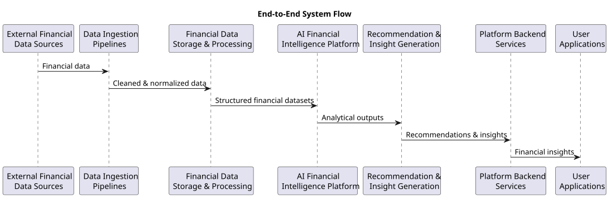
User Interaction Flow
Users interact with the Multiplus platform through web or mobile applications. These applications provide interfaces for viewing financial data, managing investments, and receiving financial recommendations.
When a user performs an action within the platform, the request flows through several system components before generating a response.
A typical interaction flow is illustrated below:
- User Action
- ↓
- User Interface (Web or Mobile Application)
- ↓
- API Gateway
- ↓
- Backend Platform Services
- ↓
- AI Intelligence Platform
- ↓
- Recommendation or Insight Response
- ↓
- User Interface
This structure ensures that the complexity of financial analysis and AI computation remains hidden behind platform services that manage system interactions.
The following sequence diagram illustrates the user interaction flow.
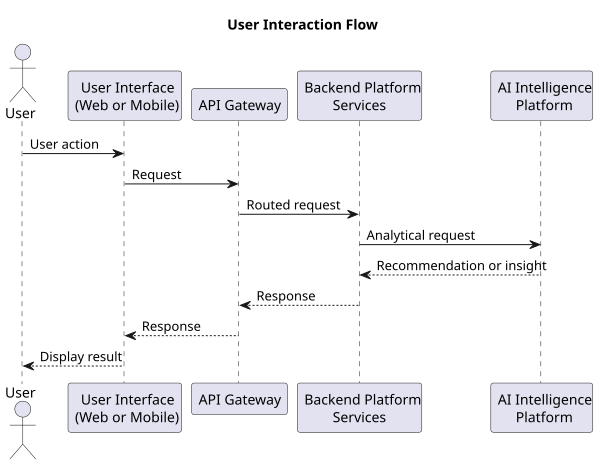
Financial Data Flow
Financial data is the primary input to the AI Financial Intelligence Platform. This data originates from multiple sources and must be processed through structured pipelines before it can be used by analytical systems.
The financial data flow within the system follows this sequence:
External Financial Data Providers
↓
Data Integration Layer
↓
Data Ingestion Pipelines
↓
Data Cleaning and Normalization
↓
Financial Data Storage
↓
Feature Engineering
↓
AI Financial Intelligence Platform
This pipeline ensures that all financial data used by the AI platform is validated, standardized, and enriched with relevant financial features.
AI Intelligence Processing
The AI Intelligence Layer performs the analytical operations required to interpret financial data and generate insights.
This layer consists of several analytical modules that operate on structured financial datasets.
Key analytical components include:
- financial data interpretation modules
- user financial profile generation systems
- portfolio intelligence modules
- financial product evaluation engines
- recommendation generation pipelines
- AI agent reasoning systems
- The internal intelligence workflow can be illustrated as follows:
- Structured Financial Data
- ↓
- User Financial Profile Construction
- ↓
- Portfolio Intelligence Analysis
- ↓
- Risk Profiling
- ↓
- Product Evaluation
- ↓
- Recommendation Engine
- ↓
- Explainable Financial Insights
These processes collectively transform financial data into actionable insights that support user financial decision-making.
Data Infrastructure Architecture
The Data Infrastructure Layer supports the entire financial intelligence platform by providing storage, processing, and retrieval capabilities for financial data.
This layer includes several specialized data systems designed to handle different types of financial information.
Typical data infrastructure components include:
- Data ingestion pipelines for collecting financial data
- Data lake storage for raw financial datasets
- Relational databases for structured financial data
- Feature stores for machine learning features
- Vector databases for document embeddings and semantic search
- The architecture of the data infrastructure layer can be represented as follows:
- Data Ingestion Pipelines
- ↓
- Raw Data Storage (Data Lake)
- ↓
- Data Processing and Normalization
- ↓
- Structured Financial Databases
- ↓
- Feature Store
- ↓
- AI Intelligence Systems
This infrastructure ensures that financial data can be efficiently stored and retrieved by analytical systems.
External Integration Layer
The Multiplus platform interacts with multiple external systems that provide financial data and financial services.
External integrations may include:
- banking systems
- financial data aggregators
- asset management companies
- investment platforms
- market data providers
These integrations typically occur through secure APIs or document ingestion pipelines.
The integration architecture can be illustrated as follows:
- External Financial Institutions
- ↓
- Secure API Integrations
- ↓
- Multiplus Data Integration Layer
- ↓
- Internal Data Pipelines
This integration layer ensures that financial data is securely transmitted to the platform while maintaining compliance with financial data protection standards.
Architectural Benefits
The architecture of the Multiplus AI Financial Intelligence Platform provides several key advantages.
These include:
- clear separation between platform services and intelligence systems
- scalable infrastructure for financial data processing
- modular AI systems that can evolve independently
- flexible integration with external financial providers
- consistent financial data processing pipelines
This architectural approach allows the system to support both current financial intelligence capabilities and future expansion into more advanced AI-driven financial services.
Phase 1 Risk Score Explanation Flow
Phase 1 AI integration includes natural-language explanations of the user’s risk score. The following diagram shows the flow: the user requests a risk score explanation from the frontend; the backend loads the risk score and explainability payload; the AI module builds a prompt from the risk score, bucket, and components and calls the model server (vLLM or Ollama); the LLM returns generated text; the explanation is returned to the user.
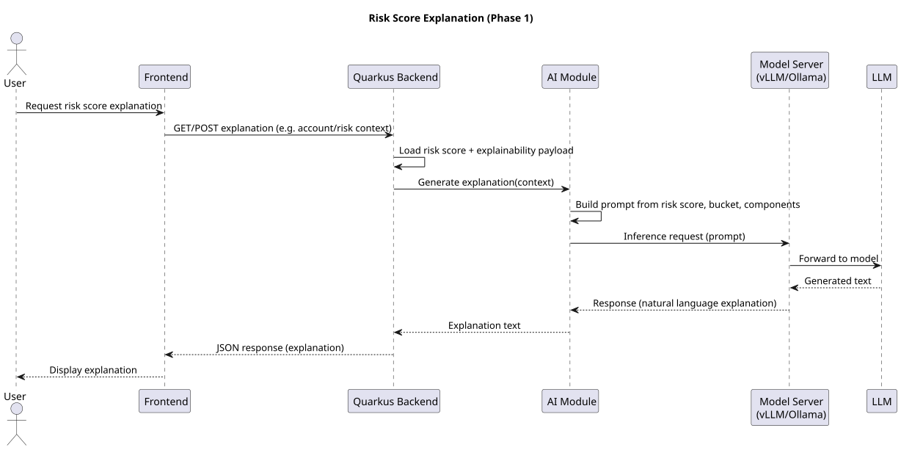
The next section describes the core system layers in greater detail and explains how each layer contributes to the operation of the Multiplus AI Financial Intelligence Platform.
Core System Layers
The Multiplus AI Financial Intelligence Platform is organized into a set of core system layers that separate responsibilities across user interaction, operational services, artificial intelligence processing, and financial data infrastructure.
This layered architecture enables the platform to maintain modularity while supporting complex financial intelligence workflows. Each layer has a clearly defined role and interacts with adjacent layers through controlled interfaces.
The core system layers are:
User Layer
Platform Layer
AI Intelligence Layer
Data Infrastructure Layer
External Integrations
These layers together form the operational structure of the platform.
User Layer
The User Layer represents the entry point through which users interact with the Multiplus platform. It provides interfaces that allow users to view financial insights, manage investments, and interact with financial services offered by the platform.
This layer typically includes:
- web applications
- mobile applications
- financial dashboards
- portfolio visualization interfaces
- recommendation display interfaces
- The primary responsibilities of the user layer include:
- presenting financial insights and recommendations
- collecting user financial preferences
- enabling investment actions through platform services
- managing user consent for financial data access
- displaying portfolio and financial performance information
- The user layer communicates with backend services through secure APIs.
- A simplified interaction model is shown below:
- User
- ↓
- Web / Mobile Interface
- ↓
- Platform API Services
The user interface does not directly interact with AI models or raw financial datasets. All analytical operations occur within deeper layers of the platform architecture.
Platform Layer
The Platform Layer functions as the operational backbone of the Multiplus system. It coordinates system workflows, manages application logic, and exposes service interfaces that connect user applications with the intelligence and data infrastructure layers.
This layer typically consists of backend services implemented as modular microservices or service components.
Core responsibilities of the platform layer include:
- user authentication and authorization
- user account and profile management
- financial product catalog management
- API orchestration
- integration with external financial providers
- delivery of recommendations and insights
- orchestration of AI intelligence workflows
- Typical services within the platform layer may include:
- authentication services
- user profile services
- portfolio management services
- recommendation delivery services
- financial product catalog services
- API gateway and routing systems
- A simplified representation of the platform layer architecture is shown below:
- User Interface
- ↓
- API Gateway
- ↓
- Backend Platform Services
- ↓
- AI Intelligence Platform
The platform layer ensures that all interactions with the AI platform and financial data infrastructure occur through controlled service interfaces.
AI Intelligence Layer
The AI Intelligence Layer is the analytical core of the Multiplus system. It performs financial data interpretation, portfolio analysis, product evaluation, and recommendation generation.
This layer transforms structured financial datasets into meaningful insights that can be delivered to users.
Major components of the AI intelligence layer include:
- financial data interpretation systems
- financial profile construction modules
- portfolio intelligence systems
- risk profiling models
- financial product evaluation engines
- recommendation generation pipelines
- AI agent-based reasoning systems
These components operate on financial datasets produced by the data infrastructure layer.
The internal processing pipeline of the AI intelligence layer can be conceptualized as follows:
- Structured Financial Data
- ↓
- Financial Data Interpretation
- ↓
- User Financial Profile Construction
- ↓
- Portfolio Intelligence
- ↓
- Risk Profiling
- ↓
- Product Evaluation
- ↓
- Recommendation Engine
- ↓
- Financial Insights
The following sequence diagram illustrates the AI intelligence processing pipeline.
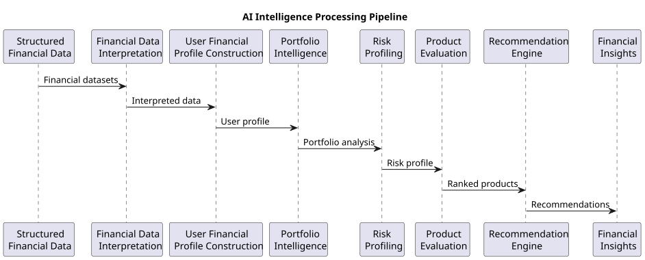
The AI intelligence layer is designed to support both deterministic financial models and AI-driven reasoning systems such as large language models operating through agent-based architectures.
Outputs generated by this layer are delivered to the platform layer for presentation to users.
Data Infrastructure Layer
The Data Infrastructure Layer provides the storage, processing, and management capabilities required to support financial data operations within the platform.
This layer is responsible for collecting financial data from external sources, transforming it into structured datasets, and making it available for analysis by AI systems.
Key responsibilities of this layer include:
- financial data ingestion
- financial document ingestion
- data cleaning and normalization
- financial feature generation
- time-series data management
- structured data storage
- machine learning feature storage
- The data infrastructure layer may include several specialized data systems, such as:
- data ingestion pipelines
- raw data storage (data lake)
- relational databases for structured financial data
- feature stores for machine learning systems
- vector databases for document intelligence
- The data pipeline architecture can be illustrated as follows:
- External Financial Data
- ↓
- Data Ingestion Pipelines
- ↓
- Raw Data Storage
- ↓
- Data Cleaning and Normalization
- ↓
- Structured Financial Databases
- ↓
- Feature Store
- ↓
- AI Intelligence Layer
This infrastructure ensures that financial data used by the AI platform is validated, consistent, and organized for efficient analysis.
External Integrations
The External Integrations layer represents the external systems and financial data providers that supply information to the Multiplus platform.
These integrations allow the platform to retrieve financial data required for constructing user financial profiles and performing investment analysis.
External systems may include:
- banking institutions
- financial data aggregators
- asset management companies
- investment platforms
- market data providers
- financial document uploads from users
- Examples of financial data obtained from these sources include:
- bank account balances
- transaction histories
- investment holdings
- portfolio valuations
- financial product information
- market benchmark indices
External systems typically communicate with the platform through secure APIs, consent-based data access mechanisms, or document ingestion pipelines.
A simplified external integration flow is shown below:
Banks and Financial Institutions
↓
Secure API Integrations
↓
Multiplus Data Integration Layer
↓
Internal Data Pipelines
These integrations form the foundation of the platform’s financial data ecosystem.
Layer Interaction Model
The interaction between the system layers creates a continuous data and intelligence pipeline.
The overall interaction model can be summarized as follows:
- External Financial Systems
- ↓
- Data Infrastructure Layer
- ↓
- AI Intelligence Layer
- ↓
- Platform Layer
- ↓
- User Layer
Each layer performs specialized tasks while maintaining clear boundaries between operational services, data processing systems, and intelligence components.
This layered architecture enables the Multiplus platform to support scalable financial intelligence services while maintaining modular system design.
ARCHITECTURE DIAGRAMS
This section is an index of all architecture and sequence diagrams used in the Multiplus AI documentation. Diagrams are defined once in the main documentation; the links below take you to the canonical section where each diagram appears.
- AI Platform Flow — High-level AI platform interaction flow (AI Platform Design).
- AI Data Flow — AI data flow and pipeline architecture (AI Platform Design).
- Risk Explanation Flow — Phase 1 risk score explanation (System Architecture).
- Portfolio Recommendation Flow — Phase 1 portfolio recommendation explanation (Recommendation Engine).
- Document OCR Flow — Phase 1 document OCR processing (Document Intelligence).
- End-to-End System Flow — Data flows from external sources through ingestion, storage, AI platform, and recommendations (System Architecture).
- User Interaction Flow — Request path from user through UI, gateway, backend, and AI platform (System Architecture).
- Data Ingestion Pipeline — Integration of external sources through extraction and enrichment (Data Architecture).
- AI Intelligence Processing — Internal pipeline from structured data to recommendation engine and insights (System Architecture).
- Agent Reasoning Workflow — Context builder, tools, and LLM coordination (Agent Architecture).
- Trigger Processing — Event-driven flow from detection through dispatcher to AI modules (Triggers).
- Recommendation Generation — Full flow from user request through analysis and validation to recommendations (Recommendation Engine).
- System Monitoring — Platform and AI metrics to monitoring and alerting (Monitoring).
AI PLATFORM DESIGN
AI Platform Overview
The AI Financial Intelligence Platform forms the analytical core of the Multiplus system. It is responsible for interpreting financial data, constructing financial intelligence models, and generating insights that support personalized investment recommendations and financial decision-making.
While the broader Multiplus platform manages user interactions, financial product access, and system orchestration, the AI platform performs the computational analysis required to transform raw financial data into structured intelligence.
The AI platform operates as a modular subsystem that integrates financial data processing pipelines, analytical models, and large language model (LLM)–based reasoning systems. It is designed to operate at scale, processing financial data across large user populations while maintaining consistent analytical frameworks.
This section provides a conceptual overview of the AI platform, including its role in the system architecture, its core responsibilities, and the internal modules that support its operation.
Role of the AI Platform
The primary role of the AI platform is to convert financial data into actionable financial intelligence.
Financial data collected by the platform originates from multiple sources including transaction histories, investment portfolios, financial documents, and financial product datasets. These data sources must be interpreted and analyzed before meaningful insights can be generated.
The AI platform performs this transformation through a sequence of analytical processes that include:
- financial data interpretation
- user financial profile construction
- portfolio intelligence generation
- financial product evaluation
- recommendation generation
- financial document understanding
The outputs produced by the AI platform are structured intelligence artifacts that can be consumed by other platform services.
These outputs may include:
- financial insights
- portfolio analysis results
- risk scores
- investment recommendations
- explainable recommendation reasoning
The AI platform therefore functions as a centralized intelligence engine that powers multiple services within the Multiplus ecosystem.
Position in the Multiplus Architecture
Within the broader platform architecture, the AI platform operates between the data infrastructure layer and the platform application services.
The AI system consumes structured financial datasets produced by the data infrastructure layer and produces intelligence outputs that are delivered to backend services.
The architectural placement of the AI platform can be illustrated as follows:
- External Financial Data Sources
- ↓
- Data Infrastructure Layer
- ↓
- AI Financial Intelligence Platform
- ↓
- Platform Backend Services
- ↓
- User Applications
This separation ensures that analytical processes remain isolated from operational platform services while still providing intelligence capabilities to the system.
Core Functional Modules
The AI platform is composed of several core modules that perform specialized analytical tasks. Each module is responsible for a specific part of the financial intelligence pipeline.
The major modules of the AI platform include:
- Data Extraction
- Data Enrichment
- Data Ingestion
- Data Management
- Document Management
- Recommendation Engine
Each module interacts with financial datasets and other system components to perform specific analytical functions.
The high-level structure of the AI platform can be represented as follows:
- Financial Data Inputs
- ↓
- Data Extraction
- ↓
- Data Enrichment
- ↓
- Data Ingestion
- ↓
- Data Management
- ↓
- Document Management
- ↓
- Recommendation Engine
- ↓
- Financial Insights
This modular structure allows the AI platform to maintain clear processing stages while enabling independent development and optimization of individual components.
Integration with AI Models
In addition to deterministic financial models, the platform integrates large language models (LLMs) and AI agent architectures to support advanced reasoning capabilities.
These AI models enable the platform to perform tasks such as:
- interpreting complex financial contexts
- extracting information from financial documents
- generating structured explanations for recommendations
- coordinating analytical tools within agent workflows
The AI models operate through a controlled agent architecture that interacts with structured financial datasets and analytical tools.
This architecture ensures that AI outputs remain structured, explainable, and aligned with the platform’s financial intelligence objectives.
Data-Driven Intelligence Workflow
The AI platform operates through a data-driven intelligence workflow that continuously processes financial information and generates analytical outputs.
The workflow can be summarized as follows:
- Financial Data Sources
- ↓
- Data Extraction and Processing
- ↓
- Financial Data Enrichment
- ↓
- User Financial Profile Construction
- ↓
- Portfolio Intelligence
- ↓
- Product Evaluation
- ↓
- Recommendation Generation
- ↓
- Financial Insights
This pipeline ensures that financial intelligence is generated consistently as new financial data becomes available.
AI Platform as an Intelligence Service
The AI platform functions as a shared intelligence service within the Multiplus ecosystem.
Backend platform services interact with the AI system through defined interfaces that allow them to request analytical outputs such as:
- user financial profiles
- portfolio analysis results
- risk scores
- product recommendations
- document interpretation results
By exposing these capabilities as platform services, the AI platform enables multiple features within the Multiplus system to leverage financial intelligence capabilities.
Design Goals of the AI Platform
The AI platform is designed to support several key operational goals:
- scalable financial data processing
- consistent financial analysis frameworks
- explainable financial recommendations
- modular AI system architecture
- continuous financial intelligence generation
These goals ensure that the platform can support both current financial services and future expansion into more advanced AI-driven financial advisory capabilities.
Multiplus AI Integration Architecture and Phased Evolution
The following describes the actual architecture decisions for integrating AI into the Multiplus platform. The core platform remains a Quarkus modular monolith; AI capabilities are integrated incrementally rather than as a separate, full-scale AI microservice from the outset.
Real System Architecture
The integration of AI with the Multiplus platform follows this flow:
Frontend
↓
Quarkus Backend
↓
AI Modules
↓
Model Serving Layer
↓
Self-hosted AI Models
The frontend (web applications) communicates with the Quarkus backend via REST APIs. The backend acts as the orchestration layer for all platform and AI workflows. AI capabilities are implemented as modules within the existing backend process. These AI modules call a model serving layer through internal APIs. The model serving layer (e.g. vLLM or Ollama) runs on self-hosted GPU infrastructure and executes open-source AI models. No external AI APIs (OpenAI, Anthropic, Google, or similar) are used; all inference runs within the Multiplus infrastructure.
Backend AI Module
The backend AI module is responsible for:
- risk explanation generation (natural language explanation of an already calculated risk score)
- portfolio recommendation explanations (natural language explanation for allocation and fund selection)
- document intelligence pipelines (e.g. OCR, extraction of structured financial data from documents)
- future financial insights (extensible for additional AI-driven outputs)
The AI module invokes the model server through internal APIs only. The model runtime is deployed separately from the backend application but within the same infrastructure environment (e.g. same VPC or data center). This keeps sensitive financial data and inference on controlled infrastructure while allowing the backend to remain the single orchestration point for business logic and AI calls.
Self-Hosted Model Infrastructure
Models used by the platform are:
- open-source
- downloaded and stored locally on Multiplus infrastructure
- served from internal GPU servers via a model serving layer (e.g. vLLM or Ollama)
The model serving layer provides an HTTP or gRPC API that the backend AI module calls. Model weights are not shipped with the application; they are loaded and run by the model server. This separation allows GPU resources to be scaled or updated independently of the application server.
Phased AI Evolution
The AI platform will evolve incrementally rather than introducing a full AI stack at once.
Phase 1 — Initial AI Integration
- LLM explanations for risk scores and portfolio recommendations
- document OCR for scanned or image-based financial documents
- basic AI pipelines (e.g. trigger OCR on upload, call LLM with context for explanation generation)
Phase 2 — Retrieval and Enrichment
- embedding generation for financial text and documents
- vector database for storing embeddings
- RAG (retrieval-augmented generation) for grounding LLM responses in platform data
Phase 3 — Advanced Capabilities
- advanced AI capabilities (e.g. richer financial reasoning, multi-step analysis)
- financial intelligence models (e.g. classification, ranking) where appropriate
- optional conversational or agent-style interface
This phased approach allows the platform to deliver immediate value (explanations, OCR) while building toward a fuller AI capability set without requiring a full-scale AI platform deployment in the first release.
Reference: Phase 1 architecture diagrams. The following diagrams are embedded in the documentation for Phase 1 flows:
- Document OCR processing flow — see Document Intelligence → Phase 1 Document OCR Processing Flow.
- Portfolio recommendation explanation flow — see Recommendation Engine → Phase 1 Portfolio Recommendation Explanation Flow.
- Risk score explanation flow — see System Architecture → Phase 1 Risk Score Explanation Flow.
Multiplus AI Platform and Data Flows
Multiplus AI Platform Flow
The following diagram illustrates the high-level AI platform interaction flow.
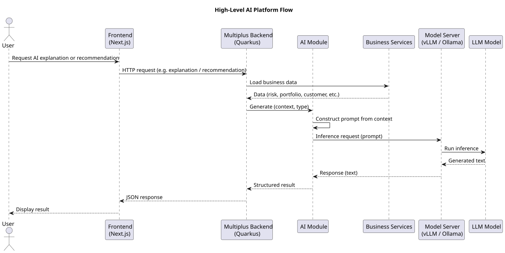
Multiplus AI Data Flow
The following diagram illustrates the AI data flow and pipeline architecture.
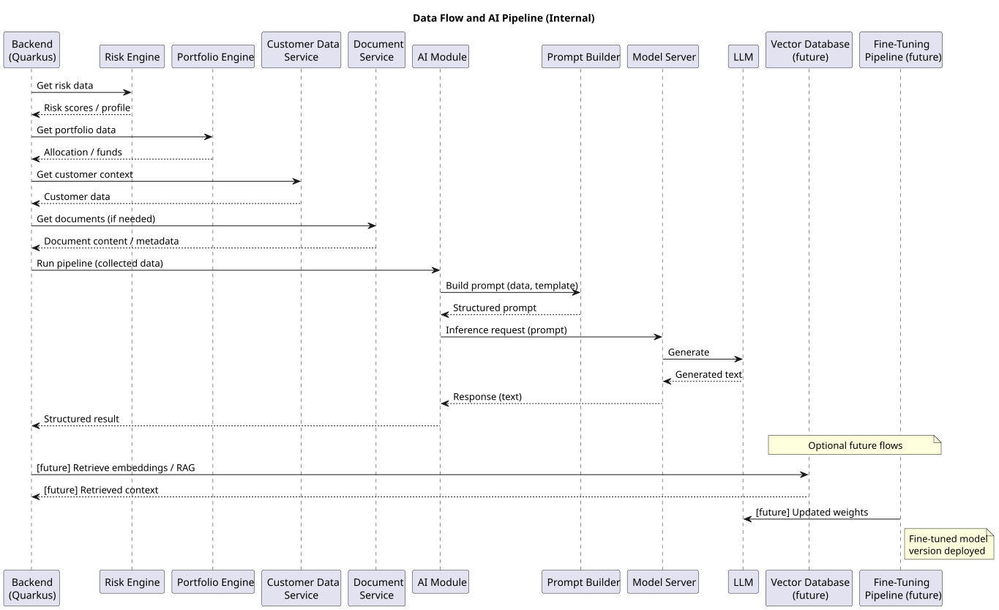
AI Platform Responsibilities
The AI Financial Intelligence Platform is responsible for transforming raw financial data into structured intelligence that can support financial analysis, portfolio evaluation, and investment recommendation generation.
Within the Multiplus architecture, the AI platform functions as the analytical engine that interprets financial datasets and generates insights used by platform services and user-facing applications.
The responsibilities of the AI platform extend across multiple domains of financial data processing and analysis. These responsibilities ensure that financial information is accurately interpreted, analyzed at scale, and translated into meaningful outputs.
The major responsibilities of the AI platform include:
- financial data interpretation
- financial profile construction
- portfolio intelligence generation
- financial product evaluation
- recommendation generation
- financial document understanding
- explainability and reasoning support
Each responsibility represents a critical stage in the financial intelligence pipeline.
Financial Data Interpretation
Financial data collected by the platform originates from a wide range of sources, including transaction records, investment holdings, financial product datasets, and financial documents.
Before analytical models can operate on this data, it must be interpreted and converted into structured financial information.
The AI platform performs several interpretation tasks, including:
- classification of financial transactions
- identification of income and expense patterns
- categorization of financial assets and liabilities
- mapping financial product identifiers
- detection of financial behavior patterns
These operations convert raw financial records into structured financial features that can be used by analytical systems.
The financial data interpretation workflow can be represented as follows:
- Raw Financial Data
- ↓
- Data Interpretation
- ↓
- Transaction Classification
- ↓
- Financial Feature Extraction
- ↓
- Structured Financial Data
The resulting structured datasets serve as the foundation for downstream financial analysis.
User Financial Profile Construction
One of the primary responsibilities of the AI platform is to construct comprehensive financial profiles for each user.
The financial profile represents a consolidated view of the user's financial situation and serves as the primary input for recommendation systems and financial analysis models.
Key components of the user financial profile may include:
- estimated income levels
- spending behavior patterns
- savings rates
- liquidity levels
- asset holdings
- investment allocation structures
- financial risk indicators
The AI platform aggregates financial signals from multiple data sources to construct these profiles.
A simplified profile construction workflow is shown below:
Transaction Data Portfolio Data
Financial Documents
↓
Financial Data Aggregation
↓
Financial Feature Generation
↓
User Financial Profile
Financial profiles are continuously updated as new financial data becomes available.
Portfolio Intelligence Generation
The AI platform is responsible for understanding and analyzing user investment portfolios.
Portfolio intelligence systems evaluate portfolio holdings to identify structural characteristics and potential risks.
Key portfolio intelligence functions include:
- asset classification across investment categories
- asset allocation analysis
- diversification measurement
- concentration risk detection
- historical portfolio performance evaluation
- The portfolio intelligence process can be illustrated as follows:
- Portfolio Holdings
- ↓
- Asset Classification
- ↓
- Allocation Analysis
- ↓
- Diversification Evaluation
- ↓
- Risk Identification
- ↓
- Portfolio Insights
These insights allow the system to determine whether the user's portfolio structure aligns with their financial objectives and risk tolerance.
Portfolio intelligence outputs also provide important context for the recommendation engine.
Financial Product Evaluation
The AI platform evaluates financial products available within the platform’s investment universe.
Financial product evaluation involves analyzing each product across multiple performance and risk metrics.
Typical evaluation dimensions include:
- long-term performance indicators
- volatility metrics
- risk-adjusted return measures
- benchmark performance comparisons
- expense ratios and cost structures
- These metrics are combined within structured product scoring models.
- The product evaluation workflow can be represented as follows:
- Financial Product Data
- ↓
- Metric Calculation
- ↓
- Performance Analysis
- ↓
- Risk Analysis
- ↓
- Product Scoring
The resulting product scores are used by the recommendation engine to identify suitable investment options.
Recommendation Generation
The recommendation generation process combines insights from multiple analytical systems to produce personalized financial recommendations.
The AI platform evaluates the relationship between the user’s financial profile, existing portfolio structure, and available financial products.
The recommendation process typically includes the following stages:
- financial profile evaluation
- risk tolerance analysis
- portfolio structure evaluation
- product universe filtering
- product ranking and scoring
- recommendation generation
- This workflow can be represented as follows:
- User Financial Profile
- ↓
- Risk Profiling
- ↓
- Portfolio Analysis
- ↓
- Product Filtering
- ↓
- Product Ranking
- ↓
- Recommendation Generation
The output of this process is a structured recommendation that includes suggested financial products and portfolio allocation guidance.
Financial Document Understanding
Financial documents contain important information that may not be accessible through structured APIs or data integrations.
The AI platform includes document intelligence systems capable of extracting financial information from documents such as:
- consolidated account statements
- bank statements
- portfolio reports
- financial summaries
- Document processing typically involves the following steps:
- document ingestion
- document format detection
- OCR processing (if required)
- structured data extraction
- financial entity recognition
- The document processing pipeline can be illustrated as follows:
- Financial Documents
- ↓
- Document Ingestion
- ↓
- OCR Processing
- ↓
- Information Extraction
- ↓
- Structured Financial Data
The extracted data is integrated into the platform’s financial data models and becomes available for analysis by other AI modules.
Explainability and Reasoning Support
Financial recommendation systems must provide transparent and explainable outputs, particularly in regulated financial environments.
The AI platform therefore includes mechanisms for generating structured explanations that describe the reasoning behind recommendations.
Explainability functions may include:
- explanation of portfolio analysis results
- description of risk profile assessments
- justification of product selection decisions
- summary of portfolio improvement suggestions
Large language models operating through agent-based architectures may assist in generating human-readable explanations based on structured analytical outputs.
This capability ensures that recommendations produced by the system remain interpretable and auditable.
Continuous Financial Intelligence Generation
The AI platform is designed to operate as a continuously running analytical system rather than a one-time recommendation generator.
As financial data changes over time, the platform updates financial profiles, portfolio intelligence metrics, and recommendation outputs.
Continuous intelligence generation enables the system to respond to events such as:
- changes in financial behavior
- updates to portfolio holdings
- shifts in market performance
- new financial product availability
By maintaining continuous analysis pipelines, the AI platform ensures that financial insights remain relevant and aligned with the evolving financial context of each user.
Data Extraction Module
The Data Extraction Module is the first operational component within the AI Financial Intelligence Platform. Its primary responsibility is to collect financial data from various sources and convert it into structured datasets that can be processed by downstream analytical modules.
Financial data entering the platform originates from heterogeneous sources including financial APIs, uploaded documents, transaction records, and investment datasets. These inputs often vary in format, structure, and completeness. The Data Extraction Module standardizes these inputs and prepares them for further processing.
This module acts as the initial transformation layer that bridges raw financial inputs and the structured data models used by the rest of the AI platform.
Purpose of the Module
The primary purpose of the Data Extraction Module is to retrieve financial data from internal and external sources and convert it into structured representations that can be used by analytical systems.
Key objectives of the module include:
- extracting financial data from structured APIs and data feeds
- parsing semi-structured datasets
- interpreting financial documents and reports
- identifying relevant financial entities
- converting heterogeneous data formats into standardized schemas
By performing these operations, the module ensures that all financial data entering the AI platform is organized into consistent and analyzable formats.
Role in the AI Platform
The Data Extraction Module operates at the beginning of the financial intelligence pipeline. It interacts directly with the data infrastructure layer and external integrations to collect financial data.
Its outputs are delivered to the Data Enrichment Module, which performs additional feature engineering and financial signal generation.
The position of the module within the AI platform pipeline can be illustrated as follows:
- External Financial Data Sources
- ↓
- Data Infrastructure Layer
- ↓
- Data Extraction Module
- ↓
- Data Enrichment Module
- ↓
- Financial Intelligence Systems
This placement ensures that downstream modules always operate on structured and standardized financial datasets.
Data Inputs
The Data Extraction Module processes multiple categories of financial inputs. These inputs may originate from both internal platform systems and external financial providers.
Common input sources include:
- Financial APIs
- bank account data
- transaction histories
- investment holdings
- portfolio valuation data
- financial product datasets
- Market Data Providers
- benchmark index data
- financial instrument prices
- market performance indicators
- Financial Documents
- consolidated account statements
- bank statements
- portfolio reports
- financial summaries
- User-Generated Inputs
- uploaded financial documents
- manually entered financial data
- investment preferences
Each input source may present data using different formats and schemas, requiring flexible extraction mechanisms.
Data Outputs
The Data Extraction Module produces structured financial datasets that can be used by downstream AI systems.
Typical outputs include:
- normalized transaction datasets
- structured portfolio holdings records
- financial product data tables
- extracted financial document entities
- standardized financial identifiers
These outputs are stored within the data infrastructure layer and forwarded to the Data Enrichment Module for additional processing.
The output flow can be represented as follows:
- Raw Financial Inputs
- ↓
- Data Extraction Module
- ↓
- Structured Financial Data
- ↓
- Data Enrichment Module
This structured representation allows downstream systems to operate on consistent financial data models.
Internal Components
The Data Extraction Module consists of several internal components that collectively perform financial data retrieval and transformation.
Data Source Connectors
Data source connectors manage communication with external financial providers and internal platform systems.
These connectors typically interact with:
financial institution APIs
market data APIs
financial data aggregators
internal platform data services
The connectors retrieve raw financial data and deliver it to the extraction pipeline.
API Data Parsers
API data parsers convert raw API responses into structured data records.
Typical tasks performed by these parsers include:
- mapping API fields to internal financial schemas
- validating response formats
- identifying missing or inconsistent values
- converting numerical and date formats
These parsers ensure that structured API data can be integrated into the platform’s financial data models.
Document Parsing Engine
The document parsing engine extracts financial information from uploaded or ingested documents.
This component may perform operations such as:
- document format detection
- table extraction
- financial entity recognition
- document segmentation
When documents contain scanned text or images, the parsing engine may interact with OCR systems before extracting financial data.
Financial Entity Recognition
Financial entity recognition systems identify and extract key financial entities from raw datasets.
Examples of financial entities include:
- financial institutions
- investment products
- transaction categories
- asset classes
- benchmark indices
Entity recognition ensures that extracted financial data can be mapped to consistent internal identifiers.
Schema Normalization Layer
The schema normalization layer converts heterogeneous data formats into standardized financial schemas.
This layer performs operations such as:
- field mapping across different data providers
- normalization of financial identifiers
- consistent representation of monetary values
- standardized timestamp formatting
Schema normalization is essential for ensuring interoperability across downstream modules.
Data Extraction Workflow
The full data extraction workflow involves several processing stages that transform raw financial inputs into structured datasets.
The workflow can be represented as follows:
- External Data Sources
- ↓
- Data Source Connectors
- ↓
- API Data Parsers / Document Parsers
- ↓
- Financial Entity Recognition
- ↓
- Schema Normalization
- ↓
- Structured Financial Data
Each stage of the workflow ensures that financial information becomes progressively more structured and consistent.
Design Considerations
The Data Extraction Module must be designed to handle the complexity and variability of financial data sources.
Important design considerations include:
- Scalability
The module must support ingestion of large volumes of financial data across many users and data sources.
Data Reliability
Extraction pipelines must detect incomplete or inconsistent data and implement validation mechanisms.
Extensibility
New financial data providers and document formats should be easily integrated without major architectural changes.
Fault Tolerance
Failures in one data source should not disrupt the overall data extraction process.
Security and Compliance
Sensitive financial data must be processed securely with appropriate encryption and access control mechanisms.
Importance in the AI Platform
The Data Extraction Module forms the foundation of the entire financial intelligence system.
If financial data is incorrectly extracted or inconsistently structured, downstream analytical modules may produce inaccurate insights or recommendations.
By ensuring that financial inputs are accurately captured and normalized, the Data Extraction Module enables reliable operation of the entire AI Financial Intelligence Platform.
The next section describes the Data Enrichment Module, which processes the extracted financial datasets to generate financial features, behavioral signals, and derived metrics used by analytical models.
Data Enrichment Module
The Data Enrichment Module processes structured financial datasets produced by the Data Extraction Module and augments them with derived financial features, classifications, and analytical signals. Its purpose is to transform raw financial records into enriched datasets that contain meaningful financial indicators required for analysis, modeling, and recommendation generation.
While the Data Extraction Module focuses on retrieving and structuring financial data, the Data Enrichment Module adds analytical value by computing additional attributes and contextual information. These enriched datasets provide the foundation for user financial profiling, portfolio intelligence, and recommendation algorithms.
The enrichment process ensures that financial data becomes more interpretable and suitable for use by AI models and analytical engines.
Purpose of the Module
The primary objective of the Data Enrichment Module is to enhance structured financial datasets by generating additional financial features and contextual signals.
Key goals of this module include:
- deriving financial indicators from raw transaction and portfolio data
- categorizing financial records into meaningful classifications
- computing financial metrics used by analytical models
- associating financial records with standardized identifiers
- preparing datasets for downstream financial intelligence systems
By performing these operations, the module ensures that financial datasets contain the contextual information required for deeper financial analysis.
Role in the AI Platform Pipeline
The Data Enrichment Module operates immediately after the Data Extraction Module. It receives normalized financial datasets and augments them with derived features and metadata.
The position of the module within the AI platform architecture can be illustrated as follows:
- External Financial Data Sources
- ↓
- Data Extraction Module
- ↓
- Data Enrichment Module
- ↓
- Data Ingestion Module
- ↓
- Financial Intelligence Systems
This stage represents the transformation of raw structured data into enriched analytical datasets.
Data Inputs
The Data Enrichment Module consumes structured financial data generated by the Data Extraction Module.
Typical input datasets include:
- Transaction Records
- transaction timestamps
- transaction descriptions
- transaction amounts
- account identifiers
- Portfolio Holdings
- investment product identifiers
- units or quantity of holdings
- valuation data
- asset classification information
- Financial Product Data
- product category
- historical performance metrics
- benchmark references
- Financial Document Data
- extracted investment holdings
- statement metadata
- transaction tables
- These datasets are used to generate enriched financial features.
Data Outputs
The Data Enrichment Module produces enriched financial datasets that contain additional features and classifications required for financial intelligence analysis.
Typical outputs include:
- categorized transaction datasets
- income and expense indicators
- investment classification labels
- portfolio allocation metrics
- financial behavioral indicators
- derived financial ratios
These outputs are passed to the Data Ingestion and Data Management modules for storage and further analytical processing.
The output flow can be summarized as follows:
- Structured Financial Data
- ↓
- Data Enrichment Module
- ↓
- Enriched Financial Datasets
- ↓
- Financial Intelligence Systems
Internal Components
The Data Enrichment Module consists of multiple internal components responsible for generating financial features and contextual signals.
Transaction Classification Engine
The transaction classification engine categorizes financial transactions into meaningful categories.
Common transaction categories include:
- income transactions
- household expenses
- discretionary spending
- investment contributions
- loan payments
This classification process enables the system to detect financial behavior patterns and estimate income and expense structures.
Income and Expense Detection
Income and expense detection systems identify recurring financial flows within transaction data.
Typical outputs include:
- monthly income estimation
- recurring expense detection
- savings rate estimation
- liquidity analysis
- These signals contribute to the construction of user financial profiles.
- Investment Classification Engine
The investment classification engine categorizes investment products into standardized financial categories.
Examples of investment classifications include:
- equity funds
- debt instruments
- hybrid funds
- international investments
- sector-specific funds
Standardized classification enables consistent portfolio analysis across different investment products.
Financial Metric Computation
The enrichment module calculates financial metrics used by analytical models and recommendation systems.
Examples of derived financial metrics include:
- portfolio allocation percentages
- asset class exposure
- volatility indicators
- performance comparison metrics
- investment concentration ratios
These metrics provide quantitative signals used by portfolio intelligence modules.
Behavioral Signal Detection
Behavioral signal detection systems analyze financial activity patterns to identify meaningful behavioral indicators.
Examples include:
- spending pattern detection
- savings consistency signals
- investment frequency patterns
- financial stability indicators
These behavioral signals contribute to the construction of user financial profiles and risk scoring systems.
Entity Mapping and Standardization
Financial data often contains multiple representations of the same financial entities.
The entity mapping system resolves these inconsistencies by mapping financial records to standardized identifiers.
Examples include:
- mapping financial institutions to standardized IDs
- mapping investment products to canonical product identifiers
- associating transactions with merchant categories
Entity mapping ensures that financial datasets remain consistent across the platform.
Data Enrichment Workflow
The enrichment process consists of several sequential processing steps that add analytical value to structured financial datasets.
The workflow can be represented as follows:
- Structured Financial Data
- ↓
- Transaction Classification
- ↓
- Income and Expense Detection
- ↓
- Investment Classification
- ↓
- Financial Metric Computation
- ↓
- Behavioral Signal Detection
- ↓
- Entity Mapping
- ↓
- Enriched Financial Data
Each stage progressively increases the analytical value of the financial datasets.
Design Considerations
The Data Enrichment Module must be designed to support large-scale financial data processing while maintaining accuracy and consistency.
Key design considerations include:
- Accuracy of Financial Classification
Incorrect transaction classification or investment categorization can lead to inaccurate financial insights.
Extensibility
New financial features and metrics should be easily incorporated into the enrichment pipeline as analytical models evolve.
Performance Efficiency
The enrichment process must support processing of large financial datasets without introducing system bottlenecks.
Consistency of Financial Metrics
Derived financial features must follow standardized definitions to ensure consistency across the platform.
Traceability
Each derived feature should maintain traceability to the underlying financial records used to generate it.
Importance in the AI Platform
The Data Enrichment Module significantly increases the analytical value of financial datasets.
Without enrichment, raw financial records would provide limited insights. Enriched financial datasets enable the platform to perform complex financial analysis, behavioral modeling, and portfolio evaluation.
These enriched datasets become the primary inputs used by downstream systems responsible for financial profiling, risk analysis, and recommendation generation.
The next section describes the Data Ingestion Module, which manages the integration of enriched financial datasets into the platform’s persistent data infrastructure.
Data Ingestion Module
The Data Ingestion Module is responsible for integrating enriched financial datasets into the platform’s persistent data infrastructure. It ensures that all financial data generated by the extraction and enrichment processes is stored in appropriate storage systems and made available for analytical processing by the AI Intelligence Layer.
While the Data Extraction Module retrieves financial data and the Data Enrichment Module generates derived financial features, the Data Ingestion Module manages the movement of this data into structured storage systems such as relational databases, data lakes, feature stores, and vector databases.
The module acts as the gateway between the data processing pipeline and the platform’s long-term financial data infrastructure.
Purpose of the Module
The primary objective of the Data Ingestion Module is to reliably store financial data and ensure that it is accessible to downstream analytical systems.
Key responsibilities include:
- ingestion of enriched financial datasets into storage systems
- maintaining data consistency across financial data repositories
- managing batch and streaming data ingestion pipelines
- ensuring data integrity and validation before storage
- enabling efficient retrieval of financial datasets
This module ensures that financial data becomes a persistent and queryable resource within the platform.
Role in the AI Platform Pipeline
The Data Ingestion Module operates after the Data Enrichment Module and before the Data Management Module.
Its position within the AI platform pipeline can be illustrated as follows:
- Data Extraction Module
- ↓
- Data Enrichment Module
- ↓
- Data Ingestion Module
- ↓
- Data Management Module
- ↓
- AI Intelligence Systems
By storing enriched datasets in persistent infrastructure, the ingestion module enables analytical systems to access financial data efficiently.
Data Inputs
The Data Ingestion Module receives enriched financial datasets generated by the Data Enrichment Module.
Typical input data structures include:
- Enriched Transaction Data
- transaction identifiers
- categorized transaction types
- merchant classifications
- financial behavior indicators
- Portfolio Holdings Data
- investment product identifiers
- asset class classifications
- allocation percentages
- valuation metrics
- Financial Product Data
- performance indicators
- risk metrics
- category classifications
- Derived Financial Features
- income and expense estimates
- savings behavior indicators
- financial stability signals
These datasets represent processed financial information ready for long-term storage.
Data Outputs
The Data Ingestion Module stores financial datasets within the platform’s data infrastructure.
Typical storage targets include:
- relational financial databases
- data lake storage for raw and historical datasets
- feature stores for machine learning features
- vector databases for document embeddings
The ingestion process ensures that financial data becomes accessible to analytical modules and AI models.
The storage flow can be represented as follows:
- Enriched Financial Data
- ↓
- Data Ingestion Module
- ↓
- Relational Databases
- Data Lake
- Feature Store
- Vector Database
Each storage system serves a specific purpose within the platform’s analytical infrastructure.
Internal Components
The Data Ingestion Module consists of several internal components responsible for data validation, pipeline orchestration, and storage management.
Ingestion Orchestrator
The ingestion orchestrator coordinates the ingestion workflow and manages the flow of datasets into various storage systems.
Responsibilities include:
- scheduling ingestion tasks
- routing datasets to appropriate storage layers
- managing ingestion job execution
The orchestrator ensures that ingestion pipelines operate reliably and consistently.
Data Validation Engine
Before financial datasets are stored, they must be validated to ensure consistency and integrity.
The validation engine performs checks such as:
- schema validation
- detection of missing or corrupted data fields
- validation of financial identifiers
- verification of numerical values and timestamps
Invalid or inconsistent records may be flagged for correction or rejected from the ingestion pipeline.
Storage Adapters
Storage adapters manage communication with different storage systems within the platform.
These adapters are responsible for writing data to:
relational financial databases
distributed storage systems
machine learning feature stores
vector databases
Each storage adapter converts financial datasets into formats compatible with the target storage system.
Batch Ingestion Pipeline
Batch ingestion pipelines process large datasets at scheduled intervals.
Typical batch ingestion tasks include:
- daily financial data updates
- portfolio performance updates
- financial product dataset refreshes
- Batch pipelines are optimized for processing large volumes of data efficiently.
- Streaming Ingestion Pipeline
- Streaming ingestion pipelines support real-time data ingestion for events such as:
- incoming financial transactions
- portfolio updates
- document uploads
Streaming pipelines allow the system to update financial datasets in near real time.
Data Ingestion Workflow
The ingestion process involves several stages that ensure financial datasets are properly validated and stored.
The workflow can be represented as follows:
- Enriched Financial Data
- ↓
- Data Validation Engine
- ↓
- Ingestion Orchestrator
- ↓
- Batch or Streaming Pipelines
- ↓
- Storage Adapters
- ↓
- Persistent Data Storage
Each stage ensures that financial data is accurately stored and accessible for analysis.
Design Considerations
The Data Ingestion Module must be designed to support high data volumes while maintaining reliability and data consistency.
Important design considerations include:
- Scalability
The ingestion pipeline must support large-scale financial data ingestion across many users and financial data sources.
Fault Tolerance
Failures in ingestion processes should not cause data loss. The system must support retry mechanisms and failure recovery.
Data Integrity
Financial datasets must remain accurate and consistent throughout the ingestion process.
Latency
Streaming ingestion pipelines should minimize delays between data arrival and storage availability.
Schema Evolution
The ingestion system must accommodate evolving financial data schemas without disrupting existing datasets.
Importance in the AI Platform
The Data Ingestion Module ensures that enriched financial data becomes a persistent and reliable resource within the platform.
Without reliable ingestion infrastructure, analytical modules would not be able to access financial datasets efficiently, limiting the platform’s ability to generate insights and recommendations.
By maintaining consistent and scalable data ingestion pipelines, this module enables the AI Financial Intelligence Platform to operate as a continuously evolving financial analysis system.
The next section describes the Data Management Module, which governs how financial datasets are organized, indexed, and accessed by analytical systems and AI models.
Data Management Module
The Data Management Module governs how financial datasets are organized, indexed, maintained, and accessed across the Multiplus AI Financial Intelligence Platform. It provides the foundational infrastructure required to manage financial data at scale while ensuring reliability, consistency, and efficient retrieval.
While the Data Ingestion Module focuses on storing enriched financial datasets, the Data Management Module is responsible for maintaining the structure, integrity, and accessibility of those datasets throughout their lifecycle.
This module ensures that financial intelligence systems, AI models, and platform services can efficiently query and retrieve the financial data required for analysis and recommendation generation.
Purpose of the Module
The primary purpose of the Data Management Module is to maintain a well-organized financial data infrastructure that supports analytical workloads and AI model operations.
Key objectives include:
- managing structured financial datasets
- maintaining financial data schemas and relationships
- enabling efficient query and retrieval mechanisms
- supporting time-series financial data storage
- maintaining historical financial records
- providing access control and data governance
By organizing financial datasets effectively, the module enables the AI platform to perform complex financial analysis across large datasets.
Role in the AI Platform Pipeline
The Data Management Module operates after financial data has been ingested into the system. It serves as the operational layer that organizes stored datasets and exposes them to analytical systems.
Its position within the AI platform architecture can be represented as follows:
- Data Extraction Module
- ↓
- Data Enrichment Module
- ↓
- Data Ingestion Module
- ↓
- Data Management Module
- ↓
- AI Intelligence Systems
This layer acts as the interface between persistent financial storage and the AI intelligence layer.
Data Inputs
The Data Management Module receives datasets that have already been processed and ingested into the platform’s storage infrastructure.
Typical inputs include:
- Enriched Transaction Datasets
- categorized transactions
- financial behavior indicators
- merchant classifications
- Portfolio Holdings Data
- investment product identifiers
- asset classifications
- allocation metrics
- valuation records
- Financial Product Data
- product attributes
- historical performance metrics
- benchmark associations
- Derived Financial Features
- income estimates
- savings indicators
- portfolio diversification metrics
These datasets form the foundation of the platform’s financial intelligence data model.
Data Outputs
The Data Management Module provides organized and queryable financial datasets that can be consumed by analytical modules and AI models.
Typical outputs include:
- user financial profiles
- portfolio data views
- financial behavior datasets
- product evaluation datasets
- time-series financial data
These outputs are accessed by the AI intelligence layer through internal data services.
The data access flow can be represented as follows:
- Persistent Financial Storage
- ↓
- Data Management Module
- ↓
- Data Access Services
- ↓
- AI Intelligence Systems
This architecture ensures that analytical systems can retrieve financial datasets efficiently.
Internal Components
The Data Management Module contains several internal components responsible for maintaining financial data structure and accessibility.
Financial Data Schema Manager
The schema manager maintains the definitions of financial data models used by the platform.
Responsibilities include:
- defining table schemas for financial datasets
- maintaining relationships between financial entities
- supporting schema versioning as data models evolve
The schema manager ensures that financial datasets remain consistent and interpretable.
Data Indexing Engine
The indexing engine improves the efficiency of data retrieval operations by creating indexes on frequently queried financial attributes.
Examples of indexed fields include:
- user identifiers
- transaction timestamps
- financial product identifiers
- portfolio holdings
Efficient indexing enables analytical systems to query large financial datasets with minimal latency.
Time-Series Data Manager
Financial data is inherently time-dependent. The time-series data manager organizes financial datasets according to temporal structures.
Responsibilities include:
- maintaining historical transaction records
- tracking changes in portfolio holdings over time
- storing historical financial performance metrics
- supporting time-series financial analysis
This component allows the AI platform to perform longitudinal financial analysis.
Data Access Services
Data access services provide standardized interfaces through which analytical modules retrieve financial datasets.
These services expose APIs that allow internal systems to query:
user financial profiles
portfolio holdings
financial transaction histories
product performance datasets
The use of standardized access services ensures consistent data retrieval across the platform.
Data Governance and Access Control
Financial data is highly sensitive and requires strict governance policies.
The data governance system manages:
role-based access control
data access permissions
auditing of data access events
compliance with financial data protection standards
This component ensures that financial data remains secure and accessible only to authorized system components.
Data Management Workflow
The management of financial datasets follows a structured workflow that ensures data integrity and accessibility.
The workflow can be represented as follows:
- Ingested Financial Data
- ↓
- Schema Validation
- ↓
- Data Indexing
- ↓
- Time-Series Organization
- ↓
- Data Access Services
- ↓
- AI Intelligence Systems
Each stage ensures that financial datasets remain well-structured and accessible for analysis.
Design Considerations
The Data Management Module must support the complex requirements of financial intelligence systems.
Important design considerations include:
- Scalability
The system must handle large volumes of financial data across many users and financial products.
Consistency
Financial datasets must maintain consistent schema definitions and relationships.
Query Performance
Efficient indexing and optimized storage strategies are required for high-performance data retrieval.
Historical Data Retention
Financial intelligence systems often require long-term historical data for behavioral analysis and trend detection.
Data Security
Strict access control and auditing mechanisms must protect sensitive financial data.
Importance in the AI Platform
The Data Management Module ensures that financial datasets remain structured, accessible, and secure throughout the platform’s lifecycle.
Without effective data management, analytical systems would struggle to retrieve financial information efficiently, reducing the platform’s ability to generate timely insights and recommendations.
By maintaining a well-organized financial data infrastructure, this module enables the AI Financial Intelligence Platform to perform large-scale financial analysis with reliability and precision.
Document Management Module
The Document Management Module is responsible for ingesting, processing, and interpreting financial documents within the Multiplus AI Financial Intelligence Platform. Financial documents often contain critical information about investment holdings, transaction histories, and financial statements that may not be available through structured APIs.
This module enables the platform to extract structured financial data from documents such as consolidated account statements, bank statements, portfolio reports, and other financial records. By converting document-based information into structured datasets, the module expands the range of financial data that can be analyzed by the AI platform.
The Document Management Module integrates document ingestion pipelines, document parsing systems, OCR processing infrastructure, and financial entity extraction mechanisms.
Purpose of the Module
The primary objective of the Document Management Module is to transform financial documents into structured financial datasets that can be integrated into the platform’s financial data infrastructure.
Key goals include:
- ingestion of financial documents uploaded by users or external systems
- extraction of financial data from document contents
- conversion of unstructured document text into structured financial records
- identification of financial entities such as investment products and institutions
- integration of extracted data into the platform’s financial data models
This capability allows the AI platform to incorporate financial information that would otherwise remain inaccessible to automated systems.
Role in the AI Platform Pipeline
The Document Management Module operates alongside the data extraction and enrichment processes but focuses specifically on document-based financial inputs.
The module processes documents before sending extracted financial data to the data extraction and enrichment pipelines.
Its position within the AI platform architecture can be illustrated as follows:
- Financial Document Sources
- ↓
- Document Management Module
- ↓
- Structured Financial Data
- ↓
- Data Extraction and Enrichment Pipelines
- ↓
- Financial Intelligence Systems
This architecture ensures that document-derived financial data becomes part of the broader financial intelligence dataset.
Document Inputs
The Document Management Module processes several types of financial documents.
Common document inputs include:
- Consolidated Account Statements (CAS)
- mutual fund holdings
- investment transactions
- portfolio valuations
- Bank Statements
- transaction histories
- account balances
- payment records
- Investment Reports
- portfolio summaries
- investment performance reports
- asset allocation breakdowns
- Financial Summaries
- financial planning documents
- investment account statements
- Documents may be received in multiple formats including:
- PDF documents
- scanned documents
- image-based financial reports
- digital financial statements
- The module must support a wide variety of document structures and layouts.
Data Outputs
The Document Management Module produces structured financial datasets extracted from document contents.
Typical outputs include:
- investment holdings records
- financial transaction tables
- financial institution identifiers
- investment product identifiers
- portfolio valuation data
These outputs are forwarded to the Data Extraction and Data Enrichment modules for further processing and integration into the platform’s financial data infrastructure.
The document data flow can be represented as follows:
- Financial Documents
- ↓
- Document Management Module
- ↓
- Extracted Financial Entities
- ↓
- Structured Financial Data
- ↓
- AI Intelligence Systems
Internal Components
The Document Management Module consists of several internal components responsible for processing financial documents and extracting financial information.
Document Ingestion Engine
The document ingestion engine handles the intake of documents from users and external systems.
Responsibilities include:
- receiving uploaded documents
- verifying document formats
- storing raw document files in secure storage
- assigning document identifiers
This component ensures that documents are securely stored and available for processing.
Document Format Detection
Financial documents can vary widely in structure and format. The format detection component identifies the structure of each document and determines the appropriate parsing strategy.
Tasks performed include:
- identifying document layout patterns
- detecting structured tables within documents
- determining whether OCR processing is required
- This step ensures that documents are routed to the correct processing pipeline.
- Optical Character Recognition (OCR)
Many financial documents are scanned images that contain text embedded in image format. The OCR subsystem converts these images into machine-readable text.
OCR processing may include:
- text extraction from scanned documents
- detection of tabular structures
- recognition of numerical financial values
- The resulting text representation is passed to the document parsing engine.
- Document Parsing Engine
The document parsing engine interprets the text and structural elements of financial documents to identify relevant financial data.
Responsibilities include:
- extraction of transaction tables
- identification of investment holdings
- detection of portfolio valuation information
- segmentation of document sections
This component converts document content into structured intermediate representations.
Financial Entity Recognition
The entity recognition system identifies financial entities within extracted document data.
Examples of recognized entities include:
- financial institutions
- investment product names
- transaction categories
- portfolio identifiers
The system maps extracted entities to standardized internal identifiers used by the platform.
Document Metadata Manager
The metadata manager maintains contextual information associated with each processed document.
Examples of document metadata include:
- document source
- statement period
- document upload timestamp
- associated user identifier
Metadata enables the system to track document provenance and maintain data traceability.
Document Processing Workflow
The complete document processing pipeline consists of several stages that progressively convert raw document inputs into structured financial data.
The workflow can be represented as follows:
- Document Upload
- ↓
- Document Ingestion Engine
- ↓
- Document Format Detection
- ↓
- OCR Processing (if required)
- ↓
- Document Parsing Engine
- ↓
- Financial Entity Recognition
- ↓
- Structured Financial Data
Each stage contributes to extracting meaningful financial information from document content.
Design Considerations
Processing financial documents introduces several technical challenges that must be addressed by the system architecture.
Key design considerations include:
- Document Format Variability
Financial documents from different institutions may follow entirely different layouts and structures.
Extraction Accuracy
Incorrect data extraction can lead to inaccurate financial analysis and recommendations.
Scalability
The system must support processing large volumes of documents across many users.
Security and Privacy
Financial documents often contain sensitive personal information and must be processed within secure environments.
Traceability
Extracted financial data must maintain traceability to the source document for auditing and verification purposes.
Importance in the AI Platform
The Document Management Module significantly expands the data coverage of the AI Financial Intelligence Platform.
Many financial datasets are only available through documents rather than structured APIs. Without document intelligence capabilities, the platform would lack visibility into a significant portion of user financial information.
By enabling automated extraction of financial data from documents, the module ensures that the AI platform can construct more comprehensive financial profiles and generate more accurate financial insights.
Recommendation Engine Module
The Recommendation Engine Module is the core decision-making component of the Multiplus AI Financial Intelligence Platform. Its primary responsibility is to generate personalized financial product recommendations based on the user’s financial profile, portfolio structure, risk tolerance, and the characteristics of available financial products.
The module combines outputs from multiple upstream components of the AI platform, including enriched financial datasets, portfolio intelligence analysis, financial product evaluations, and risk profiling systems. Using these inputs, the recommendation engine identifies investment opportunities that align with the user’s financial situation and investment objectives.
The recommendation engine transforms financial intelligence into actionable financial guidance that can be delivered through the Multiplus platform.
Purpose of the Module
The primary objective of the Recommendation Engine Module is to produce structured and personalized financial recommendations.
Key goals of this module include:
- identifying suitable financial products for each user
- aligning recommendations with the user’s financial profile and risk tolerance
- improving portfolio diversification and asset allocation
- ranking financial products based on analytical evaluation metrics
- generating explainable recommendation outputs
By performing these functions, the recommendation engine acts as the final stage in the financial intelligence pipeline.
Role in the AI Platform Pipeline
The recommendation engine operates after financial data has been extracted, enriched, ingested, and organized by the data infrastructure and analytical modules.
It consumes insights generated by several upstream systems and produces recommendation outputs for the platform services layer.
The module’s position in the AI platform pipeline can be illustrated as follows:
- Financial Data Infrastructure
- ↓
- User Financial Profile Construction
- ↓
- Portfolio Intelligence Analysis
- ↓
- Financial Product Evaluation
- ↓
- Recommendation Engine
- ↓
- Financial Recommendations
This stage represents the transformation of financial intelligence into actionable investment guidance.
Data Inputs
The Recommendation Engine Module consumes multiple types of financial intelligence data generated by other modules in the platform.
Key input datasets include:
- User Financial Profiles
- income estimates
- spending behavior
- savings rates
- liquidity levels
- financial stability indicators
- Portfolio Intelligence Data
- current asset allocation
- investment diversification metrics
- portfolio performance indicators
- concentration risk signals
- Risk Profiling Results
- user risk tolerance scores
- investment horizon indicators
- financial stability metrics
- Financial Product Data
- product performance metrics
- volatility indicators
- risk-adjusted returns
- expense ratios
- category classifications
- Market Benchmark Data
- benchmark index performance
- category-level investment performance
These datasets provide the contextual information required to generate meaningful recommendations.
Data Outputs
The Recommendation Engine Module produces structured recommendation outputs that can be consumed by platform services and presented to users.
Typical outputs include:
- recommended financial products
- suggested asset allocation adjustments
- portfolio diversification suggestions
- investment strategy guidance
- structured explanation of recommendation logic
- These outputs are delivered to backend platform services through internal APIs.
- The output flow can be illustrated as follows:
- Recommendation Engine
- ↓
- Recommendation Outputs
- ↓
- Platform Backend Services
- ↓
- User Interface
Internal Components
The Recommendation Engine Module contains several internal components that collectively generate investment recommendations.
Product Universe Manager
The product universe manager maintains the list of financial products available for recommendation.
Responsibilities include:
- managing financial product catalogs
- filtering products based on availability and eligibility
- maintaining product classification data
This component ensures that the recommendation engine evaluates the correct set of financial products.
Risk Alignment Engine
The risk alignment engine ensures that recommended financial products align with the user’s risk tolerance.
Responsibilities include:
- mapping financial products to risk categories
- evaluating user risk tolerance scores
- filtering products that exceed acceptable risk levels
This step ensures that recommendations remain suitable for the user’s financial risk profile.
Portfolio Analysis Engine
The portfolio analysis engine evaluates the user’s current portfolio structure and identifies areas for improvement.
Key analytical tasks include:
- detecting portfolio concentration risks
- evaluating asset allocation distribution
- identifying diversification gaps
The results of this analysis guide the recommendation engine in selecting products that complement the user’s existing portfolio.
Product Ranking System
The product ranking system evaluates candidate financial products using structured scoring models.
Typical ranking metrics may include:
- historical performance indicators
- risk-adjusted return metrics
- volatility measures
- benchmark comparisons
- cost efficiency indicators
These metrics are combined into composite product scores used to rank candidate investments.
Allocation Optimization Engine
The allocation optimization engine determines how recommended products should be integrated into the user’s portfolio.
Responsibilities include:
- determining suggested investment allocation percentages
- balancing portfolio risk exposure
- maintaining diversification targets
This component ensures that recommendations improve portfolio structure rather than introducing new risks.
Recommendation Formatter
The recommendation formatter converts analytical outputs into structured recommendation objects that can be delivered through the platform.
Outputs may include:
- recommended product identifiers
- suggested allocation amounts
- justification for product selection
- summary of portfolio improvements
This component ensures that recommendation outputs remain consistent across the platform.
Recommendation Workflow
The recommendation generation process involves several analytical stages.
The workflow can be represented as follows:
- User Financial Profile
- ↓
- Risk Alignment Engine
- ↓
- Portfolio Analysis Engine
- ↓
- Product Universe Filtering
- ↓
- Product Ranking System
- ↓
- Allocation Optimization
- ↓
- Recommendation Formatter
- ↓
- Recommendation Output
Each stage progressively narrows the set of candidate investment options and produces structured recommendations.
Design Considerations
The Recommendation Engine Module must be designed to ensure accuracy, scalability, and regulatory compliance.
Key design considerations include:
- Personalization
Recommendations must be tailored to the user’s financial profile and portfolio structure.
Explainability
Recommendation logic must remain transparent and interpretable.
Scalability
The system must generate recommendations efficiently across large user populations.
Regulatory Compliance
Financial recommendations must adhere to regulatory suitability requirements.
Adaptability
Recommendation models must evolve as financial product datasets and market conditions change.
Importance in the AI Platform
The Recommendation Engine Module represents the culmination of the financial intelligence pipeline.
While earlier modules focus on collecting and analyzing financial data, the recommendation engine transforms those insights into actionable financial guidance.
By combining user financial context, portfolio intelligence, and product evaluation metrics, the recommendation engine enables the Multiplus platform to deliver personalized investment recommendations at scale.
RECOMMENDATION ENGINE
Product Universe Definition
The Product Universe Definition establishes the set of financial products that the Multiplus AI Financial Intelligence Platform considers when generating recommendations. The recommendation engine does not evaluate every financial instrument available in the market. Instead, it operates within a curated universe of products that meet predefined eligibility, quality, and regulatory criteria.
Defining a controlled product universe ensures that recommendations are generated from financial products that are suitable for retail investors, aligned with platform policies, and supported by reliable data sources. This approach improves recommendation quality, simplifies model evaluation, and ensures regulatory compliance.
This section describes the structure, management, and filtering mechanisms used to define the product universe.
Purpose of the Product Universe
The product universe defines the pool of financial instruments that can be evaluated and recommended by the platform.
Key objectives include:
- ensuring that only eligible financial products are recommended
- maintaining consistent evaluation standards
- simplifying recommendation engine operations
- ensuring availability of reliable product data
Restricting recommendations to a curated universe improves both accuracy and reliability.
Categories of Financial Products
The product universe may include multiple categories of financial instruments.
Examples include:
- mutual funds
- exchange-traded funds
- debt instruments
- hybrid investment products
Each product category may require different evaluation models and analytical metrics.
Mutual Fund Product Universe
Mutual funds represent a major component of the investment product universe.
Typical mutual fund categories include:
- equity mutual funds
- debt mutual funds
- hybrid mutual funds
- index funds
- Each category may further contain multiple subcategories such as:
- large-cap equity funds
- mid-cap equity funds
- short-duration debt funds
These classifications are used by the recommendation engine to align products with user risk profiles.
Product Data Requirements
Financial products included in the universe must provide reliable and structured data required for evaluation.
Typical product data attributes include:
- fund name and identifier
- asset class and category
- historical return metrics
- volatility metrics
- risk-adjusted performance indicators
- Example structure:
- FinancialProduct
- product_id
- product_name
- asset_class
- category
- benchmark_index
- These attributes form the foundation for product evaluation algorithms.
Product Performance Metrics
The recommendation engine relies on multiple performance indicators to evaluate financial products.
Examples include:
- compound annual growth rate (CAGR)
- rolling return consistency
- volatility metrics
- risk-adjusted performance ratios
- These metrics are periodically updated through financial data pipelines.
Product Eligibility Criteria
Not all financial products available in the market are included in the product universe.
Eligibility criteria may include:
- minimum historical performance data availability
- availability of reliable benchmark comparisons
- minimum asset size thresholds
- compliance with regulatory guidelines
- Products failing these criteria are excluded from the universe.
Product Data Sources
Financial product data may be obtained from multiple data providers.
Typical data sources include:
- financial market data providers
- regulatory filings
- exchange data feeds
- financial product disclosures
- These sources provide information required for product evaluation.
Product Universe Construction Workflow
The process of building the product universe involves multiple stages of data collection and filtering.
Example workflow:
Raw Financial Product Data
↓
Data Validation
↓
Eligibility Filtering
↓
Product Universe Dataset
Only products that pass validation and eligibility filters are included.
Product Classification
Products within the universe are categorized to support recommendation algorithms.
Common classification dimensions include:
- asset class
- investment strategy
- risk category
- benchmark index
- Example classification structure:
- ProductClassification
- asset_class
- category
- risk_level
- benchmark
These classifications enable matching between financial products and user profiles.
Product Metadata Management
The system maintains metadata describing each financial product.
Metadata may include:
- product launch date
- investment objective
- fund manager details
- expense ratio
- Metadata helps contextualize performance metrics and product characteristics.
Product Universe Updates
The product universe must be updated regularly to reflect changes in financial markets.
Updates may include:
- addition of newly launched products
- removal of discontinued products
- updates to product classifications
- updates to performance metrics
Periodic updates ensure that the recommendation engine operates with current market data.
Data Quality and Validation
Because product evaluation depends heavily on financial data accuracy, strict validation processes must be applied.
Validation steps may include:
- verifying data consistency across sources
- detecting anomalies in performance metrics
- validating benchmark comparisons
- High-quality data improves the reliability of recommendation outputs.
Storage and Access Architecture
The product universe dataset is stored within the platform’s financial data infrastructure.
Example architecture:
Financial Data Pipelines
↓
Product Universe Database
↓
Recommendation Engine
This database serves as the primary source of financial products for the recommendation engine.
Importance in the Recommendation Engine
The product universe serves as the foundation of the recommendation system.
By defining a curated set of financial products that meet strict data quality and eligibility criteria, the platform ensures that all recommendations are generated from reliable and suitable investment options.
This controlled universe allows the recommendation engine to focus on evaluating product suitability and portfolio alignment rather than filtering unreliable or irrelevant products.
Investment Product Classification
Investment Product Classification defines how financial products within the product universe are categorized according to their characteristics, risk profiles, and investment strategies. Proper classification is essential for enabling the recommendation engine to match financial products with user financial profiles, investment goals, and risk tolerance.
Classification provides a structured framework for organizing financial products into logical groups. These groups allow the recommendation engine to filter, rank, and recommend products that align with the user’s financial situation and investment preferences.
This section describes the classification framework used within the Multiplus AI Financial Intelligence Platform.
Purpose of Product Classification
The primary purpose of investment product classification is to organize financial products into categories that support recommendation and portfolio construction.
Key objectives include:
- grouping similar financial products
- enabling risk-aligned product selection
- simplifying product filtering within the recommendation engine
- supporting portfolio diversification strategies
Classification improves the efficiency and reliability of product evaluation processes.
Classification Dimensions
Investment products may be classified along multiple dimensions.
Common classification dimensions include:
- asset class
- investment strategy
- risk level
- benchmark alignment
Each dimension provides a different perspective for evaluating product suitability.
Asset Class Classification
Asset class classification groups financial products based on the underlying assets they invest in.
Typical asset classes include:
- equity instruments
- debt instruments
- hybrid instruments
- passive index products
- Each asset class has distinct risk and return characteristics.
- Example structure:
- AssetClass
- Equity
- Debt
- Hybrid
- Index
Asset class classification is one of the primary determinants used in portfolio allocation.
Equity Product Classification
Equity investment products may be further classified according to the type of equity exposure they provide.
Common categories include:
- large-cap equity funds
- mid-cap equity funds
- small-cap equity funds
- diversified equity funds
Each category reflects a different level of market capitalization exposure and risk.
Example classification:
EquityCategory LargeCap MidCap SmallCap MultiCap
These classifications help align equity investments with user risk tolerance.
Debt Product Classification
Debt products are categorized based on the maturity and credit profile of the underlying instruments.
Typical categories include:
- short-duration debt funds
- corporate bond funds
- government securities funds
- Example structure:
- DebtCategory
- ShortDuration
- CorporateBond
- GovernmentSecurities
Debt classification helps match products with conservative or income-oriented investors.
Hybrid Product Classification
Hybrid investment products combine multiple asset classes within a single portfolio.
Examples include:
- balanced funds
- equity-oriented hybrid funds
- debt-oriented hybrid funds
- Example classification:
- HybridCategory
- Balanced
- EquityHybrid
- DebtHybrid
Hybrid products are often recommended for moderate-risk investors seeking diversified exposure.
Passive Investment Product Classification
Passive investment products track market indices rather than actively selecting securities.
Examples include:
- index funds
- exchange-traded funds
- Example classification:
- PassiveCategory
- IndexFund
- ETF
- Passive products may be recommended for cost-efficient market exposure.
Risk Level Classification
Each product in the universe is also classified according to its risk profile.
Typical risk categories include:
- low risk
- moderate risk
- high risk
- Example structure:
- RiskLevel
- Low
- Moderate
- High
Risk classification allows the recommendation engine to filter products based on the user’s risk tolerance.
Benchmark Classification
Investment products are often evaluated relative to benchmark indices.
Benchmark classification identifies the market index used for performance comparison.
Example structure:
Benchmark LargeCapIndex MidCapIndex BondIndex
Benchmark classification helps evaluate product performance relative to the broader market.
Multi-Dimensional Product Classification
Each financial product may belong to multiple classification dimensions simultaneously.
Example product classification:
ProductClassification asset_class: Equity category: LargeCap risk_level: Moderate benchmark: LargeCapIndex
Multi-dimensional classification allows the recommendation engine to perform more precise product filtering.
Classification Data Management
Product classification data is stored within the platform’s financial product database.
Example architecture:
Financial Product Database
↓
Product Classification Data
↓
Recommendation Engine
The recommendation engine uses classification attributes when filtering and ranking products.
Classification Updates
Financial product classifications may change over time due to:
changes in investment strategy
regulatory reclassification
changes in benchmark alignment
Periodic updates ensure that the classification dataset remains accurate.
Importance in the Recommendation Engine
Investment product classification provides the structural foundation that allows the recommendation engine to evaluate product suitability efficiently.
By categorizing products according to asset class, strategy, and risk level, the platform can match financial products with user financial profiles and construct diversified portfolios aligned with investor objectives.
This classification system ensures that product selection processes remain systematic, transparent, and aligned with financial advisory principles.
Risk Profiling Methodology
Risk Profiling Methodology defines the process used to determine the investment risk tolerance of a user within the Multiplus AI Financial Intelligence Platform. The risk profile represents the level of financial risk that an investor is capable of taking and willing to tolerate in pursuit of investment returns.
Accurate risk profiling is a foundational component of the recommendation engine. Investment products and portfolio allocations must align with the user's risk profile to ensure suitability, regulatory compliance, and responsible financial advisory practices.
This section describes the framework used to calculate and maintain investor risk profiles within the platform.
Purpose of Risk Profiling
The primary objective of risk profiling is to assess the investor’s capacity and tolerance for financial risk.
Key objectives include:
- determining suitable asset allocation strategies
- filtering financial products based on risk compatibility
- ensuring responsible investment recommendations
- aligning investment strategies with financial goals
Risk profiling ensures that the recommendation engine operates within the investor’s acceptable risk boundaries.
Dimensions of Risk Assessment
Risk profiling considers multiple dimensions of investor behavior and financial capacity.
Primary dimensions include:
- financial capacity for risk
- investment time horizon
- financial stability indicators
- historical financial behavior
- Each dimension contributes to the final risk score.
Financial Capacity for Risk
Financial capacity reflects the investor’s ability to absorb financial losses without significantly affecting their financial well-being.
Factors considered include:
- income stability
- savings rate
- liquidity reserves
- asset and liability balance
- Example indicators:
- FinancialCapacityIndicators
- income_stability
- savings_rate
- liquidity_ratio
- net_worth
- Higher financial capacity typically allows for higher risk exposure.
Investment Time Horizon
The investment time horizon represents the length of time the investor plans to hold investments before requiring liquidity.
Typical time horizon categories include:
- short-term horizon
- medium-term horizon
- long-term horizon
- Example classification:
- InvestmentHorizon
- ShortTerm
- MediumTerm
- LongTerm
Longer investment horizons generally allow investors to tolerate higher market volatility.
Financial Stability Indicators
Financial stability indicators measure how stable the investor’s financial environment is over time.
Examples include:
- consistency of income deposits
- stability of monthly expenses
- volatility of account balances
These indicators help assess the investor’s ability to sustain investment commitments.
Behavioral Risk Indicators
Investor behavior may also provide signals about risk tolerance.
Behavioral indicators include:
- frequency of investment contributions
- historical reaction to market fluctuations
- preference for conservative or growth-oriented products
- Behavioral data can be derived from transaction and portfolio activity.
Risk Score Calculation
The platform combines multiple indicators to generate a composite risk score.
Example calculation framework:
RiskScore = WeightedSum( financial_capacity, investment_horizon, financial_stability, behavioral_indicators )
Each component contributes a weighted value to the overall risk score.
Risk Profile Categories
Based on the calculated risk score, users are assigned to predefined risk categories.
Typical categories include:
- conservative investors
- moderate investors
- aggressive investors
- Example structure:
- RiskProfile
- Conservative
- Moderate
- Aggressive
- Each category corresponds to specific asset allocation strategies.
Risk Profile Data Structure
The risk profile is stored as part of the user’s financial profile dataset.
Example structure:
UserRiskProfile user_id risk_score risk_category investment_horizon
This dataset is accessed by the recommendation engine during product evaluation.
Risk Profile Updates
Risk profiles must be updated periodically to reflect changes in the user’s financial situation.
Triggers for risk profile updates may include:
- changes in income or savings patterns
- portfolio value changes
- new financial data ingestion
Periodic updates ensure that recommendations remain aligned with the user’s current financial situation.
Risk Profile Validation
Before using the risk profile in recommendation generation, validation checks may be performed.
Validation steps include:
- verifying that required financial indicators are available
- ensuring the risk score falls within expected ranges
- confirming the risk category assignment
- Validation ensures the integrity of the risk profiling process.
Integration with the Recommendation Engine
The risk profile plays a central role in guiding recommendation decisions.
Example integration workflow:
User Financial Profile
↓
Risk Profile Calculation
↓
Recommendation Engine
↓
Risk-Aligned Product Selection
Products that exceed the user’s risk tolerance are excluded from recommendation results.
Importance in the Recommendation System
Risk profiling ensures that investment recommendations are aligned with the investor’s financial capacity and risk tolerance.
By combining financial capacity indicators, investment horizons, behavioral signals, and financial stability metrics, the platform can generate risk-aware recommendations that support long-term financial objectives while minimizing exposure to unsuitable financial risks.
This methodology provides the foundation for responsible AI-driven investment advisory within the Multiplus platform.
Portfolio Analysis Engine
The Portfolio Analysis Engine is responsible for evaluating the structure, composition, and performance characteristics of a user's existing investment portfolio. This component provides the analytical foundation required for generating personalized investment recommendations.
Before recommending new financial products, the platform must first understand the current state of the user’s investments. Portfolio analysis identifies diversification gaps, asset concentration risks, performance inconsistencies, and alignment with the user’s risk profile.
The insights generated by the Portfolio Analysis Engine are used by the recommendation system to determine how new investments should be integrated into the user's portfolio.
Purpose of the Portfolio Analysis Engine
The primary objective of the portfolio analysis engine is to generate a comprehensive understanding of the user’s investment portfolio.
Key objectives include:
- evaluating portfolio asset allocation
- identifying concentration risks
- assessing diversification levels
- analyzing portfolio performance characteristics
- determining alignment with the user’s risk profile
These insights allow the recommendation engine to generate more precise investment recommendations.
Portfolio Data Inputs
Portfolio analysis relies on structured investment data obtained from multiple sources.
Typical data inputs include:
- current investment holdings
- historical transaction records
- asset classification data
- financial product performance metrics
- Example portfolio dataset structure:
- PortfolioHolding
- user_id
- product_id
- asset_class
- investment_value
- purchase_date
- These records form the basis of portfolio evaluation.
Portfolio Aggregation
The first step in portfolio analysis is aggregating individual holdings to produce a consolidated portfolio view.
Aggregation may include:
- total portfolio value
- total investment value per asset class
- total investment value per product category
- Example aggregation process:
- Portfolio Holdings
- ↓
- Asset Class Aggregation
- ↓
- Portfolio Allocation Summary
- This step converts granular holdings into meaningful portfolio metrics.
Asset Allocation Analysis
Asset allocation analysis evaluates how the user’s investments are distributed across asset classes.
Typical asset classes include:
- equity investments
- debt investments
- hybrid investments
- passive index investments
- Example allocation structure:
- AssetAllocation
- equity_percentage
- debt_percentage
- hybrid_percentage
- Asset allocation provides a high-level view of portfolio risk exposure.
Diversification Analysis
Diversification analysis evaluates how broadly investments are distributed across asset categories, sectors, or strategies.
Indicators used for diversification analysis may include:
- number of distinct investment products
- exposure concentration across categories
- sector diversification within equity holdings
- Example diversification structure:
- DiversificationMetrics
- number_of_holdings
- concentration_index
- A diversified portfolio typically reduces investment risk.
Concentration Risk Detection
Concentration risk occurs when a significant portion of the portfolio is allocated to a small number of assets or asset classes.
Examples include:
- excessive allocation to a single mutual fund
- heavy exposure to one asset class
- excessive investment in a specific market sector
- Example metric:
- LargestHoldingPercentage
- =
- LargestInvestmentValue / TotalPortfolioValue
- High concentration may increase portfolio volatility.
Risk Alignment Analysis
The portfolio must be evaluated relative to the user’s risk profile.
Example scenarios include:
- conservative investors holding high-volatility assets
- aggressive investors with overly conservative portfolios
- Example comparison workflow:
- User Risk Profile
- ↓
- Portfolio Risk Exposure
- ↓
- Alignment Assessment
Misalignment between portfolio structure and risk tolerance may trigger corrective recommendations.
Portfolio Performance Metrics
Portfolio performance analysis evaluates how the portfolio has performed over time.
Typical performance indicators include:
- average return metrics
- volatility indicators
- risk-adjusted performance ratios
- Example structure:
- PortfolioPerformance
- historical_return
- volatility
- sharpe_ratio
- These metrics help determine whether the portfolio is performing efficiently.
Portfolio Health Indicators
Portfolio health indicators summarize the overall quality of the investment portfolio.
Examples include:
- diversification score
- risk exposure score
- performance efficiency score
- Example structure:
- PortfolioHealthIndicators
- diversification_score
- risk_alignment_score
- performance_score
- These indicators simplify complex portfolio analytics.
Portfolio Analysis Workflow
The portfolio analysis process follows a structured sequence of operations.
Example workflow:
Portfolio Data
↓
Portfolio Aggregation
↓
Asset Allocation Analysis
↓
Diversification Analysis
↓
Risk Alignment Evaluation
↓
Portfolio Health Metrics
The outputs generated by this workflow are used by the recommendation engine.
Integration with the Recommendation Engine
The recommendation engine uses portfolio analysis outputs to determine how new investments should modify the portfolio.
Example integration workflow:
Portfolio Analysis Results
↓
Identify Allocation Gaps
↓
Select Suitable Investment Products
Recommendations may aim to:
rebalance asset allocation
improve diversification
enhance portfolio performance characteristics
Continuous Portfolio Monitoring
Portfolio analysis is not a one-time process. The system must continuously monitor portfolio changes.
Triggers for portfolio analysis updates may include:
- new investment transactions
- market valuation updates
- periodic portfolio reviews
- Continuous monitoring ensures that portfolio insights remain accurate.
Importance in the Recommendation Engine
The Portfolio Analysis Engine provides critical insight into the user's current investment structure. Without understanding the existing portfolio, recommendations may result in excessive risk exposure, poor diversification, or redundant investments.
By analyzing asset allocation, diversification, risk alignment, and performance metrics, the platform can generate recommendations that enhance the overall quality of the user’s investment portfolio.
This analytical foundation enables the recommendation engine to operate as a personalized portfolio optimization system rather than a simple product suggestion tool.
Asset Allocation Models
Asset Allocation Models define how investment capital should be distributed across different asset classes within a portfolio. In the Multiplus AI Financial Intelligence Platform, asset allocation plays a central role in generating investment recommendations that align with the user’s risk profile, financial goals, and investment horizon.
Rather than recommending individual products in isolation, the recommendation engine first determines an optimal asset allocation structure. Financial products are then selected to implement that allocation. This approach ensures that portfolio construction follows established portfolio management principles and maintains diversification across asset classes.
This section describes the methodology used to construct and manage asset allocation models within the platform.
Purpose of Asset Allocation
The primary objective of asset allocation is to distribute investments across asset classes in a way that balances risk and return.
Key objectives include:
- aligning portfolio risk with the investor’s risk profile
- ensuring diversification across asset classes
- managing exposure to market volatility
- optimizing long-term portfolio growth
Asset allocation is widely recognized as one of the most significant determinants of portfolio performance.
Asset Classes in the Allocation Model
The asset allocation framework defines the asset classes used for portfolio construction.
Typical asset classes include:
- equity investments
- debt investments
- hybrid or balanced investments
- passive index exposure
- Example structure:
- AssetClasses
- Equity
- Debt
- Hybrid
- Passive
- Each asset class contributes different risk and return characteristics.
Risk-Aligned Allocation Strategies
Asset allocation strategies vary depending on the investor’s risk tolerance.
Typical allocation models include:
- Conservative Allocation
- higher allocation to debt instruments
- lower exposure to equity markets
- Moderate Allocation
- balanced distribution between equity and debt
- Aggressive Allocation
- higher exposure to equity investments
- lower allocation to fixed-income assets
- Example structure:
- RiskBasedAllocation
- Conservative:
- Equity: 30%
- Debt: 70%
- Moderate:
- Equity: 60%
- Debt: 40%
- Aggressive:
- Equity: 80%
- Debt: 20%
- These allocation models guide portfolio construction decisions.
Strategic Asset Allocation
Strategic asset allocation defines a long-term target distribution across asset classes.
This approach assumes that the portfolio should maintain relatively stable allocations over time.
Example structure:
StrategicAllocation Equity: 60% Debt: 40%
Strategic allocation is commonly used for long-term investment strategies.
Tactical Asset Allocation
Tactical asset allocation allows the system to temporarily adjust allocations based on market conditions.
Examples include:
- reducing equity exposure during high volatility periods
- increasing exposure to defensive asset classes
- Example workflow:
- Strategic Allocation
- ↓
- Market Condition Evaluation
- ↓
- Temporary Allocation Adjustment
Tactical allocation enables the system to respond to changing market environments.
Portfolio Gap Analysis
Before recommending new investments, the system compares the user’s current portfolio allocation with the target asset allocation.
Example process:
Current Portfolio Allocation
↓
Target Asset Allocation
↓
Allocation Gap Detection
Allocation gaps indicate which asset classes require additional investment.
Allocation Gap Metrics
Allocation gaps quantify the difference between the current and target portfolio allocation.
Example calculation:
AllocationGap = TargetAllocation - CurrentAllocation
Example structure:
AllocationGap equity_gap debt_gap
Positive gaps indicate underexposure to an asset class.
Investment Allocation Generation
Once allocation gaps are identified, the recommendation engine determines how new investments should be distributed.
Example workflow:
Available Investment Amount
↓
Allocation Gap Analysis
↓
Investment Allocation Plan
Example allocation plan:
InvestmentAllocationPlan Equity: 60% Debt: 40%
This allocation plan guides product selection.
Portfolio Rebalancing Considerations
Over time, market movements may cause portfolio allocations to drift away from target levels.
Example scenario:
equity market growth increases equity exposure beyond target allocation
Example workflow:
Current Allocation
↓
Target Allocation
↓
Rebalancing Recommendation
Rebalancing recommendations help maintain the desired risk exposure.
Allocation Constraints
Asset allocation models must operate within certain constraints.
Examples include:
- user liquidity requirements
- regulatory investment restrictions
- product eligibility constraints
- Example structure:
- AllocationConstraints
- minimum_debt_allocation
- maximum_equity_allocation
- Constraints ensure that allocation recommendations remain suitable.
Integration with Product Selection
Once the asset allocation plan is determined, the recommendation engine selects financial products that implement the allocation.
Example workflow:
Asset Allocation Plan
↓
Product Universe Filtering
↓
Fund Ranking
↓
Recommended Investment Portfolio
Product selection translates allocation strategies into actionable investments.
Continuous Allocation Monitoring
The platform continuously monitors asset allocation as new financial data becomes available.
Triggers for allocation updates may include:
- portfolio transactions
- market price movements
- changes in user financial profile
Continuous monitoring ensures that allocation strategies remain aligned with user objectives.
Importance in the Recommendation Engine
Asset allocation models provide the structural foundation for portfolio construction. Instead of recommending financial products randomly, the system first determines how capital should be distributed across asset classes.
This approach ensures that investment recommendations support diversification, align with risk tolerance, and maintain a balanced portfolio structure.
By combining risk-based allocation strategies, portfolio gap analysis, and product selection mechanisms, the platform can generate investment recommendations that follow sound portfolio management principles.
Fund Ranking Algorithms
Fund Ranking Algorithms evaluate and prioritize financial products within the product universe to identify the most suitable investment options for recommendation. While asset allocation models determine how capital should be distributed across asset classes, the fund ranking system determines which specific financial products should be used to implement those allocations.
The ranking system evaluates financial products using a combination of performance metrics, risk indicators, consistency measures, and comparative benchmarks. The objective is to identify high-quality financial products that demonstrate strong risk-adjusted performance and consistent long-term results.
This section describes the methodology used to score and rank financial products within the recommendation engine.
Purpose of Fund Ranking
The primary purpose of fund ranking algorithms is to evaluate financial products within each asset class and identify the most suitable options for recommendation.
Key objectives include:
- identifying consistently performing financial products
- evaluating risk-adjusted returns
- comparing products within the same category
- filtering out underperforming or unstable funds
The ranking process ensures that recommendations are based on objective performance indicators.
Fund Ranking Workflow
The ranking process follows a structured analytical workflow.
Example workflow:
Product Universe
↓
Category Filtering
↓
Performance Metric Calculation
↓
Metric Normalization
↓
Weighted Score Calculation
↓
Fund Ranking
This workflow transforms raw financial product data into ranked investment options.
Category-Based Ranking
Financial products are ranked within their respective categories rather than across the entire product universe.
Example categories include:
- large-cap equity funds
- mid-cap equity funds
- short-duration debt funds
- Example workflow:
- Product Universe
- ↓
- Category Segmentation
- ↓
- Category-Level Ranking
- Category-based ranking ensures fair comparison between similar products.
Performance Metrics
The ranking system uses multiple performance indicators to evaluate financial products.
Typical metrics include:
- compound annual growth rate (CAGR)
- rolling return consistency
- risk-adjusted performance ratios
- volatility indicators
- Example metric structure:
- FundPerformanceMetrics
- cagr
- rolling_return_consistency
- volatility
- sharpe_ratio
- These metrics capture different dimensions of fund performance.
Risk-Adjusted Return Metrics
Risk-adjusted metrics evaluate how effectively a financial product generates returns relative to the risk taken.
Examples include:
- Sharpe ratio
- Sortino ratio
- Example structure:
- RiskAdjustedMetrics
- sharpe_ratio
- sortino_ratio
- Funds with higher risk-adjusted returns are generally preferred.
Rolling Return Consistency
Rolling return analysis measures how consistently a fund has delivered positive returns across multiple time periods.
Example concept:
RollingReturn = Return calculated over overlapping time windows
Consistency metrics help identify funds that deliver stable performance rather than short-term spikes.
Volatility Measurement
Volatility metrics evaluate the stability of a fund’s returns.
Example indicators include:
- standard deviation of returns
- maximum drawdown
- Example structure:
- VolatilityMetrics
- standard_deviation
- max_drawdown
- Lower volatility may indicate more stable performance.
Metric Normalization
Because different performance metrics operate on different scales, normalization is required before combining them into a composite score.
Example process:
Raw Metrics
↓
Normalization
↓
Standardized Metric Values
Normalization ensures that each metric contributes proportionally to the final score.
Weighted Scoring Model
After normalization, each metric is assigned a weight reflecting its importance.
Example scoring formula:
FundScore = w1 * normalized_cagr + w2 * normalized_consistency + w3 * normalized_sharpe_ratio - w4 * normalized_volatility
Weights may vary depending on asset class or product category.
Ranking Score Structure
The final ranking score for each financial product is stored in a structured format.
Example structure:
FundRankingScore product_id performance_score risk_score consistency_score final_rank_score
This dataset is used to rank products within each category.
Top-N Fund Selection
After ranking scores are computed, the recommendation engine selects the top-performing funds within each category.
Example process:
Fund Ranking
↓
Top N Selection
↓
Eligible Recommendation Pool
Selecting the top-performing funds reduces noise from lower-quality products.
Periodic Ranking Updates
Fund rankings must be updated regularly as new market data becomes available.
Triggers for ranking updates include:
- daily NAV updates
- new performance metric calculations
- changes in market volatility
- Regular updates ensure that rankings reflect the latest market conditions.
Data Pipeline Integration
Fund ranking algorithms operate on financial data pipelines that collect product performance metrics.
Example architecture:
Financial Market Data
↓
Metric Calculation Pipelines
↓
Fund Ranking Engine
↓
Ranked Product Dataset
This dataset is consumed by the recommendation engine.
Importance in the Recommendation Engine
Fund ranking algorithms ensure that the recommendation system selects high-quality financial products within each asset category.
By combining performance metrics, consistency analysis, risk-adjusted return indicators, and volatility measures, the system identifies funds that demonstrate strong long-term performance and stability.
This ranking process ensures that product recommendations are based on objective, data-driven evaluation rather than simple popularity or short-term performance trends.
Diversification Analysis
Diversification Analysis evaluates how investment capital is distributed across different asset classes, product categories, and market exposures within a user's portfolio. The objective of diversification analysis is to identify concentration risks, detect imbalances in portfolio composition, and guide investment recommendations that improve portfolio stability.
Diversification is a fundamental principle of portfolio management. By distributing investments across multiple asset types and strategies, investors can reduce exposure to individual asset risks and improve long-term portfolio resilience.
Within the Multiplus AI Financial Intelligence Platform, diversification analysis operates as part of the portfolio evaluation stage and directly influences the recommendation generation process.
Purpose of Diversification Analysis
The primary purpose of diversification analysis is to assess whether a portfolio is adequately distributed across different investment dimensions.
Key objectives include:
- identifying concentration risks in the portfolio
- detecting overexposure to specific asset classes
- identifying gaps in diversification
- improving portfolio risk management
The results of diversification analysis guide both asset allocation adjustments and product recommendations.
Diversification Dimensions
Diversification can be evaluated across multiple portfolio dimensions.
Common diversification dimensions include:
- asset class diversification
- product diversification
- sector diversification
- investment strategy diversification
Each dimension contributes to the overall diversification quality of the portfolio.
Asset Class Diversification
Asset class diversification measures how investment capital is distributed across major asset categories.
Typical asset classes include:
- equity investments
- debt instruments
- hybrid investments
- passive index investments
- Example allocation structure:
- AssetClassAllocation
- equity_percentage
- debt_percentage
- hybrid_percentage
- Balanced asset allocation typically reduces portfolio volatility.
Product-Level Diversification
Product diversification evaluates how investments are distributed across individual financial products.
Example indicators include:
- number of distinct investment products
- distribution of capital across funds
- concentration in a single product
- Example structure:
- ProductDiversification
- number_of_products
- largest_product_allocation
Higher product diversification reduces exposure to the performance of any single investment.
Sector Diversification
For portfolios containing equity investments, diversification across economic sectors is also important.
Example sectors include:
- financial services
- technology
- healthcare
- industrial sectors
- Example representation:
- SectorExposure
- financials_percentage
- technology_percentage
- healthcare_percentage
Sector diversification helps mitigate risks associated with sector-specific downturns.
Investment Strategy Diversification
Different investment strategies may exhibit different risk-return characteristics.
Examples include:
- growth-oriented funds
- value-oriented funds
- passive index funds
- Example structure:
- StrategyExposure
- growth_strategy
- value_strategy
- passive_strategy
- Diversifying across strategies helps improve portfolio balance.
Concentration Risk Metrics
Diversification analysis includes metrics that quantify portfolio concentration.
Examples include:
- largest holding percentage
- top five holdings concentration
- asset class concentration ratio
- Example calculation:
- LargestHoldingRatio
- =
- LargestInvestmentValue / TotalPortfolioValue
- High concentration ratios indicate insufficient diversification.
Diversification Score Calculation
The platform may calculate a composite diversification score to summarize diversification quality.
Example scoring approach:
DiversificationScore = WeightedSum( asset_class_diversification, product_diversification, sector_diversification )
Higher scores indicate better portfolio diversification.
Diversification Gap Identification
After calculating diversification metrics, the system identifies areas where diversification can be improved.
Example process:
Current Portfolio Structure
↓
Diversification Evaluation
↓
Diversification Gaps
Examples of gaps may include:
- excessive exposure to equity markets
- insufficient exposure to fixed-income instruments
- overconcentration in a single fund.
Integration with Asset Allocation Models
Diversification analysis works closely with asset allocation models.
Example workflow:
Portfolio Analysis
↓
Diversification Metrics
↓
Asset Allocation Adjustment
The allocation model may recommend shifting capital to underrepresented asset classes.
Diversification Improvement Recommendations
Based on diversification analysis, the system may generate recommendations such as:
- introducing new asset classes
- reducing concentration in specific funds
- adding investments in underrepresented categories
- Example process:
- Diversification Gap
- ↓
- Identify Suitable Product Categories
- ↓
- Select High-Ranking Funds
- These recommendations aim to improve overall portfolio balance.
Continuous Diversification Monitoring
Diversification levels may change over time due to market movements and investment transactions.
Triggers for diversification re-evaluation include:
- portfolio transactions
- market price changes
- new investment recommendations
Continuous monitoring ensures that diversification remains aligned with portfolio objectives.
Importance in the Recommendation Engine
Diversification analysis ensures that investment recommendations contribute to a balanced and resilient portfolio structure.
By identifying concentration risks and diversification gaps, the system can generate recommendations that enhance portfolio stability while maintaining alignment with the investor’s risk profile and long-term financial goals.
This analysis helps transform the recommendation engine from a product selection system into a comprehensive portfolio optimization tool.
Portfolio Optimization
Portfolio Optimization is the process of determining the most efficient portfolio structure that maximizes expected returns while maintaining risk within the investor’s tolerance limits. Within the Multiplus AI Financial Intelligence Platform, portfolio optimization combines user financial profiles, risk profiles, asset allocation models, diversification analysis, and ranked investment products to generate an improved portfolio structure.
The goal of portfolio optimization is not simply to add new investments but to ensure that the portfolio evolves toward a balanced, diversified, and risk-aligned investment structure. This process integrates quantitative portfolio management principles with the recommendation engine to generate data-driven investment strategies.
Purpose of Portfolio Optimization
The primary objective of portfolio optimization is to construct or improve a portfolio so that it achieves the most efficient balance between risk and return.
Key objectives include:
- maximizing long-term return potential
- minimizing unnecessary portfolio risk
- improving diversification across asset classes
- aligning portfolio structure with the user’s risk profile
Portfolio optimization ensures that investment recommendations improve overall portfolio efficiency.
Optimization Inputs
Portfolio optimization requires several types of inputs derived from earlier system components.
Key inputs include:
- user risk profile
- current portfolio structure
- asset allocation targets
- fund ranking scores
- diversification metrics
- Example input structure:
- OptimizationInputs
- risk_profile
- current_asset_allocation
- target_asset_allocation
- ranked_products
- These inputs define the constraints and opportunities for portfolio improvement.
Target Portfolio Structure
The optimization process begins by defining the desired portfolio structure.
This structure is determined by:
- risk-based asset allocation models
- diversification guidelines
- portfolio health indicators
- Example structure:
- TargetPortfolio
- equity_allocation
- debt_allocation
- This target portfolio represents the desired distribution of investment capital.
Optimization Workflow
Portfolio optimization follows a structured workflow.
Example process:
Current Portfolio
↓
Portfolio Analysis
↓
Target Asset Allocation
↓
Optimization Algorithm
↓
Optimized Portfolio Plan
This workflow determines how new investments or reallocations should occur.
Portfolio Gap Analysis
The system identifies differences between the current portfolio and the target allocation.
Example process:
Current Allocation
↓
Target Allocation
↓
Allocation Gap
Example structure:
AllocationGap equity_gap debt_gap
These gaps determine where investment adjustments are needed.
Product Selection for Optimization
Once allocation gaps are identified, the system selects financial products that can fill those gaps.
Selection is based on:
fund ranking scores
product category suitability
risk compatibility
Example process:
Allocation Gap
↓
Product Category Filtering
↓
Top Ranked Funds
Only highly ranked products within suitable categories are considered.
Investment Allocation Calculation
The system determines how much capital should be allocated to each recommended product.
Example process:
Available Investment Capital
↓
Allocation Model
↓
Product-Level Allocation
Example structure:
InvestmentAllocation fund_A_percentage fund_B_percentage
This allocation translates the optimization results into actionable recommendations.
Portfolio Risk Evaluation
After generating an optimized portfolio structure, the system evaluates the resulting portfolio risk.
Example workflow:
Optimized Portfolio
↓
Risk Calculation
↓
Risk Alignment Validation
If the optimized portfolio exceeds the investor’s risk tolerance, adjustments are made.
Constraint-Based Optimization
Portfolio optimization must respect several constraints.
Examples include:
- maximum exposure to a single asset class
- product eligibility rules
- regulatory investment limits
- Example structure:
- OptimizationConstraints
- max_equity_exposure
- min_debt_allocation
- These constraints ensure responsible investment recommendations.
Incremental Optimization
In many cases, users may not wish to restructure their entire portfolio at once.
The system therefore supports incremental optimization.
Example scenarios include:
- allocating new investment capital
- gradually rebalancing existing holdings
- Example workflow:
- Existing Portfolio
- +
- New Investment Amount
- ↓
- Incremental Optimization
- This approach allows gradual portfolio improvement.
Optimization Output Structure
The final optimized portfolio is represented in a structured format.
Example structure:
OptimizedPortfolio recommended_products allocation_percentages expected_risk_level
This dataset is used by the recommendation generation system.
Continuous Portfolio Optimization
Portfolio optimization is not a one-time process.
Periodic re-evaluation may occur when:
new financial data becomes available
user financial profiles change
market conditions shift
Continuous optimization ensures that the portfolio remains aligned with investor objectives.
Importance in the Recommendation Engine
Portfolio optimization integrates the outputs of risk profiling, asset allocation models, diversification analysis, and fund ranking algorithms into a unified investment strategy.
Instead of recommending isolated financial products, the system constructs a portfolio-level solution that improves diversification, manages risk exposure, and maximizes long-term investment potential.
This capability transforms the recommendation engine into an intelligent portfolio management system that supports personalized, data-driven investment decision making
Recommendation Generation Logic
Recommendation Generation Logic defines the process through which the Multiplus AI Financial Intelligence Platform converts analytical outputs into actionable investment recommendations. This component integrates insights from risk profiling, portfolio analysis, diversification evaluation, asset allocation models, fund ranking algorithms, and portfolio optimization.
The objective of recommendation generation is to produce a set of financial product recommendations that improve the investor’s portfolio structure while remaining aligned with the investor’s financial goals, risk tolerance, and investment horizon.
This section describes the workflow and decision logic used to generate personalized investment recommendations.
Purpose of Recommendation Generation
The primary objective of recommendation generation is to convert analytical insights into structured investment suggestions.
Key objectives include:
- identifying suitable financial products for investment
- improving portfolio diversification
- aligning investments with the user’s risk profile
- optimizing long-term portfolio growth potential
Recommendation generation acts as the final stage in the investment intelligence pipeline.
Inputs to the Recommendation Engine
Recommendation generation relies on multiple inputs derived from earlier system components.
Key inputs include:
- user financial profile
- user risk profile
- portfolio analysis results
- asset allocation targets
- ranked financial products
- Example input structure:
- RecommendationInputs
- risk_profile
- portfolio_analysis
- target_allocation
- ranked_products
- These inputs define the context for recommendation decisions.
Recommendation Generation Workflow
The recommendation process follows a structured workflow.
Example workflow:
User Financial Profile
↓
Risk Profiling
↓
Portfolio Analysis
↓
Asset Allocation Determination
↓
Fund Ranking
↓
Recommendation Generation
Each stage contributes information used to generate the final recommendations.
The following sequence diagram illustrates the full recommendation generation flow from user request through suitability validation.
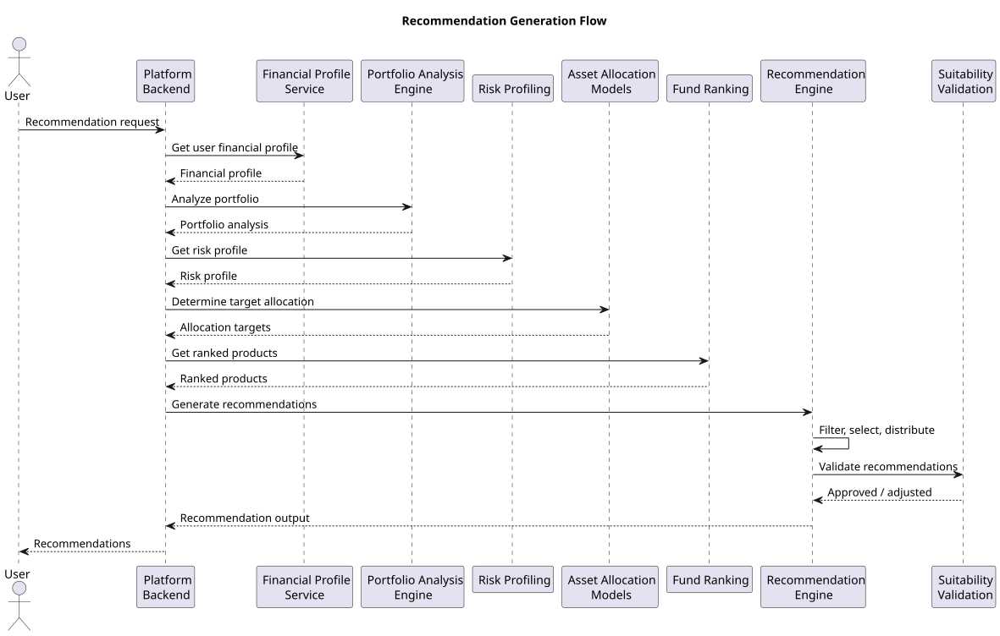
Asset Allocation Alignment
Before selecting financial products, the system determines how much capital should be allocated to each asset class.
Example process:
Target Asset Allocation
↓
Allocation Gap Analysis
↓
Investment Allocation Plan
This step ensures that recommended investments support the desired portfolio structure.
Product Filtering
The recommendation engine filters the product universe based on suitability criteria.
Filtering conditions may include:
- asset class compatibility with allocation targets
- risk compatibility with the user’s risk profile
- product eligibility requirements
- Example filtering process:
- Product Universe
- ↓
- Risk Compatibility Filter
- ↓
- Category Filter
- ↓
- Eligible Products
- This filtering stage narrows the set of candidate products.
Ranked Product Selection
After filtering, the system selects top-ranked products within each relevant category.
Example process:
Eligible Products
↓
Fund Ranking Scores
↓
Top Ranked Products
Selecting top-ranked funds ensures that recommendations prioritize strong-performing products.
Allocation Distribution
The system determines how the investment capital should be distributed across the selected products.
Example process:
Asset Allocation Plan
↓
Selected Funds
↓
Product Allocation Distribution
Example structure:
RecommendationAllocation fund_A_percentage fund_B_percentage
This step converts analytical results into an investment plan.
Portfolio Impact Evaluation
Before finalizing recommendations, the system evaluates how the proposed investments would affect the portfolio.
Example workflow:
Current Portfolio +
Proposed Investments
↓
Updated Portfolio Structure
↓
Risk and Diversification Evaluation
This evaluation ensures that recommendations improve portfolio quality.
Suitability Validation
The system performs final suitability checks to ensure that recommendations comply with platform policies and investor constraints.
Examples include:
- risk alignment verification
- investment eligibility validation
- product exposure limits
- Example validation process:
- Generated Recommendations
- ↓
- Suitability Validation
- ↓
- Approved Recommendations
- Suitability validation ensures responsible investment guidance.
Recommendation Output Structure
The final recommendations are produced in a structured format.
Example structure:
InvestmentRecommendation product_id product_name recommended_allocation suitability_score
This structure allows recommendations to be delivered through platform APIs and user interfaces.
Explanation Generation
Along with product recommendations, the system may generate explanatory insights describing the reasoning behind the recommendations.
Examples include:
- explanation of asset allocation choices
- justification for selected financial products
- description of diversification improvements
- Example process:
- Recommendation Results
- ↓
- Context Preparation
- ↓
- Explanation Generation
- These explanations improve transparency and user understanding.
Phase 1 Portfolio Recommendation Explanation Flow
The following diagram illustrates the Phase 1 AI flow for generating natural-language explanations of portfolio allocation: the user requests an explanation from the frontend; the backend loads allocation and risk context; the AI module builds a prompt and calls the model server (vLLM/Ollama); the LLM returns generated text; the explanation is returned to the user.
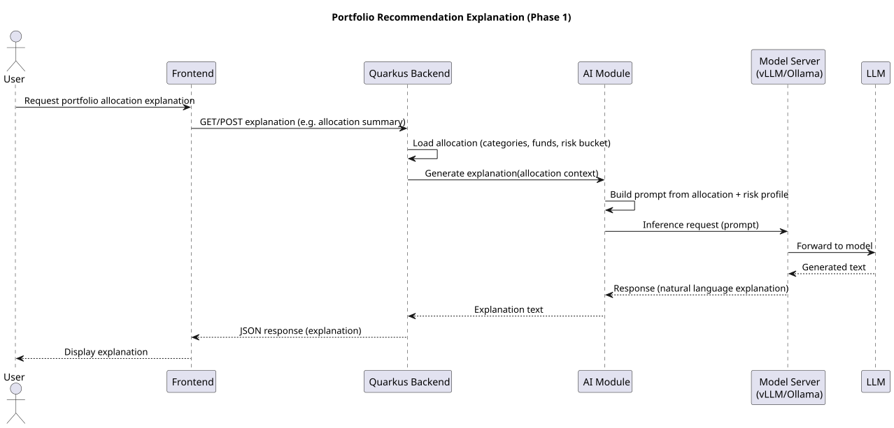
Recommendation Updates
Recommendations may be recalculated periodically when new financial data becomes available.
Triggers for updates may include:
- portfolio changes
- new financial data ingestion
- updated fund performance metrics
- Regular updates ensure that recommendations remain relevant.
Importance in the Recommendation System
Recommendation generation represents the culmination of the financial intelligence pipeline.
By combining risk profiling, portfolio analysis, asset allocation strategies, fund rankings, and optimization algorithms, the system produces personalized investment recommendations that improve portfolio quality while respecting the investor’s financial constraints.
This logic enables the platform to function as an intelligent investment advisory system capable of generating structured, explainable, and data-driven financial recommendations.
Suitability Checks
Suitability Checks ensure that investment recommendations generated by the platform align with the user’s financial situation, risk tolerance, and regulatory constraints. Before presenting recommendations to the user, the system performs a series of validation steps to confirm that the proposed financial products and allocations are appropriate for the investor.
Suitability validation is a critical safeguard in financial advisory systems. It ensures that recommendations do not expose investors to risks beyond their capacity, violate investment constraints, or recommend products that are incompatible with the user’s financial profile.
This section describes the rules, validation mechanisms, and workflows used to ensure recommendation suitability within the Multiplus AI Financial Intelligence Platform.
Purpose of Suitability Checks
The primary objective of suitability checks is to ensure that generated recommendations are appropriate for the investor.
Key objectives include:
- validating alignment with the investor’s risk profile
- enforcing asset allocation constraints
- preventing excessive portfolio concentration
- ensuring regulatory compliance
Suitability checks act as the final validation layer before recommendations are delivered.
Suitability Validation Workflow
Suitability checks occur after the recommendation generation stage but before recommendations are finalized.
Example workflow:
Recommendation Generation
↓
Suitability Validation
↓
Approved Recommendations
↓
User Delivery
If a recommendation fails suitability validation, it must be modified or removed.
Risk Alignment Validation
The first suitability check verifies that recommended investments align with the user’s risk profile.
Example rule:
IF user_risk_profile = Conservative THEN exclude high-volatility equity funds
Risk alignment ensures that recommendations do not expose the user to unacceptable investment risk.
Asset Allocation Constraints
Recommendations must maintain asset allocation within the target risk-based allocation model.
Example validation:
IF recommended_equity_allocation > maximum_equity_limit THEN adjust allocation
This constraint prevents portfolios from exceeding risk exposure thresholds.
Product Eligibility Validation
Each financial product must satisfy eligibility requirements before being recommended.
Examples include:
- minimum product history availability
- compliance with platform product policies
- availability of reliable performance data
- Products failing these criteria are excluded.
Portfolio Concentration Limits
Suitability checks ensure that no single product receives an excessive allocation.
Example rule:
IF product_allocation > concentration_threshold THEN reduce allocation
These limits reduce the risk of overexposure to a single investment.
Diversification Validation
Suitability checks confirm that recommended investments improve portfolio diversification.
Example process:
Current Portfolio +
Proposed Investments
↓
Diversification Evaluation
Recommendations that reduce diversification may be rejected or adjusted.
Liquidity Considerations
Certain investment products may have liquidity constraints or lock-in periods.
Suitability checks evaluate whether such products are compatible with the user’s financial needs.
Example rule:
IF user_liquidity_requirement = High THEN avoid long lock-in investments
Liquidity validation ensures that recommended investments do not restrict access to funds when needed.
Regulatory Compliance Checks
Financial advisory systems must comply with applicable regulatory requirements.
Compliance checks may include:
- ensuring recommendations align with regulatory suitability guidelines
- enforcing investment exposure limits
- validating that products are permitted for retail investors
- Regulatory compliance is essential for operating within financial markets.
Recommendation Validation Rules
Suitability validation may be implemented through a rule-based validation engine.
Example structure:
SuitabilityRules risk_alignment_rule allocation_limit_rule diversification_rule
Each rule is applied to the generated recommendations.
Suitability Scoring
The system may also compute a suitability score to measure how well the recommended portfolio aligns with the user’s profile.
Example calculation:
SuitabilityScore = WeightedSum( risk_alignment_score, diversification_score, allocation_compliance_score )
Higher suitability scores indicate stronger alignment with investor constraints.
Recommendation Adjustment
If suitability violations are detected, the system may adjust the recommendations.
Possible adjustments include:
- replacing unsuitable products
- modifying allocation percentages
- removing non-compliant products
- Example workflow:
- Initial Recommendation
- ↓
- Suitability Violation
- ↓
- Recommendation Adjustment
- This process ensures that final recommendations remain compliant.
Suitability Validation Logging
All suitability validation checks should be recorded for auditing purposes.
Example log structure:
SuitabilityValidationLog validation_step rule_applied validation_result
Audit logs provide transparency into the recommendation process.
Importance in the Recommendation Engine
Suitability checks serve as the final safeguard that ensures investment recommendations are responsible, compliant, and aligned with investor constraints.
By validating risk alignment, allocation constraints, diversification quality, and regulatory compliance, the platform ensures that every recommendation delivered to the user meets strict suitability standards.
This validation layer is essential for maintaining trust, protecting investors, and ensuring responsible AI-driven financial advisory.
Recommendation Explainability
Recommendation Explainability defines how the Multiplus AI Financial Intelligence Platform communicates the reasoning behind generated investment recommendations. In financial advisory systems, transparency is essential for building user trust and ensuring compliance with regulatory expectations. Investors must understand why specific products are recommended and how those recommendations align with their financial situation.
Explainability mechanisms transform complex analytical outputs into structured explanations that describe the logic used by the recommendation engine. These explanations are generated using the outputs of risk profiling, portfolio analysis, asset allocation models, fund ranking algorithms, and portfolio optimization.
This section describes the framework used to generate clear and traceable explanations for investment recommendations.
Purpose of Recommendation Explainability
The primary objective of recommendation explainability is to provide transparency into the decision-making process of the recommendation engine.
Key objectives include:
- helping users understand why specific products are recommended
- increasing trust in AI-driven financial insights
- supporting regulatory compliance requirements
- improving user engagement with financial recommendations
- Explainable recommendations allow users to make informed investment decisions.
The following diagram illustrates the Phase 1 flow for risk score explanation, which supports recommendation explainability by explaining how the user’s risk profile is derived.
Sources of Explanation Data
Explanations are derived from the analytical components used during recommendation generation.
Key explanation sources include:
- risk profiling results
- portfolio analysis outputs
- asset allocation models
- fund ranking scores
- diversification analysis
- These sources provide the factual basis for explanation generation.
Explanation Generation Workflow
The explanation generation process follows a structured workflow.
Example workflow:
Recommendation Results
↓
Collect Supporting Metrics
↓
Construct Explanation Context
↓
Generate Explanation Output
This workflow converts analytical data into understandable narratives.
Risk-Based Explanation
Recommendations may be explained in relation to the user’s risk profile.
Example explanation:
The recommended funds align with your moderate risk profile and maintain balanced exposure between equity and debt investments.
Example structure:
RiskExplanation user_risk_profile recommended_asset_exposure
This explanation shows how recommendations respect the user’s risk tolerance.
Asset Allocation Explanation
Explanations may describe how recommended investments contribute to the target asset allocation.
Example explanation:
The recommended investments increase equity exposure to achieve the target allocation required for your investment horizon.
Example structure:
AllocationExplanation target_equity_allocation current_equity_allocation
This explanation clarifies how recommendations improve portfolio structure.
Portfolio Improvement Explanation
Recommendations may also explain how the suggested investments improve the existing portfolio.
Examples include:
- improving diversification
- reducing concentration risk
- filling asset allocation gaps
- Example structure:
- PortfolioImprovementExplanation
- diversification_gap
- recommended_adjustment
- These explanations highlight the portfolio optimization benefits.
Product Selection Explanation
Each recommended product may include a brief explanation describing why it was selected.
Examples include:
- strong historical performance within its category
- consistent risk-adjusted returns
- high ranking within its asset class
- Example structure:
- ProductExplanation
- product_name
- ranking_score
- performance_metrics
This explanation connects the product recommendation to objective performance metrics.
Supporting Metrics Display
Explanations may include supporting quantitative metrics to improve transparency.
Examples include:
- fund ranking scores
- portfolio diversification scores
- allocation percentages
- Example structure:
- SupportingMetrics
- diversification_score
- expected_risk_level
- These metrics help users evaluate the recommendation objectively.
Structured Explanation Output
The system generates explanations in a structured format that can be consumed by platform interfaces.
Example structure:
RecommendationExplanation summary risk_alignment_reason portfolio_improvement_reason product_selection_reason
Structured outputs allow consistent presentation across applications.
Integration with AI Language Models
Large language models may be used to transform structured explanation data into natural language summaries.
Example workflow:
Structured Explanation Data
↓
Prompt Generation
↓
Language Model
↓
Natural Language Explanation
This approach allows the system to generate clear and readable explanations.
Explanation Consistency
To ensure reliability, explanations must remain consistent with the underlying analytical results.
Validation checks may include:
- verifying that explanation claims match actual metrics
- confirming alignment with the generated recommendations
- Consistency validation prevents misleading explanations.
Logging and Traceability
All explanation outputs should be recorded for auditing and monitoring purposes.
Example structure:
ExplanationLog recommendation_id explanation_text supporting_metrics
Logging ensures that recommendation reasoning can be traced if required.
Importance in the Recommendation Engine
Recommendation explainability bridges the gap between complex analytical systems and user understanding. By providing transparent explanations for investment suggestions, the platform empowers users to make informed financial decisions.
Explainability also strengthens regulatory compliance and reinforces trust in AI-driven financial advisory systems.
Through structured reasoning outputs and clear communication of portfolio insights, the Multiplus platform ensures that investment recommendations remain transparent, accountable, and user-centric.
Continuous Recommendation Improvement
Continuous Recommendation Improvement defines the mechanisms through which the Multiplus AI Financial Intelligence Platform monitors, evaluates, and improves the quality of investment recommendations over time. Financial markets evolve, user financial behavior changes, and new financial products become available. As a result, recommendation systems must continuously adapt to maintain relevance and accuracy.
The platform implements feedback loops, performance monitoring systems, and model update pipelines to ensure that the recommendation engine improves as more financial data and user interaction signals become available.
This section describes the processes used to continuously refine recommendation quality and system performance.
Purpose of Continuous Improvement
The primary objective of continuous recommendation improvement is to enhance the effectiveness and reliability of investment recommendations.
Key objectives include:
- improving recommendation accuracy
- adapting to changing market conditions
- incorporating user feedback signals
- refining ranking and allocation algorithms
Continuous improvement ensures that the recommendation engine remains responsive to both market dynamics and user needs.
Feedback Sources
Recommendation improvement relies on multiple feedback signals generated by the platform.
Common feedback sources include:
- user interaction data
- portfolio performance outcomes
- market data updates
- model performance metrics
These signals provide valuable information about the effectiveness of recommendations.
User Interaction Feedback
User behavior provides important signals about recommendation quality.
Examples include:
- acceptance of recommended investments
- rejection of recommendations
- user adjustments to recommended allocations
- Example structure:
- UserInteractionFeedback
- recommendation_id
- user_action
- timestamp
- These signals help evaluate how well recommendations match user expectations.
Portfolio Outcome Analysis
The platform may evaluate the long-term outcomes of recommended portfolios.
Key indicators include:
- portfolio return performance
- volatility levels
- diversification improvements
- Example structure:
- PortfolioOutcomeMetrics
- portfolio_return
- portfolio_volatility
- diversification_score
Outcome analysis helps identify strengths and weaknesses in recommendation strategies.
Model Performance Monitoring
Models used within the recommendation engine must be continuously evaluated.
Monitoring metrics may include:
- prediction accuracy
- ranking consistency
- recommendation acceptance rates
- Example structure:
- ModelPerformanceMetrics
- ranking_accuracy
- recommendation_acceptance_rate
- Monitoring helps detect model performance degradation.
Market Data Adaptation
Financial markets evolve over time, affecting product performance and asset allocation strategies.
Triggers for recommendation updates may include:
- new performance data for financial products
- changes in market volatility
- changes in benchmark performance
- Example workflow:
- Market Data Update
- ↓
- Metric Recalculation
- ↓
- Fund Ranking Update
- Market adaptation ensures recommendations remain relevant.
Fund Ranking Model Updates
Fund ranking algorithms may be periodically recalibrated using updated financial data.
Possible updates include:
- adjusting metric weights
- introducing new performance indicators
- recalibrating volatility thresholds
- These updates improve product evaluation accuracy.
Asset Allocation Model Refinement
Asset allocation models may also evolve based on market conditions and portfolio performance analysis.
Examples include:
- updating strategic allocation ranges
- adjusting tactical allocation strategies
- refining diversification targets
- Example workflow:
- Portfolio Outcome Data
- ↓
- Allocation Model Evaluation
- ↓
- Allocation Model Update
- Refined allocation models lead to better portfolio optimization.
A/B Testing of Recommendation Strategies
The platform may evaluate multiple recommendation strategies through controlled experiments.
Example process:
User Segment A → Recommendation Model A
User Segment B → Recommendation Model B
↓
Performance Comparison
Comparing strategies allows the system to identify more effective recommendation approaches.
Recommendation Quality Metrics
To measure recommendation effectiveness, the platform tracks several evaluation metrics.
Examples include:
- recommendation acceptance rate
- portfolio improvement score
- diversification improvement metrics
- Example structure:
- RecommendationQualityMetrics
- acceptance_rate
- diversification_improvement
- These metrics guide system improvements.
Continuous Learning Pipeline
Recommendation improvement may follow a structured learning pipeline.
Example workflow:
User Feedback
↓
Performance Monitoring
↓
Model Evaluation
↓
Model Update
This pipeline allows the system to evolve over time.
Human Oversight
Human financial analysts or platform operators may periodically review system outputs.
Review activities may include:
- validating recommendation strategies
- reviewing fund ranking methodologies
- auditing asset allocation models
- Human oversight provides additional quality assurance.
Importance in the Recommendation System
Continuous improvement mechanisms ensure that the recommendation engine evolves alongside changing financial markets and user behavior.
By incorporating feedback signals, monitoring system performance, updating analytical models, and refining allocation strategies, the platform maintains a high-quality recommendation system capable of delivering increasingly accurate and effective investment guidance.
This adaptive approach ensures that the Multiplus AI Financial Intelligence Platform remains responsive, reliable, and aligned with long-term investor outcomes.
DOCUMENT INTELLIGENCE
Financial Document Processing
Financial Document Processing is responsible for extracting structured financial information from unstructured or semi-structured financial documents. Many important financial data sources exist in document formats such as PDFs, scanned statements, or structured reports. These documents often contain valuable financial information that cannot be directly consumed by analytical systems.
Within the Multiplus AI Financial Intelligence Platform, the Document Intelligence subsystem converts financial documents into machine-readable data that can be integrated into the platform’s financial data models. This process enables the system to incorporate external financial records into the user’s financial profile and portfolio analysis.
This section describes the architecture, workflows, and components used to process financial documents.
Purpose of Financial Document Processing
The primary objective of financial document processing is to transform financial documents into structured data that can be used by the platform’s analytics systems.
Key objectives include:
- extracting financial data from documents
- converting unstructured information into structured records
- enabling integration with user financial profiles
- supporting portfolio analysis and financial insights
Document processing allows the platform to access financial data that is otherwise difficult to analyze programmatically.
Types of Financial Documents
The platform may process multiple types of financial documents.
Common document types include:
- consolidated account statements (CAS)
- bank statements
- investment account reports
- financial transaction summaries
- Each document type may have a different structure and extraction requirements.
Document Processing Workflow
The document processing pipeline follows a structured workflow.
Example workflow:
Document Upload
↓
Document Preprocessing
↓
Text Extraction
↓
Data Parsing
↓
Structured Data Generation
This workflow converts raw document files into structured datasets that can be used by the platform.
Document Ingestion
The first step in document processing is ingesting the document into the platform.
Document ingestion may occur through:
user-uploaded files
integration with financial data providers
document retrieval from external systems
Example ingestion process:
User Upload
↓
Document Storage
↓
Document Processing Pipeline
Once ingested, the document is stored in the platform’s document repository.
Document Preprocessing
Before text extraction begins, documents undergo preprocessing to improve extraction accuracy.
Preprocessing operations may include:
- file format normalization
- removal of metadata elements
- page segmentation
- Example workflow:
- Raw Document
- ↓
- Format Normalization
- ↓
- Page Segmentation
- Preprocessing ensures that documents are suitable for text extraction.
Text Extraction
Text extraction converts document content into machine-readable text.
Extraction techniques may include:
- PDF text extraction
- optical character recognition (OCR) for scanned documents
- layout-aware text extraction
- Example workflow:
- Document File
- ↓
- Text Extraction Engine
- ↓
- Raw Text Output
- The extracted text becomes the input for structured data parsing.
Document Structure Detection
Financial documents often follow structured layouts containing tables and labeled fields.
Structure detection identifies elements such as:
- tables
- headers
- key financial fields
- Example workflow:
- Extracted Text
- ↓
- Layout Analysis
- ↓
- Structured Document Representation
- Structure detection improves the accuracy of data extraction.
Data Parsing
Once the document structure is identified, the system parses relevant financial information.
Examples of extracted data include:
- transaction records
- account balances
- investment holdings
- Example structure:
- ParsedFinancialData
- account_id
- transaction_records
- investment_holdings
- Parsed data is then converted into platform-compatible formats.
Structured Data Generation
After parsing, the extracted data is converted into structured records aligned with the platform’s financial data models.
Example structure:
StructuredDocumentData user_id document_type extracted_records
These records can then be integrated into the platform’s financial datasets.
Data Validation
Extracted data must be validated to ensure accuracy.
Validation checks may include:
- verifying numerical consistency
- validating account identifiers
- detecting duplicate entries
- Example validation workflow:
- Extracted Data
- ↓
- Validation Rules
- ↓
- Validated Financial Records
- Only validated records are incorporated into financial analysis pipelines.
Integration with Financial Data Models
Once validated, the extracted data is integrated into the platform’s financial data infrastructure.
Example workflow:
Validated Document Data
↓
Financial Data Models
↓
User Financial Profile Update
This integration allows the platform to incorporate document-derived insights into portfolio analysis and recommendation systems.
Document Storage and Retrieval
Processed documents and extracted data must be stored securely.
The system maintains:
original document files
extracted text representations
structured financial records
Example storage architecture:
Document Storage
↓
Processed Document Data
↓
Financial Data Infrastructure
Secure storage ensures that documents remain available for future analysis or auditing.
Importance in the Financial Intelligence Platform
Financial document processing expands the platform’s ability to understand user finances beyond structured API-based data sources.
By extracting financial information from statements and reports, the system gains deeper visibility into user investments, transactions, and financial behavior. This additional data strengthens the accuracy of financial profiles, portfolio analysis, and recommendation systems.
Document intelligence therefore plays a critical role in building a comprehensive financial understanding of the user within the Multiplus AI Financial Intelligence Platform.
CAS Document Parsing
CAS Document Parsing refers to the extraction of structured investment information from Consolidated Account Statements (CAS). A CAS is a standardized financial document that summarizes mutual fund investments held by an investor across different asset management companies. These statements are commonly issued by depositories or registrar and transfer agents and provide a consolidated view of investment holdings and transactions.
Within the Multiplus AI Financial Intelligence Platform, CAS parsing enables the system to automatically detect and extract mutual fund investment data from uploaded CAS documents. The extracted data is then integrated into the user’s financial profile and portfolio analysis systems.
This section describes the architecture and workflow used to parse CAS documents and convert them into structured investment records.
Purpose of CAS Parsing
The primary objective of CAS parsing is to extract investment information from consolidated account statements and convert it into structured portfolio data.
Key objectives include:
- identifying mutual fund holdings
- extracting transaction histories
- reconstructing investment portfolios
- integrating investment data into financial profiles
CAS parsing allows the platform to automatically understand a user's existing investments without requiring manual input.
CAS Document Characteristics
CAS documents typically contain structured information about mutual fund investments.
Common information elements include:
- investor identification details
- mutual fund scheme names
- transaction history
- current investment balances
- unit holdings and NAV values
- These documents may be provided in PDF format with tabular data layouts.
CAS Parsing Workflow
The CAS parsing pipeline follows a structured workflow.
Example workflow:
CAS Document Upload
↓
Document Preprocessing
↓
Text Extraction
↓
Table Detection
↓
Investment Data Parsing
↓
Portfolio Dataset Generation
This workflow transforms the CAS document into structured portfolio records.
Investor Information Extraction
The first stage of parsing extracts investor identification details.
Typical fields include:
- investor name
- account number
- statement period
- Example structure:
- InvestorInformation
- investor_name
- account_number
- statement_period
- This information links the document to the correct user profile.
Scheme Identification
CAS documents list investments by mutual fund schemes.
The parser identifies:
scheme name
scheme category
asset management company
Example structure:
InvestmentScheme scheme_name scheme_category asset_management_company
This information allows the system to map schemes to products in the product universe database.
Transaction History Extraction
CAS statements contain detailed transaction records for each scheme.
Typical transaction data includes:
- transaction date
- transaction type
- number of units purchased or redeemed
- transaction amount
- Example structure:
- TransactionRecord
- transaction_date
- transaction_type
- units
- transaction_amount
Transaction histories are used to reconstruct investment behavior and portfolio changes.
Holdings Extraction
The parser also extracts current investment holdings.
Typical fields include:
- total units held
- current NAV value
- market value of holdings
- Example structure:
- InvestmentHolding
- scheme_name
- units_held
- nav_value
- market_value
- These records represent the current state of the user's mutual fund investments.
Table Detection and Parsing
Most CAS documents contain investment information in tabular formats.
Table detection algorithms identify and extract these tables.
Example workflow:
Extracted Document Text
↓
Table Detection
↓
Row Parsing
↓
Structured Records
Table parsing ensures accurate extraction of structured financial data.
Scheme Mapping
Extracted scheme names must be mapped to internal product identifiers used by the platform.
Example mapping process:
Extracted Scheme Name
↓
Product Universe Lookup
↓
Internal Product ID
This mapping enables integration with fund ranking and recommendation systems.
Portfolio Reconstruction
After parsing transactions and holdings, the system reconstructs the user's mutual fund portfolio.
Example workflow:
Parsed Holdings +
Transaction History
↓
Portfolio Reconstruction
The resulting portfolio dataset can be used for portfolio analysis.
Data Validation
CAS-derived data must undergo validation before being incorporated into the financial data infrastructure.
Validation checks may include:
- verifying numerical consistency of transaction records
- validating scheme identifiers
- detecting duplicate transactions
- Example validation workflow:
- Parsed CAS Data
- ↓
- Validation Rules
- ↓
- Validated Portfolio Data
- Validation ensures the reliability of extracted financial information.
Integration with Portfolio Analysis
Once validated, CAS-derived data is integrated into the portfolio analysis system.
Example workflow:
Validated CAS Data
↓
Portfolio Database
↓
Portfolio Analysis Engine
This integration allows the platform to analyze the user’s real investment portfolio.
Importance in the Financial Intelligence Platform
CAS document parsing enables the platform to automatically understand a user’s existing mutual fund investments. This capability eliminates the need for manual portfolio entry and significantly improves the completeness of the user’s financial profile.
By extracting scheme-level holdings, transaction histories, and investment balances from CAS documents, the platform gains the ability to perform detailed portfolio analysis and generate more accurate investment recommendations.
CAS parsing therefore plays a critical role in enabling data-driven financial intelligence within the Multiplus AI Financial Intelligence Platform.
Bank Statement Analysis
Bank Statement Analysis is responsible for extracting financial behavior insights from bank account statements. Bank statements contain detailed records of financial transactions including income deposits, expense payments, transfers, and recurring financial obligations. These records provide valuable information about the user's financial health, spending patterns, and liquidity position.
Within the Multiplus AI Financial Intelligence Platform, bank statement analysis converts raw transaction records into structured financial signals that support user profiling, risk assessment, and recommendation generation.
This section describes the architecture and processing workflow used to analyze bank statements.
Purpose of Bank Statement Analysis
The primary objective of bank statement analysis is to derive financial insights from bank transaction data.
Key objectives include:
- identifying income sources
- detecting recurring expenses and financial obligations
- estimating savings and spending behavior
- supporting financial health assessment
Bank statement analysis provides a direct view into a user’s financial activity and liquidity patterns.
Bank Statement Characteristics
Bank statements typically contain structured records describing financial transactions.
Common fields include:
- transaction date
- transaction description
- debit or credit amount
- account balance
- Example transaction structure:
- BankTransaction
- transaction_date
- description
- debit_amount
- credit_amount
- balance
- These records form the primary input for transaction analysis.
Bank Statement Processing Workflow
The bank statement analysis pipeline follows a structured processing workflow.
Example workflow:
Bank Statement Upload
↓
Document Preprocessing
↓
Text Extraction
↓
Transaction Parsing
↓
Transaction Categorization
↓
Financial Insight Generation
This workflow transforms raw transaction data into structured financial insights.
Transaction Extraction
The first stage involves extracting transaction records from the bank statement.
Extraction may involve:
parsing tabular transaction data
identifying debit and credit entries
detecting transaction timestamps
Example structure:
ExtractedTransaction date description amount transaction_type
The extracted transactions are stored in the platform’s financial data infrastructure.
Transaction Classification
Transactions are classified into categories that describe their financial purpose.
Typical transaction categories include:
- income deposits
- household expenses
- loan repayments
- investment transfers
- Example structure:
- TransactionCategory
- category_name
- category_type
- Categorization allows the system to understand financial behavior patterns.
Income Detection
Bank statement analysis identifies recurring income deposits.
Common income sources include:
- salary deposits
- business income
- investment income
- Example workflow:
- Credit Transactions
- ↓
- Pattern Detection
- ↓
- Income Source Identification
- Income detection helps estimate financial capacity and savings potential.
Expense Pattern Analysis
The system analyzes expense patterns to understand spending behavior.
Key expense categories may include:
- housing expenses
- utilities and bills
- discretionary spending
- loan repayments
- Example structure:
- ExpensePattern
- category
- monthly_average
- Expense patterns are used to assess financial stability.
Recurring Payment Detection
Recurring transactions are identified to detect regular financial obligations.
Examples include:
- rent payments
- loan EMI payments
- subscription services
- Example detection workflow:
- Transaction History
- ↓
- Pattern Detection
- ↓
- Recurring Transaction Identification
- Recurring payments influence financial health and liquidity assessments.
Cash Flow Analysis
Bank statements allow the platform to estimate net cash flow.
Example calculation:
NetCashFlow = TotalIncome - TotalExpenses
Positive cash flow indicates financial surplus available for investment.
Savings Rate Estimation
Savings rate estimation measures how much of the user’s income remains after expenses.
Example calculation:
SavingsRate = (NetCashFlow / TotalIncome)
Higher savings rates indicate stronger financial capacity for investing.
Financial Health Indicators
The system derives financial health indicators from bank transaction data.
Examples include:
- income stability
- expense consistency
- liquidity reserves
- Example structure:
- FinancialHealthIndicators
- income_stability_score
- savings_rate
- expense_variability
- These indicators contribute to user risk profiling and recommendation systems.
Integration with Financial Profiles
Extracted insights are integrated into the user’s financial profile dataset.
Example workflow:
Bank Statement Insights
↓
Financial Profile Update
↓
Risk Profiling Engine
This integration improves the accuracy of financial analysis.
Data Validation and Error Handling
Bank statement analysis includes validation mechanisms to ensure accuracy.
Validation checks may include:
- verifying transaction totals
- detecting duplicate records
- validating date consistency
- Example workflow:
- Extracted Transactions
- ↓
- Validation Rules
- ↓
- Validated Transaction Dataset
- Only validated data is used for financial analysis.
Importance in the Financial Intelligence Platform
Bank statement analysis provides direct insight into the user’s financial activity and liquidity position. Unlike static financial records, transaction data reflects real-time financial behavior, allowing the platform to estimate income stability, spending patterns, and savings capacity.
These insights strengthen financial profiling, improve risk assessment accuracy, and enable more personalized investment recommendations.
Bank statement analysis therefore serves as a critical component of the platform’s financial intelligence capabilities.
Insurance Document Processing
Insurance Document Processing enables the Multiplus AI Financial Intelligence Platform to extract structured insurance information from insurance policy documents and related statements. Insurance policies often contain critical financial protection details that are essential for evaluating a user’s overall financial health and risk exposure.
Many insurance documents exist in unstructured formats such as PDFs or scanned files. These documents may include policy contracts, premium schedules, coverage summaries, and benefit descriptions. Insurance document processing converts these documents into structured data that can be integrated into the platform’s financial profile and financial planning systems.
This section describes the architecture and workflow used to process insurance documents.
Purpose of Insurance Document Processing
The primary objective of insurance document processing is to extract key policy details from insurance documents and convert them into structured records.
Key objectives include:
- identifying active insurance policies
- extracting coverage information
- identifying premium obligations
- evaluating financial protection levels
This information helps the platform assess whether a user’s financial risk exposure is adequately protected.
Types of Insurance Documents
The platform may process various types of insurance-related documents.
Common document types include:
- life insurance policy documents
- health insurance policy summaries
- insurance premium statements
- policy benefit schedules
- Each document type contains different types of financial information.
Insurance Document Processing Workflow
Insurance document processing follows a structured workflow similar to other document intelligence pipelines.
Example workflow:
Insurance Document Upload
↓
Document Preprocessing
↓
Text Extraction
↓
Policy Information Detection
↓
Structured Insurance Data Generation
This workflow converts insurance documents into structured policy datasets.
Policyholder Identification
The system first extracts policyholder information from the insurance document.
Typical fields include:
- policyholder name
- policy number
- insurer name
- Example structure:
- PolicyholderInformation
- policyholder_name
- policy_number
- insurer_name
- This information links the policy to the correct user profile.
Policy Type Detection
Insurance policies must be categorized according to the type of financial protection they provide.
Common policy types include:
- term life insurance
- health insurance
- endowment policies
- unit-linked insurance plans
- Example structure:
- InsurancePolicyType
- term_life
- health
- endowment
- ULIP
Policy classification helps determine the role of insurance in financial planning.
Coverage Amount Extraction
Insurance documents contain information about the coverage amount provided by the policy.
Example fields include:
- sum assured
- coverage limits
- benefit payout values
- Example structure:
- CoverageInformation
- sum_assured
- coverage_amount
- Coverage values help assess the adequacy of financial protection.
Premium Schedule Extraction
The system also extracts premium payment information.
Typical fields include:
- premium amount
- premium payment frequency
- premium due dates
- Example structure:
- PremiumSchedule
- premium_amount
- payment_frequency
- next_due_date
- Premium obligations influence the user’s financial commitments and cash flow.
Policy Duration and Term
Insurance policies include information about their duration and maturity.
Typical fields include:
- policy start date
- maturity date
- coverage duration
- Example structure:
- PolicyDuration
- policy_start_date
- maturity_date
- Policy duration data helps evaluate long-term financial protection.
Policy Benefit Extraction
Insurance policies may include multiple benefit structures.
Examples include:
- death benefit
- maturity benefit
- hospitalization coverage
- Example structure:
- PolicyBenefits
- death_benefit
- maturity_benefit
- health_coverage_limit
Benefit extraction allows the system to evaluate the scope of insurance coverage.
Data Normalization
Extracted policy data must be standardized before integration into the financial data infrastructure.
Normalization operations may include:
- converting monetary values into standard currency formats
- standardizing date formats
- normalizing policy type classifications
- Example workflow:
- Extracted Policy Data
- ↓
- Normalization
- ↓
- Standardized Insurance Dataset
- Normalization ensures consistent data representation.
Integration with Financial Profiles
After normalization, the extracted insurance data is integrated into the user’s financial profile.
Example workflow:
Validated Insurance Data
↓
Financial Profile Database
↓
Financial Protection Analysis
This integration allows the system to evaluate whether the user has adequate financial protection.
Insurance Coverage Analysis
The platform may analyze insurance coverage relative to financial needs.
Examples include:
- evaluating life insurance coverage relative to income
- assessing health insurance coverage adequacy
- identifying gaps in financial protection
- Example workflow:
- Insurance Data
- ↓
- Coverage Evaluation
- ↓
- Protection Gap Identification
- These insights can influence financial planning recommendations.
Importance in the Financial Intelligence Platform
Insurance document processing enables the platform to incorporate financial protection information into the user’s financial profile. Investments and savings represent only one aspect of financial well-being. Adequate insurance coverage is essential for protecting financial stability.
By extracting policy details from insurance documents, the platform gains visibility into the user’s insurance coverage and financial protection strategies. This information supports more comprehensive financial analysis and improves the quality of financial planning recommendations generated by the system.
OCR Pipeline Architecture
OCR Pipeline Architecture defines the system used to extract text from scanned or image-based financial documents using Optical Character Recognition (OCR). Many financial documents, including bank statements, insurance policies, and investment statements, are often provided as scanned PDFs or image files that do not contain machine-readable text.
To enable automated analysis of these documents, the platform must convert visual document content into structured text that can be processed by downstream parsing systems. The OCR pipeline performs this conversion while preserving document layout information such as tables, headers, and labeled fields.
Within the Multiplus AI Financial Intelligence Platform, the OCR pipeline operates as a foundational component of the Document Intelligence subsystem.
Purpose of the OCR Pipeline
The primary objective of the OCR pipeline is to convert image-based documents into machine-readable text.
Key objectives include:
- extracting text from scanned documents
- preserving document layout and structure
- enabling downstream document parsing
- supporting financial data extraction from non-text documents
OCR processing expands the platform’s ability to analyze a wider range of financial documents.
OCR Pipeline Workflow
The OCR pipeline follows a structured multi-stage workflow.
Example workflow:
Document Upload
↓
Image Preprocessing
↓
OCR Text Extraction
↓
Layout Detection
↓
Structured Text Output
This workflow converts scanned documents into structured textual representations.
Phase 1 Document OCR Processing Flow
The following diagram illustrates the Phase 1 AI integration flow for document OCR processing: from user upload through the Quarkus backend, AI module, and OCR pipeline to database storage.
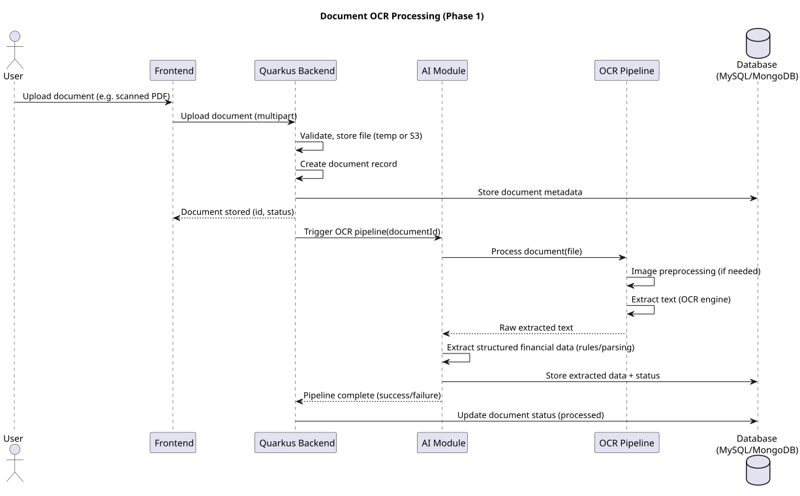
Supported Document Formats
The OCR pipeline must support multiple document formats.
Common supported formats include:
- scanned PDF documents
- image files (PNG, JPEG)
- scanned bank statements
- scanned financial forms
Supporting multiple formats ensures compatibility with diverse financial document sources.
Image Preprocessing
Before OCR extraction begins, document images undergo preprocessing to improve text recognition accuracy.
Preprocessing operations may include:
- noise reduction
- image sharpening
- contrast enhancement
- skew correction
- Example workflow:
- Scanned Document Image
- ↓
- Noise Removal
- ↓
- Image Enhancement
- Preprocessing improves the quality of text extraction.
Text Detection
Text detection identifies regions of the document that contain textual content.
Typical operations include:
- identifying text blocks
- detecting table regions
- detecting column structures
- Example workflow:
- Preprocessed Image
- ↓
- Text Region Detection
- ↓
- Text Extraction Zones
Detecting text regions improves OCR accuracy by focusing extraction on relevant areas.
OCR Text Extraction
Once text regions are identified, the OCR engine converts image content into text.
Example workflow:
Text Regions
↓
OCR Engine
↓
Raw Text Output
The OCR engine produces the raw text representation of the document.
Layout Analysis
Financial documents often contain structured layouts such as tables and labeled fields.
Layout analysis identifies:
table structures
column alignments
section headings
Example workflow:
Raw OCR Text
↓
Layout Analysis
↓
Structured Text Representation
Layout analysis allows the platform to interpret document structure accurately.
Table Recognition
Many financial documents contain tabular data representing transactions, holdings, or financial metrics.
The OCR pipeline must detect and extract these tables.
Example workflow:
Detected Table Region
↓
Row and Column Detection
↓
Structured Table Data
Table recognition is essential for extracting financial records accurately.
Text Post-Processing
OCR output may contain recognition errors or formatting inconsistencies.
Post-processing operations may include:
- correcting common OCR errors
- removing extraneous characters
- standardizing numeric formats
- Example workflow:
- Raw OCR Text
- ↓
- Text Cleaning
- ↓
- Normalized Text Output
- Post-processing improves the accuracy of downstream document parsing.
Structured Text Output
After OCR extraction and post-processing, the pipeline generates structured textual data that can be used by document parsing systems.
Example structure:
OCRDocumentOutput document_id extracted_text layout_metadata
This output serves as input for financial document parsing modules.
Integration with Document Parsing Systems
The OCR pipeline feeds structured text into specialized document parsing systems.
Example workflow:
OCR Output
↓
Document Parsing Engine
↓
Structured Financial Data
This integration enables extraction of financial information from scanned documents.
Error Detection and Quality Monitoring
OCR pipelines must monitor extraction quality to detect recognition errors.
Quality checks may include:
- detecting unreadable text regions
- validating extracted numerical values
- identifying incomplete document sections
- Example workflow:
- OCR Output
- ↓
- Quality Validation
- ↓
- Verified Text Data
- Quality monitoring ensures reliability of extracted document data.
Importance in the Document Intelligence System
The OCR pipeline enables the platform to process financial documents that are not originally machine-readable. Many financial records provided by banks, insurers, and investment providers exist only as scanned documents.
By converting visual document content into structured text, the OCR pipeline unlocks access to valuable financial data that can be used for portfolio analysis, financial profiling, and recommendation generation.
This capability significantly expands the scope of financial intelligence that the Multiplus AI Financial Intelligence Platform can deliver.
Document Entity Extraction
Document Entity Extraction is responsible for identifying and extracting specific financial entities from processed document text. After OCR and document parsing stages convert financial documents into machine-readable text, entity extraction identifies meaningful financial elements such as account identifiers, transaction values, policy numbers, investment schemes, and monetary values.
Within the Multiplus AI Financial Intelligence Platform, entity extraction converts raw textual content into structured financial entities that can be mapped into the platform’s financial data models. This process enables automated interpretation of financial documents without requiring manual review.
This section describes the architecture and methods used to detect and extract financial entities from processed documents.
Purpose of Entity Extraction
The primary objective of document entity extraction is to identify and isolate key financial data elements within document text.
Key objectives include:
- detecting financial entities in documents
- converting textual information into structured data fields
- supporting automated document interpretation
- enabling downstream financial analysis
Entity extraction transforms unstructured text into structured financial information.
Types of Financial Entities
Financial documents contain multiple types of entities that are relevant to financial analysis.
Common entity categories include:
- account identifiers
- financial transaction values
- investment product names
- policy numbers
- monetary values
- Each entity type contributes to reconstructing financial records.
Entity Extraction Workflow
The entity extraction pipeline follows a structured workflow.
Example workflow:
OCR Output Text
↓
Text Preprocessing
↓
Entity Detection
↓
Entity Classification
↓
Structured Entity Dataset
This workflow converts raw document text into structured financial entities.
Text Preprocessing
Before entity detection begins, document text is normalized and cleaned.
Preprocessing operations may include:
- removing extraneous characters
- correcting OCR artifacts
- standardizing date and currency formats
- Example workflow:
- Raw OCR Text
- ↓
- Text Normalization
- ↓
- Cleaned Text Data
- Preprocessing improves the accuracy of entity detection models.
Entity Detection Methods
Entity detection identifies candidate entities within document text.
Detection techniques may include:
- pattern matching rules
- regular expression detection
- machine learning models
- Example workflow:
- Document Text
- ↓
- Entity Detection Model
- ↓
- Detected Entity Candidates
- Multiple detection methods may be used simultaneously to improve coverage.
Named Entity Recognition Models
Machine learning models may be used to identify entities within document text using named entity recognition (NER) techniques.
Examples of financial entities detected by NER models include:
- financial institution names
- product identifiers
- monetary amounts
- transaction descriptions
- Example structure:
- DetectedEntity
- entity_text
- entity_type
- document_position
- NER models improve detection of complex entity patterns.
Entity Classification
After detection, entities are classified according to their financial meaning.
Common entity classes include:
- transaction amount
- account number
- investment scheme name
- policy identifier
- Example structure:
- EntityClassification
- entity_text
- entity_type
- Classification allows entities to be mapped to financial data models.
Monetary Value Extraction
Financial documents contain numerous monetary values that must be extracted accurately.
Examples include:
- transaction amounts
- account balances
- investment values
- insurance premiums
- Example structure:
- MonetaryValue
- currency
- amount
- Monetary value extraction is essential for financial calculations.
Date and Time Extraction
Many financial entities are associated with dates or time periods.
Examples include:
- transaction dates
- policy start dates
- statement periods
- Example structure:
- DateEntity
- date_value
- associated_event
- Date extraction allows reconstruction of financial timelines.
Product and Institution Detection
Financial documents often reference financial institutions or investment products.
Examples include:
- mutual fund scheme names
- bank names
- insurance providers
- Example structure:
- FinancialEntity
- institution_name
- product_name
- These entities are used to link document data with platform datasets.
Entity Validation
Extracted entities must undergo validation to ensure correctness.
Validation checks may include:
- verifying numeric formats
- validating entity types against expected patterns
- detecting duplicate entities
- Example workflow:
- Extracted Entities
- ↓
- Validation Rules
- ↓
- Validated Entity Dataset
- Validation improves reliability of extracted financial data.
Structured Entity Storage
Validated entities are stored in structured datasets within the financial data infrastructure.
Example structure:
DocumentEntityDataset document_id entity_type entity_value
Structured storage allows entities to be consumed by downstream systems.
Integration with Financial Data Models
Extracted entities are mapped to the platform’s financial data models.
Example workflow:
Document Entities
↓
Entity Mapping
↓
Financial Data Models
This mapping enables integration with financial analysis systems.
Importance in the Document Intelligence System
Document entity extraction is the critical step that transforms document text into actionable financial data. Without entity extraction, document processing systems would only produce raw text that cannot be directly used by analytical systems.
By detecting and classifying financial entities within documents, the platform gains the ability to reconstruct financial records, analyze financial behavior, and integrate document-derived insights into user financial profiles.
This capability significantly enhances the platform’s ability to understand and analyze complex financial documents.
Structured Data Conversion
Structured Data Conversion is the final stage of the document intelligence pipeline, responsible for transforming extracted entities and parsed document content into standardized financial data structures compatible with the platform’s core data models. After document parsing, OCR processing, and entity extraction have identified relevant information within financial documents, the system must convert this information into normalized datasets that can be integrated with other financial data sources.
Within the Multiplus AI Financial Intelligence Platform, structured data conversion ensures that document-derived data can be reliably consumed by downstream systems such as financial profiling, portfolio analysis, and recommendation engines.
This section describes the architecture and processes used to convert extracted document information into structured financial datasets.
Purpose of Structured Data Conversion
The primary objective of structured data conversion is to transform extracted document entities into standardized data records aligned with the platform’s financial data models.
Key objectives include:
- converting extracted document data into structured formats
- standardizing field formats and data types
- ensuring compatibility with internal financial databases
- enabling seamless integration with analytical systems
Structured data conversion ensures that document-derived information becomes part of the platform’s unified financial data ecosystem.
Input Sources for Conversion
Structured data conversion consumes outputs from multiple document intelligence components.
Typical inputs include:
- OCR-generated text outputs
- parsed document fields
- extracted financial entities
- detected transaction records
- Example input structure:
- ExtractedDocumentData
- document_id
- extracted_entities
- parsed_tables
- detected_transactions
- These inputs must be converted into platform-compatible datasets.
Conversion Workflow
The structured data conversion process follows a multi-stage workflow.
Example workflow:
Extracted Document Data
↓
Entity Mapping
↓
Data Normalization
↓
Structured Record Generation
↓
Financial Data Storage
This workflow ensures that document-derived information is standardized before being stored.
Entity Mapping
Entity mapping links extracted document entities to internal financial data fields.
Example mapping process:
Extracted Entity
↓
Entity Mapping Rules
↓
Financial Data Field
Example mapping table:
Extracted Entity → Internal Field scheme_name → investment_product_name transaction_amount → transaction_value policy_number → insurance_policy_id
Mapping ensures consistent representation of financial information.
Data Normalization
Normalization ensures that extracted values follow standardized formats across the platform.
Normalization operations may include:
- currency standardization
- numeric format normalization
- date format standardization
- unit normalization for financial quantities
- Example normalization workflow:
- Extracted Values
- ↓
- Normalization Rules
- ↓
- Standardized Data Fields
- Normalization ensures compatibility with downstream analytical models.
Transaction Record Conversion
Transaction records extracted from documents are converted into structured financial transaction datasets.
Example structure:
FinancialTransaction user_id transaction_date transaction_type transaction_amount source_document
These records can be integrated with bank transaction data and used for financial behavior analysis.
Investment Holding Conversion
Investment information extracted from documents such as CAS statements is converted into structured portfolio holdings.
Example structure:
PortfolioHolding user_id product_id units_held current_value
These records are used by the portfolio analysis engine.
Insurance Policy Data Conversion
Insurance policy information extracted from documents is converted into structured insurance records.
Example structure:
InsurancePolicy policy_id insurer_name policy_type coverage_amount premium_amount
These records support financial protection analysis.
Data Consistency Validation
Converted records must undergo validation to ensure that they are internally consistent and compatible with financial data models.
Validation checks may include:
- verifying required fields are present
- checking numerical value ranges
- ensuring valid date formats
- Example workflow:
- Structured Records
- ↓
- Validation Rules
- ↓
- Verified Structured Dataset
- Only validated records are inserted into the financial data infrastructure.
Storage in Financial Data Infrastructure
Once validated, structured records are stored in the platform’s financial databases.
Example architecture:
Structured Document Data
↓
Financial Data Storage
↓
User Financial Profile
These datasets become part of the unified financial data layer used across the platform.
Integration with Downstream Systems
Structured document data is consumed by multiple downstream systems within the platform.
Example integrations include:
- financial profile construction
- portfolio analysis engine
- risk profiling system
- recommendation engine
- Example workflow:
- Structured Document Data
- ↓
- Financial Profile System
- ↓
- Portfolio and Risk Analysis
This integration allows document-derived insights to influence financial intelligence processes.
Error Handling and Data Correction
During conversion, inconsistencies or incomplete data may be detected.
Error handling mechanisms may include:
- rejecting invalid records
- requesting document reprocessing
- flagging uncertain data for review
- Example workflow:
- Conversion Error
- ↓
- Error Detection
- ↓
- Correction or Reprocessing
- This ensures the reliability of stored financial data.
Importance in the Document Intelligence Pipeline
Structured data conversion serves as the bridge between document processing systems and the platform’s financial data infrastructure. Without this conversion layer, extracted document data would remain isolated and difficult to integrate with financial analysis systems.
By converting document-derived information into standardized datasets, the platform enables seamless integration of external financial records into portfolio analysis, risk assessment, and recommendation systems.
This capability allows the Multiplus AI Financial Intelligence Platform to build a comprehensive financial profile of each user using both structured data sources and document-based financial records.
Document Knowledge Graph
The Document Knowledge Graph is a structured representation of financial entities and their relationships extracted from financial documents. After document processing, entity extraction, and structured data conversion, the platform constructs a knowledge graph that links related financial entities across multiple documents.
The knowledge graph enables the Multiplus AI Financial Intelligence Platform to understand relationships between financial accounts, transactions, investments, insurance policies, and institutions. This relational representation improves the system’s ability to reason over financial data and detect patterns that may not be visible when documents are analyzed independently.
This section describes the architecture and design of the document knowledge graph.
Purpose of the Document Knowledge Graph
The primary objective of the document knowledge graph is to represent financial entities and their relationships in a connected data structure.
Key objectives include:
- linking financial entities extracted from documents
- identifying relationships between financial records
- enabling advanced financial reasoning and analysis
- supporting contextual retrieval of financial information
The knowledge graph allows the platform to understand how financial elements interact within a user’s financial ecosystem.
Core Graph Components
The document knowledge graph is composed of nodes and edges representing financial entities and their relationships.
Core components include:
- entity nodes
- relationship edges
- document references
- Example structure:
- KnowledgeGraph
- Nodes
- Edges
Each node represents a financial entity, while edges represent relationships between entities.
Entity Nodes
Entity nodes represent financial entities extracted from documents.
Examples of entity nodes include:
- bank accounts
- investment schemes
- insurance policies
- financial institutions
- transactions
- Example node structure:
- EntityNode
- entity_id
- entity_type
- entity_value
- Nodes provide the basic building blocks of the knowledge graph.
Relationship Edges
Edges define relationships between entities.
Examples include:
- ownership relationships
- transaction relationships
- institutional relationships
- Example structure:
- RelationshipEdge
- source_entity
- target_entity
- relationship_type
- Relationships allow the system to understand how financial entities interact.
Document Reference Layer
Each entity in the knowledge graph retains a reference to the source document from which it was extracted.
Example structure:
DocumentReference document_id extraction_timestamp
Document references enable traceability and verification of extracted information.
Graph Construction Workflow
The knowledge graph is constructed through a multi-stage process.
Example workflow:
Extracted Entities
↓
Entity Normalization
↓
Relationship Detection
↓
Knowledge Graph Construction
This workflow transforms extracted entities into a connected graph representation.
Entity Normalization
Entity normalization ensures that entities referring to the same real-world object are represented as a single node.
Examples include:
- identical bank accounts appearing in multiple documents
- repeated references to the same investment scheme
- Example process:
- Duplicate Entities
- ↓
- Entity Matching
- ↓
- Unified Entity Node
- Normalization prevents duplication within the graph.
Relationship Detection
Relationships between entities may be inferred from document context.
Examples include:
- an investment scheme linked to a portfolio holding
- a transaction linked to a bank account
- a policy linked to an insurance provider
- Example process:
- Entity Context Analysis
- ↓
- Relationship Inference
- ↓
- Graph Edge Creation
- Relationship detection enables deeper financial insights.
Example Knowledge Graph Structure
The following example illustrates a simplified financial knowledge graph.
User ↓ owns Bank Account ↓ contains Transaction ↓ transfers Investment Account ↓ holds Mutual Fund Scheme
This structure illustrates how financial entities can be connected.
Querying the Knowledge Graph
The knowledge graph allows the system to perform complex queries across financial relationships.
Example queries include:
- identifying all investments linked to a specific bank account
- tracing transactions related to investment purchases
- identifying relationships between financial institutions and user assets
- Example query workflow:
- Graph Query
- ↓
- Entity Relationship Traversal
- ↓
- Financial Insight
- Graph-based queries enable richer financial intelligence.
Integration with AI Systems
The knowledge graph can be used as contextual input for AI-driven financial analysis.
Example uses include:
- providing context for financial recommendation systems
- enabling LLM-based financial reasoning
- supporting document retrieval systems
- Example workflow:
- Knowledge Graph
- ↓
- Context Builder
- ↓
- AI Analysis
- Graph context enhances AI decision-making.
Graph Storage Architecture
The knowledge graph may be stored using specialized graph storage systems.
Example architecture:
Document Entities
↓
Graph Construction Engine
↓
Knowledge Graph Database
Graph storage enables efficient traversal of entity relationships.
Importance in the Financial Intelligence Platform
The document knowledge graph provides a unified representation of financial information extracted from multiple documents. By connecting entities across documents and financial records, the system gains a deeper understanding of the user’s financial ecosystem.
This relational structure enables more sophisticated financial analysis, improves document interpretation, and enhances AI-driven financial intelligence across the Multiplus platform.
DATA ARCHITECTURE
Financial Data Sources
The Multiplus AI Financial Intelligence Platform relies on multiple categories of financial data sources to construct user financial profiles, analyze investment portfolios, and generate personalized recommendations. These data sources provide the foundational inputs required by the data processing pipelines and analytical modules of the system.
Financial data originates from a combination of external financial institutions, market data providers, user-provided documents, and internally generated analytical datasets. Each data source contributes a different type of financial information that is integrated into the platform’s unified financial data model.
This section describes the primary categories of financial data sources used by the platform and explains how they contribute to the overall financial intelligence system.
Categories of Financial Data Sources
Financial data used by the platform can be broadly categorized into the following groups:
- banking and transaction data
- investment portfolio data
- financial product data
- market benchmark data
- financial document data
- internally derived financial datasets
Each category provides distinct information that supports different analytical processes within the AI platform.
The overall financial data ecosystem can be represented as follows:
- Banking Systems
- Investment Platforms
- Financial Documents
- Market Data Providers
- ↓
- Financial Data Integration Layer
- ↓
- Multiplus Data Infrastructure
- ↓
- AI Financial Intelligence Platform
Banking and Transaction Data
Banking and transaction data provides insights into user financial behavior, including income patterns, spending habits, and savings activity.
Typical banking datasets include:
- account balances
- transaction histories
- salary credits
- bill payments
- loan repayments
- merchant transactions
- Transaction data is particularly important for identifying behavioral signals such as:
- income estimation
- recurring expenses
- spending categories
- financial stability indicators
- These signals are used to construct user financial profiles and risk indicators.
Banking data is typically retrieved through secure financial data APIs or financial data aggregation services with user consent.
Investment Portfolio Data
Investment portfolio data describes the user’s current investment holdings across financial products and institutions.
Typical portfolio datasets include:
- mutual fund holdings
- investment units or share quantities
- current portfolio valuations
- historical transaction records
- asset class classifications
- Portfolio data enables the platform to analyze:
- asset allocation
- portfolio diversification
- exposure to specific investment categories
- historical portfolio performance
This information forms the foundation for portfolio intelligence systems and recommendation engines.
Portfolio data may be retrieved from:
investment platforms
asset management companies
financial data aggregation services
consolidated account statements
Financial Product Data
The platform maintains a dataset describing the financial products available for recommendation.
These datasets include information about investment products such as mutual funds and other financial instruments.
Typical financial product data attributes include:
- product identifiers
- product categories
- historical performance metrics
- volatility indicators
- benchmark indices
- expense ratios
This data enables the platform to evaluate financial products using structured analytical models.
Financial product datasets are typically obtained from:
asset management companies
financial product distributors
financial market data providers
These datasets are periodically updated to ensure that product performance metrics remain current.
Market Benchmark Data
Market benchmark data provides reference indicators used to evaluate the performance of financial products and investment portfolios.
Examples of benchmark data include:
- stock market indices
- category-level mutual fund benchmarks
- sector-specific market indices
- Benchmark datasets allow the system to perform comparative analysis such as:
- product performance versus market benchmarks
- portfolio performance relative to benchmark indices
- category-level investment trends
Market benchmark data is typically retrieved from financial market data providers.
Financial Document Data
Financial documents represent an important source of financial information that may not be available through structured APIs.
Examples of financial documents include:
- consolidated account statements
- bank statements
- portfolio reports
- investment summaries
- These documents may contain:
- detailed investment holdings
- transaction histories
- account-level financial data
The platform’s document management system processes these documents and extracts structured financial information.
Document-derived financial data is integrated into the platform’s financial datasets through the data extraction and enrichment pipelines.
Internally Derived Financial Data
In addition to external data sources, the platform generates internally derived financial datasets during the data processing pipeline.
Examples of derived datasets include:
- categorized transaction data
- financial behavior indicators
- income and expense estimates
- portfolio diversification metrics
- financial risk indicators
These derived datasets are generated by the platform’s data enrichment systems and are stored within the platform’s financial data infrastructure.
Derived financial features play a critical role in enabling advanced analytical models and recommendation algorithms.
Data Source Integration Architecture
Financial data from various sources is integrated through a unified data ingestion architecture that standardizes incoming datasets before they are stored in the platform’s data infrastructure.
The integration architecture can be illustrated as follows:
- Banking APIs
- Investment Platforms
- Financial Documents
- Market Data Providers
- ↓
- Data Integration Layer
- ↓
- Data Extraction Pipelines
- ↓
- Data Enrichment Pipelines
- ↓
- Financial Data Infrastructure
This architecture ensures that heterogeneous financial data sources are transformed into standardized financial datasets that can be consumed by the AI intelligence platform.
The following sequence diagram illustrates the data ingestion pipeline.
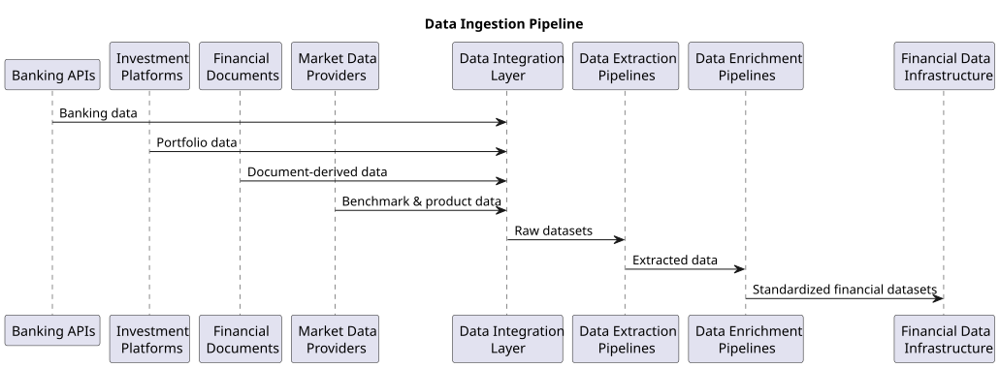
Data Source Reliability Considerations
Financial data sources may vary in reliability, availability, and update frequency. The data architecture must account for these variations.
Key considerations include:
- Data Freshness
Some datasets, such as transaction data, may update frequently, while others, such as financial product datasets, may update periodically.
Data Completeness
External financial data sources may occasionally return incomplete datasets that require validation and correction.
Data Consistency
Financial datasets obtained from multiple providers may use different naming conventions or identifiers.
The platform’s data processing pipelines must normalize these datasets to maintain consistency across the system.
Importance of Diverse Financial Data Sources
The quality and diversity of financial data sources directly influence the accuracy of the platform’s financial intelligence capabilities.
By integrating multiple categories of financial data, the platform can construct comprehensive financial profiles and perform deeper analytical evaluations.
A robust financial data ecosystem enables the AI Financial Intelligence Platform to generate more accurate insights, perform detailed portfolio analysis, and produce personalized financial recommendations.
Internal Platform Data Sources
In addition to external financial data providers, the Multiplus AI Financial Intelligence Platform relies heavily on internally generated datasets produced by the platform itself. These internal data sources are created as a result of user interactions, financial data processing pipelines, analytical computations, and recommendation workflows.
Internal platform data sources provide structured and enriched financial datasets that are specifically designed to support the analytical operations of the AI platform. These datasets are typically more consistent and standardized than external data sources, as they are generated and maintained within the platform’s controlled data environment.
This section describes the primary categories of internal platform data sources and their role in supporting the financial intelligence infrastructure.
Categories of Internal Platform Data
Internal platform data sources can be categorized into several major groups:
- user profile data
- financial behavior datasets
- portfolio intelligence datasets
- financial product datasets
- recommendation and analytics datasets
- operational system metadata
These datasets are produced by various modules of the platform and stored within the internal financial data infrastructure.
The internal data generation pipeline can be represented as follows:
- External Financial Data Sources
- ↓
- Data Extraction and Enrichment
- ↓
- Financial Data Processing
- ↓
- Internal Platform Data Sources
- ↓
- AI Intelligence Systems
These internally generated datasets provide the analytical foundation for the platform’s financial intelligence capabilities.
User Profile Data
User profile datasets store structured information describing each user’s financial characteristics and platform interactions.
Typical attributes stored in user profile datasets include:
- user identifiers
- demographic attributes
- financial goals and preferences
- risk tolerance indicators
- financial stability signals
- consent and data access permissions
- User profile data may originate from:
- user onboarding processes
- financial profiling questionnaires
- AI-generated financial profiles derived from financial data
These datasets enable the platform to personalize financial insights and recommendations for individual users.
Financial Behavior Datasets
Financial behavior datasets are derived from transaction analysis and behavioral signal detection systems.
These datasets capture patterns in user financial activity and provide insights into financial habits.
Typical attributes include:
- categorized spending records
- recurring expense indicators
- income detection signals
- savings rate estimates
- liquidity indicators
These datasets are generated through transaction classification and financial behavior analysis pipelines.
Behavioral datasets are essential for understanding how users manage their finances and for identifying financial stability patterns.
Portfolio Intelligence Datasets
Portfolio intelligence datasets are generated by the platform’s portfolio analysis systems.
These datasets describe the structure, composition, and performance of user investment portfolios.
Typical attributes include:
- portfolio holdings and asset classifications
- asset allocation percentages
- diversification metrics
- investment concentration indicators
- portfolio performance metrics
These datasets enable the AI platform to analyze portfolio risk exposure and evaluate potential improvements in portfolio structure.
Portfolio intelligence data also provides key inputs to the recommendation engine.
Financial Product Datasets
The platform maintains internal datasets that describe financial products available within the system’s investment universe.
These datasets may include:
- mutual fund product catalogs
- product category classifications
- historical performance metrics
- volatility indicators
- risk-adjusted return metrics
While some of this information originates from external providers, the platform enriches and organizes product datasets into standardized internal structures.
This internal representation enables the recommendation engine to evaluate financial products consistently across the platform.
Recommendation and Analytics Datasets
Recommendation and analytics datasets store outputs generated by the AI intelligence modules.
These datasets capture analytical results and recommendation artifacts produced by the system.
Typical examples include:
- generated investment recommendations
- product ranking scores
- portfolio improvement suggestions
- recommendation reasoning metadata
- These datasets support multiple functions within the platform, including:
- presenting recommendations to users
- auditing recommendation decisions
- monitoring recommendation performance
Historical recommendation records may also be used to evaluate the effectiveness of recommendation algorithms.
Operational System Metadata
Operational metadata datasets store information about system operations, data processing workflows, and platform events.
Examples include:
- data ingestion logs
- document processing metadata
- AI inference logs
- data processing pipeline status
Operational metadata is important for maintaining system reliability, monitoring performance, and diagnosing system issues.
These datasets support platform observability and operational management.
Internal Data Relationships
Internal platform datasets are interconnected and often reference each other through relational identifiers.
For example:
financial behavior datasets reference user identifiers
portfolio intelligence datasets reference investment product identifiers
recommendation datasets reference both user profiles and financial products
These relationships allow the platform to construct a unified financial data model.
The relationship structure can be illustrated as follows:
- User Profiles
- ↓
- Financial Behavior Data
- ↓
- Portfolio Intelligence
- ↓
- Financial Product Data
- ↓
- Recommendation Outputs
Maintaining consistent relationships between datasets is critical for ensuring accurate financial analysis.
Data Governance for Internal Data
Internal financial datasets must be managed according to strict governance policies.
Important governance considerations include:
- Data Consistency
Internal datasets must follow standardized schemas to ensure compatibility across analytical systems.
Access Control
Sensitive financial data must only be accessible to authorized platform components.
Auditability
Analytical outputs and recommendations must maintain traceable records for auditing and compliance purposes.
Data Retention
Historical financial data and analytical outputs may need to be retained for extended periods to support trend analysis and system monitoring.
Importance of Internal Data Sources
Internal platform data sources are critical for enabling the advanced analytical capabilities of the AI Financial Intelligence Platform.
While external financial data provides the raw inputs required for financial analysis, internally generated datasets provide the structured intelligence that powers portfolio evaluation, behavioral modeling, and recommendation generation.
These internally maintained datasets allow the platform to build a continuously evolving financial intelligence system capable of delivering increasingly accurate financial insights.
External Financial Data Providers
External financial data providers supply critical datasets that enable the Multiplus AI Financial Intelligence Platform to analyze financial markets, evaluate financial products, and understand user financial activity. These providers serve as authoritative sources of financial information and are integrated into the platform through secure data access mechanisms.
The reliability, accuracy, and timeliness of these external datasets are essential for maintaining the quality of financial analysis and recommendation generation within the platform.
External financial data providers contribute several categories of financial information, including:
- banking and transaction data
- investment portfolio data
- financial product information
- market benchmark data
- regulatory and reference datasets
These external datasets complement internally generated financial intelligence and provide the foundational inputs required for financial analytics.
Categories of External Financial Data Providers
External financial data providers can be grouped into several categories based on the type of financial information they supply.
The major categories include:
- banking and financial account providers
- investment and asset management providers
- market data providers
- financial data aggregators
- regulatory and industry data sources
Each provider category contributes a specific type of financial dataset to the platform.
The external data ecosystem can be represented as follows:
- Banking Institutions
- Investment Platforms
- Market Data Providers
- Financial Data Aggregators
- Regulatory Data Sources
- ↓
- Secure Data Integration Layer
- ↓
- Multiplus Data Infrastructure
- ↓
- AI Financial Intelligence Platform
Banking and Financial Account Providers
Banking institutions provide access to financial account information and transaction records that reflect the user’s financial activity.
These datasets allow the platform to analyze financial behavior and derive insights about income patterns, spending habits, and savings behavior.
Typical banking data attributes include:
- account balances
- transaction histories
- salary deposits
- bill payments
- loan repayments
- merchant transactions
- Banking data enables several analytical capabilities within the platform, including:
- income estimation
- expense categorization
- recurring transaction detection
- liquidity analysis
Data from banking institutions is typically accessed through secure APIs and requires explicit user consent.
Investment and Asset Management Providers
Investment platforms and asset management companies provide information about investment products and portfolio holdings.
These datasets enable the platform to analyze user investment portfolios and evaluate available financial products.
Typical datasets obtained from investment providers include:
- mutual fund holdings
- investment transaction records
- portfolio valuations
- investment product attributes
- asset classification information
- This data allows the platform to perform:
- portfolio composition analysis
- asset allocation evaluation
- diversification measurement
- investment performance analysis
Investment provider integrations may occur through direct APIs, financial data aggregators, or document-based data extraction from account statements.
Market Data Providers
Market data providers supply financial market indicators that are used to evaluate investment performance and perform comparative analysis.
Typical market datasets include:
- stock market index values
- benchmark index performance
- sector-level market indicators
- historical market performance data
- Market benchmarks allow the platform to perform several analytical operations, including:
- comparing investment performance against benchmark indices
- evaluating category-level investment trends
- analyzing portfolio performance relative to market conditions
Market data providers typically offer structured datasets that are updated periodically or in near real time.
Financial Data Aggregators
Financial data aggregators act as intermediaries that collect financial data from multiple institutions and provide unified data access through standardized APIs.
These services simplify integration with financial institutions by offering a single access interface for multiple financial data sources.
Data aggregators may provide access to:
banking transaction data
investment account information
portfolio holdings across institutions
financial account metadata
Aggregators enable the platform to access financial data across multiple institutions without requiring individual integrations with each provider.
These services typically operate under consent-based financial data sharing frameworks.
Regulatory and Industry Data Sources
Regulatory bodies and industry organizations provide reference datasets that support financial analysis and product classification.
Examples of regulatory data sources include:
- financial product registries
- industry classification datasets
- regulatory filings
- mutual fund scheme identifiers
These datasets are used to ensure that financial products are correctly classified and mapped within the platform’s internal financial data models.
Regulatory data sources also help maintain compliance with financial industry standards.
Data Access Mechanisms
External financial data providers are integrated into the platform using secure data access mechanisms.
Common access methods include:
- API-Based Data Access
Most external financial providers offer APIs that allow platforms to retrieve financial data programmatically.
Secure Data Feeds
Some providers supply financial datasets through periodic data feeds or bulk dataset transfers.
Document-Based Data Extraction
In cases where structured APIs are unavailable, financial data may be extracted from financial documents such as account statements.
All data access mechanisms must adhere to strict security and consent requirements.
Data Integration Architecture
External financial datasets are integrated into the platform through a dedicated data integration layer that standardizes incoming data before it enters the platform’s data pipelines.
The integration architecture can be illustrated as follows:
- External Financial Data Providers
- ↓
- Secure API Integrations
- ↓
- Data Integration Layer
- ↓
- Data Extraction Pipelines
- ↓
- Data Enrichment Pipelines
- ↓
- Financial Data Infrastructure
This architecture ensures that heterogeneous datasets from multiple providers are normalized into consistent financial data models.
Data Reliability and Validation
External financial datasets may vary in quality, update frequency, and completeness.
To ensure reliability, the platform must implement validation mechanisms that verify the integrity of incoming datasets.
Validation processes may include:
- schema validation
- detection of missing fields
- validation of financial identifiers
- verification of numerical values and timestamps
- These checks ensure that analytical systems operate on accurate financial data.
Importance of External Financial Data
External financial data providers play a critical role in enabling the analytical capabilities of the Multiplus AI Financial Intelligence Platform.
Without access to external financial datasets, the platform would not be able to analyze user financial behavior, evaluate investment products, or compare portfolio performance against market benchmarks.
By integrating diverse financial data sources into a unified data architecture, the platform can construct comprehensive financial intelligence models that support personalized investment recommendations and portfolio insights.
Data Ingestion Pipelines
Data ingestion pipelines are responsible for collecting, validating, and integrating financial data from both internal and external sources into the Multiplus data infrastructure. These pipelines ensure that financial data flows reliably from its source systems into the platform’s storage and processing layers.
Financial data originates from a wide variety of sources including financial APIs, market data providers, financial documents, and internally generated datasets. The ingestion pipelines standardize these inputs, perform validation and transformation operations, and route the processed data to appropriate storage systems.
The ingestion pipelines form a critical component of the platform’s data architecture because they ensure that financial datasets are consistently updated and available for analytical processing by the AI Financial Intelligence Platform.
Purpose of Data Ingestion Pipelines
The primary purpose of the data ingestion pipelines is to enable reliable and scalable movement of financial data into the platform’s data infrastructure.
Key objectives include:
- collecting financial data from external and internal sources
- validating incoming datasets for accuracy and completeness
- transforming heterogeneous data formats into standardized schemas
- routing datasets to appropriate storage systems
- supporting both batch and real-time data ingestion
These pipelines ensure that the financial data infrastructure remains continuously updated with the latest available information.
Role in the Data Architecture
The data ingestion pipelines operate as the entry point for financial data within the platform’s data architecture.
Their position in the data architecture can be illustrated as follows:
- External Financial Data Sources
- Internal Platform Data
- ↓
- Data Ingestion Pipelines
- ↓
- Data Validation and Transformation
- ↓
- Financial Data Storage
- ↓
- AI Financial Intelligence Platform
By centralizing the ingestion process, the platform ensures that all financial datasets follow consistent processing standards before entering the data infrastructure.
Types of Ingestion Pipelines
The platform supports multiple types of ingestion pipelines to accommodate different categories of financial data.
The primary ingestion pipeline types include:
- batch ingestion pipelines
- streaming ingestion pipelines
- event-driven ingestion pipelines
- document ingestion pipelines
- Each pipeline type is optimized for specific data sources and update patterns.
Batch Data Ingestion
Batch ingestion pipelines process financial datasets that are updated periodically.
Typical batch ingestion use cases include:
- daily updates of financial product datasets
- periodic market benchmark data updates
- scheduled updates of portfolio valuation data
- financial analytics dataset refreshes
Batch pipelines typically operate on scheduled intervals and process large datasets in bulk.
A typical batch ingestion workflow can be represented as follows:
- Scheduled Data Source
- ↓
- Batch Data Retrieval
- ↓
- Data Validation
- ↓
- Data Transformation
- ↓
- Financial Data Storage
Batch ingestion pipelines are optimized for processing large volumes of financial data efficiently.
Streaming Data Ingestion
Streaming ingestion pipelines support near real-time processing of financial data.
Streaming ingestion is particularly useful for financial events that occur continuously, such as:
- incoming financial transactions
- portfolio updates
- market data updates
- financial document uploads
Streaming pipelines allow the platform to process and store data shortly after it becomes available.
The streaming ingestion architecture can be represented as follows:
- Real-Time Financial Events
- ↓
- Streaming Ingestion Pipeline
- ↓
- Event Processing
- ↓
- Data Validation
- ↓
- Financial Data Storage
Streaming ingestion enables the platform to maintain up-to-date financial datasets.
Event-Driven Data Ingestion
Event-driven ingestion pipelines trigger data processing workflows when specific system events occur.
Examples of triggering events include:
- user linking a financial account
- user uploading a financial document
- completion of a financial transaction
- updates to financial product datasets
When such events occur, the ingestion pipeline initiates data retrieval and processing tasks.
Event-driven pipelines help ensure that financial data processing occurs immediately when relevant events are detected.
Document Ingestion Pipelines
Document ingestion pipelines handle financial documents uploaded by users or received from external systems.
These pipelines perform the following operations:
- receiving uploaded documents
- storing raw document files
- triggering document processing workflows
- sending documents to the document management module
- The document ingestion process can be represented as follows:
- Document Upload
- ↓
- Document Ingestion Pipeline
- ↓
- Secure Document Storage
- ↓
- Document Processing Systems
This pipeline ensures that financial documents are processed efficiently and integrated into the financial data infrastructure.
Ingestion Pipeline Components
The data ingestion pipelines consist of several internal components responsible for orchestrating the ingestion process.
Data Source Connectors
Data source connectors manage communication with external financial providers and internal platform systems.
Responsibilities include:
- retrieving financial datasets from APIs
- fetching market data feeds
- receiving document uploads
- Data Validation Engine
The validation engine ensures that incoming datasets conform to expected schemas and data quality standards.
Validation tasks include:
- verifying schema compliance
- detecting missing data fields
- validating financial identifiers
- checking timestamp consistency
- Datasets that fail validation may be rejected or flagged for correction.
- Data Transformation Layer
The transformation layer converts incoming datasets into standardized financial data schemas.
Typical transformations include:
- field mapping across different data providers
- normalization of financial identifiers
- conversion of numerical and timestamp formats
These transformations ensure that downstream systems operate on consistent financial data models.
Pipeline Orchestration System
The orchestration system manages the execution of ingestion workflows.
Responsibilities include:
- scheduling batch ingestion jobs
- triggering event-driven pipelines
- coordinating data transformation tasks
- monitoring ingestion pipeline status
This component ensures that ingestion pipelines operate reliably across the platform.
Data Ingestion Workflow
The complete ingestion workflow can be summarized as follows:
- Financial Data Sources
- ↓
- Data Source Connectors
- ↓
- Data Validation
- ↓
- Data Transformation
- ↓
- Ingestion Pipeline Orchestration
- ↓
- Financial Data Storage
Each stage ensures that incoming financial datasets are validated, standardized, and stored in the appropriate data infrastructure systems.
Design Considerations
Designing reliable data ingestion pipelines for financial systems requires careful consideration of several factors.
Important considerations include:
- Scalability
The ingestion system must support large volumes of financial data from multiple sources.
Fault Tolerance
Failures in data sources or pipeline components must not result in data loss.
Data Quality Assurance
Validation and transformation processes must ensure high-quality financial datasets.
Low Latency
Streaming pipelines should minimize the delay between data arrival and data availability.
Schema Evolution
The ingestion architecture must support changes in financial data schemas without disrupting existing pipelines.
Importance in the Data Architecture
Data ingestion pipelines are essential for maintaining a continuously updated financial data infrastructure.
Without reliable ingestion systems, the platform would not be able to integrate external financial data, process user financial activity, or maintain accurate financial intelligence models.
By ensuring that financial datasets flow reliably into the platform’s data infrastructure, the ingestion pipelines enable the AI Financial Intelligence Platform to perform real-time financial analysis and generate personalized recommendations.
Data Validation and Quality Checks
Financial intelligence systems depend heavily on the accuracy, consistency, and reliability of the underlying financial data. Because the Multiplus AI Financial Intelligence Platform integrates datasets from multiple external providers, user inputs, and internally generated analytical pipelines, the platform must implement rigorous data validation and quality control mechanisms.
The Data Validation and Quality Checks framework ensures that financial datasets entering and flowing through the platform meet predefined quality standards before being used by analytical models, portfolio intelligence systems, and recommendation engines.
This section describes the validation mechanisms and quality control processes implemented within the platform’s data architecture.
Purpose of Data Validation
The primary objective of data validation is to ensure that all financial datasets used by the platform are:
- accurate
- complete
- consistent
- properly formatted
- traceable to reliable data sources
Financial data errors can significantly impact analytical results, leading to incorrect financial insights or inappropriate investment recommendations. Validation mechanisms help prevent such errors by identifying and correcting problematic datasets before they enter the analytical pipeline.
Role in the Data Pipeline
Data validation and quality checks occur at multiple stages of the data pipeline. Validation mechanisms are applied during:
- data ingestion
- data transformation
- data enrichment
- data storage
- data retrieval
- The validation process can be illustrated as follows:
- Financial Data Sources
- ↓
- Data Ingestion Pipelines
- ↓
- Data Validation Checks
- ↓
- Data Transformation
- ↓
- Financial Data Storage
- ↓
- AI Intelligence Systems
By integrating validation processes at multiple stages, the platform ensures that data quality issues are detected as early as possible.
Types of Data Validation Checks
The platform performs several categories of validation checks to ensure the integrity of financial datasets.
These checks include:
- schema validation
- completeness checks
- value validation
- consistency checks
- anomaly detection
- Each validation type addresses a different aspect of data quality.
Schema Validation
Schema validation ensures that incoming datasets conform to the expected data structures defined by the platform’s financial data models.
Schema validation checks include:
- verifying required fields are present
- confirming correct data types for each field
- validating field length and format constraints
- ensuring compatibility with predefined financial schemas
- For example, a transaction dataset must include fields such as:
- transaction identifier
- timestamp
- transaction amount
- transaction description
If required fields are missing or incorrectly formatted, the dataset may be rejected or flagged for correction.
Completeness Checks
Completeness checks verify that incoming financial datasets contain all required information necessary for analytical processing.
Examples of completeness validation include:
- verifying that transaction datasets contain all transactions for a given time period
- ensuring that portfolio datasets include all investment holdings
- confirming that financial product datasets include required performance metrics
Incomplete datasets can result in inaccurate financial analysis, so completeness checks are essential for maintaining reliable intelligence outputs.
Value Validation
Value validation checks ensure that numerical and categorical values within financial datasets fall within acceptable ranges.
Examples include:
- verifying that transaction amounts are valid numeric values
- confirming that portfolio allocation percentages sum to expected totals
- ensuring that financial product performance metrics fall within reasonable ranges
Value validation prevents errors caused by corrupted data fields or incorrect data formats.
Consistency Checks
Consistency checks ensure that related datasets remain logically consistent with each other.
Examples include:
- ensuring that transaction totals align with account balance changes
- verifying that portfolio holdings correspond to investment transaction records
- confirming that financial product identifiers match those in product catalogs
Consistency checks help detect discrepancies that may arise when data is collected from multiple sources.
Anomaly Detection
Anomaly detection mechanisms identify unusual or unexpected patterns within financial datasets.
Examples of potential anomalies include:
- unusually large transaction values
- unexpected portfolio valuation changes
- missing financial product identifiers
- sudden changes in transaction frequency
- Anomalies may indicate:
- data corruption
- incomplete datasets
- errors in financial provider APIs
Detected anomalies can be flagged for further investigation before the data is used for analysis.
Data Quality Monitoring
In addition to validation checks, the platform implements continuous monitoring of data quality metrics.
Key monitoring indicators include:
- dataset completeness rates
- frequency of validation failures
- number of detected anomalies
- ingestion pipeline error rates
These metrics allow the platform to identify systemic issues in data pipelines or external data providers.
Data quality monitoring helps maintain long-term reliability of the financial data infrastructure.
Error Handling and Recovery
When validation failures occur, the system must implement appropriate error handling mechanisms.
Possible actions include:
- rejecting invalid datasets
- isolating problematic records for review
- retrying data ingestion operations
- notifying monitoring systems of data quality issues
Error handling ensures that invalid data does not propagate into the AI intelligence systems.
Data Traceability
Traceability mechanisms allow the platform to track the origin and transformation history of financial datasets.
Traceability metadata may include:
- data source identifiers
- ingestion timestamps
- transformation pipeline records
- document source references
Maintaining traceability allows the platform to audit financial data and verify analytical outputs when necessary.
Traceability is particularly important for regulatory compliance and financial auditing.
Design Considerations
The data validation framework must be designed to support the scale and complexity of financial data processing.
Key design considerations include:
- Performance Efficiency
- Validation processes should not introduce excessive delays in the data pipeline.
- Scalability
Validation mechanisms must operate efficiently across large datasets and multiple data sources.
Extensibility
New validation rules should be easily added as financial data models evolve.
Automation
Validation processes should operate automatically as part of the data pipeline.
Compliance
Validation mechanisms must support regulatory requirements related to financial data handling.
Importance in the Data Architecture
The Data Validation and Quality Checks framework is essential for maintaining the integrity of the financial intelligence system.
High-quality financial data ensures that analytical models produce accurate insights and that recommendation systems generate reliable financial guidance.
By implementing comprehensive validation and quality control mechanisms, the Multiplus platform ensures that its AI Financial Intelligence Platform operates on trustworthy and consistent financial datasets.
Data Storage Strategy
The Data Storage Strategy defines how financial datasets are stored, organized, and accessed within the Multiplus AI Financial Intelligence Platform. Because the platform processes multiple types of financial data—including transactional records, portfolio datasets, financial product information, and analytical outputs—it requires a storage architecture capable of handling diverse data structures and access patterns.
The storage architecture is designed to support:
high-volume financial datasets
time-series financial data
analytical query workloads
machine learning feature storage
document and unstructured data processing
The platform adopts a multi-layered storage architecture that combines several storage technologies, each optimized for specific data workloads.
Objectives of the Storage Strategy
The data storage architecture is designed to achieve several key objectives.
These objectives include:
- reliable long-term storage of financial datasets
- efficient retrieval of financial data for analytical workloads
- support for large-scale financial data processing
- storage of historical financial records for trend analysis
- compatibility with machine learning and AI systems
By implementing a structured storage architecture, the platform ensures that financial datasets remain accessible and manageable across the entire financial intelligence pipeline.
Storage Architecture Overview
The platform organizes financial datasets across multiple storage layers, each serving a specific purpose within the system.
The storage architecture can be represented as follows:
- Data Ingestion Pipelines
- ↓
- Raw Data Storage (Data Lake)
- ↓
- Processed Financial Data Storage
- ↓
- Feature Store
- ↓
- Vector Database
- ↓
- AI Financial Intelligence Systems
- Each layer supports different data formats and analytical workloads.
Raw Data Storage (Data Lake)
The raw data storage layer maintains the original financial datasets collected from external data providers and document processing systems.
The data lake stores:
raw transaction datasets
raw portfolio datasets
financial document files
external financial data feeds
ingestion logs
Raw data storage provides several advantages:
- preservation of original financial datasets
- support for reprocessing pipelines when analytical models change
- long-term archival of financial records
Raw data is typically stored in distributed storage systems capable of handling large volumes of structured and unstructured data.
Processed Financial Data Storage
Processed financial datasets generated by the data extraction and enrichment pipelines are stored in structured databases designed for analytical workloads.
These databases contain structured financial records such as:
- categorized transaction data
- user financial profiles
- portfolio intelligence datasets
- financial product catalogs
Processed financial data storage typically uses relational or analytical database systems optimized for querying structured datasets.
These databases enable the AI platform to perform:
financial behavior analysis
portfolio evaluation
product ranking computations
Efficient indexing and query optimization mechanisms are used to support large-scale financial queries.
Time-Series Financial Data Storage
Financial datasets often evolve over time, requiring storage systems capable of handling time-series data.
Examples of time-series financial datasets include:
- transaction histories
- portfolio valuations over time
- financial product performance metrics
- market benchmark data
- Time-series storage enables the platform to perform longitudinal financial analysis such as:
- tracking changes in user financial behavior
- analyzing portfolio performance trends
- comparing historical product performance
Time-series data may be stored within specialized time-series databases or time-indexed relational storage systems.
Machine Learning Feature Store
The feature store is a specialized storage system used to maintain derived financial features generated by the data enrichment pipelines.
Examples of stored features include:
- income estimation metrics
- spending pattern indicators
- portfolio diversification metrics
- financial stability indicators
- These features are used by:
- risk profiling systems
- recommendation algorithms
- behavioral modeling systems
The feature store ensures that machine learning systems can retrieve consistent feature datasets during both model training and inference.
Vector Database Storage
Vector databases are used to store vector embeddings generated by document processing and AI model pipelines.
Examples of vector data include:
- embeddings of financial documents
- semantic representations of financial text
- knowledge retrieval embeddings for AI agents
- Vector databases support:
- semantic search across financial documents
- contextual retrieval for AI reasoning systems
- document similarity analysis
These capabilities are particularly important for the platform’s document intelligence and AI agent modules.
Document Storage
Financial documents uploaded by users or retrieved from external systems must be securely stored within the platform.
Document storage systems maintain:
uploaded financial documents
processed document images
document metadata
OCR outputs
Documents are typically stored in secure object storage systems with appropriate encryption and access control mechanisms.
The document storage architecture can be represented as follows:
- Document Upload
- ↓
- Secure Object Storage
- ↓
- Document Processing Systems
- ↓
- Extracted Financial Data
This architecture ensures that financial documents remain securely stored while still accessible for analytical processing.
Data Access Layer
The platform includes a data access layer that provides controlled interfaces for retrieving stored financial datasets.
The data access layer supports:
structured query interfaces
internal data service APIs
batch dataset retrieval
AI model data access
This layer ensures that analytical systems retrieve financial datasets using consistent access mechanisms.
Data Lifecycle Management
Financial datasets must be managed throughout their lifecycle to ensure efficient storage utilization and compliance with regulatory requirements.
Key lifecycle management operations include:
- data retention policies
- archival of historical datasets
- deletion of expired data
- versioning of financial datasets
Lifecycle management policies ensure that financial data remains accessible while preventing unnecessary storage growth.
Design Considerations
The storage architecture must be designed to meet the performance and reliability requirements of financial intelligence systems.
Important design considerations include:
- Scalability
The storage infrastructure must support large financial datasets across millions of records.
Data Consistency
Financial records must remain consistent across storage systems and analytical pipelines.
Security
Sensitive financial datasets must be encrypted and protected through strict access control mechanisms.
High Availability
Storage systems must remain available to analytical systems with minimal downtime.
Performance Optimization
Storage systems must support fast retrieval of financial datasets used in recommendation generation.
Importance in the Data Architecture
The data storage strategy provides the foundation for the platform’s financial intelligence capabilities.
Without reliable and scalable storage systems, the platform would not be able to maintain historical financial records, perform large-scale financial analysis, or support AI-driven recommendation systems.
By organizing financial datasets across specialized storage layers, the Multiplus AI Financial Intelligence Platform ensures that financial data remains accessible, reliable, and optimized for analytical workloads.
Data Lake Design
The Data Lake serves as the foundational storage layer for raw and semi-processed financial datasets within the Multiplus AI Financial Intelligence Platform. It provides scalable, distributed storage for large volumes of heterogeneous financial data collected from external providers, financial documents, and internal platform systems.
Unlike structured databases that require predefined schemas, the data lake is designed to store financial datasets in their original or minimally processed form. This approach enables the platform to retain complete historical records of financial data while allowing downstream processing pipelines to extract and transform datasets as required.
The Data Lake Design supports the platform’s needs for long-term data retention, large-scale data processing, and flexible analytics.
Purpose of the Data Lake
The primary purpose of the data lake is to act as a centralized repository for raw financial data.
Key objectives include:
- storing raw financial datasets before transformation
- maintaining historical archives of financial data
- supporting large-scale data processing workflows
- enabling reprocessing of datasets when analytical models evolve
- storing unstructured financial data such as documents and logs
By preserving raw financial data, the platform ensures that original datasets remain available for future analytical tasks and auditing purposes.
Role in the Data Architecture
The data lake sits immediately after the data ingestion pipelines and before the structured data processing layers.
Its position within the overall data architecture can be illustrated as follows:
- Financial Data Sources
- ↓
- Data Ingestion Pipelines
- ↓
- Data Lake (Raw Financial Data)
- ↓
- Data Processing and Enrichment Pipelines
- ↓
- Structured Financial Data Storage
- ↓
- AI Financial Intelligence Platform
This architecture allows the platform to maintain both raw datasets and processed analytical datasets simultaneously.
Types of Data Stored in the Data Lake
The data lake stores multiple categories of financial data in raw or semi-processed form.
Examples include:
- Raw Transaction Data
- banking transaction records
- payment events
- account balance snapshots
- Raw Portfolio Data
- investment holdings datasets
- portfolio valuation records
- investment transaction logs
- Financial Product Data
- financial product catalogs
- historical performance datasets
- benchmark index datasets
- Financial Documents
- consolidated account statements
- bank statements
- investment reports
- uploaded financial documents
- Operational Metadata
- ingestion logs
- data processing pipeline records
- system event logs
These datasets may exist in structured, semi-structured, or unstructured formats.
Data Lake Storage Structure
The data lake organizes financial datasets using a hierarchical storage structure that groups data according to source and dataset type.
A simplified storage structure may resemble the following:
- data_lake/
- banking_data/
- transactions/
- balances/
- portfolio_data/
- holdings/
- valuations/
- financial_products/
- product_catalog/
- performance_metrics/
- financial_documents/
- statements/
- reports/
- system_logs/
- ingestion_logs/
- pipeline_logs/
This structure helps maintain logical separation between different types of financial datasets.
Data Partitioning Strategy
To support efficient data retrieval and processing, datasets within the data lake are typically partitioned based on specific attributes.
Common partitioning strategies include:
- partitioning by data source
- partitioning by date or time period
- partitioning by user identifier
- partitioning by dataset category
- For example, transaction datasets may be partitioned by date:
- transactions/
- year=2026/
- month=01/
- month=02/
- month=03/
Partitioning allows data processing pipelines to read only the relevant subset of data during analytical operations.
Data Format Considerations
Financial datasets stored in the data lake may use various storage formats depending on their structure and intended use.
Common data formats include:
- columnar formats for structured datasets
- JSON or semi-structured formats for API responses
- binary formats for optimized analytical processing
- document formats such as PDF for financial documents
Using efficient storage formats improves performance during large-scale data processing.
Data Processing Integration
The data lake integrates closely with the platform’s data processing pipelines.
Processing systems retrieve raw datasets from the data lake and perform transformations such as:
- data cleaning
- schema normalization
- financial feature generation
- entity resolution
The processed datasets are then stored in structured financial databases and feature stores.
The processing pipeline can be represented as follows:
- Raw Financial Data (Data Lake)
- ↓
- Data Processing Pipelines
- ↓
- Data Enrichment Pipelines
- ↓
- Structured Financial Data Storage
This architecture separates raw data storage from structured analytical datasets.
Data Retention and Archival
The data lake supports long-term retention of financial datasets for historical analysis and compliance requirements.
Retention policies may include:
- preserving raw financial records for multiple years
- archiving older datasets into cold storage tiers
- maintaining immutable copies of certain datasets for auditing purposes
Historical financial datasets are valuable for analyzing long-term financial trends and improving analytical models.
Security and Access Control
Because the data lake stores sensitive financial information, strong security mechanisms must be implemented.
Security measures include:
- encryption of stored financial data
- role-based access control for dataset retrieval
- audit logs for data access events
- isolation of user-specific financial data
Access to raw financial datasets is typically restricted to authorized data processing systems.
Design Considerations
Designing an effective data lake for financial intelligence systems requires careful planning.
Important design considerations include:
- Scalability
The data lake must support storage of large volumes of financial data over long periods.
Flexibility
The system must accommodate new financial datasets and evolving data formats.
Processing Efficiency
The storage structure must support efficient batch and distributed data processing.
Data Governance
Data access policies must enforce security and regulatory compliance.
Cost Optimization
Storage systems should balance performance and cost by using multiple storage tiers.
Importance in the Data Architecture
The data lake serves as the central repository for raw financial data within the Multiplus AI Financial Intelligence Platform.
By preserving original financial datasets and supporting large-scale data processing, the data lake enables the platform to maintain historical financial records, reprocess data when analytical models evolve, and support advanced financial intelligence workflows.
Feature Store Design
The Feature Store is a specialized data storage system designed to manage and serve machine learning features used by analytical models within the Multiplus AI Financial Intelligence Platform. These features are derived from processed financial datasets and represent structured signals that describe user financial behavior, portfolio characteristics, and financial product attributes.
The feature store enables the platform to maintain a consistent and reusable repository of financial features that can be accessed by machine learning models during both training and inference. By centralizing feature storage and management, the platform ensures that analytical models operate on standardized datasets and reduces the risk of feature inconsistencies.
The Feature Store plays a critical role in supporting the platform’s risk profiling systems, portfolio intelligence models, and recommendation algorithms.
Purpose of the Feature Store
The primary purpose of the feature store is to maintain structured datasets containing derived financial features used by analytical models.
Key objectives include:
- storing derived financial features generated by data enrichment pipelines
- ensuring consistent feature definitions across machine learning workflows
- enabling efficient retrieval of features for model training and inference
- supporting feature versioning and historical feature tracking
- reducing duplication of feature engineering efforts
By centralizing feature management, the platform improves the reliability and reproducibility of machine learning systems.
Role in the Data Architecture
The feature store operates as an intermediate layer between the data processing pipelines and the AI intelligence systems.
Its position within the data architecture can be illustrated as follows:
- Financial Data Sources
- ↓
- Data Ingestion Pipelines
- ↓
- Data Lake
- ↓
- Data Processing and Enrichment
- ↓
- Feature Store
- ↓
- Machine Learning Models
- ↓
- AI Financial Intelligence Systems
This architecture allows analytical models to retrieve consistent feature datasets without directly interacting with raw financial data.
Types of Features Stored
The feature store maintains several categories of derived financial features that describe user behavior, portfolio characteristics, and financial product attributes.
User Financial Behavior Features
These features describe patterns in user financial activity derived from transaction datasets.
Examples include:
- estimated monthly income
- categorized spending distributions
- savings rate indicators
- recurring expense patterns
- liquidity ratios
- These features are used by financial profiling and behavioral analysis systems.
- Portfolio Intelligence Features
Portfolio intelligence features describe the structure and characteristics of a user’s investment portfolio.
Examples include:
- asset allocation percentages
- diversification metrics
- investment concentration indicators
- portfolio volatility estimates
- portfolio growth rates
These features enable portfolio analysis models and recommendation systems to evaluate the effectiveness of current portfolio structures.
Financial Risk Indicators
Risk indicators are derived features used by risk profiling models.
Examples include:
- financial stability scores
- portfolio risk exposure metrics
- income volatility indicators
- investment horizon signals
These features help determine whether financial products are suitable for a particular user.
Financial Product Features
Financial product features describe the attributes of financial instruments available within the platform’s product universe.
Examples include:
- historical performance metrics
- volatility indicators
- risk-adjusted return metrics
- expense ratios
- benchmark performance comparisons
- These features are used by product ranking and evaluation models.
Online and Offline Feature Storage
The feature store supports two modes of feature access.
Offline Feature Store
The offline feature store maintains large datasets used for training machine learning models.
Characteristics include:
- storage of historical financial feature datasets
- support for batch data processing
- optimized for analytical workloads
These datasets allow data scientists and machine learning engineers to train models using historical financial behavior patterns.
Online Feature Store
The online feature store provides real-time access to feature values used during model inference.
Characteristics include:
- low-latency retrieval of feature values
- optimized for real-time recommendation workflows
- support for user-level feature queries
The online store ensures that AI models can retrieve the most recent feature values when generating financial recommendations.
Feature Generation Pipeline
Financial features stored in the feature store are generated through data enrichment and analytical pipelines.
The feature generation workflow can be represented as follows:
- Raw Financial Data
- ↓
- Data Processing Pipelines
- ↓
- Data Enrichment
- ↓
- Feature Generation
- ↓
- Feature Store
These pipelines compute financial metrics and behavioral signals that are then stored as reusable features.
Feature Versioning
Financial features may evolve as analytical models and feature engineering techniques improve. The feature store must support versioning mechanisms to maintain historical consistency.
Feature versioning allows the platform to:
track changes to feature definitions
maintain compatibility with existing machine learning models
reproduce historical model training environments
Version control ensures that models trained using previous feature definitions remain reproducible.
Feature Metadata Management
Each feature stored in the feature store is associated with metadata describing its properties.
Feature metadata may include:
- feature name
- feature description
- feature data type
- feature source dataset
- feature computation logic
- feature update frequency
Maintaining metadata enables data engineers and machine learning engineers to understand how features are derived and how they should be used.
Feature Access Patterns
Different components of the platform access feature store data depending on their analytical needs.
Typical access patterns include:
- Model Training
Machine learning training pipelines retrieve historical feature datasets from the offline feature store.
Model Inference
Recommendation engines and risk profiling systems retrieve real-time feature values from the online feature store.
Analytics
Data analysts and system monitoring tools may query feature datasets to analyze financial behavior trends.
Feature Consistency
One of the key design objectives of the feature store is to maintain consistency between training and inference environments.
This principle is often referred to as training-serving consistency.
Ensuring feature consistency prevents situations where:
machine learning models are trained on one set of feature definitions
inference systems use different feature definitions
The feature store enforces consistent feature generation logic across both environments.
Design Considerations
Designing a feature store for financial intelligence systems requires careful planning.
Important design considerations include:
- Scalability
- The feature store must handle large volumes of user-level financial features.
- Low Latency Access
Online feature retrieval must support low-latency inference for recommendation systems.
Feature Governance
Feature definitions must be standardized and documented to prevent duplication.
Data Freshness
Feature values must be updated frequently enough to reflect current financial behavior.
Security
Sensitive financial features must be protected through appropriate access control mechanisms.
Importance in the Data Architecture
The feature store provides the structured interface between financial data processing pipelines and AI models.
Without a feature store, machine learning systems would need to recompute features repeatedly, leading to inefficiencies and potential inconsistencies.
By centralizing financial feature storage and management, the feature store ensures that AI models operate on reliable, consistent, and up-to-date financial signals.
Vector Database Design
The Vector Database is a specialized storage system used to store and retrieve vector embeddings generated by AI models within the Multiplus AI Financial Intelligence Platform. These embeddings represent semantic representations of financial text, documents, and structured data, enabling advanced capabilities such as semantic search, contextual information retrieval, and AI agent reasoning.
Unlike traditional databases that operate on exact matches of structured fields, vector databases allow similarity-based searches across high-dimensional vector representations. This capability is particularly important for document intelligence systems and AI agent architectures that require contextual understanding of financial information.
The vector database forms a key component of the platform’s AI infrastructure, supporting document processing, knowledge retrieval, and explainable AI workflows.
Purpose of the Vector Database
The primary purpose of the vector database is to store embeddings generated by AI models and enable efficient similarity-based retrieval.
Key objectives include:
- storing vector embeddings derived from financial documents and text
- enabling semantic search across financial information
- supporting contextual retrieval for AI agents
- enabling document similarity detection
- supporting knowledge retrieval workflows
By enabling similarity-based search capabilities, the vector database allows AI systems to retrieve relevant financial information even when exact keyword matches are not present.
Role in the AI Platform Architecture
The vector database operates alongside the platform’s data storage infrastructure and supports AI-driven systems that require contextual information retrieval.
Its position in the overall architecture can be illustrated as follows:
- Financial Documents
- Platform Knowledge Sources
- Financial Text Data
- ↓
- Embedding Generation
- ↓
- Vector Database
- ↓
- Semantic Retrieval
- ↓
- AI Agents and Document Intelligence Systems
This architecture allows AI models to retrieve relevant information based on semantic similarity rather than exact text matches.
Types of Data Stored in the Vector Database
The vector database stores embeddings generated from several categories of financial information.
These include:
- Financial Document Embeddings
Embeddings generated from financial documents allow the platform to perform semantic searches across document contents.
Examples include:
- consolidated account statements
- bank statements
- investment reports
- financial disclosures
Document embeddings allow AI systems to retrieve relevant sections of documents when answering queries or generating explanations.
Financial Knowledge Base Embeddings
The platform may maintain a knowledge base containing financial concepts, regulatory information, and product descriptions.
Embeddings generated from this knowledge base enable:
semantic retrieval of financial concepts
contextual assistance for AI agents
explainability generation for recommendations
Financial Product Information Embeddings
Embeddings derived from financial product descriptions and metadata enable semantic analysis of financial products.
Examples include embeddings generated from:
- product descriptions
- product category definitions
- investment strategy descriptions
These embeddings allow AI systems to understand relationships between different financial products.
Analytical Output Embeddings
In some cases, analytical outputs generated by AI systems may also be embedded and stored for retrieval.
Examples include:
- recommendation reasoning summaries
- portfolio analysis explanations
- AI-generated financial insights
These embeddings support contextual retrieval during AI agent reasoning workflows.
Embedding Generation Pipeline
Before information can be stored in the vector database, it must first be converted into vector embeddings using embedding models.
The embedding generation process can be represented as follows:
- Financial Documents / Text Data
- ↓
- Text Preprocessing
- ↓
- Embedding Model
- ↓
- Vector Embeddings
- ↓
- Vector Database
Embedding models convert text into high-dimensional vectors that capture semantic meaning.
These embeddings are then stored in the vector database for similarity-based retrieval.
Vector Indexing
Vector databases use specialized indexing techniques to enable efficient similarity searches across large collections of embeddings.
Common indexing methods include:
- approximate nearest neighbor indexing
- hierarchical vector clustering
- graph-based vector indexing
These indexing techniques allow the system to quickly identify embeddings that are most similar to a query vector.
Efficient indexing is essential for supporting real-time AI agent operations.
Semantic Retrieval Workflow
When an AI system needs to retrieve relevant information, it generates a query embedding and performs a similarity search against stored embeddings.
The retrieval workflow can be illustrated as follows:
- User Query / AI Context
- ↓
- Query Embedding Generation
- ↓
- Vector Similarity Search
- ↓
- Relevant Financial Information
- ↓
- AI Agent Reasoning
This process allows AI agents to retrieve contextually relevant information even when the query does not contain exact keyword matches.
Metadata Association
Each vector embedding stored in the vector database is typically associated with metadata describing the source information.
Metadata may include:
- source document identifiers
- text segment location
- user identifiers (for user-specific documents)
- timestamp of embedding generation
Metadata allows the system to retrieve the original source content associated with each embedding.
This capability is important for explainability and document traceability.
Vector Database Access Patterns
Different components of the AI platform interact with the vector database depending on their functional requirements.
Common access patterns include:
- Document Intelligence Systems
- Retrieve document sections relevant to a particular financial query.
- AI Agents
- Retrieve contextual knowledge required for reasoning and explanation generation.
- Semantic Search Systems
Enable users or internal systems to search financial knowledge using natural language queries.
Security and Data Isolation
Because the vector database may contain embeddings derived from sensitive financial documents, strong security controls must be implemented.
Security measures include:
- encryption of stored embeddings
- role-based access control for vector retrieval
- user-level data isolation for document embeddings
- monitoring and auditing of vector database access
- These measures ensure that sensitive financial information remains protected.
Design Considerations
Designing an effective vector database architecture requires careful consideration of several factors.
Important design considerations include:
- Scalability
- The system must support storage and retrieval of large numbers of embeddings.
- Low Latency Retrieval
AI agents require fast similarity search capabilities to support real-time reasoning.
Embedding Quality
The effectiveness of semantic retrieval depends heavily on the quality of embedding models.
Index Maintenance
Vector indexes must be periodically updated as new embeddings are added.
Cost Efficiency
Vector databases must balance performance requirements with storage and compute costs.
Importance in the AI Platform
The vector database enables advanced semantic retrieval capabilities that significantly enhance the intelligence of the AI platform.
Without vector search capabilities, AI agents would be limited to rigid keyword-based retrieval systems, which are often insufficient for understanding complex financial information.
By enabling semantic retrieval of financial knowledge, document content, and analytical outputs, the vector database allows the Multiplus AI Financial Intelligence Platform to support sophisticated AI reasoning and explainable financial insights.
AI AGENT ARCHITECTURE
AI Agent Concept
The AI Agent Architecture provides the orchestration layer that coordinates AI models, financial data services, and analytical tools within the Multiplus AI Financial Intelligence Platform. While individual AI models can perform isolated tasks such as classification or prediction, financial intelligence workflows often require multi-step reasoning that combines data retrieval, analytical computations, and contextual explanation generation.
AI agents act as intelligent coordinators that manage these multi-step workflows. They interpret requests, retrieve relevant financial information, invoke analytical tools or models, and synthesize outputs into structured financial insights.
Within the platform, AI agents serve as the primary interface between user queries, financial data systems, and the AI intelligence layer.
Definition of an AI Agent
An AI agent is a system that can autonomously perform tasks by interacting with tools, data sources, and models in order to achieve a specific objective.
In the context of the financial intelligence platform, an AI agent performs the following responsibilities:
- interpreting financial queries or system triggers
- retrieving relevant financial data
- invoking analytical models and platform services
- synthesizing outputs into financial insights
Unlike standalone AI models, agents operate as orchestrators of multiple system components.
Role of AI Agents in the Platform
AI agents enable complex financial intelligence workflows that require multiple analytical steps.
Typical responsibilities include:
- answering financial queries from users
- generating portfolio analysis insights
- explaining financial recommendations
- retrieving financial data from platform services
- coordinating model execution
The AI agent layer connects user-facing services with the underlying AI and data infrastructure.
Motivation for an Agent-Based Architecture
Financial intelligence tasks are inherently complex and often require multiple steps.
For example, answering a financial question may require:
retrieving user financial profile data
analyzing portfolio composition
retrieving financial product information
generating an explanation for the result
This workflow can be represented as follows:
- User Query
- ↓
- AI Agent
- ↓
- Financial Data Retrieval
- ↓
- Analytical Model Execution
- ↓
- Financial Insight Generation
- ↓
- Response to User
An agent-based architecture enables flexible orchestration of these multi-step workflows.
Agent Interaction with System Components
AI agents interact with several components within the platform architecture.
Key components include:
- financial data services
- feature store systems
- vector databases
- analytical models
- large language models
- The interaction between agents and system components can be represented as follows:
- AI Agent
- ↓
- Context Builder
- ↓
- Tool Invocation Layer
- ↓
- Financial Data Services
- Analytical Models
- Vector Retrieval Systems
- Agents coordinate these components to produce coherent financial insights.
The following sequence diagram illustrates the agent reasoning workflow.
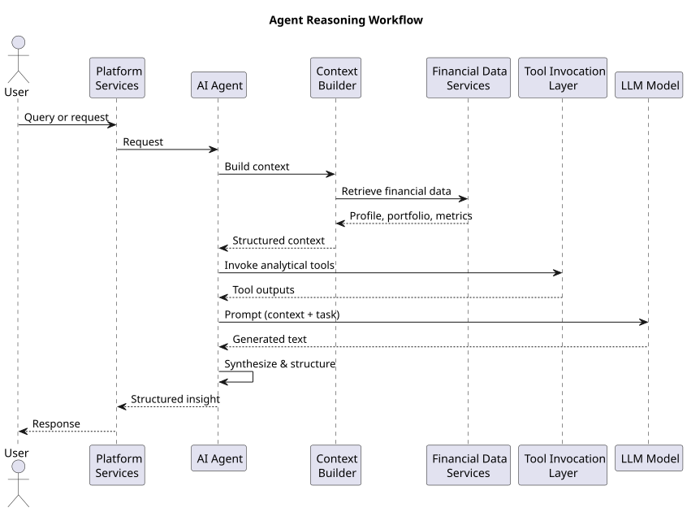
Agent Reasoning Workflow
An AI agent typically performs several reasoning steps when executing a task.
Typical workflow:
- interpret the incoming request or trigger
- identify relevant financial data sources
- retrieve contextual financial information
- invoke analytical models or tools
- synthesize outputs into structured insights
- This reasoning process allows agents to handle complex financial tasks.
Types of AI Agents in the Platform
The platform may support multiple types of AI agents depending on the task being performed.
Examples include:
- Financial Insight Agents
- Generate insights about user financial profiles and financial health indicators.
- Portfolio Analysis Agents
- Analyze portfolio composition and identify diversification gaps.
- Recommendation Explanation Agents
- Explain why specific financial products are recommended.
- Document Intelligence Agents
- Interpret financial documents and extract structured financial data.
Each agent type specializes in a particular category of financial intelligence tasks.
Agent Interaction with Large Language Models
Large language models play an important role in enabling agents to interpret instructions and generate natural language explanations.
The interaction between agents and LLMs can be represented as follows:
- AI Agent
- ↓
- Context Builder
- ↓
- Large Language Model
- ↓
- Generated Explanation
In this architecture, the agent prepares structured context and invokes the LLM to generate human-readable responses.
Tool-Based Agent Architecture
Agents operate through a tool-based architecture in which they invoke specialized tools to perform specific tasks.
Examples of tools include:
- financial data retrieval APIs
- portfolio analysis services
- financial feature store queries
- vector database retrieval
- Example architecture:
- AI Agent
- ↓
- Tool Selection
- ↓
- Tool Execution
- ↓
- Tool Output
This architecture enables agents to combine outputs from multiple tools into coherent responses.
Event-Driven Agent Execution
Agents may be triggered by several types of events within the platform.
Examples include:
- user queries requesting financial insights
- scheduled financial analysis tasks
- updates in financial data pipelines
- portfolio changes detected by monitoring systems
Event-driven agent execution allows the platform to generate financial insights proactively.
Agent Memory and Context
Agents require contextual information to perform reasoning tasks effectively.
Context may include:
- user financial profile information
- portfolio datasets
- financial health indicators
- retrieved financial documents
Agents use context builders to assemble relevant information before invoking reasoning models.
Scalability of Agent Systems
Agent systems must support concurrent financial analysis tasks across many users.
Scalability considerations include:
- distributed agent execution environments
- asynchronous task processing
- caching frequently accessed financial insights
Scalable agent infrastructure ensures that the system can support large user populations.
Importance in the AI Architecture
The AI agent architecture transforms isolated AI models into a coordinated financial intelligence system capable of performing complex analytical workflows.
By orchestrating models, data services, and reasoning systems, AI agents enable the platform to deliver contextual financial insights, explain recommendations, and automate financial analysis tasks.
This architecture provides the foundation for advanced AI-driven financial advisory capabilities within the Multiplus platform.
Agent Responsibilities
AI agents within the Multiplus AI Financial Intelligence Platform are responsible for orchestrating complex financial intelligence workflows that involve multiple data sources, analytical models, and reasoning systems. While individual AI models perform specific analytical tasks, agents coordinate these components to generate complete financial insights.
Agent responsibilities include interpreting requests, retrieving relevant financial context, invoking analytical tools, validating outputs, and producing structured responses. These responsibilities ensure that financial intelligence operations are executed reliably and consistently across the platform.
This section describes the key responsibilities assigned to AI agents within the system.
Request Interpretation
The first responsibility of an AI agent is to interpret incoming requests or triggers.
Requests may originate from multiple sources:
- user queries submitted through the platform interface
- internal system triggers
- scheduled financial analysis tasks
- portfolio update events
Agents must analyze the incoming request to determine the required financial intelligence task.
Example request interpretation workflow:
User Request or System Trigger
↓
Intent Identification
↓
Task Definition
The result of this stage is a clearly defined analytical objective.
Context Retrieval
Once the task has been identified, the agent must retrieve the relevant financial context required to perform analysis.
Typical contextual data may include:
- user financial profile data
- portfolio composition data
- financial health indicators
- historical transaction data
- financial product information
- Context retrieval may involve querying multiple platform services.
- Example workflow:
- AI Agent
- ↓
- Context Builder
- ↓
- Financial Data Services
- Feature Store
- Vector Database
The context builder aggregates the retrieved information into a structured format.
Tool Invocation
Many financial intelligence tasks require the agent to invoke specialized analytical tools or services.
Examples of tools that agents may invoke include:
- portfolio analysis engines
- risk scoring systems
- financial product ranking models
- document processing services
- Example architecture:
- AI Agent
- ↓
- Tool Invocation Layer
- ↓
- Analytical Services
The agent selects appropriate tools based on the analytical task being performed.
Model Execution Coordination
AI agents coordinate the execution of AI models when required.
Examples include:
- invoking transaction classification models
- triggering financial health scoring models
- invoking product ranking models
- generating embeddings for document retrieval
The agent determines which models must be executed and ensures that the correct inputs are provided.
Multi-Step Workflow Orchestration
Financial intelligence tasks often require multiple analytical steps.
Agents manage these multi-step workflows.
Example workflow:
User Query
↓
Retrieve Financial Profile
↓
Analyze Portfolio Structure
↓
Retrieve Product Data
↓
Generate Financial Insight
The agent coordinates each step sequentially to produce the final result.
Information Synthesis
After collecting outputs from various tools and models, the agent must synthesize the information into a coherent result.
Information synthesis may involve:
combining financial indicators from multiple sources
interpreting analytical model outputs
summarizing financial insights
This process transforms raw analytical outputs into structured insights.
Explanation Generation
Financial intelligence systems must provide clear explanations for recommendations and analytical outputs.
Agents may generate explanations that describe:
why a particular financial product is recommended
how portfolio diversification can be improved
why certain financial indicators are significant
Explanation generation often involves invoking large language models using structured financial context.
Example process:
Financial Analysis Results
↓
Context Preparation
↓
Large Language Model
↓
Explanation Output
Explanations improve transparency and user trust.
Validation and Suitability Checks
Before presenting outputs to users or platform services, agents must validate the results.
Validation may include:
- verifying alignment with user risk profiles
- confirming regulatory constraints
- ensuring recommendation suitability
- Suitability validation helps ensure responsible financial recommendations.
Output Structuring
Agents must convert analytical results into structured outputs that can be consumed by platform services.
Outputs may include:
- financial insight summaries
- portfolio analysis results
- recommendation lists
- explanation text
- Example output structure:
- AgentOutput
- insight_summary
- supporting_metrics
- recommendation_list
- explanation_text
- Structured outputs ensure compatibility with downstream services.
Logging and Audit Tracking
AI agents must record their operations for monitoring and auditing purposes.
Logging may include:
- tools invoked during the workflow
- models executed during analysis
- financial data sources accessed
- generated outputs
- Audit logs provide traceability and help diagnose issues.
Error Handling and Recovery
Agents must be capable of handling unexpected conditions such as:
- missing financial data
- tool execution failures
- model inference errors
- Error-handling strategies may include:
- retrying failed operations
- using fallback analytical paths
- returning partial results with explanations
- Robust error handling ensures system reliability.
Continuous Learning and Feedback
Agents may collect feedback signals from user interactions and system monitoring.
Examples include:
- user acceptance of recommendations
- corrections to transaction classifications
- user feedback on financial insights
- These signals may be used to improve models and analytical systems over time.
Importance in the Agent Architecture
Agent responsibilities define how AI-driven financial intelligence tasks are executed within the platform.
By coordinating data retrieval, model execution, tool invocation, and explanation generation, AI agents transform raw financial data into actionable financial insights.
These responsibilities ensure that the financial intelligence system operates as a cohesive and reliable decision-support platform.
Tool-Based Agent Architecture
The Tool-Based Agent Architecture defines how AI agents interact with platform services, analytical models, and data systems through structured tool interfaces. Instead of embedding all logic directly within the AI model, the agent operates as an orchestrator that selects and invokes specialized tools to perform individual tasks.
This architecture separates reasoning from execution. The agent is responsible for determining what needs to be done, while tools are responsible for performing specific operations such as retrieving financial data, analyzing portfolios, or ranking financial products.
By modularizing capabilities into tools, the system becomes more scalable, transparent, and maintainable.
Concept of Tool-Based Agents
A tool-based agent operates by selecting and invoking predefined tools that perform specific functions within the platform.
Each tool exposes a structured interface that defines:
the tool name
required input parameters
expected outputs
The agent determines which tools should be invoked based on the analytical task.
Example conceptual workflow:
User Query
↓
AI Agent
↓
Tool Selection
↓
Tool Invocation
↓
Tool Output
↓
Insight Generation
This architecture allows the agent to combine multiple tools to perform complex financial analysis.
Motivation for Tool-Based Architecture
Financial intelligence workflows often require interactions with multiple specialized systems.
Examples include:
- retrieving financial profile data
- analyzing investment portfolios
- evaluating financial product performance
- retrieving contextual knowledge from vector databases
- Embedding all these capabilities within a single AI model would create several problems:
- reduced interpretability
- difficulty maintaining system components
- inefficient use of specialized analytical services
The tool-based architecture solves these problems by delegating specific responsibilities to independent services.
Tool Categories in the Platform
Tools available to AI agents fall into several categories.
Key tool categories include:
- financial data retrieval tools
- analytical computation tools
- financial product analysis tools
- document intelligence tools
- vector retrieval tools
Each category provides capabilities required for financial intelligence workflows.
Financial Data Retrieval Tools
Financial data retrieval tools allow the agent to access structured financial data stored within platform databases.
Examples include:
- retrieving user financial profile data
- retrieving portfolio composition
- retrieving financial health indicators
- retrieving transaction summaries
- Example workflow:
- AI Agent
- ↓
- Financial Profile Tool
- ↓
- User Financial Data
These tools allow the agent to gather relevant context before performing analysis.
Analytical Computation Tools
Analytical tools perform financial calculations that require deterministic logic rather than language reasoning.
Examples include:
- portfolio risk analysis
- asset allocation calculations
- financial health scoring
- investment capacity estimation
- Example interaction:
- AI Agent
- ↓
- Portfolio Analysis Tool
- ↓
- Portfolio Risk Metrics
Delegating these computations to specialized tools ensures reliability and transparency.
Financial Product Analysis Tools
Financial product analysis tools evaluate financial instruments and investment options.
Examples include:
- mutual fund ranking tools
- performance comparison tools
- risk-adjusted return evaluation tools
- Example workflow:
- AI Agent
- ↓
- Fund Ranking Tool
- ↓
- Ranked Product List
These tools help agents identify suitable financial products for recommendations.
Document Intelligence Tools
Document intelligence tools enable agents to interpret financial documents.
Examples include:
- CAS parsing tools
- bank statement analysis tools
- document entity extraction tools
- Example workflow:
- AI Agent
- ↓
- Document Processing Tool
- ↓
- Extracted Financial Data
These tools convert unstructured documents into structured financial information.
Vector Retrieval Tools
Vector retrieval tools enable semantic search across financial knowledge bases and document embeddings.
These tools operate using vector databases and embedding models.
Example workflow:
AI Agent
↓
Embedding Generation
↓
Vector Database Search
↓
Relevant Documents
Retrieved information can then be used as context for reasoning or explanation generation.
Tool Interface Design
Each tool exposed to the agent must provide a well-defined interface.
Typical tool interfaces include:
- tool name
- input parameters
- output structure
- Example interface:
- Tool: PortfolioAnalysis
- Inputs:
- user_id
- Outputs:
- asset_allocation
- portfolio_risk_score
- diversification_metrics
- Standardized interfaces allow the agent to interact with tools consistently.
Tool Invocation Workflow
When performing a task, the agent follows a structured process to invoke tools.
Typical workflow:
- determine the analytical objective
- identify relevant tools
- construct tool inputs
- invoke the tool
- process tool outputs
- Example sequence:
- User Query
- ↓
- Agent Identifies Task
- ↓
- Agent Invokes Tool
- ↓
- Tool Executes Analysis
- ↓
- Agent Receives Result
- This workflow enables modular financial intelligence operations.
Tool Output Integration
After tools return outputs, the agent integrates these outputs into a coherent response.
Integration may involve:
combining multiple analytical results
validating outputs against financial constraints
preparing structured context for explanation generation
Example integration workflow:
Portfolio Metrics + Product Ranking +
User Risk Profile
↓
Recommendation Context
This context may then be used by reasoning systems or language models.
Tool Security and Access Control
Because tools may access sensitive financial data, strict access control policies must be enforced.
Security measures include:
- authentication for tool invocation
- role-based access control
- audit logging for tool usage
- These safeguards ensure that only authorized agents can access financial data.
Advantages of Tool-Based Architecture
The tool-based agent architecture offers several advantages.
Key benefits include:
- modular system design
- improved system maintainability
- easier integration of new analytical capabilities
- improved transparency and auditability
Because tools are independent services, they can be updated or replaced without modifying the entire agent system.
Importance in the AI Architecture
The tool-based agent architecture enables AI agents to orchestrate complex financial intelligence workflows by combining specialized services.
By separating reasoning from execution, the system ensures that financial analysis remains reliable, transparent, and scalable.
This architecture provides the foundation for advanced AI-driven financial advisory capabilities within the Multiplus platform.
Context Builder
The Context Builder is a critical component of the AI Agent Architecture responsible for assembling all relevant information required for reasoning and analysis. Before an AI agent invokes analytical tools or large language models, it must gather and structure the necessary financial context associated with the task.
Financial intelligence workflows require contextual understanding of multiple datasets including user financial profiles, portfolio structures, financial health indicators, and financial product data. The Context Builder retrieves and organizes this information so that downstream components—such as analytical models or language models—can operate with complete and accurate information.
By constructing structured context objects, the system ensures that AI reasoning remains grounded in real financial data rather than relying solely on language model inference.
Purpose of the Context Builder
The primary purpose of the Context Builder is to aggregate and structure relevant financial data required for a specific analytical task.
Key objectives include:
- retrieving relevant financial datasets
- filtering unnecessary information
- organizing data into structured context objects
- preparing context for analytical models and LLMs
Without proper context preparation, AI models may produce incomplete or inaccurate outputs.
Role in the Agent Architecture
The Context Builder operates between request interpretation and tool invocation within the agent workflow.
The interaction can be represented as follows:
- User Query or System Trigger
- ↓
- AI Agent
- ↓
- Context Builder
- ↓
- Structured Context
- ↓
- Tool Invocation or Model Execution
The context produced by this stage becomes the primary input for downstream analytical processes.
Context Sources
The Context Builder retrieves information from multiple system components.
Common context sources include:
- user financial profile databases
- portfolio data services
- feature store datasets
- vector databases
- financial product databases
- document intelligence systems
Each source provides a different type of financial information required for reasoning.
Types of Context Data
The Context Builder may assemble several categories of contextual data depending on the task.
Typical context components include:
- User Financial Profile Context
- income indicators
- expense indicators
- financial health metrics
- Portfolio Context
- portfolio holdings
- asset allocation
- portfolio risk metrics
- Product Context
- financial product characteristics
- performance metrics
- product risk levels
- Document Context
- extracted financial information from documents
- relevant sections of financial statements
Each component contributes to a comprehensive understanding of the user's financial situation.
Context Construction Workflow
The process of constructing context involves multiple steps.
The workflow can be represented as follows:
- Agent Task Definition
- ↓
- Identify Required Context Types
- ↓
- Retrieve Data from Sources
- ↓
- Filter and Normalize Data
- ↓
- Construct Context Object
This structured process ensures that all required data is included while avoiding unnecessary information.
Context Object Structure
Context is typically represented as a structured object containing multiple data fields.
Example structure:
FinancialContext user_profile portfolio_data financial_health_indicators product_data supporting_documents
This structured representation allows downstream systems to interpret the context consistently.
Context Filtering and Prioritization
Not all available financial data should be included in the context.
Including excessive information can reduce reasoning efficiency and increase computational cost.
Filtering mechanisms may prioritize:
the most recent financial data
data directly relevant to the task
high-confidence financial indicators
Prioritization ensures that models operate with concise and relevant context.
Context Window Management
Large language models operate within fixed context window limits.
The Context Builder must therefore manage the size of contextual information passed to the model.
Strategies include:
- summarizing financial datasets
- selecting the most relevant financial indicators
- limiting the number of retrieved documents
- Effective context window management ensures efficient LLM inference.
Retrieval-Augmented Context
For certain tasks, the Context Builder may retrieve additional contextual information from vector databases.
This retrieval process is part of retrieval-augmented generation workflows.
Example architecture:
Agent Query
↓
Embedding Generation
↓
Vector Database Retrieval
↓
Relevant Knowledge Context
↓
Context Builder
The retrieved knowledge is incorporated into the final context object.
Context Validation
Before the context is passed to downstream components, validation checks may be performed.
Validation tasks include:
- verifying the completeness of required fields
- checking data freshness
- ensuring correct data formats
- Validation ensures that reasoning systems operate on reliable financial data.
Context Reusability
In many workflows, the same context may be reused across multiple reasoning steps.
Example scenarios include:
- generating recommendations and explanations
- running multiple analytical models on the same portfolio
Context caching mechanisms may improve system efficiency by avoiding redundant data retrieval.
Security Considerations
The Context Builder operates on sensitive financial data and must follow strict security practices.
Security measures include:
- restricting access to user financial data
- encrypting data during transmission
- maintaining audit logs for context retrieval operations
These measures ensure that financial data remains protected throughout the agent workflow.
Importance in the Agent Architecture
The Context Builder ensures that AI agents operate with accurate and relevant financial information.
By aggregating financial data from multiple system components and organizing it into structured context objects, the Context Builder enables reliable reasoning and analysis.
This component plays a critical role in ensuring that AI-generated financial insights remain grounded in real financial data and aligned with the user’s financial situation.
Prompt Generation
Prompt Generation is the process of transforming structured financial context into a format that can be interpreted by large language models (LLMs). Within the Multiplus AI Financial Intelligence Platform, prompts act as the interface between the AI agent system and language-based reasoning models.
While the Context Builder assembles relevant financial data, prompt generation organizes this data into structured instructions that guide the reasoning behavior of the LLM. Proper prompt design ensures that the model produces responses grounded in financial data while maintaining consistency with platform policies, suitability constraints, and system objectives.
This section describes the architecture and methodology used for generating prompts within the AI agent workflow.
Purpose of Prompt Generation
The primary purpose of prompt generation is to convert structured financial context into instructions that guide the behavior of the language model.
Key objectives include:
- providing relevant financial context to the model
- defining the reasoning objective
- enforcing system behavior constraints
- ensuring consistent output formats
Effective prompts improve the accuracy, reliability, and interpretability of LLM outputs.
Role in the Agent Workflow
Prompt generation occurs after context construction and before invoking the language model.
The workflow can be illustrated as follows:
- User Query or System Trigger
- ↓
- AI Agent
- ↓
- Context Builder
- ↓
- Prompt Generation
- ↓
- Large Language Model
- ↓
- Generated Output
The prompt acts as the primary communication interface between the agent and the LLM.
Prompt Components
Prompts used within the financial intelligence system typically contain multiple structured components.
Common components include:
- system instructions
- task description
- structured financial context
- response formatting guidelines
- Each component serves a specific role in guiding model behavior.
System Instructions
System instructions define the behavioral constraints that the language model must follow.
Examples include:
- focusing only on provided financial context
- avoiding unsupported assumptions
- maintaining professional financial advisory tone
- Example structure:
- System Instructions:
- You are a financial analysis assistant.
- Use only the provided financial context.
- Do not generate unsupported financial advice.
- These instructions ensure that responses remain aligned with system policies.
Task Definition
The prompt must clearly describe the analytical task the model is expected to perform.
Examples include:
- explain portfolio diversification gaps
- summarize financial health indicators
- generate explanation for recommended investment products
- Example task definition:
- Task:
- Explain why the following financial products are suitable for the user.
- A clear task description improves the quality of model responses.
Context Injection
The structured financial context generated by the Context Builder is injected into the prompt.
Example context:
User Financial Profile: Estimated Income: 120000 per month Savings Rate: 25% Risk Profile: Moderate
Portfolio Summary: Equity Allocation: 40% Debt Allocation: 60%
Providing structured context allows the model to reason using actual financial data.
Output Format Instructions
To ensure consistent responses, prompts may specify the required output structure.
Example:
Output Format: 1. Summary of financial situation 2. Explanation of recommendation 3. Key supporting metrics
Standardized output formats improve integration with downstream platform services.
Prompt Templates
Prompts are typically generated using predefined templates that can be dynamically populated with context.
Example template:
Template:
System Instructions
Task Description
Financial Context
Output Instructions
Templates ensure that prompts remain consistent across different agent workflows.
Dynamic Prompt Construction
Different tasks require different prompt structures.
The prompt generation system dynamically constructs prompts based on:
the agent task type
the available financial context
the target output format
Example decision logic:
Agent Task
↓
Select Prompt Template
↓
Inject Financial Context
↓
Generate Prompt
Dynamic prompt construction allows the system to support multiple reasoning tasks.
Context Window Optimization
Large language models have limits on the amount of input data they can process.
Prompt generation must ensure that context remains within these limits.
Optimization strategies include:
- summarizing large financial datasets
- selecting only relevant context fields
- limiting document excerpts
- Efficient prompt design prevents unnecessary computational overhead.
Prompt Validation
Before prompts are sent to the LLM, validation checks may be performed.
Validation tasks include:
- verifying presence of required context fields
- checking prompt length limits
- ensuring correct formatting
- These checks reduce the risk of malformed prompts.
Prompt Version Management
Prompt templates may evolve over time as the platform improves its AI reasoning workflows.
Prompt version management ensures that changes are tracked.
Example structure:
Prompt Template Registry
↓
Version 1.0
Version 1.1
Version 2.0
Versioning allows the platform to compare prompt strategies and improve performance.
Security Considerations
Prompts may contain sensitive financial information and must be handled securely.
Security considerations include:
- restricting prompt access to authorized systems
- preventing unauthorized logging of sensitive data
- ensuring secure communication with model inference services
- Proper handling of prompts protects sensitive financial information.
Importance in the Agent Architecture
Prompt generation is a critical component of the AI agent architecture because it determines how language models interpret financial context and perform reasoning tasks.
By structuring financial context into well-defined prompts, the system ensures that language models produce consistent, explainable, and contextually grounded financial insights.
This component enables the integration of large language models into financial intelligence workflows while maintaining reliability and control.
Tool Invocation Layer
The Tool Invocation Layer is responsible for executing analytical tools and services selected by the AI agent during the reasoning process. While the agent determines which operations must be performed, the Tool Invocation Layer provides the infrastructure required to safely and reliably execute those operations.
This layer acts as a controlled execution environment that manages interactions between the AI agent and platform services such as financial data retrieval systems, analytical models, document processing services, and recommendation engines.
By separating tool execution from agent reasoning, the platform ensures that critical financial computations are performed by deterministic systems rather than language models.
Purpose of the Tool Invocation Layer
The primary purpose of the Tool Invocation Layer is to manage the execution of specialized tools required for financial intelligence tasks.
Key responsibilities include:
- executing tool calls initiated by the AI agent
- validating tool inputs and parameters
- managing communication with platform services
- returning structured outputs to the agent
- This layer ensures that tool execution remains reliable and secure.
Role in the Agent Workflow
The Tool Invocation Layer operates after the agent determines which tool must be used to complete the task.
The workflow can be represented as follows:
- User Query or Trigger
- ↓
- AI Agent Reasoning
- ↓
- Tool Selection
- ↓
- Tool Invocation Layer
- ↓
- Tool Execution
- ↓
- Structured Output
The results returned by the tool are then processed by the agent for further reasoning or response generation.
Tool Invocation Architecture
The Tool Invocation Layer serves as an intermediary between the AI agent and platform services.
Example architecture:
AI Agent
↓
Tool Invocation Layer
↓
Platform Services
Financial Data APIs
Analytical Models
Document Processing Systems
This architecture ensures controlled access to platform capabilities.
Tool Registry
The Tool Invocation Layer maintains a registry of available tools that the AI agent may invoke.
The registry stores metadata about each tool, including:
- tool name
- description of the tool’s function
- required input parameters
- output schema
- Example structure:
- Tool Registry
- ↓
- FinancialProfileTool
- PortfolioAnalysisTool
- FundRankingTool
- DocumentExtractionTool
- The registry enables the agent to discover and use available tools.
Tool Input Validation
Before executing a tool, the Tool Invocation Layer validates the input parameters provided by the agent.
Validation checks may include:
- verifying required parameters are present
- validating parameter formats
- checking user authorization for data access
- Example validation process:
- Agent Tool Request
- ↓
- Parameter Validation
- ↓
- Authorized Tool Execution
- Input validation prevents errors and protects sensitive data.
Tool Execution Workflow
Once parameters are validated, the Tool Invocation Layer executes the requested tool.
The execution process typically follows these steps:
- receive tool invocation request from the agent
- validate input parameters
- route request to the appropriate service
- execute the requested operation
- return structured results to the agent
- Example workflow:
- Agent Request
- ↓
- Tool Invocation Layer
- ↓
- Service Execution
- ↓
- Result Output
This process ensures reliable communication between the agent and backend services.
Integration with Platform Services
The Tool Invocation Layer enables AI agents to interact with various platform services.
Examples include:
- retrieving financial profile information from user databases
- running portfolio analysis services
- querying the feature store for financial indicators
- executing product ranking algorithms
- This integration enables agents to leverage existing analytical infrastructure.
Asynchronous Tool Execution
Some tools may require significant processing time.
Examples include:
- large financial dataset analysis
- document processing pipelines
- complex portfolio simulations
For these operations, the Tool Invocation Layer may support asynchronous execution.
Example workflow:
Agent Request
↓
Async Tool Execution
↓
Processing Queue
↓
Result Retrieval
Asynchronous execution prevents blocking agent workflows.
Error Handling
Tool execution may fail due to various conditions such as unavailable data or service failures.
The Tool Invocation Layer must handle such errors gracefully.
Error-handling mechanisms may include:
- retrying failed requests
- returning structured error responses
- invoking fallback tools or workflows
- Example error response:
- ToolExecutionError
- tool_name
- error_type
- error_message
- Robust error handling ensures system reliability.
Output Standardization
Tools may produce outputs in different formats depending on the underlying service.
The Tool Invocation Layer standardizes outputs before returning them to the agent.
Example standardized structure:
ToolOutput tool_name result_data execution_metadata
Standardized outputs simplify downstream reasoning and integration.
Security and Access Control
Because tools may access sensitive financial data, strict security controls must be implemented.
Security measures include:
- authentication of agent requests
- role-based access control
- audit logging of tool executions
- These safeguards ensure that only authorized operations are performed.
Monitoring and Logging
The Tool Invocation Layer records execution logs for monitoring and diagnostics.
Logs may include:
- tool execution timestamps
- input parameters used
- execution success or failure
- processing time
Monitoring tools allow system operators to detect anomalies and optimize system performance.
Importance in the Agent Architecture
The Tool Invocation Layer enables AI agents to safely and efficiently interact with the platform’s analytical infrastructure.
By providing structured interfaces for executing tools, validating inputs, and standardizing outputs, this layer ensures that financial intelligence workflows remain reliable, secure, and scalable.
It plays a crucial role in maintaining the separation between AI reasoning processes and deterministic financial computation systems.
Output Structuring
Output Structuring is the process of converting the results generated by AI agents, analytical tools, and language models into standardized formats that can be consumed by platform services, user interfaces, and downstream systems. Because financial intelligence workflows produce complex analytical results, outputs must be carefully organized to ensure clarity, reliability, and interoperability.
The Output Structuring component ensures that all generated results follow predefined schemas that separate raw analytical data, derived insights, and explanatory narratives. This structured approach allows the platform to deliver consistent financial insights while maintaining compatibility with various application layers.
Purpose of Output Structuring
The primary objective of output structuring is to ensure that all AI-generated results are presented in a consistent and machine-readable format.
Key goals include:
- standardizing outputs across different analytical workflows
- separating analytical results from explanatory text
- enabling integration with platform APIs and user interfaces
- supporting auditing and traceability of financial insights
Structured outputs ensure that financial intelligence results can be reliably interpreted by downstream services.
Role in the Agent Workflow
Output structuring occurs after the AI agent has completed reasoning and gathered results from tools and models.
The workflow can be represented as follows:
- AI Agent Reasoning
- ↓
- Tool and Model Outputs
- ↓
- Output Structuring Layer
- ↓
- Structured Response
- ↓
- Platform Services / User Interface
- This stage transforms heterogeneous outputs into a unified response format.
Components of Structured Outputs
Structured outputs typically contain several components that represent different aspects of the result.
Common components include:
- analytical results
- supporting financial metrics
- recommendation outputs
- explanatory narratives
Separating these components allows platform services to process them independently.
Analytical Result Representation
Analytical results contain the raw outputs produced by analytical models or computation tools.
Examples include:
- portfolio risk scores
- diversification metrics
- financial health indicators
- ranked financial products
- Example structure:
- AnalyticalResults
- portfolio_risk_score
- diversification_index
- financial_health_score
- These fields contain quantitative data used by downstream analytical systems.
Recommendation Outputs
When the agent generates financial product recommendations, these results must be structured clearly.
Typical recommendation outputs include:
- recommended financial products
- ranking scores
- allocation suggestions
- Example structure:
- Recommendations
- product_id
- product_name
- suitability_score
- recommended_allocation
Structured recommendation data enables integration with the platform’s recommendation engine and user interface.
Explanation Outputs
Explanation outputs provide human-readable narratives that describe the reasoning behind financial insights or recommendations.
Examples include:
- explanation of portfolio diversification issues
- reasoning behind recommended financial products
- interpretation of financial health indicators
- Example structure:
- Explanation
- summary
- detailed_reasoning
- These explanations improve transparency and user understanding.
Supporting Metrics
Supporting metrics provide additional data that helps justify analytical conclusions.
Examples include:
- income estimates
- savings rate
- liquidity ratios
- portfolio allocation percentages
- Example structure:
- SupportingMetrics
- estimated_income
- savings_rate
- liquidity_ratio
These metrics allow both users and platform systems to verify analytical outputs.
Output Schema Design
The output schema defines the structure used by all agent responses.
Example unified schema:
AgentResponse task_type analytical_results recommendations supporting_metrics explanation
Standardized schemas ensure compatibility with multiple platform services.
Multi-Channel Output Delivery
Structured outputs may be delivered to several system components.
Examples include:
- platform APIs
- user interface components
- recommendation engines
- monitoring systems
- Example architecture:
- Structured Output
- ↓
- Platform API
- ↓
- User Interface / System Services
This architecture allows the same output to be used across multiple applications.
Output Validation
Before outputs are delivered to downstream systems, validation checks may be performed.
Validation steps may include:
- verifying required fields are present
- validating data types and formats
- ensuring recommendation outputs meet suitability constraints
- Validation ensures that outputs meet platform quality standards.
Output Logging and Traceability
All structured outputs should be recorded for monitoring and auditing purposes.
Logging may include:
- timestamp of output generation
- tools invoked during reasoning
- input data sources used
- Example log structure:
- OutputLog
- request_id
- agent_task
- tools_invoked
- generated_output
- These logs support transparency and debugging.
Error Output Handling
In cases where the agent cannot complete a task successfully, structured error responses must be generated.
Example structure:
AgentErrorResponse error_type error_message partial_results
Providing structured error responses ensures consistent system behavior.
Importance in the Agent Architecture
Output structuring ensures that the results of AI reasoning workflows are reliable, interpretable, and compatible with the platform’s broader ecosystem.
By organizing analytical results, recommendations, supporting metrics, and explanations into standardized schemas, the system ensures that financial intelligence outputs can be seamlessly integrated into application services, recommendation engines, and user-facing interfaces.
This structured approach improves system transparency and enables scalable delivery of AI-driven financial insights.
Agent Memory and Context Retention
Agent Memory and Context Retention define how AI agents maintain relevant contextual information across multi-step reasoning workflows and repeated interactions. Financial intelligence tasks often require agents to reference previously retrieved financial data, intermediate analytical results, or historical user interactions. Maintaining this contextual awareness improves reasoning quality and reduces redundant computations.
The memory system allows AI agents to temporarily or persistently store relevant information so that it can be reused during subsequent steps in the workflow or across future sessions. Properly designed memory mechanisms improve efficiency, enable continuity in reasoning, and support complex analytical tasks that require historical awareness.
This section describes the architecture and operational strategies for implementing memory and context retention within the AI agent framework.
Purpose of Agent Memory
The primary purpose of agent memory is to preserve contextual information required for ongoing or future analytical operations.
Key objectives include:
- maintaining continuity across multi-step workflows
- avoiding repeated data retrieval operations
- preserving intermediate reasoning results
- enabling contextual understanding across sessions
Agent memory allows the system to maintain coherent reasoning even when workflows involve multiple stages of analysis.
Types of Agent Memory
Agent memory can be categorized into several types depending on the duration and purpose of context retention.
Primary memory types include:
- short-term execution memory
- session memory
- long-term contextual memory
- Each type serves a different role within the agent architecture.
Short-Term Execution Memory
Short-term execution memory stores information required during a single reasoning workflow.
Examples include:
- intermediate outputs from analytical tools
- partially constructed financial insights
- intermediate portfolio analysis results
- Example workflow:
- Agent Task Start
- ↓
- Retrieve Financial Context
- ↓
- Store Intermediate Results
- ↓
- Continue Reasoning Steps
- Short-term memory exists only for the duration of the workflow execution.
Session Memory
Session memory retains contextual information throughout a user interaction session.
Examples include:
- previously retrieved financial profile data
- prior financial queries within the session
- earlier analytical results referenced in subsequent queries
- Example architecture:
- User Session
- ↓
- Agent Session Memory
- ↓
- Context Reuse
- Session memory allows agents to answer follow-up queries more effectively.
Long-Term Contextual Memory
Long-term contextual memory stores persistent information that may be reused across multiple sessions.
Examples include:
- user financial preferences
- historical portfolio insights
- previously generated financial reports
This memory may be stored in persistent storage systems such as databases or knowledge repositories.
Memory Storage Architecture
Agent memory may be implemented using multiple storage systems depending on the memory type.
Example architecture:
Agent Execution
↓
Short-Term Memory Cache
↓
Session Memory Store
↓
Persistent Memory Database
Each storage layer serves a different context retention purpose.
Context Retrieval from Memory
Before retrieving new data from platform services, the agent may first check memory stores to determine whether the required context is already available.
Example workflow:
Agent Task
↓
Check Memory Cache
↓
Context Available
OR
Retrieve from Data Services
This approach reduces redundant operations and improves system efficiency.
Memory Data Structures
Agent memory typically stores structured objects that represent previously retrieved context or analytical results.
Example structure:
AgentMemoryEntry memory_type associated_task stored_context timestamp
These entries allow the system to track and retrieve relevant context when needed.
Memory Expiration Policies
Not all stored context should be retained indefinitely.
Memory systems implement expiration policies to ensure that outdated information is removed.
Examples include:
- automatic expiration of short-term memory after task completion
- session memory cleared when a session ends
- periodic refresh of long-term financial context
- Expiration policies prevent stale data from influencing new analyses.
Memory Consistency and Validation
Stored context must be validated to ensure accuracy and relevance.
Validation mechanisms may include:
- verifying timestamps of stored data
- refreshing financial indicators when new data becomes available
- validating that stored results remain consistent with updated financial profiles
- Consistency checks ensure that reasoning remains based on accurate information.
Memory and Vector Databases
Certain contextual memory may be stored in vector databases to support semantic retrieval.
Examples include:
- historical financial insights
- extracted document knowledge
- user interaction summaries
- Example retrieval workflow:
- Agent Query
- ↓
- Embedding Generation
- ↓
- Vector Database Search
- ↓
- Relevant Memory Context
Vector-based memory retrieval allows agents to locate context based on semantic similarity.
Security and Privacy Considerations
Because agent memory may store sensitive financial information, strict security policies must be enforced.
Security measures include:
- encryption of stored context
- access control for memory stores
- audit logging for memory access
- These safeguards ensure that sensitive financial data remains protected.
Importance in the Agent Architecture
Agent memory and context retention enable the AI system to operate with continuity and efficiency across complex financial intelligence workflows.
By storing relevant context, intermediate results, and historical insights, the memory system reduces redundant computations and improves reasoning quality. It also allows agents to maintain coherent interactions across multiple steps and sessions.
This capability is essential for delivering consistent and context-aware financial intelligence within the Multiplus platform.
Agent Decision Logic
Agent Decision Logic defines the mechanisms used by AI agents to determine how financial intelligence tasks should be executed. While the agent architecture provides the infrastructure for reasoning, tool invocation, and data retrieval, decision logic governs how the agent selects actions, determines execution paths, and orchestrates analytical workflows.
In the Multiplus AI Financial Intelligence Platform, agents must make decisions about:
which tools should be invoked
which models should be executed
which financial data sources should be consulted
how outputs should be generated and validated
Decision logic ensures that these choices are made consistently and in alignment with platform objectives and financial advisory principles.
Purpose of Agent Decision Logic
The primary purpose of decision logic is to guide the execution flow of AI agents.
Key objectives include:
- determining the sequence of operations required to complete a task
- selecting appropriate analytical tools and models
- ensuring that reasoning workflows follow defined system policies
- maintaining consistency across agent operations
By formalizing these decisions, the system ensures predictable and reliable agent behavior.
Role in the Agent Workflow
Agent decision logic operates after the agent has interpreted a task but before tools or models are executed.
The workflow can be represented as follows:
- User Query or System Trigger
- ↓
- Agent Task Identification
- ↓
- Agent Decision Logic
- ↓
- Execution Plan
- ↓
- Tool Invocation and Model Execution
The output of the decision logic stage is an execution plan that specifies the required steps for completing the task.
Execution Plan Generation
Based on the identified task and available context, the agent generates an execution plan.
An execution plan defines:
required data sources
tools that must be invoked
analytical models that must be executed
output generation steps
Example structure:
ExecutionPlan task_type required_context tools_to_invoke models_to_execute
This plan guides the subsequent workflow.
Rule-Based Decision Components
Certain decisions within the agent workflow are governed by deterministic rules.
Examples include:
- validating user eligibility for financial products
- ensuring recommendations match the user risk profile
- enforcing regulatory constraints
- Example rule:
- IF user_risk_profile = Conservative
- THEN exclude high-risk products
Rule-based decision components ensure compliance and safety in financial recommendations.
Context-Aware Decision Making
Agent decisions must incorporate contextual information retrieved during the reasoning process.
Relevant context may include:
- user financial profile indicators
- portfolio risk exposure
- financial health metrics
- product performance metrics
- Example context-aware decision process:
- User Risk Profile
- +
- Portfolio Risk Metrics
- ↓
- Determine Suitable Product Category
- Context-aware reasoning enables more personalized financial analysis.
Tool Selection Logic
Agents must determine which tools should be used to complete the task.
Tool selection depends on:
the nature of the task
available contextual data
system capabilities
Example tool selection process:
Task: Portfolio Analysis
↓
Select Portfolio Analysis Tool
↓
Retrieve Portfolio Metrics
Tool selection ensures that the correct analytical systems are used.
Model Selection Logic
In certain cases, agents must decide which model should be used to perform a task.
Examples include:
- selecting a ranking model for product recommendations
- selecting an embedding model for document retrieval
- selecting a language model for explanation generation
- Example decision workflow:
- Task Type
- ↓
- Model Selection
- ↓
- Execute Selected Model
Model selection logic ensures that the appropriate analytical approach is applied.
Conditional Workflow Execution
Agent workflows often include conditional execution paths depending on data availability or analytical results.
Example conditional workflow:
Check Portfolio Data
↓
Data Available
↓ ↓
Analyze Portfolio Request Data Upload
Conditional workflows allow the system to handle incomplete or evolving financial data.
Multi-Step Decision Chains
Some financial intelligence tasks require multiple sequential decisions.
Example sequence:
Identify Financial Goal
↓
Evaluate Financial Health
↓
Analyze Portfolio
↓
Generate Recommendations
Each stage may involve additional decisions regarding tools, models, and data sources.
Decision Logging
To maintain transparency and auditability, the system records decisions made by the agent during workflow execution.
Example log structure:
DecisionLog decision_step selected_tool selected_model supporting_context
Decision logs allow system operators to trace how conclusions were reached.
Error Handling Decisions
The agent decision logic must also determine how to respond when errors occur.
Examples include:
- missing financial data
- failed tool executions
- model inference failures
- Possible responses include:
- retrying the operation
- invoking fallback tools
- returning partial insights
- Structured error-handling logic improves system resilience.
Learning from Feedback
Agent decision logic may evolve over time as the system collects feedback from user interactions and monitoring systems.
Feedback signals may include:
- acceptance of financial recommendations
- corrections to transaction categorization
- user feedback on financial insights
- These signals may be used to refine decision rules and workflow strategies.
Importance in the Agent Architecture
Agent decision logic provides the operational intelligence that governs how financial analysis workflows are executed.
By combining rule-based constraints, contextual reasoning, and structured execution planning, the decision logic ensures that AI agents perform tasks in a consistent, transparent, and compliant manner.
This component plays a critical role in ensuring that the platform’s financial intelligence capabilities operate safely and effectively within real-world financial advisory scenarios.
Agent Failure Handling
Agent Failure Handling defines the mechanisms used to detect, manage, and recover from errors that occur during AI agent execution. Because AI agents coordinate multiple system components—including financial data services, analytical tools, machine learning models, and external integrations—failures may occur at various stages of the workflow.
Robust failure handling ensures that the financial intelligence platform remains reliable, prevents incorrect outputs from being delivered to users, and maintains system stability under unexpected conditions. Failure handling mechanisms include error detection, fallback strategies, retry policies, and structured error reporting.
This section describes the architecture and processes used to manage failures within the AI agent system.
Purpose of Failure Handling
The primary objective of agent failure handling is to ensure that system errors do not compromise the reliability or safety of financial intelligence operations.
Key objectives include:
- detecting failures during agent execution
- preventing invalid or incomplete financial insights
- recovering gracefully from system errors
- maintaining operational continuity
Effective failure handling is essential in financial platforms where incorrect outputs could lead to inappropriate recommendations.
Types of Agent Failures
Failures within the agent architecture may originate from several sources.
Common failure categories include:
- data retrieval failures
- tool execution failures
- model inference failures
- context construction errors
- external service failures
Identifying the type of failure allows the system to apply appropriate recovery strategies.
Data Retrieval Failures
Data retrieval failures occur when the agent cannot obtain required financial information.
Possible causes include:
- unavailable financial data sources
- expired or invalid user consent for data access
- network connectivity issues
- Example scenario:
- Agent Task
- ↓
- Retrieve Financial Profile
- ↓
- Data Source Unavailable
- ↓
- Trigger Failure Handling
In such cases, the system may request updated data access or proceed with partial context.
Tool Execution Failures
Tool execution failures occur when platform services fail to perform requested operations.
Examples include:
- portfolio analysis service errors
- recommendation engine computation failures
- document processing errors
- Example workflow:
- Agent Tool Request
- ↓
- Tool Invocation Layer
- ↓
- Execution Failure
These failures must be captured and handled before results are returned to the agent.
Model Inference Failures
Model inference failures occur when AI models cannot generate predictions or responses.
Possible causes include:
- model service downtime
- invalid input formats
- resource exhaustion during inference
- Example scenario:
- Prompt Generation
- ↓
- LLM Invocation
- ↓
- Inference Error
Fallback mechanisms may allow the system to retry or switch to alternative models.
Context Construction Failures
Failures may also occur during the context-building stage if required contextual data cannot be assembled.
Examples include:
- incomplete financial profile data
- corrupted document extraction results
- missing feature store data
- The system must detect these conditions before reasoning proceeds.
Error Detection Mechanisms
The platform implements several mechanisms to detect failures during agent execution.
These include:
- input validation checks
- service response monitoring
- timeout detection
- exception handling in tool execution
- Example detection process:
- Tool Invocation
- ↓
- Execution Monitoring
- ↓
- Error Detection
- Early detection prevents errors from propagating further in the workflow.
Retry Strategies
Certain failures may be temporary and can be resolved through retry mechanisms.
Retry policies may include:
- retrying failed tool requests
- retrying model inference calls
- retrying external API calls
- Example retry workflow:
- Tool Execution Failure
- ↓
- Retry Attempt
- ↓
- Successful Execution
- OR
- Fallback Strategy
- Retry limits prevent infinite retry loops.
Fallback Mechanisms
When retries fail, fallback mechanisms provide alternative execution paths.
Examples include:
- using cached financial data
- invoking alternative analytical tools
- generating partial analytical outputs
- Example fallback workflow:
- Primary Tool Failure
- ↓
- Invoke Backup Tool
- ↓
- Continue Workflow
- Fallback strategies improve system resilience.
Partial Result Handling
In some cases, agents may produce partial insights even if certain components fail.
Examples include:
- generating portfolio insights without recommendation outputs
- providing financial health summaries when product ranking fails
- Example response structure:
- PartialAgentResponse
- completed_analysis
- missing_components
- explanation
- Partial outputs allow the system to remain useful even during partial failures.
Structured Error Responses
If the agent cannot complete the task successfully, the system must return structured error responses.
Example structure:
AgentErrorResponse error_type failure_stage error_description
Structured error responses allow downstream systems to respond appropriately.
Logging and Diagnostics
All failures must be recorded for monitoring and diagnostics.
Failure logs may include:
- the stage of the workflow where the error occurred
- tools or models involved in the failure
- input parameters used during execution
- Example log structure:
- AgentFailureLog
- timestamp
- agent_task
- failure_stage
- error_message
- These logs support troubleshooting and system improvement.
Alerting and Monitoring
Critical failures may trigger alerts for system operators.
Monitoring systems track:
repeated failures in specific tools or models
abnormal error rates in agent workflows
infrastructure resource issues affecting AI services
Alerts enable rapid intervention when necessary.
Importance in the Agent Architecture
Agent failure handling ensures that the AI-driven financial intelligence platform remains robust under real-world conditions where system components may occasionally fail.
By implementing structured error detection, retry strategies, fallback mechanisms, and detailed logging, the platform can maintain operational continuity while protecting users from incorrect or incomplete financial insights.
Effective failure handling is essential for maintaining trust and reliability in AI-driven financial advisory systems.
AI TRIGGERS
Trigger Framework
The Trigger Framework defines the mechanisms used to initiate AI-driven analysis, financial intelligence workflows, and recommendation generation within the Multiplus AI Financial Intelligence Platform. AI systems within the platform do not operate continuously; instead, they are activated through well-defined trigger conditions based on user actions, financial data updates, market events, or scheduled processes.
Triggers ensure that AI computation is executed only when relevant conditions occur, improving system efficiency while enabling timely financial insights. The trigger framework coordinates the activation of analytical pipelines such as portfolio analysis, financial profile updates, recommendation generation, and document processing.
This section describes the architecture and operational design of the trigger framework.
Purpose of the Trigger Framework
The primary objective of the trigger framework is to initiate AI workflows in response to meaningful events.
Key objectives include:
- activating AI analysis when financial data changes
- responding to user actions that require financial insights
- triggering portfolio monitoring processes
- enabling real-time or near real-time financial intelligence
The trigger framework ensures that AI capabilities operate in a responsive and efficient manner.
Types of AI Triggers
The platform supports multiple categories of triggers.
Common trigger types include:
- user-driven triggers
- data-driven triggers
- market event triggers
- scheduled triggers
- Each trigger type activates specific AI workflows.
Trigger Event Sources
Triggers originate from multiple components across the platform.
Typical event sources include:
- user interface interactions
- financial data ingestion pipelines
- document processing systems
- external market data feeds
- Example structure:
- TriggerEvent
- event_type
- event_source
- event_timestamp
- These events are monitored by the trigger management system.
Trigger Processing Architecture
The trigger framework is implemented using an event-driven architecture.
Example architecture:
Event Sources
↓
Trigger Detection Layer
↓
AI Workflow Dispatcher
↓
AI Processing Modules
This architecture ensures that AI workflows are initiated automatically when trigger conditions are met.
The following sequence diagram illustrates the trigger processing flow.
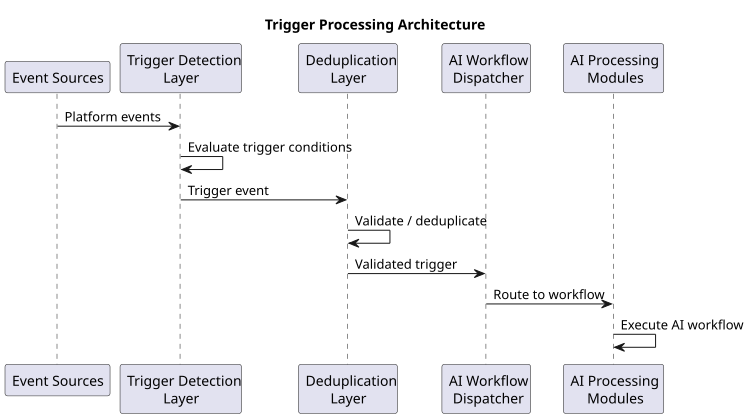
Trigger Detection Layer
The trigger detection layer continuously monitors platform events and determines whether a trigger condition has been satisfied.
Detection mechanisms may include:
- event listeners for system events
- change detection within financial data stores
- scheduled monitoring jobs
- Example workflow:
- Platform Event
- ↓
- Trigger Detection
- ↓
- Trigger Activation
- Only events matching defined trigger conditions activate AI workflows.
AI Workflow Dispatcher
Once a trigger is detected, the AI workflow dispatcher routes the trigger event to the appropriate analytical module.
Example workflow:
Trigger Event
↓
Workflow Dispatcher
↓
Selected AI Module
The dispatcher determines which AI process should be executed.
Supported AI Workflows
Triggers may activate various AI workflows within the platform.
Common workflows include:
- financial profile updates
- portfolio analysis
- recommendation generation
- document intelligence processing
- Example structure:
- AIWorkflow
- workflow_id
- workflow_type
- Each workflow performs a specific analytical task.
Trigger Priority and Scheduling
Some triggers may require higher priority than others.
Examples include:
- user-initiated recommendation requests
- financial data updates affecting risk exposure
- Example structure:
- TriggerPriority
- high_priority
- normal_priority
- scheduled_priority
- Priority rules help manage AI processing workloads.
Trigger Deduplication
In event-driven systems, repeated events may generate redundant triggers.
The trigger framework includes mechanisms to detect and eliminate duplicate triggers.
Example workflow:
Incoming Trigger Events
↓
Deduplication Layer
↓
Validated Trigger Event
Deduplication prevents unnecessary AI computation.
Trigger Logging
All trigger activations are recorded for monitoring and debugging purposes.
Example structure:
TriggerLog trigger_id trigger_type execution_timestamp
Trigger logs help track AI workflow activation.
Trigger Failure Handling
If an AI workflow fails after being triggered, the system must detect the failure and initiate recovery mechanisms.
Failure handling mechanisms may include:
- automatic workflow retries
- error logging and monitoring alerts
- fallback processing procedures
- Example workflow:
- Triggered Workflow
- ↓
- Execution Failure
- ↓
- Retry or Error Handling
- Failure handling ensures system reliability.
Integration with AI Platform Components
The trigger framework integrates with multiple AI platform modules.
Key integration points include:
- recommendation engine
- financial data processing systems
- document intelligence pipelines
- monitoring and feedback systems
- Example architecture:
- Trigger Framework
- ↓
- AI Platform Modules
- ↓
- Financial Intelligence Outputs
- This integration enables coordinated activation of AI capabilities.
Importance of the Trigger Framework
The trigger framework is essential for orchestrating AI-driven operations within the platform. By responding to user actions, financial data changes, and market events, the system ensures that financial insights and recommendations are generated at the appropriate time.
This event-driven approach enables efficient resource usage, timely financial analysis, and responsive user experiences while maintaining operational control over AI workflows.
User Triggered Intelligence
User Triggered Intelligence refers to AI-driven financial analysis workflows initiated directly by user actions within the Multiplus platform. When users interact with the platform—such as requesting investment recommendations, uploading financial documents, or reviewing their portfolio—the system activates AI modules to generate relevant insights and analyses.
User-triggered workflows enable the platform to provide interactive financial intelligence, allowing users to obtain personalized insights in response to specific actions. These triggers ensure that AI computation is performed only when needed, providing timely results while maintaining system efficiency.
This section describes the mechanisms through which user actions initiate AI-driven financial intelligence processes.
Purpose of User Triggered Intelligence
The primary objective of user-triggered intelligence is to provide responsive financial insights based on user interactions.
Key objectives include:
- generating investment recommendations on demand
- updating financial profiles when new information is provided
- analyzing portfolios when users request insights
- processing financial documents uploaded by users
User-triggered workflows allow the platform to deliver interactive financial advisory capabilities.
Common User Trigger Events
Several user actions may trigger AI workflows.
Common trigger events include:
- requesting investment recommendations
- uploading financial documents
- updating financial profile information
- requesting portfolio analysis
- Example structure:
- UserTriggerEvent
- user_id
- event_type
- event_timestamp
- Each trigger event initiates a specific analytical process.
Recommendation Request Triggers
When a user requests investment recommendations, the system activates the recommendation generation pipeline.
Example workflow:
User Recommendation Request
↓
Financial Profile Retrieval
↓
Portfolio Analysis
↓
Recommendation Engine
↓
Recommendation Output
This workflow generates personalized investment suggestions.
Financial Profile Update Triggers
Users may update their financial information through the platform interface.
Example updates include:
- income changes
- new financial goals
- updated investment preferences
- Example workflow:
- User Profile Update
- ↓
- Financial Profile Reconstruction
- ↓
- Risk Profile Recalculation
Updating the financial profile ensures that future recommendations reflect the latest user data.
Document Upload Triggers
When users upload financial documents such as bank statements or investment statements, the document intelligence system is activated.
Example workflow:
Document Upload
↓
Document Processing Pipeline
↓
Extracted Financial Data
↓
Financial Profile Update
This process allows the system to incorporate new financial information into the user’s profile.
Portfolio Insight Requests
Users may request detailed analysis of their investment portfolio.
Example workflow:
User Portfolio Analysis Request
↓
Portfolio Data Retrieval
↓
Portfolio Analysis Engine
↓
Insight Generation
The system generates insights such as diversification analysis and performance evaluation.
Goal Planning Triggers
Users may request guidance for achieving specific financial goals.
Examples include:
- retirement planning
- long-term investment strategies
- savings targets
- Example workflow:
- User Financial Goal Input
- ↓
- Goal Planning Engine
- ↓
- Investment Strategy Recommendation
- These workflows generate tailored investment strategies.
Real-Time Insight Generation
User-triggered intelligence workflows often require near real-time analysis.
Example process:
User Action
↓
Trigger Detection
↓
AI Analysis
↓
Insight Delivery
This architecture allows users to receive immediate financial insights.
Trigger Prioritization
User-triggered workflows are typically assigned high priority within the system.
High-priority triggers include:
- recommendation requests
- portfolio analysis requests
- financial document uploads
- Example structure:
- TriggerPriority
- user_request_priority
- Prioritization ensures that user-facing features remain responsive.
Trigger Validation
Before executing an AI workflow, the system validates the trigger event.
Validation checks may include:
- verifying user authentication
- confirming that required financial data is available
- validating input parameters
- Example workflow:
- User Trigger Event
- ↓
- Validation Layer
- ↓
- Approved Workflow Execution
- Validation prevents invalid or incomplete requests.
Trigger Logging and Monitoring
All user-triggered workflows are recorded for monitoring and debugging purposes.
Example structure:
UserTriggerLog trigger_id user_id workflow_type
Logs allow system operators to track user interactions and AI workflow activity.
Integration with AI Modules
User-triggered intelligence integrates with several AI platform modules.
Examples include:
- recommendation engine
- portfolio analysis engine
- document intelligence system
- financial profile construction systems
- Example architecture:
- User Action
- ↓
- Trigger Framework
- ↓
- AI Modules
- ↓
- Generated Financial Insights
- This integration enables dynamic financial intelligence across the platform.
Importance of User Triggered Intelligence
User-triggered intelligence enables the platform to function as an interactive financial advisory system. By responding directly to user actions, the system can provide personalized financial insights, portfolio analysis, and investment recommendations in real time.
This capability significantly enhances user engagement and ensures that financial intelligence services are delivered when users actively seek guidance.
Data Driven Triggers
Data Driven Triggers activate AI workflows when changes occur within the platform’s financial data infrastructure. Unlike user-triggered events, which originate from direct user actions, data-driven triggers respond to updates in financial datasets such as transactions, portfolio holdings, market data, or financial profile attributes.
These triggers allow the Multiplus AI Financial Intelligence Platform to continuously monitor financial conditions and automatically generate insights when relevant data changes occur. By reacting to data updates, the system can identify portfolio risks, update financial profiles, and generate new recommendations without requiring explicit user requests.
This section describes the architecture and operational design of data-driven AI triggers.
Purpose of Data Driven Triggers
The primary objective of data-driven triggers is to automatically initiate AI workflows when significant financial data changes are detected.
Key objectives include:
- updating financial profiles when new financial data becomes available
- monitoring portfolio changes and risk exposure
- recalculating financial health indicators
- generating updated investment recommendations
Data-driven triggers allow the system to operate proactively rather than relying solely on user interaction.
Sources of Data Driven Triggers
Data-driven triggers originate from updates in the platform’s financial data infrastructure.
Common trigger sources include:
- transaction data updates
- portfolio holding updates
- financial profile updates
- external financial data feeds
- Example structure:
- DataUpdateEvent
- data_source
- update_type
- update_timestamp
- Each update event may activate specific analytical workflows.
Transaction Data Triggers
Updates to bank transactions or financial activity may trigger financial behavior analysis.
Example workflow:
New Transaction Data
↓
Transaction Analysis Engine
↓
Financial Behavior Update
Transaction triggers allow the system to monitor income patterns, spending behavior, and savings trends.
Portfolio Data Triggers
Changes in investment portfolio holdings may activate portfolio analysis workflows.
Example triggers include:
- new investment purchases
- redemption of existing investments
- changes in portfolio allocation
- Example workflow:
- Portfolio Data Update
- ↓
- Portfolio Analysis Engine
- ↓
- Portfolio Risk Evaluation
These triggers allow the platform to monitor portfolio composition and risk exposure.
Financial Profile Update Triggers
Updates to user financial data may require recalculation of financial indicators.
Examples include:
- changes in income estimates
- changes in expense patterns
- updates to financial assets or liabilities
- Example workflow:
- Financial Data Update
- ↓
- Financial Profile Reconstruction
- ↓
- Risk Profile Update
- Updating financial profiles ensures that recommendations remain accurate.
Product Data Update Triggers
Changes in financial product metrics may trigger recalculation of product rankings.
Examples include:
- updated performance metrics
- new risk classification updates
- changes in benchmark performance
- Example workflow:
- Product Data Update
- ↓
- Fund Ranking Engine
- ↓
- Updated Product Rankings
These updates ensure that the recommendation system uses current product information.
Market Data Triggers
Updates to market conditions may influence investment strategies.
Examples include:
- changes in benchmark index performance
- significant market volatility events
- Example workflow:
- Market Data Update
- ↓
- Portfolio Impact Analysis
- ↓
- Strategy Re-evaluation
- Market triggers help maintain relevant investment strategies.
Change Detection Mechanisms
The system must detect meaningful data changes before activating AI workflows.
Change detection mechanisms may include:
- database change streams
- event-driven data pipelines
- scheduled data comparison jobs
- Example workflow:
- Financial Data Store
- ↓
- Change Detection Layer
- ↓
- Trigger Activation
- Change detection prevents unnecessary AI computation.
Trigger Thresholds
Not all data changes require AI analysis. The system may define thresholds to determine when triggers should activate.
Examples include:
- significant portfolio allocation changes
- large financial transaction values
- material changes in market indicators
- Example rule:
- IF portfolio_change > threshold
- THEN activate portfolio analysis
- Threshold rules help filter insignificant data changes.
Trigger Coordination
Multiple data changes may occur simultaneously. The system must coordinate triggers to prevent redundant analysis.
Example workflow:
Multiple Data Updates
↓
Trigger Aggregation
↓
Single AI Workflow Execution
Trigger coordination improves system efficiency.
Trigger Logging
All data-driven trigger activations are recorded for monitoring and operational analysis.
Example structure:
DataTriggerLog trigger_id data_source triggered_workflow
Trigger logs allow system operators to analyze AI workflow activity.
Integration with AI Intelligence Systems
Data-driven triggers activate multiple AI modules within the platform.
Example integration architecture:
Data Update
↓
Trigger Framework
↓
AI Processing Modules
↓
Updated Financial Insights
This architecture ensures that financial intelligence remains synchronized with the latest data.
Importance of Data Driven Triggers
Data-driven triggers enable the platform to operate as a proactive financial intelligence system. Instead of waiting for user requests, the platform can automatically analyze new financial data and generate updated insights whenever meaningful changes occur.
This capability allows the system to continuously monitor financial conditions, detect emerging risks, and maintain accurate investment recommendations based on the most recent financial information.
Market Event Triggers
Market Event Triggers initiate AI workflows in response to changes in financial markets and macroeconomic conditions. Unlike user-triggered or internal data-driven triggers, these triggers originate from external financial market events such as price movements, volatility spikes, benchmark index changes, or significant macroeconomic announcements.
The purpose of market event triggers is to ensure that the Multiplus AI Financial Intelligence Platform remains responsive to evolving market conditions. When relevant market changes occur, the system can automatically evaluate the potential impact on user portfolios, update financial product rankings, and reassess investment recommendations.
This section describes the architecture and operational mechanisms used to detect and respond to market events.
Purpose of Market Event Triggers
The primary objective of market event triggers is to initiate financial intelligence processes when significant market changes occur.
Key objectives include:
- monitoring financial market conditions
- evaluating the impact of market changes on user portfolios
- updating financial product performance metrics
- reassessing investment strategies and recommendations
Market event triggers enable the platform to adapt to dynamic market environments.
Market Data Sources
Market events originate from external financial data providers.
Typical market data sources include:
- stock market index data
- mutual fund benchmark indices
- interest rate data
- macroeconomic indicators
- Example structure:
- MarketDataEvent
- event_type
- data_source
- event_timestamp
These data feeds continuously update the platform’s financial data infrastructure.
Types of Market Events
Several types of market events may trigger AI workflows.
Common market events include:
- significant changes in benchmark index levels
- abnormal market volatility
- major economic announcements
- changes in interest rate environments
- Each event type may activate different analytical workflows.
Benchmark Index Movement Triggers
Large movements in benchmark indices may require portfolio impact analysis.
Example workflow:
Benchmark Index Change
↓
Market Event Detection
↓
Portfolio Impact Analysis
This analysis helps determine whether existing portfolios remain aligned with investment objectives.
Market Volatility Triggers
High volatility conditions may trigger risk monitoring workflows.
Example workflow:
Market Volatility Increase
↓
Risk Monitoring Engine
↓
Portfolio Risk Recalculation
Risk monitoring helps identify portfolios exposed to elevated market risk.
Product Performance Update Triggers
Changes in financial product performance metrics may require recalculation of product rankings.
Example triggers include:
- updated mutual fund performance data
- changes in volatility metrics
- changes in benchmark comparisons
- Example workflow:
- Product Performance Update
- ↓
- Fund Ranking Engine
- ↓
- Updated Product Scores
- Updated rankings ensure that recommendation systems use current data.
Economic Indicator Triggers
Macroeconomic events may influence investment strategies.
Examples include:
- central bank interest rate decisions
- inflation data releases
- economic growth indicators
- Example workflow:
- Economic Indicator Release
- ↓
- Market Analysis Engine
- ↓
- Strategy Evaluation
These triggers allow the platform to incorporate macroeconomic signals into financial analysis.
Portfolio Impact Evaluation
When market events occur, the system evaluates how these events affect user portfolios.
Example workflow:
Market Event
↓
Portfolio Exposure Analysis
↓
Risk Impact Assessment
This analysis determines whether portfolio adjustments may be necessary.
Strategy Reassessment Triggers
Certain market events may trigger reassessment of portfolio allocation strategies.
Example workflow:
Market Event Detected
↓
Asset Allocation Evaluation
↓
Recommendation Update
This process ensures that recommendations remain relevant under changing market conditions.
Market Event Thresholds
Not all market fluctuations require AI analysis. Trigger thresholds are used to identify significant events.
Examples include:
- percentage change thresholds for benchmark indices
- volatility index thresholds
- abnormal market movement detection
- Example rule:
- IF index_change_percentage > threshold
- THEN trigger market analysis
- Threshold rules prevent unnecessary system activity.
Market Event Logging
All detected market events and triggered AI workflows are recorded for monitoring and auditing.
Example structure:
MarketEventLog event_id event_type triggered_workflow
Logs allow system operators to track market-triggered AI activity.
Integration with Financial Intelligence Systems
Market event triggers activate several AI modules within the platform.
Example architecture:
Market Data Feed
↓
Market Event Detection
↓
Trigger Framework
↓
AI Analysis Modules
These modules may include portfolio analysis engines, risk monitoring systems, and recommendation systems.
Importance of Market Event Triggers
Market event triggers allow the platform to respond dynamically to external financial conditions. Financial markets are inherently volatile and continuously evolving, making it essential for financial intelligence systems to monitor market developments and adjust analytical outputs accordingly.
By detecting significant market changes and activating AI analysis workflows, the platform ensures that portfolio evaluations, risk assessments, and recommendation strategies remain aligned with current market realities. This responsiveness strengthens the platform’s ability to deliver timely and relevant financial intelligence.
Scheduled AI Tasks
Scheduled AI Tasks define periodic analytical processes executed by the Multiplus AI Financial Intelligence Platform at predefined intervals. Unlike user-triggered, data-driven, or market-driven triggers, scheduled tasks operate independently of external events and ensure that routine financial analysis, data maintenance, and model monitoring processes are performed consistently.
Scheduled execution is essential for maintaining up-to-date financial insights, recalculating analytical metrics, refreshing product rankings, and monitoring system performance. These tasks allow the platform to continuously maintain the integrity and accuracy of its financial intelligence infrastructure.
This section describes the architecture and operational processes used to implement scheduled AI tasks.
Purpose of Scheduled AI Tasks
The primary objective of scheduled AI tasks is to perform recurring analytical operations required for maintaining the platform’s financial intelligence capabilities.
Key objectives include:
- periodically updating financial data models
- recalculating financial product metrics
- monitoring portfolio risk conditions
- evaluating AI model performance
Scheduled tasks ensure that analytical systems remain current even in the absence of external trigger events.
Types of Scheduled Tasks
The platform supports multiple categories of scheduled AI tasks.
Common task categories include:
- financial data recalculation tasks
- portfolio monitoring tasks
- product ranking updates
- AI model monitoring processes
- Each category supports a specific operational function within the platform.
Scheduling Framework
The scheduling framework manages the execution of periodic tasks.
Example architecture:
Task Scheduler
↓
Scheduled Task Queue
↓
AI Processing Modules
The scheduler determines when tasks should be executed based on predefined schedules.
Financial Data Recalculation Tasks
Certain financial metrics must be recalculated at regular intervals.
Examples include:
- rolling return calculations for financial products
- volatility and risk metrics
- benchmark performance comparisons
- Example workflow:
- Scheduled Execution
- ↓
- Financial Data Processing
- ↓
- Updated Financial Metrics
- These recalculations ensure that analytical models use current financial data.
Product Ranking Update Tasks
Financial product rankings must be refreshed periodically as new performance data becomes available.
Example workflow:
Scheduled Ranking Update
↓
Product Metrics Retrieval
↓
Fund Ranking Engine
↓
Updated Product Scores
Updated rankings improve the accuracy of the recommendation system.
Portfolio Monitoring Tasks
Scheduled tasks may periodically evaluate user portfolios to identify potential risks or optimization opportunities.
Example workflow:
Scheduled Portfolio Review
↓
Portfolio Risk Evaluation
↓
Portfolio Insight Generation
These reviews ensure that portfolios remain aligned with investment strategies.
Financial Health Recalculation Tasks
The system may periodically update financial health indicators derived from user financial data.
Examples include:
- savings rate calculations
- liquidity assessments
- expense pattern analysis
- Example workflow:
- Scheduled Financial Profile Update
- ↓
- Financial Indicator Recalculation
- ↓
- Updated Financial Health Metrics
- These updates help maintain accurate financial profiles.
AI Model Monitoring Tasks
AI models used within the platform must be continuously monitored for performance and reliability.
Scheduled monitoring tasks may include:
- evaluating model prediction accuracy
- detecting model drift
- monitoring system performance metrics
- Example workflow:
- Scheduled Model Evaluation
- ↓
- Model Performance Metrics
- ↓
- Model Health Assessment
- Monitoring helps maintain model quality over time.
Data Quality Monitoring Tasks
Financial data integrity must be monitored regularly to ensure data reliability.
Examples include:
- detecting missing financial records
- identifying inconsistent financial metrics
- validating data ingestion pipelines
- Example workflow:
- Scheduled Data Quality Check
- ↓
- Data Validation Rules
- ↓
- Data Quality Report
- Data quality monitoring protects the reliability of analytical outputs.
Scheduling Intervals
Scheduled tasks may operate on different time intervals depending on the type of analysis required.
Common scheduling intervals include:
- daily tasks for financial data updates
- weekly tasks for portfolio monitoring
- monthly tasks for model performance evaluation
- Example structure:
- ScheduledTask
- task_id
- schedule_interval
- target_module
- Flexible scheduling ensures efficient system operation.
Task Execution Monitoring
The platform must monitor scheduled task execution to detect failures or delays.
Monitoring activities may include:
- tracking task execution status
- detecting failed tasks
- triggering retry mechanisms
- Example workflow:
- Scheduled Task Execution
- ↓
- Task Monitoring System
- ↓
- Execution Status Report
- Monitoring ensures that scheduled processes complete successfully.
Scheduled Task Logging
All scheduled task executions are logged for monitoring and operational analysis.
Example structure:
ScheduledTaskLog task_id execution_time execution_status
Logs help diagnose operational issues and monitor system activity.
Importance of Scheduled AI Tasks
Scheduled AI tasks play a critical role in maintaining the accuracy, reliability, and operational stability of the platform. Many analytical processes require periodic recalculation and monitoring even when no external trigger events occur.
By executing routine financial analysis, product ranking updates, portfolio monitoring, and AI model evaluations on a scheduled basis, the platform ensures that its financial intelligence systems remain continuously updated and operational.
Event Driven Architecture
Event Driven Architecture defines the system design pattern used by the Multiplus AI Financial Intelligence Platform to manage triggers, coordinate workflows, and process asynchronous events across distributed components. In an event-driven system, platform components communicate through events that signal when specific actions or changes have occurred.
This architectural approach enables the platform to react dynamically to user actions, financial data updates, market events, and scheduled processes. Instead of relying on tightly coupled system interactions, services operate independently and respond to relevant events published within the system.
This section describes the design and operational mechanisms of the event-driven architecture used within the platform.
Purpose of Event Driven Architecture
The primary objective of event-driven architecture is to enable scalable and responsive coordination between platform services.
Key objectives include:
- enabling asynchronous communication between system components
- allowing independent services to react to system events
- improving scalability and reliability of AI workflows
- supporting real-time financial intelligence processing
Event-driven systems allow the platform to process complex workflows efficiently.
Core Architectural Principles
The event-driven architecture follows several fundamental principles.
Key principles include:
- loose coupling between services
- asynchronous event processing
- event-based communication between modules
- scalable event distribution
These principles allow the system to evolve without tightly coupling individual components.
Event Producers
Event producers are system components that generate events when specific actions occur.
Examples of event producers include:
- user interface systems
- financial data ingestion pipelines
- document processing services
- market data update systems
- Example structure:
- EventProducer
- component_id
- generated_event_type
- Producers emit events into the platform’s event system.
Event Consumers
Event consumers are services that subscribe to specific event types and perform actions when those events occur.
Examples of event consumers include:
- recommendation engine
- portfolio analysis engine
- financial profile processing systems
- monitoring systems
- Example structure:
- EventConsumer
- consumer_id
- subscribed_event_type
- Consumers process events relevant to their functionality.
Event Bus Architecture
Events are transmitted through a centralized messaging infrastructure commonly referred to as an event bus.
Example architecture:
Event Producers
↓
Event Bus
↓
Event Consumers
The event bus acts as the communication backbone connecting system services.
Event Types
The platform supports multiple categories of events.
Common event types include:
- user interaction events
- financial data update events
- market data events
- system monitoring events
- Example structure:
- SystemEvent
- event_id
- event_type
- event_source
- Each event type may activate different workflows.
Event Processing Workflow
The event processing workflow defines how events are generated, transmitted, and processed.
Example workflow:
Event Generation
↓
Event Publication
↓
Event Bus
↓
Event Consumption
↓
Workflow Execution
This workflow ensures efficient distribution of system events.
Event Routing
The event bus routes events to the appropriate consumers based on event type and subscription rules.
Example routing process:
Incoming Event
↓
Event Routing Rules
↓
Target Consumers
Routing ensures that only relevant services process specific events.
Event Persistence
Certain events must be stored for auditing, replay, or monitoring purposes.
Example structure:
EventRecord event_id event_timestamp event_payload
Event persistence allows historical analysis of system behavior.
Event Retry and Failure Handling
Event-driven systems must handle failures in event processing.
Failure handling mechanisms may include:
- retrying failed event processing tasks
- moving failed events to recovery queues
- generating system alerts for unresolved failures
- Example workflow:
- Event Processing
- ↓
- Failure Detection
- ↓
- Retry or Error Queue
- These mechanisms improve system reliability.
Event Ordering and Idempotency
Event-driven systems must handle duplicate events and maintain consistent processing order where necessary.
Key mechanisms include:
- event deduplication
- idempotent event processing logic
- ordered processing for critical event streams
- Example rule:
- IF event_id already_processed
- THEN ignore_event
- These mechanisms prevent unintended duplicate processing.
Integration with AI Trigger Framework
The event-driven architecture forms the underlying infrastructure supporting the trigger framework described earlier in this document.
Example architecture:
Event Producers
↓
Event Bus
↓
Trigger Detection Layer
↓
AI Workflow Dispatcher
This integration allows triggers to activate AI workflows efficiently.
Importance of Event Driven Architecture
Event-driven architecture enables the platform to operate as a responsive and scalable financial intelligence system. By allowing services to communicate through asynchronous events, the system can efficiently coordinate complex workflows such as financial data processing, portfolio analysis, and recommendation generation.
This architectural approach improves system scalability, reduces service dependencies, and ensures that the platform can respond rapidly to user actions, financial data changes, and market events.
MONITORING
System Monitoring Architecture
The System Monitoring Architecture defines the mechanisms used to observe, measure, and evaluate the operational health and performance of the Multiplus AI Financial Intelligence Platform. Monitoring systems track platform behavior across infrastructure, data pipelines, AI services, and financial intelligence workflows to ensure reliability, stability, and regulatory compliance.
Continuous monitoring is essential for identifying system anomalies, performance degradation, data quality issues, and operational failures. Monitoring also enables proactive maintenance, allowing system operators to detect and resolve issues before they affect user-facing services.
This section describes the architecture used to monitor system performance and operational behavior across the platform.
Purpose of System Monitoring
The primary objective of system monitoring is to maintain operational stability and detect potential issues within the platform.
Key objectives include:
- monitoring system performance and availability
- detecting failures in AI workflows and data pipelines
- tracking infrastructure health and resource utilization
- identifying abnormal system behavior
- Monitoring ensures that the platform operates reliably under varying workloads.
Monitoring Scope
The monitoring system covers multiple layers of the platform architecture.
Key monitoring areas include:
- infrastructure resources
- AI processing services
- data pipelines and ingestion systems
- recommendation engine performance
- Monitoring across these layers provides a complete view of system health.
Monitoring Architecture Overview
The monitoring system follows a centralized architecture where platform components emit operational metrics and logs to monitoring services.
Example architecture:
Platform Services
↓
Metrics and Logs
↓
Monitoring Infrastructure
↓
Alerting and Visualization
This architecture allows system operators to observe system activity in real time.
The following sequence diagram illustrates the monitoring architecture.
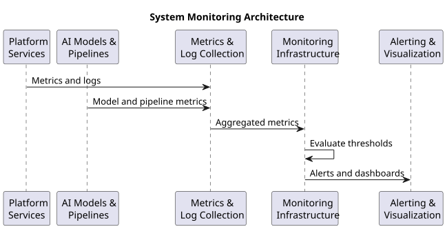
Metrics Collection Layer
The metrics collection layer gathers performance and operational metrics from platform services.
Examples of collected metrics include:
- CPU and memory utilization
- API response times
- AI workflow execution duration
- data pipeline throughput
- Example structure:
- SystemMetric
- metric_name
- metric_value
- timestamp
- Metrics provide quantitative measurements of system performance.
Log Aggregation System
Logs generated by system components are collected and stored within a centralized log aggregation system.
Common log sources include:
- application services
- AI model processing modules
- data ingestion pipelines
- trigger framework components
- Example structure:
- SystemLog
- log_source
- log_message
- timestamp
- Log aggregation allows system operators to investigate operational issues.
Service Health Monitoring
Each platform service must expose health indicators that describe its operational status.
Examples include:
- service availability status
- API response success rates
- processing queue backlog levels
- Example workflow:
- Service Health Check
- ↓
- Health Status Evaluation
- ↓
- Operational Status Report
- Health monitoring ensures that critical services remain operational.
AI Workflow Monitoring
AI-driven workflows must be monitored to ensure correct execution.
Monitoring metrics may include:
- workflow execution time
- successful completion rate
- failure frequency
- Example structure:
- AIWorkflowMetric
- workflow_id
- execution_duration
- execution_status
- Monitoring these metrics helps maintain reliable AI operations.
Data Pipeline Monitoring
Financial data ingestion pipelines must be monitored to detect processing delays or failures.
Monitoring activities include:
- tracking data ingestion volumes
- detecting missing data feeds
- monitoring pipeline processing latency
- Example workflow:
- Data Source
- ↓
- Data Pipeline Monitoring
- ↓
- Data Processing Status
- Pipeline monitoring ensures timely availability of financial data.
Resource Utilization Monitoring
Infrastructure resources must be monitored to ensure efficient system operation.
Common resource metrics include:
- CPU utilization
- memory usage
- storage capacity
- Example structure:
- ResourceMetric
- resource_type
- utilization_percentage
- Resource monitoring helps prevent infrastructure bottlenecks.
Alerting System
The monitoring architecture includes an alerting system that notifies operators when abnormal system conditions are detected.
Alert conditions may include:
- service failures
- excessive processing delays
- abnormal resource utilization
- Example workflow:
- Monitoring Metrics
- ↓
- Alert Detection Rules
- ↓
- Operational Alert
- Alerts enable rapid response to system issues.
Monitoring Dashboards
Operational dashboards provide real-time visualization of system metrics.
Dashboards may display:
service performance indicators
AI workflow statistics
infrastructure resource utilization
Example structure:
MonitoringDashboard system_metrics performance_charts
Dashboards allow operators to observe system behavior.
Monitoring Data Storage
Collected monitoring data must be stored for analysis and troubleshooting.
Example architecture:
Metrics Collection
↓
Monitoring Database
↓
Analytics and Visualization
Historical monitoring data allows performance trend analysis.
Importance of System Monitoring
System monitoring is essential for maintaining the operational integrity of the Multiplus AI Financial Intelligence Platform. The platform relies on multiple distributed services, data pipelines, and AI processing modules that must operate reliably to deliver financial intelligence capabilities.
By continuously monitoring infrastructure resources, system services, data pipelines, and AI workflows, the platform can detect operational issues early and maintain consistent system performance. This monitoring architecture ensures that financial intelligence services remain reliable, scalable, and responsive to user needs.
Model Monitoring
Model Monitoring defines the mechanisms used to observe, evaluate, and maintain the performance of AI models deployed within the Multiplus AI Financial Intelligence Platform. AI models play a critical role in financial analysis, recommendation generation, document intelligence, and decision support systems. Continuous monitoring ensures that these models remain reliable, accurate, and aligned with the financial objectives of the platform.
Over time, financial data distributions, market conditions, and user behaviors may evolve. These changes can affect model performance and lead to model drift or degraded predictive accuracy. Model monitoring systems are designed to detect such issues and initiate corrective actions when necessary.
This section describes the architecture and operational processes used to monitor AI models.
Purpose of Model Monitoring
The primary objective of model monitoring is to maintain the reliability and effectiveness of AI models used in financial intelligence systems.
Key objectives include:
- tracking model prediction performance
- detecting model drift or performance degradation
- identifying abnormal model outputs
- supporting continuous model improvement
Monitoring ensures that AI-driven financial insights remain accurate and trustworthy.
Scope of Model Monitoring
Model monitoring applies to all AI models used within the platform.
Examples include:
- recommendation ranking models
- financial risk scoring models
- document entity extraction models
- language models used for explanation generation
- Each model requires monitoring appropriate to its operational role.
Model Monitoring Architecture
The model monitoring architecture collects operational metrics and evaluates model outputs over time.
Example architecture:
AI Models
↓
Model Output Monitoring
↓
Performance Evaluation
↓
Monitoring Dashboard
This architecture enables continuous observation of model behavior.
Model Performance Metrics
Model performance is evaluated using quantitative metrics appropriate for each model type.
Examples include:
- prediction accuracy
- ranking consistency
- recommendation acceptance rates
- document extraction accuracy
- Example structure:
- ModelPerformanceMetric
- model_id
- metric_name
- metric_value
- These metrics help determine whether models continue to perform as expected.
Model Drift Detection
Model drift occurs when the statistical properties of input data or model outputs change over time.
Types of drift include:
- data distribution drift
- concept drift
- feature drift
- Example workflow:
- New Input Data
- ↓
- Drift Detection Analysis
- ↓
- Drift Alert
- Drift detection systems compare new data patterns against historical baselines.
Input Data Monitoring
Changes in input data distributions can significantly affect model performance.
Monitoring activities may include:
- tracking feature value distributions
- detecting missing or abnormal input values
- identifying unexpected data patterns
- Example structure:
- InputFeatureMetric
- feature_name
- distribution_statistics
- Input monitoring helps identify potential causes of model drift.
Output Monitoring
Model outputs must also be monitored to ensure reasonable and consistent results.
Monitoring may include:
- detecting abnormal recommendation scores
- identifying inconsistent portfolio allocation outputs
- evaluating language model responses
- Example structure:
- ModelOutputMetric
- output_type
- output_value
- Output monitoring helps detect unexpected model behavior.
Prediction Distribution Analysis
Monitoring systems may analyze the statistical distribution of model predictions.
Example workflow:
Model Predictions
↓
Distribution Analysis
↓
Anomaly Detection
Sudden changes in prediction distributions may indicate underlying issues.
Performance Benchmark Comparison
Model outputs may be compared against known benchmarks or historical performance baselines.
Example workflow:
Current Model Metrics
↓
Benchmark Comparison
↓
Performance Evaluation
Benchmark comparisons help detect performance degradation.
Model Retraining Triggers
If monitoring systems detect significant performance degradation, retraining processes may be triggered.
Example workflow:
Model Performance Decline
↓
Retraining Trigger
↓
Model Training Pipeline
Retraining ensures that models remain aligned with current data conditions.
Model Version Tracking
The system must track versions of deployed models to maintain traceability.
Example structure:
ModelVersionRecord model_id version_number deployment_timestamp
Version tracking supports auditing and rollback processes.
Model Monitoring Dashboard
Operational dashboards provide visualization of model performance metrics.
Dashboards may display:
model accuracy trends
drift detection alerts
prediction distribution charts
Example structure:
ModelMonitoringDashboard model_metrics drift_alerts
Dashboards enable continuous observation of model health.
Importance of Model Monitoring
AI models are central to the platform’s ability to generate financial insights and recommendations. However, financial environments and user behavior patterns evolve over time, which can affect model reliability.
By continuously monitoring model performance, input data patterns, and prediction outputs, the platform ensures that AI systems remain accurate and trustworthy. Model monitoring systems also enable early detection of drift or anomalies, allowing corrective actions such as retraining or recalibration to maintain system performance.
This monitoring framework ensures that the AI-driven financial intelligence capabilities of the platform remain reliable and aligned with real-world financial conditions.
Recommendation Performance Tracking
Recommendation Performance Tracking defines the mechanisms used to evaluate the effectiveness of investment recommendations generated by the Multiplus AI Financial Intelligence Platform. Since investment recommendations influence financial decisions, it is essential to continuously assess whether the recommended strategies and financial products perform as expected.
Performance tracking allows the platform to measure the outcomes of recommendations, analyze their impact on user portfolios, and identify opportunities to improve recommendation algorithms. Monitoring recommendation outcomes also helps validate the quality of product rankings, asset allocation strategies, and portfolio optimization models.
This section describes the architecture and analytical methods used to track recommendation performance.
Purpose of Recommendation Performance Tracking
The primary objective of recommendation performance tracking is to evaluate how well the platform’s investment recommendations perform over time.
Key objectives include:
- measuring the effectiveness of recommended investment products
- evaluating portfolio performance resulting from recommendations
- identifying patterns in successful and unsuccessful recommendations
- improving recommendation algorithms using performance insights
Tracking recommendation outcomes allows the platform to refine its financial intelligence models.
Scope of Performance Tracking
Performance tracking applies to all recommendations generated by the platform.
Examples include:
- mutual fund investment recommendations
- portfolio allocation strategies
- diversification improvement recommendations
- investment strategy suggestions
- Each recommendation type may require different evaluation metrics.
Recommendation Tracking Architecture
The recommendation tracking system records recommendations and monitors their outcomes over time.
Example architecture:
Recommendation Engine
↓
Recommendation Tracking System
↓
Performance Analysis Engine
This architecture enables continuous evaluation of recommendation results.
Recommendation Records
Every generated recommendation must be stored with detailed contextual information.
Example structure:
RecommendationRecord recommendation_id user_id recommended_products allocation_structure timestamp
These records serve as the foundation for performance analysis.
Portfolio Outcome Monitoring
The platform monitors how user portfolios evolve after recommendations are implemented.
Key portfolio metrics include:
- portfolio return performance
- portfolio volatility
- diversification improvements
- Example structure:
- PortfolioOutcomeMetric
- portfolio_return
- portfolio_volatility
- diversification_score
- These metrics allow the system to measure portfolio-level outcomes.
Product-Level Performance Evaluation
The performance of recommended financial products must also be monitored.
Examples include:
- returns generated by recommended funds
- risk-adjusted performance metrics
- benchmark comparisons
- Example structure:
- ProductPerformanceMetric
- product_id
- return_rate
- benchmark_comparison
- Product-level analysis helps evaluate fund selection strategies.
Benchmark Comparison
Recommendation performance must be evaluated relative to market benchmarks.
Example workflow:
Recommended Portfolio Performance
↓
Benchmark Performance
↓
Relative Performance Analysis
Comparing outcomes to benchmarks helps determine the value added by recommendations.
Time Horizon Evaluation
Investment performance must be evaluated across different time horizons.
Common evaluation periods include:
- short-term performance
- medium-term performance
- long-term performance
- Example structure:
- PerformanceEvaluationPeriod
- short_term
- medium_term
- long_term
- Time-based evaluation helps identify long-term strategy effectiveness.
User Adoption Metrics
Recommendation performance also depends on whether users adopt recommended strategies.
Examples of adoption metrics include:
- percentage of accepted recommendations
- implemented allocation changes
- ignored recommendations
- Example structure:
- RecommendationAdoptionMetric
- recommendation_id
- adoption_status
- Adoption metrics help assess user trust and recommendation relevance.
Recommendation Quality Metrics
The platform may compute aggregated metrics that evaluate overall recommendation quality.
Examples include:
- average recommendation success rate
- portfolio improvement score
- diversification improvement metrics
- Example structure:
- RecommendationQualityMetric
- metric_name
- metric_value
- Quality metrics provide a high-level view of recommendation effectiveness.
Performance Analysis Workflow
The recommendation performance analysis process follows a structured workflow.
Example workflow:
Recommendation Records + Portfolio Data +
Market Benchmark Data
↓
Performance Analysis Engine
↓
Recommendation Performance Report
This workflow enables systematic evaluation of recommendation outcomes.
Feedback Integration
Performance insights may be fed back into the recommendation system to improve future outputs.
Example workflow:
Recommendation Performance Data
↓
Model Evaluation
↓
Algorithm Improvement
Feedback integration enables continuous improvement of the recommendation engine.
Importance of Recommendation Performance Tracking
Recommendation performance tracking is essential for maintaining the credibility and effectiveness of the platform’s financial advisory capabilities. By monitoring the real-world outcomes of investment recommendations, the system can identify which strategies perform well and which require improvement.
This monitoring framework supports ongoing refinement of recommendation algorithms, improves financial product selection, and ensures that the platform continues to deliver valuable financial insights to users.
Data Pipeline Monitoring
Data Pipeline Monitoring defines the systems and processes used to observe, validate, and maintain the operational health of financial data pipelines within the Multiplus AI Financial Intelligence Platform. Financial intelligence systems depend heavily on accurate and timely data from multiple sources, including financial institutions, market data providers, and internal platform services.
Data pipelines ingest, process, transform, and store large volumes of financial data. Any failure or delay within these pipelines can affect downstream processes such as financial profile construction, portfolio analysis, and recommendation generation. Monitoring these pipelines ensures that financial data remains reliable, complete, and available to analytical systems.
This section describes the architecture and operational practices used to monitor financial data pipelines.
Purpose of Data Pipeline Monitoring
The primary objective of data pipeline monitoring is to ensure that financial data flows through the platform reliably and without disruption.
Key objectives include:
- detecting pipeline failures or delays
- ensuring completeness and accuracy of ingested data
- identifying anomalies in data processing workflows
- maintaining timely availability of financial data for analysis
Effective monitoring ensures that downstream AI systems receive reliable input data.
Scope of Pipeline Monitoring
Pipeline monitoring covers all data ingestion and processing workflows within the platform.
Examples include:
- financial data ingestion pipelines
- transaction data processing pipelines
- market data update pipelines
- document-derived data pipelines
- Each pipeline must be monitored for operational integrity.
Data Pipeline Architecture Overview
Data pipelines consist of multiple stages including ingestion, transformation, and storage.
Example architecture:
Data Sources
↓
Data Ingestion Layer
↓
Data Processing Layer
↓
Data Storage Systems
Monitoring systems observe each stage of the pipeline.
Ingestion Monitoring
The ingestion stage must be monitored to ensure that incoming data is received from external sources as expected.
Monitoring activities include:
- verifying successful data retrieval from external APIs
- tracking ingestion timestamps
- detecting missing or delayed data feeds
- Example structure:
- IngestionMetric
- data_source
- ingestion_timestamp
- ingestion_status
- These metrics help detect disruptions in data acquisition.
Processing Monitoring
Data transformation and processing stages must be monitored to ensure correct data handling.
Monitoring may include:
- tracking processing durations
- detecting processing errors
- validating transformation outputs
- Example structure:
- ProcessingMetric
- pipeline_stage
- processing_duration
- processing_status
- Processing metrics help detect performance bottlenecks.
Data Volume Monitoring
Monitoring data volumes helps detect anomalies such as missing or excessive data.
Examples include:
- tracking number of transactions processed
- monitoring number of portfolio records updated
- validating expected data volume ranges
- Example structure:
- DataVolumeMetric
- data_type
- record_count
- Sudden changes in data volume may indicate ingestion or processing issues.
Data Freshness Monitoring
Financial data must remain current to ensure accurate analysis.
Monitoring activities include:
- measuring time since last data update
- detecting stale datasets
- validating update frequency against expected schedules
- Example structure:
- DataFreshnessMetric
- dataset_id
- last_update_timestamp
- Freshness monitoring ensures that AI systems operate on up-to-date data.
Data Quality Validation
Monitoring systems may also perform automated data quality checks.
Examples include:
- detecting missing values
- validating numeric ranges
- verifying schema consistency
- Example workflow:
- Processed Data
- ↓
- Data Quality Validation
- ↓
- Validation Report
- Data quality monitoring protects analytical accuracy.
Pipeline Latency Monitoring
Monitoring latency helps ensure that data pipelines process information within acceptable timeframes.
Examples include:
- time taken for data ingestion
- time required for transformation processes
- delays between ingestion and storage
- Example structure:
- PipelineLatencyMetric
- pipeline_id
- latency_duration
- Latency monitoring helps detect performance issues.
Failure Detection and Recovery
Monitoring systems must detect pipeline failures and initiate recovery processes.
Example workflow:
Pipeline Execution
↓
Failure Detection
↓
Retry or Recovery Process
Automated recovery mechanisms improve system resilience.
Pipeline Monitoring Dashboard
Operational dashboards provide real-time visibility into pipeline health and performance.
Dashboards may display:
ingestion success rates
processing durations
data freshness indicators
Example structure:
PipelineMonitoringDashboard pipeline_metrics data_quality_indicators
Dashboards allow system operators to quickly identify issues.
Pipeline Monitoring Alerts
Alerting systems notify operators when abnormal pipeline behavior is detected.
Alert conditions may include:
- missing data feeds
- excessive processing latency
- failed transformation jobs
- Example workflow:
- Pipeline Monitoring Metrics
- ↓
- Alert Detection
- ↓
- Operational Notification
- Alerts allow rapid intervention when issues occur.
Importance of Data Pipeline Monitoring
Reliable financial data pipelines are essential for the operation of the Multiplus AI Financial Intelligence Platform. Financial analysis, recommendation generation, and risk evaluation all depend on accurate and timely data inputs.
By continuously monitoring ingestion processes, processing stages, data quality, and pipeline performance, the platform ensures that financial data flows remain stable and dependable. This monitoring framework protects the integrity of the financial intelligence system and enables timely detection and resolution of operational issues.
Feedback Collection
Feedback Collection defines the mechanisms used to gather user responses, behavioral signals, and system-generated insights related to the performance of financial recommendations and analytical outputs. Feedback is an essential component of the continuous improvement process for the Multiplus AI Financial Intelligence Platform.
By collecting structured feedback from users and monitoring how users interact with recommendations, the platform can evaluate the relevance, clarity, and effectiveness of its financial intelligence outputs. Feedback signals are then used to refine recommendation algorithms, improve financial models, and enhance overall system performance.
This section describes the architecture and processes used to collect and manage feedback across the platform.
Purpose of Feedback Collection
The primary objective of feedback collection is to capture signals that indicate how well the system’s outputs align with user expectations and financial outcomes.
Key objectives include:
- evaluating the usefulness of financial recommendations
- identifying areas where recommendations require improvement
- understanding user engagement with platform features
- supporting continuous model improvement
- Feedback allows the system to evolve based on real-world usage patterns.
Types of Feedback
The platform collects multiple categories of feedback signals.
Common feedback types include:
- explicit user feedback
- behavioral interaction feedback
- portfolio outcome feedback
- system performance feedback
Each feedback category provides insights into different aspects of system effectiveness.
Explicit User Feedback
Explicit feedback refers to information directly provided by users regarding the usefulness or relevance of recommendations.
Examples include:
- user ratings of recommendations
- user comments on recommendation explanations
- feedback on portfolio insights
- Example structure:
- UserFeedback
- user_id
- recommendation_id
- feedback_rating
- feedback_comment
- Explicit feedback provides qualitative insight into user experience.
Behavioral Feedback Signals
User behavior provides valuable implicit feedback about the effectiveness of recommendations.
Examples include:
- acceptance of recommended investments
- rejection of recommendations
- modifications to suggested allocations
- Example structure:
- BehavioralFeedback
- recommendation_id
- user_action
- timestamp
Behavioral signals often provide stronger indicators of recommendation relevance.
Recommendation Adoption Tracking
The system monitors whether users implement recommended financial strategies.
Examples include:
- investment in recommended funds
- adjustments to portfolio allocations
- ignoring or dismissing recommendations
- Example workflow:
- Recommendation Delivered
- ↓
- User Portfolio Activity
- ↓
- Adoption Detection
- Adoption tracking helps evaluate recommendation effectiveness.
Portfolio Outcome Feedback
Long-term portfolio performance provides additional feedback about recommendation quality.
Key indicators include:
- portfolio return performance
- diversification improvements
- volatility reduction
- Example structure:
- PortfolioOutcomeFeedback
- portfolio_id
- performance_metric
- Outcome feedback helps assess long-term impact.
Explanation Feedback
Users may also provide feedback on the clarity and usefulness of recommendation explanations.
Examples include:
- whether explanations were understandable
- whether reasoning behind recommendations was clear
- Example structure:
- ExplanationFeedback
- explanation_id
- clarity_rating
- Explanation feedback improves transparency mechanisms.
Feedback Aggregation System
Feedback signals from multiple sources must be aggregated into a unified dataset.
Example workflow:
User Feedback + Behavioral Signals +
Portfolio Outcomes
↓
Feedback Aggregation System
Aggregation enables comprehensive analysis of feedback data.
Feedback Storage
Collected feedback must be stored within the platform’s data infrastructure.
Example structure:
FeedbackRecord feedback_type related_entity timestamp
Stored feedback records can be used for long-term analysis.
Feedback Analysis
The platform may analyze feedback data to identify trends and areas for improvement.
Examples include:
- identifying frequently rejected recommendations
- detecting patterns in user feedback ratings
- analyzing adoption rates across investor categories
- Example workflow:
- Feedback Dataset
- ↓
- Feedback Analysis Engine
- ↓
- Improvement Insights
- These insights inform improvements to recommendation algorithms.
Integration with Model Improvement
Feedback insights are integrated into the continuous improvement pipeline for AI models.
Example workflow:
Feedback Insights
↓
Model Evaluation
↓
Algorithm Refinement
This integration enables adaptive improvement of financial intelligence systems.
Privacy Considerations
Feedback collection systems must respect user privacy and data protection regulations.
Key practices include:
- anonymizing behavioral feedback data
- limiting access to sensitive user feedback
- securing feedback storage systems
- Privacy safeguards protect user information while enabling system improvement.
Importance of Feedback Collection
Feedback collection plays a crucial role in improving the effectiveness of AI-driven financial intelligence systems. By capturing signals from user interactions, portfolio outcomes, and explicit feedback, the platform gains valuable insights into how its recommendations perform in real-world financial contexts.
This feedback loop enables the system to refine its recommendation strategies, improve model performance, and deliver increasingly relevant financial insights to users.
Continuous Learning
Continuous Learning defines the processes through which the Multiplus AI Financial Intelligence Platform improves its analytical models, recommendation algorithms, and financial intelligence capabilities over time. Financial environments are dynamic, with evolving market conditions, changing user behavior patterns, and new financial products entering the market. To remain effective, the platform must continuously adapt its models and analytical systems.
Continuous learning enables the platform to incorporate new data, monitoring insights, and feedback signals into the improvement cycle of its AI models and analytical frameworks. Rather than remaining static, the system evolves through structured learning processes that refine prediction accuracy, recommendation quality, and analytical reliability.
This section describes the architecture and processes used to support continuous learning within the platform.
Purpose of Continuous Learning
The primary objective of continuous learning is to improve system performance by incorporating new insights derived from operational data and feedback signals.
Key objectives include:
- improving accuracy of financial analysis models
- refining recommendation algorithms based on performance outcomes
- adapting models to evolving market conditions
- enhancing personalization of financial insights
Continuous learning ensures that the platform remains responsive to real-world financial dynamics.
Sources of Learning Signals
Continuous learning relies on multiple data sources that provide signals about system performance and user behavior.
Common learning sources include:
- recommendation performance tracking
- user feedback signals
- financial data updates
- model monitoring metrics
- Example structure:
- LearningSignal
- signal_type
- signal_source
- timestamp
These signals provide insights into areas where system improvements may be required.
Learning Data Pipeline
Collected learning signals are processed through a dedicated learning pipeline.
Example workflow:
Operational Data + Feedback Signals +
Performance Metrics
↓
Learning Data Pipeline
↓
Model Improvement Process
The learning pipeline aggregates and prepares data for model updates.
Model Evaluation for Learning
Before updating models, the system evaluates their performance using monitoring metrics.
Examples of evaluation metrics include:
- recommendation success rates
- prediction accuracy
- user adoption rates
- Example workflow:
- Model Monitoring Metrics
- ↓
- Model Evaluation Engine
- ↓
- Performance Assessment
Evaluation ensures that model updates are based on meaningful performance insights.
Learning Triggers
Model improvement processes may be triggered when monitoring systems detect performance degradation or significant changes in data patterns.
Examples of learning triggers include:
- detected model drift
- declining recommendation adoption rates
- changes in financial product performance
- Example workflow:
- Performance Decline Detected
- ↓
- Learning Trigger Activation
- ↓
- Model Improvement Pipeline
- Triggers initiate learning workflows.
Model Retraining Process
When a learning trigger occurs, models may be retrained using updated datasets.
Example workflow:
Updated Training Dataset
↓
Model Training Pipeline
↓
New Model Version
Retraining helps align models with current financial conditions.
Model Validation
Before deployment, updated models must undergo validation to ensure that performance improvements are genuine.
Validation steps may include:
- evaluating model performance on validation datasets
- comparing new models with previous versions
- verifying compliance with system constraints
- Example workflow:
- New Model
- ↓
- Validation Testing
- ↓
- Approved Model
- Validation protects against unintended performance regressions.
Controlled Model Deployment
Approved models are deployed through a controlled deployment process.
Example workflow:
Validated Model
↓
Deployment Approval
↓
Production Deployment
Controlled deployment ensures system stability.
Continuous Learning Feedback Loop
Continuous learning operates through a feedback loop that connects system monitoring with model improvement.
Example workflow:
System Monitoring
↓
Performance Insights
↓
Model Improvement
↓
Updated AI Models
This feedback loop allows the system to evolve continuously.
Experimentation Framework
The platform may support controlled experimentation to evaluate new models and strategies.
Examples include:
- A/B testing of recommendation algorithms
- comparing alternative ranking strategies
- testing new portfolio allocation models
- Example workflow:
- Experimental Model
- ↓
- Controlled User Segment
- ↓
- Performance Evaluation
- Experimentation helps identify improvements before full deployment.
Learning Data Governance
Continuous learning systems must follow strict governance practices to ensure data integrity and regulatory compliance.
Key practices include:
- validating training datasets
- anonymizing sensitive user data
- maintaining traceability of model updates
- Example structure:
- TrainingDatasetRecord
- dataset_id
- data_source
- validation_status
- Data governance ensures responsible model training.
Importance of Continuous Learning
Continuous learning enables the Multiplus AI Financial Intelligence Platform to adapt to the evolving financial environment. Financial markets, user behaviors, and product landscapes change over time, and static analytical systems cannot maintain long-term effectiveness without adaptation.
By continuously incorporating new operational insights, feedback signals, and financial data into its improvement cycle, the platform ensures that its financial intelligence models remain accurate, relevant, and capable of delivering high-quality financial recommendations.
FINANCIAL DATA PROCESSING
Financial Data Models
Financial data models define the structured representation of financial information used throughout the Multiplus AI Financial Intelligence Platform. These models establish standardized schemas for storing, processing, and analyzing financial data across the platform’s data infrastructure and AI intelligence systems.
Because the platform integrates financial data from multiple external providers, financial documents, and internal analytical pipelines, it is essential to maintain consistent data structures that enable interoperability between system components.
Financial data models provide the foundation for several key analytical processes, including:
- financial profile construction
- portfolio analysis
- transaction classification
- financial behavior modeling
- recommendation generation
- This section describes the core financial data models used by the platform.
Purpose of Financial Data Models
The primary purpose of financial data models is to establish consistent data structures that represent financial entities and their relationships.
Key objectives include:
- standardizing representation of financial entities across datasets
- enabling efficient storage and retrieval of financial data
- supporting analytical queries and machine learning pipelines
- maintaining data integrity and traceability
- ensuring compatibility across system modules
Without standardized financial data models, integrating data from heterogeneous sources would be difficult and prone to errors.
Financial Entity Types
The platform’s financial data models represent several categories of financial entities.
Key entity types include:
- users
- financial accounts
- transactions
- financial assets
- investment portfolios
- financial products
- financial institutions
Each entity type represents a distinct aspect of the financial ecosystem that the platform analyzes.
The relationships between these entities can be illustrated as follows:
- User
- ↓
- Financial Accounts
- ↓
- Transactions
- ↓
- Financial Behavior Signals
- User
- ↓
- Investment Portfolio
- ↓
- Financial Assets
- ↓
- Financial Products
These relationships allow the system to connect financial activity with investment portfolios and financial product datasets.
User Financial Entity Model
The user financial entity model represents the core user profile within the platform.
This model stores identifiers and attributes used to associate financial datasets with individual users.
Typical attributes include:
- user identifier
- demographic attributes
- financial preferences
- risk tolerance indicators
- financial goals
- Example structure:
- User
- user_id
- name
- date_of_birth
- financial_goals
- risk_profile
- account_links
This model serves as the central reference point for all user-related financial datasets.
Financial Account Model
The financial account model represents financial accounts linked to a user.
These accounts may include bank accounts, investment accounts, or other financial instruments.
Typical attributes include:
- account identifier
- account type
- associated financial institution
- account balance
- account currency
- Example structure:
- FinancialAccount
- account_id
- user_id
- institution_id
- account_type
- account_balance
- last_updated
Financial accounts act as containers for financial transactions and asset holdings.
Transaction Data Model
The transaction data model represents financial transactions associated with user accounts.
Transaction datasets provide the foundation for financial behavior analysis.
Typical attributes include:
- transaction identifier
- account identifier
- transaction timestamp
- transaction amount
- transaction description
- transaction category
- Example structure:
- Transaction
- transaction_id
- account_id
- transaction_timestamp
- amount
- description
- category
Transaction data is used to derive financial behavior indicators such as income estimation, expense categorization, and savings patterns.
Financial Asset Model
The financial asset model represents investment assets held within user portfolios.
These assets may include mutual funds, equities, bonds, or other investment instruments.
Typical attributes include:
- asset identifier
- financial product identifier
- quantity or units held
- purchase date
- current valuation
- Example structure:
- FinancialAsset
- asset_id
- portfolio_id
- product_id
- quantity
- purchase_price
- current_value
This model allows the platform to track individual investments within user portfolios.
Investment Portfolio Model
The investment portfolio model represents the aggregation of financial assets held by a user.
Typical attributes include:
- portfolio identifier
- user identifier
- total portfolio value
- asset allocation distribution
- portfolio performance metrics
- Example structure:
- Portfolio
- portfolio_id
- user_id
- total_value
- asset_allocation
- last_updated
Portfolio models allow the platform to perform portfolio intelligence analysis and detect diversification patterns.
Financial Product Model
The financial product model describes financial instruments available within the platform’s investment universe.
Typical attributes include:
- product identifier
- product name
- product category
- benchmark index
- expense ratio
- performance metrics
- Example structure:
- FinancialProduct
- product_id
- product_name
- category
- benchmark
- expense_ratio
- risk_category
These datasets are used by the recommendation engine to evaluate financial products.
Financial Institution Model
The financial institution model represents banks, asset management companies, and other financial entities associated with financial datasets.
Typical attributes include:
- institution identifier
- institution name
- institution type
- regulatory identifiers
- Example structure:
- FinancialInstitution
- institution_id
- institution_name
- institution_type
- This model ensures that financial data can be mapped to specific institutions.
Relationships Between Data Models
The financial data models are interconnected through relational identifiers.
Key relationships include:
- users linked to financial accounts
- accounts linked to transactions
- users linked to investment portfolios
- portfolios linked to financial assets
- financial assets linked to financial products
These relationships enable the platform to construct a complete view of a user’s financial ecosystem.
A simplified relationship structure can be represented as follows:
- User
- ↓
- FinancialAccount
- ↓
- Transactions
- User
- ↓
- Portfolio
- ↓
- FinancialAssets
- ↓
- FinancialProducts
Maintaining these relationships is critical for ensuring accurate financial analysis.
Data Model Governance
Because financial datasets evolve over time, financial data models must support governance mechanisms.
Governance considerations include:
- schema versioning
- backward compatibility with existing datasets
- documentation of data model changes
- validation of new data model attributes
These governance mechanisms ensure that system components remain compatible as financial data models evolve.
Importance in Financial Data Processing
Financial data models form the structural backbone of the entire financial intelligence platform.
They ensure that financial datasets from different sources can be integrated into a unified system, enabling reliable financial analysis and recommendation generation.
By maintaining consistent financial data models, the platform ensures that AI systems operate on well-structured financial information that accurately represents the user’s financial environment.
User Financial Profile Construction
The User Financial Profile represents a structured representation of an individual's financial condition, behavior patterns, and investment context. It serves as a core analytical artifact within the Multiplus AI Financial Intelligence Platform and acts as a primary input to the platform’s risk profiling systems, portfolio intelligence modules, and recommendation engine.
The process of financial profile construction involves aggregating financial signals from multiple datasets, including transaction histories, portfolio holdings, financial documents, and derived behavioral indicators. These signals are processed through analytical pipelines to produce a consolidated financial representation for each user.
This section describes how financial datasets are transformed into user financial profiles and how these profiles are maintained within the platform.
Purpose of the Financial Profile
The purpose of the user financial profile is to create a comprehensive and structured view of a user's financial situation.
The financial profile enables the platform to:
understand user financial capacity and stability
detect financial behavior patterns
evaluate investment risk tolerance
analyze portfolio structures
generate personalized financial recommendations
Without a consolidated financial profile, analytical systems would need to operate directly on fragmented datasets, which would significantly increase system complexity.
Data Sources for Financial Profile Construction
User financial profiles are constructed using financial signals derived from multiple datasets.
The primary input sources include:
- Transaction Data
- bank transaction histories
- payment events
- recurring expenses
- income deposits
- Portfolio Data
- investment holdings
- asset allocations
- portfolio valuations
- Financial Documents
- consolidated account statements
- investment reports
- bank statements
- Derived Financial Features
- income estimation signals
- spending behavior indicators
- savings rate metrics
- financial stability indicators
These datasets are processed through financial data pipelines to generate a structured financial profile.
Financial Profile Construction Workflow
The financial profile construction process involves multiple stages of data aggregation and analysis.
The workflow can be represented as follows:
- Transaction Data
- Portfolio Data
- Financial Documents
- Derived Financial Features
- ↓
- Financial Data Aggregation
- ↓
- Behavioral Signal Detection
- ↓
- Financial Profile Construction
- ↓
- User Financial Profile
Each stage progressively refines raw financial data into structured financial indicators.
Financial Profile Components
A user financial profile consists of several analytical components that describe different aspects of the user’s financial environment.
Key components include:
- financial identity attributes
- income indicators
- spending behavior indicators
- savings and liquidity indicators
- portfolio characteristics
- financial stability metrics
- investment behavior signals
- Each component provides specific signals used by analytical models.
Income Estimation
Income estimation systems analyze transaction datasets to detect salary deposits and other income streams.
Income detection techniques may include:
- identifying recurring salary transactions
- detecting employer payment patterns
- analyzing transaction descriptions
- identifying income categories within classified transactions
- Estimated income signals are used to determine:
- financial capacity for investments
- savings potential
- liquidity stability
Income estimation is particularly important for evaluating investment suitability.
Spending Behavior Analysis
Spending behavior analysis examines categorized transaction datasets to understand how users allocate their financial resources.
Key analytical indicators include:
- spending distribution across categories
- discretionary versus essential expenses
- recurring expense patterns
- spending volatility indicators
Spending behavior signals help identify financial discipline and consumption patterns.
These insights contribute to financial stability assessments and savings potential estimation.
Savings and Liquidity Indicators
Savings and liquidity indicators measure the user’s ability to accumulate and maintain financial reserves.
Typical indicators include:
- monthly savings estimates
- savings-to-income ratios
- liquid asset availability
- emergency fund indicators
Liquidity analysis is important for determining whether users have sufficient financial buffers before making investment recommendations.
Portfolio Characteristics
Portfolio characteristics describe the structure of the user’s existing investment holdings.
Typical indicators include:
- portfolio size
- asset allocation distribution
- diversification metrics
- investment product categories
These indicators allow the platform to determine how new investment recommendations would interact with the existing portfolio.
Financial Stability Indicators
Financial stability indicators measure the user’s overall financial resilience.
Examples include:
- income consistency metrics
- spending stability indicators
- debt-to-income ratios (if available)
- liquidity buffers
These signals are used to determine whether the user is financially prepared to undertake certain investment strategies.
Investment Behavior Signals
Investment behavior signals capture how the user interacts with investment products and financial services.
Examples include:
- frequency of investment activity
- historical investment contributions
- portfolio growth patterns
- risk exposure in existing holdings
These signals help recommendation systems tailor investment suggestions to the user’s behavioral tendencies.
Financial Profile Data Model
The financial profile may be represented as a structured dataset containing aggregated financial indicators.
Example structure:
UserFinancialProfile user_id estimated_income monthly_expenses savings_rate liquidity_ratio portfolio_value asset_allocation financial_stability_score investment_behavior_score
These attributes represent derived signals generated by financial data processing pipelines.
Profile Update Mechanisms
User financial profiles must be continuously updated as new financial data becomes available.
Profile updates may occur when:
new transaction data is ingested
portfolio holdings change
financial documents are processed
derived financial features are recalculated
Profile updates can occur through both:
batch processing pipelines
event-driven update mechanisms
Maintaining up-to-date profiles ensures that recommendation systems operate on the most current financial data.
Profile Storage and Access
User financial profiles are stored within the platform’s structured data infrastructure and feature store.
These profiles are accessed by multiple platform components, including:
- risk profiling systems
- portfolio intelligence modules
- recommendation engines
- AI agent systems
Standardized data access interfaces ensure that system components retrieve financial profile data consistently.
Importance in Financial Intelligence Systems
The user financial profile acts as the central analytical representation of a user’s financial environment.
By consolidating financial signals from multiple datasets into a structured profile, the platform enables AI systems to perform deeper financial analysis and generate personalized financial insights.
Accurate financial profiles are essential for ensuring that investment recommendations align with the user’s financial capacity, behavior patterns, and long-term financial goals.
Portfolio Data Models
Portfolio Data Models define how user investment portfolios are represented, stored, and analyzed within the Multiplus AI Financial Intelligence Platform. These models provide the structural foundation for understanding the composition of user investments, evaluating portfolio performance, and identifying opportunities for portfolio optimization.
Investment portfolios often consist of multiple financial assets across different product categories and asset classes. The portfolio data models organize these assets into structured datasets that allow analytical systems to evaluate portfolio allocation, diversification, and risk exposure.
These models enable the platform to perform portfolio intelligence analysis and support recommendation systems that aim to improve the overall structure of user investment portfolios.
Purpose of Portfolio Data Models
The primary purpose of portfolio data models is to represent user investment portfolios in a structured format that supports financial analysis and recommendation generation.
Key objectives include:
- representing investment holdings across financial products
- maintaining portfolio composition data
- enabling asset allocation analysis
- supporting portfolio performance evaluation
- facilitating portfolio diversification assessment
By organizing investment data into standardized models, the platform can analyze portfolio characteristics and generate insights about investment strategies.
Portfolio Entity Hierarchy
Investment portfolios can be represented as hierarchical structures consisting of several financial entities.
The portfolio hierarchy can be illustrated as follows:
- User
- ↓
- Investment Portfolio
- ↓
- Portfolio Holdings
- ↓
- Financial Assets
- ↓
- Financial Products
Each level of the hierarchy represents a different level of financial aggregation.
This hierarchical structure allows the platform to analyze both individual investments and the overall portfolio composition.
Portfolio Model Structure
The portfolio model represents the aggregate investment portfolio for a user.
Typical attributes stored in the portfolio model include:
- portfolio identifier
- user identifier
- portfolio creation timestamp
- total portfolio value
- last portfolio update timestamp
- Example structure:
- Portfolio
- portfolio_id
- user_id
- total_value
- created_at
- last_updated
The portfolio model acts as the container for all investment holdings associated with the user.
Portfolio Holding Model
The portfolio holding model represents individual investment positions within a portfolio.
Each holding corresponds to a specific financial asset owned by the user.
Typical attributes include:
- holding identifier
- portfolio identifier
- financial product identifier
- number of units held
- purchase price
- current valuation
- Example structure:
- PortfolioHolding
- holding_id
- portfolio_id
- product_id
- units_held
- purchase_price
- current_value
Portfolio holdings represent the basic building blocks of the investment portfolio.
Financial Asset Classification
Each portfolio holding is associated with a financial product that belongs to a specific asset category.
Common asset categories include:
- equity investments
- debt instruments
- hybrid investments
- international investments
- sector-specific investments
Asset classification allows the platform to evaluate the distribution of investments across asset classes.
This classification is important for analyzing portfolio diversification and risk exposure.
Asset Allocation Model
The asset allocation model represents how investments are distributed across asset classes within a portfolio.
Asset allocation data typically includes:
- asset class categories
- allocation percentages for each category
- total investment value per category
- Example structure:
- AssetAllocation
- portfolio_id
- asset_class
- allocation_percentage
- allocation_value
Asset allocation analysis allows the platform to determine whether the portfolio maintains balanced exposure across investment categories.
Portfolio Valuation Model
Portfolio valuation models track the total value of portfolio holdings over time.
Typical attributes include:
- portfolio identifier
- valuation timestamp
- total portfolio value
- individual asset valuations
- Example structure:
- PortfolioValuation
- portfolio_id
- valuation_timestamp
- total_portfolio_value
Tracking portfolio valuations over time enables performance analysis and trend detection.
Portfolio Performance Model
The portfolio performance model evaluates how the portfolio performs relative to historical benchmarks and expected returns.
Typical performance indicators include:
- cumulative returns
- annualized returns
- volatility indicators
- performance relative to benchmark indices
These metrics allow the platform to assess the effectiveness of the user’s investment strategy.
Performance metrics are typically derived through analytical pipelines rather than directly stored as raw data.
Portfolio Diversification Metrics
Diversification metrics evaluate how well investments are distributed across asset classes and product categories.
Typical diversification indicators include:
- number of distinct financial products
- distribution of investments across asset classes
- concentration of investments in a single product
- sector exposure distribution
Diversification analysis helps identify potential risks arising from excessive concentration in specific investments.
Portfolio Risk Exposure Indicators
Portfolio risk exposure indicators describe the level of financial risk associated with the portfolio.
Examples include:
- exposure to high-volatility assets
- concentration in single investment categories
- correlation between portfolio assets
These indicators help the platform determine whether the portfolio aligns with the user’s risk tolerance.
Risk exposure analysis also informs the recommendation engine when suggesting portfolio adjustments.
Portfolio Data Processing Workflow
Portfolio datasets are generated and maintained through financial data processing pipelines.
The workflow can be represented as follows:
- Investment Holdings Data
- ↓
- Portfolio Data Aggregation
- ↓
- Asset Classification
- ↓
- Allocation Calculation
- ↓
- Portfolio Metrics Computation
- ↓
- Portfolio Intelligence Dataset
Each stage of this workflow produces analytical signals used by the AI intelligence platform.
Portfolio Data Updates
Portfolio datasets must be updated whenever new investment activity occurs.
Portfolio updates may be triggered by events such as:
- new investment purchases
- redemption of investment units
- changes in market valuations
- updates to financial product data
Portfolio update pipelines ensure that the portfolio model reflects the current state of the user’s investments.
Importance in Financial Intelligence Systems
Portfolio data models provide the structured representation required for analyzing investment portfolios and generating meaningful insights.
These models allow the AI Financial Intelligence Platform to understand the composition, performance, and risk exposure of user portfolios.
By maintaining structured portfolio datasets, the platform enables recommendation systems to suggest investment strategies that improve diversification, align with risk tolerance, and support long-term financial objectives.
Transaction Data Modeling
Transaction Data Modeling defines how financial transaction data is structured, stored, and processed within the Multiplus AI Financial Intelligence Platform. Transaction datasets provide critical insights into user financial behavior, including income patterns, spending habits, and savings activity.
Because financial transactions originate from multiple sources and may contain inconsistent descriptions or formats, the platform must standardize these datasets into structured models that enable reliable financial analysis.
The transaction data models allow the system to transform raw financial transactions into categorized financial activity datasets that support user financial profile construction, behavioral analysis, and financial stability evaluation.
Purpose of Transaction Data Models
The primary purpose of transaction data models is to represent financial transactions in a structured format that supports analytical processing.
Key objectives include:
- standardizing transaction records from multiple financial providers
- enabling categorization of financial activity
- supporting financial behavior analysis
- detecting recurring income and expense patterns
- enabling derivation of financial indicators
By organizing transaction datasets into consistent data structures, the platform can analyze financial activity across different accounts and institutions.
Sources of Transaction Data
Transaction datasets may originate from several financial data sources.
Common transaction data sources include:
- banking APIs providing account transaction histories
- financial data aggregation services
- bank statement documents processed through document intelligence pipelines
- payment platform integrations
- These datasets may contain raw transaction records with minimal structure.
The transaction modeling process transforms these raw datasets into standardized transaction records.
Transaction Entity Model
The transaction entity represents a single financial event associated with a financial account.
Typical attributes include:
- transaction identifier
- account identifier
- transaction timestamp
- transaction amount
- transaction description
- transaction type
- transaction category
- Example structure:
- Transaction
- transaction_id
- account_id
- timestamp
- amount
- description
- transaction_type
- category
Each transaction record represents a financial movement such as a deposit, payment, transfer, or purchase.
Transaction Types
Transactions are typically categorized into broad types based on the direction and nature of the financial movement.
Common transaction types include:
- credit transactions (money entering the account)
- debit transactions (money leaving the account)
- transfers between accounts
- investment contributions
- loan repayments
Transaction type classification provides the initial layer of financial activity interpretation.
Transaction Categorization Model
Transaction categorization assigns each financial transaction to a specific spending or income category.
Typical categories may include:
- salary income
- investment income
- household expenses
- discretionary spending
- utilities and bills
- loan repayments
- investment contributions
- Example structure:
- TransactionCategory
- category_id
- category_name
- category_type
Categorization enables the platform to aggregate financial activity across meaningful financial categories.
Merchant and Entity Identification
Many transaction descriptions contain references to merchants or financial institutions.
Merchant identification systems analyze transaction descriptions to detect the merchant or entity associated with the transaction.
Typical attributes include:
- merchant name
- merchant category
- merchant identifier
- Example structure:
- Merchant
- merchant_id
- merchant_name
- merchant_category
Identifying merchants allows the system to classify spending behavior more accurately.
Recurring Transaction Detection
Recurring transaction detection identifies financial events that occur at regular intervals.
Examples of recurring transactions include:
- monthly salary deposits
- rent payments
- subscription services
- loan installment payments
- Recurring transaction detection enables the platform to derive financial signals such as:
- estimated income levels
- fixed monthly expenses
- recurring financial obligations
- These signals are important for financial profile construction.
Transaction Aggregation Models
Transaction aggregation models summarize financial activity over specific time intervals.
Typical aggregation metrics include:
- monthly spending totals
- category-level spending distribution
- monthly income estimates
- transaction frequency metrics
- Example structure:
- TransactionSummary
- user_id
- time_period
- total_income
- total_expenses
- category_spending_distribution
- Aggregation models simplify the analysis of large transaction datasets.
Time-Series Transaction Data
Financial transactions naturally form time-series datasets that reflect changes in financial activity over time.
Time-series transaction analysis enables the platform to detect patterns such as:
- seasonal spending behavior
- changes in income levels
- spending volatility trends
- savings growth patterns
Transaction datasets are typically indexed by timestamps to enable efficient time-based queries.
Transaction Processing Workflow
Transaction data processing involves several stages of transformation and classification.
The workflow can be represented as follows:
- Raw Transaction Data
- ↓
- Transaction Normalization
- ↓
- Merchant Identification
- ↓
- Transaction Categorization
- ↓
- Recurring Transaction Detection
- ↓
- Transaction Aggregation
- ↓
- Financial Behavior Indicators
Each stage progressively converts raw transaction records into meaningful financial signals.
Transaction Data Quality Considerations
Transaction datasets may contain inconsistencies or incomplete information due to variations in financial provider APIs and document formats.
Important data quality considerations include:
- inconsistent transaction descriptions
- missing transaction categories
- duplicate transaction records
- incomplete timestamps
Data validation pipelines must detect and correct these issues before transaction datasets are used for analysis.
Importance in Financial Intelligence Systems
Transaction data models provide the foundation for understanding user financial behavior.
By structuring transaction datasets and deriving behavioral indicators, the platform can analyze income patterns, spending habits, and savings behavior.
These insights play a critical role in constructing user financial profiles, evaluating financial stability, and generating personalized financial recommendations.
Transaction Categorization
Transaction Categorization is the process of assigning financial transactions to meaningful financial activity categories based on transaction attributes such as descriptions, merchant identifiers, transaction types, and contextual signals. This process transforms raw financial transaction records into structured behavioral datasets that can be used for financial analysis, user profiling, and recommendation generation.
Financial transaction data obtained from banking APIs, financial aggregators, or document processing pipelines often contains unstructured descriptions and inconsistent formats. Transaction categorization systems interpret these raw records and map them into standardized categories that represent the nature of the financial activity.
The categorized transaction datasets form a key input for financial behavior analysis, income detection, expense modeling, and savings estimation.
Purpose of Transaction Categorization
The primary objective of transaction categorization is to convert raw financial transactions into structured financial activity categories.
Key objectives include:
- identifying the nature of each financial transaction
- enabling financial behavior analysis
- detecting income and expense patterns
- supporting financial profile construction
- enabling category-level spending analysis
Without categorization, transaction datasets would remain difficult to interpret and analyze.
Transaction Categorization Workflow
The categorization process involves multiple analytical steps that progressively interpret transaction records.
The workflow can be represented as follows:
- Raw Transaction Data
- ↓
- Transaction Normalization
- ↓
- Merchant Identification
- ↓
- Description Parsing
- ↓
- Category Classification
- ↓
- Categorized Transactions
Each stage extracts additional contextual information from transaction records to determine the appropriate category.
Transaction Normalization
Transaction normalization standardizes raw transaction records before classification occurs.
Normalization tasks include:
- standardizing transaction descriptions
- converting transaction timestamps into consistent formats
- normalizing currency values
- removing extraneous text characters
Normalization ensures that classification algorithms operate on clean and consistent transaction records.
Merchant Identification
Many transaction descriptions contain references to merchants or service providers.
Merchant identification systems analyze transaction descriptions to extract merchant names and match them against known merchant databases.
Examples of identified merchants may include:
- grocery retailers
- utility service providers
- subscription services
- financial institutions
Merchant identification helps determine the type of financial activity associated with a transaction.
Category Classification
Once transaction descriptions and merchants are identified, classification algorithms assign transactions to financial categories.
Categories are typically organized into hierarchical structures.
Example category hierarchy:
Income Salary Investment Income Other Income
Expenses Housing Utilities Groceries Transportation Entertainment
Financial Transfers Investments Loan Payments Internal Transfers
Each transaction is mapped to the most appropriate category within the classification system.
Classification Techniques
Transaction categorization may use several classification techniques depending on data availability and complexity.
Common approaches include:
- Rule-Based Classification
Rule-based systems use predefined rules to classify transactions based on keywords, merchant identifiers, and transaction attributes.
Example rules:
transactions containing employer names may indicate salary income
transactions associated with known utility providers may indicate utility expenses
Machine Learning Classification
Machine learning models can be trained to classify transactions using historical categorized datasets.
These models may analyze:
transaction descriptions
merchant identifiers
transaction amounts
transaction frequency patterns
Machine learning classification improves accuracy when transaction descriptions are ambiguous or inconsistent.
Hybrid Classification Systems
Many systems combine rule-based and machine learning techniques.
Rule-based systems handle simple and predictable transactions, while machine learning models handle complex or ambiguous cases.
Category Hierarchy Design
Transaction categories are often organized in hierarchical structures that allow financial analysis at multiple levels of granularity.
Example hierarchy:
Expenses Essentials Housing Utilities Groceries Discretionary Dining Entertainment Shopping
Hierarchical categorization enables the platform to analyze financial behavior at both detailed and aggregated levels.
Handling Ambiguous Transactions
Some transaction records may contain insufficient information to determine their exact category.
Strategies for handling ambiguous transactions include:
- assigning transactions to broader parent categories
- flagging transactions for manual review
- using historical classification patterns for similar transactions
Ambiguous transactions may be reclassified later as additional contextual information becomes available.
Transaction Category Aggregation
Once transactions are categorized, financial activity can be aggregated across categories to generate financial behavior metrics.
Typical aggregation outputs include:
- monthly spending per category
- income distribution across income sources
- expense ratios across spending categories
- Example aggregation structure:
- MonthlySpendingSummary
- user_id
- month
- housing_expenses
- groceries_expenses
- utilities_expenses
- discretionary_spending
These aggregated datasets support financial profile construction and behavioral modeling.
Continuous Category Learning
Transaction classification systems improve over time as additional financial data becomes available.
Continuous learning mechanisms may include:
- retraining machine learning classification models
- updating rule-based classification dictionaries
- incorporating new merchant identifiers
Continuous improvement helps maintain high classification accuracy as transaction patterns evolve.
Importance in Financial Intelligence Systems
Transaction categorization is a foundational capability for understanding user financial behavior.
By organizing raw transaction records into meaningful financial categories, the platform can analyze income streams, expense patterns, and savings behavior.
These insights are essential for constructing accurate financial profiles, evaluating financial stability, and generating personalized financial recommendations.
Income Detection Algorithms
Income Detection Algorithms identify and estimate a user’s income streams by analyzing financial transaction datasets. Accurate income detection is a fundamental capability within the Multiplus AI Financial Intelligence Platform because income information is a critical input for financial profile construction, risk profiling, investment capacity estimation, and recommendation generation.
In many cases, direct income data is not explicitly available through financial data integrations. Instead, income must be inferred from transaction patterns, recurring deposits, and contextual information extracted from transaction descriptions and financial documents.
The income detection system uses a combination of rule-based analysis, pattern detection, and statistical modeling to identify income streams and estimate income levels.
Purpose of Income Detection
The primary objective of income detection is to estimate the financial inflows received by a user over time.
Key goals include:
- identifying salary and wage deposits
- detecting recurring income sources
- estimating monthly income levels
- distinguishing income from non-income transactions
- supporting financial capacity assessment
Accurate income detection enables the platform to determine the user’s investment capacity and financial stability.
Data Sources for Income Detection
Income detection algorithms operate on several financial datasets.
Primary data sources include:
- Transaction Datasets
- bank transaction histories
- credit transactions
- recurring deposits
- Transaction Categorization Outputs
- categorized income transactions
- merchant or employer identifiers
- Financial Documents
- bank statements
- salary credit records
- consolidated account statements
- Derived Behavioral Features
- recurring deposit patterns
- transaction frequency signals
- These datasets are analyzed collectively to detect income signals.
Income Detection Workflow
Income detection involves multiple analytical stages that identify potential income transactions and estimate income levels.
The workflow can be represented as follows:
- Transaction Data
- ↓
- Transaction Categorization
- ↓
- Credit Transaction Filtering
- ↓
- Recurring Pattern Detection
- ↓
- Income Source Identification
- ↓
- Income Estimation
- ↓
- Income Indicators
Each stage contributes to identifying reliable income signals from financial datasets.
Credit Transaction Filtering
Income detection begins by identifying credit transactions, which represent funds entering the user’s financial accounts.
Filtering criteria typically include:
- transaction direction (credit vs debit)
- positive transaction values
- transaction categories indicating potential income
- However, not all credit transactions represent income. Examples of non-income credits include:
- transfers between accounts
- refunds
- loan disbursements
Additional filtering steps are required to distinguish true income transactions from other credit events.
Recurring Deposit Detection
Income sources often appear as recurring deposits within transaction datasets.
Recurring pattern detection algorithms analyze transaction histories to identify deposits that occur at regular intervals.
Typical recurring intervals include:
- monthly salary payments
- bi-weekly wage payments
- periodic freelance payments
- Recurring pattern detection may evaluate:
- transaction frequency
- consistency of transaction amounts
- similarity of transaction descriptions
Transactions that exhibit consistent recurring patterns are strong candidates for income classification.
Employer Identification
Transaction descriptions may contain references to employers or income sources.
Employer identification systems analyze transaction descriptions to detect employer names or known payroll providers.
Examples of identifiable employer indicators include:
- company names
- payroll service identifiers
- salary payment keywords
- Example detection patterns:
- "Salary Credit"
- "Payroll"
- "Company Name Pvt Ltd"
- Employer identification improves the confidence level of income classification.
Income Classification
After identifying candidate income transactions, classification algorithms determine whether the transactions represent income.
Classification techniques may include:
- Rule-Based Classification
Predefined rules detect known salary keywords, employer identifiers, and payroll patterns.
Pattern-Based Classification
Recurring deposits with consistent values and timing may indicate salary income.
Machine Learning Models
Machine learning classifiers may analyze transaction features such as:
- transaction descriptions
- transaction amounts
- merchant identifiers
- deposit frequency
These models improve classification accuracy in cases where rule-based methods are insufficient.
Income Estimation Models
Once income transactions are identified, the system estimates the user’s income level.
Income estimation techniques may include:
- Average Monthly Income Calculation
- The system calculates the average value of recurring income transactions.
- Example:
- Estimated Monthly Income
- =
- Average(Salary Deposits over Last N Months)
- Weighted Income Estimation
More recent income transactions may receive higher weights to reflect current income levels.
Multi-Source Income Aggregation
Users may receive income from multiple sources such as:
- salary income
- freelance payments
- investment income
Income estimation models aggregate these sources to compute total income indicators.
Income Stability Indicators
In addition to estimating income levels, the platform may compute indicators that measure income stability.
Examples include:
- income consistency across months
- variation in income amounts
- frequency of income transactions
Income stability metrics help determine financial reliability and risk tolerance.
Stable income streams typically indicate higher investment capacity and financial resilience.
Handling Irregular Income
Some users may have irregular income patterns, such as freelancers or business owners.
Income detection systems must handle these cases carefully.
Strategies include:
- detecting clusters of income deposits over time
- calculating average income across longer time periods
- identifying seasonal income patterns
- Irregular income patterns may require more sophisticated statistical modeling.
Income Detection Data Model
The outputs of income detection algorithms are stored as structured financial indicators.
Example structure:
IncomeIndicators user_id estimated_monthly_income income_sources income_stability_score last_income_update
These indicators become part of the user financial profile.
Continuous Income Monitoring
Income signals must be updated as new transaction data becomes available.
Income detection pipelines may run:
periodically through batch processing
in response to new transaction ingestion events
Continuous monitoring ensures that income estimates reflect the user’s current financial condition.
Importance in Financial Intelligence Systems
Income detection algorithms provide critical inputs for evaluating financial capacity and investment suitability.
By accurately identifying income streams and estimating income levels, the platform can assess the user’s ability to sustain investment contributions and manage financial risks.
Reliable income signals improve the accuracy of financial profiles and ensure that recommendation systems generate investment strategies aligned with the user’s financial capacity.
Expense Detection Algorithms
Expense Detection Algorithms identify and analyze outgoing financial transactions to determine how users allocate their financial resources. These algorithms interpret categorized transaction datasets to estimate recurring expenses, spending patterns, and financial obligations.
Understanding expense behavior is essential for constructing accurate user financial profiles. Expense analysis allows the platform to estimate monthly financial commitments, evaluate savings capacity, and detect financial stability signals that influence investment recommendations.
The expense detection system operates on categorized transaction data and uses pattern detection and aggregation techniques to identify meaningful spending signals.
Purpose of Expense Detection
The primary purpose of expense detection is to quantify and categorize financial outflows from user accounts.
Key objectives include:
- identifying recurring expenses
- estimating monthly spending levels
- categorizing spending across expense types
- detecting financial obligations
- estimating savings potential
Expense detection helps determine how much disposable income a user may have available for investment.
Data Sources for Expense Detection
Expense detection algorithms rely on multiple financial datasets.
Primary input sources include:
- Transaction Datasets
- debit transactions
- payment events
- withdrawals
- Transaction Categorization Outputs
- categorized expense transactions
- merchant classification data
- Recurring Transaction Detection
- recurring payment signals
- subscription payments
- Derived Behavioral Features
- spending distribution metrics
- spending volatility indicators
These datasets provide the signals necessary for identifying and analyzing expense patterns.
Expense Detection Workflow
The expense detection pipeline analyzes transaction datasets to identify meaningful spending signals.
The workflow can be represented as follows:
- Transaction Data
- ↓
- Transaction Categorization
- ↓
- Debit Transaction Filtering
- ↓
- Recurring Expense Detection
- ↓
- Expense Aggregation
- ↓
- Expense Indicators
Each stage transforms raw transaction records into structured expense indicators.
Debit Transaction Filtering
Expense detection begins by identifying debit transactions, which represent funds leaving the user’s financial accounts.
Typical debit transaction types include:
- merchant payments
- bill payments
- subscription charges
- loan repayments
- cash withdrawals
- However, not all debit transactions represent expenses.
- For example:
- transfers between user accounts
- investment contributions
Additional filtering steps remove non-expense debit events from the expense dataset.
Recurring Expense Detection
Many expenses occur on regular schedules.
Recurring expense detection algorithms identify financial outflows that occur at consistent intervals.
Examples include:
- rent payments
- utility bills
- subscription services
- insurance premiums
- loan installments
- Recurring expense detection may analyze:
- transaction frequency
- consistency of payment amounts
- recurring merchant identifiers
Recurring expenses represent financial obligations that must be accounted for when evaluating investment capacity.
Expense Categorization
Once transactions are identified as expenses, they are grouped into financial categories.
Typical expense categories include:
- housing
- utilities
- groceries
- transportation
- healthcare
- insurance
- discretionary spending
Categorization allows the platform to analyze spending patterns across different expense types.
Monthly Expense Estimation
Expense detection systems estimate monthly spending levels by aggregating categorized expense transactions.
Monthly expense estimates may include:
- total monthly expenses
- category-level spending distribution
- recurring financial obligations
- Example calculation:
- Monthly Expense Estimate
- =
- Sum(All Expense Transactions for Month)
- These estimates are used to determine savings capacity and liquidity levels.
Fixed vs Variable Expense Identification
Expense detection systems often distinguish between fixed and variable expenses.
Fixed Expenses
Expenses that occur regularly and have predictable values.
Examples:
- rent payments
- loan installments
- insurance premiums
- Variable Expenses
- Expenses that fluctuate based on consumption or lifestyle.
- Examples:
- dining
- shopping
- entertainment
Distinguishing between fixed and variable expenses allows the platform to evaluate financial flexibility.
Spending Behavior Indicators
Expense analysis generates behavioral indicators that describe spending patterns.
Examples include:
- discretionary spending ratios
- spending concentration across categories
- spending volatility metrics
- spending growth trends
- These indicators help assess financial discipline and consumption patterns.
Expense Stability Indicators
Expense stability indicators measure how consistent a user’s spending behavior is over time.
Examples include:
- monthly expense variation
- frequency of large purchases
- seasonal spending patterns
- Stable spending patterns often indicate better financial predictability.
- Unstable spending patterns may suggest higher financial risk.
Expense Detection Data Model
The outputs of expense detection algorithms are stored as structured expense indicators.
Example structure:
ExpenseIndicators user_id estimated_monthly_expenses recurring_expenses discretionary_spending_ratio expense_stability_score last_expense_update
These indicators are integrated into the user financial profile.
Continuous Expense Monitoring
Expense detection pipelines must continuously update spending indicators as new transactions are ingested.
Update mechanisms include:
- periodic batch processing of transaction datasets
- event-driven updates triggered by new transactions
Continuous monitoring ensures that financial profiles reflect current spending behavior.
Importance in Financial Intelligence Systems
Expense detection algorithms provide essential insights into user financial behavior and obligations.
By identifying spending patterns and recurring expenses, the platform can estimate disposable income and evaluate financial stability.
These insights are critical for determining investment capacity and ensuring that recommendation systems generate financially sustainable investment strategies.
Financial Behavior Analysis
Financial Behavior Analysis examines patterns in user financial activity to derive behavioral indicators that describe how individuals manage their finances over time. These behavioral signals are derived from transaction datasets, portfolio data, and financial profile indicators and are used to assess financial discipline, stability, and investment readiness.
While income and expense detection focus on identifying individual financial flows, financial behavior analysis evaluates how those flows evolve over time and how they interact with user financial decisions. This analysis helps the platform detect financial habits, consumption patterns, and saving tendencies.
Financial behavior indicators are critical inputs for risk profiling systems, recommendation engines, and portfolio intelligence modules.
Purpose of Financial Behavior Analysis
The primary objective of financial behavior analysis is to interpret user financial activity patterns and convert them into measurable behavioral indicators.
Key objectives include:
- identifying spending patterns
- detecting savings behavior
- evaluating financial discipline
- measuring financial stability over time
- supporting financial profile construction
These behavioral indicators provide deeper insights into the user’s financial decision-making patterns.
Data Sources for Behavioral Analysis
Financial behavior analysis relies on multiple categories of financial datasets.
Primary data sources include:
- Transaction Data
- categorized spending transactions
- income deposits
- recurring payments
- Expense Detection Outputs
- estimated monthly expenses
- expense category distributions
- Income Detection Outputs
- estimated monthly income
- income consistency indicators
- Portfolio Data
- investment contributions
- portfolio growth patterns
- Derived Financial Features
- savings indicators
- liquidity metrics
These datasets collectively provide a comprehensive view of user financial activity.
Behavioral Analysis Workflow
Financial behavior analysis involves multiple stages of signal extraction and pattern evaluation.
The workflow can be represented as follows:
- Transaction Data
- Income Indicators
- Expense Indicators
- Portfolio Data
- ↓
- Financial Activity Aggregation
- ↓
- Behavior Pattern Detection
- ↓
- Behavioral Feature Generation
- ↓
- Financial Behavior Indicators
- Each stage converts raw financial activity into meaningful behavioral signals.
Spending Pattern Analysis
Spending pattern analysis examines how users distribute their expenses across financial categories.
Key indicators include:
- category-level spending ratios
- discretionary spending levels
- essential versus discretionary spending distribution
- Example calculation:
- Discretionary Spending Ratio
- =
- Discretionary Expenses / Total Expenses
Spending patterns provide insights into lifestyle habits and financial priorities.
Savings Behavior Analysis
Savings behavior analysis measures how consistently users allocate a portion of their income toward savings or investments.
Typical indicators include:
- savings-to-income ratio
- frequency of investment contributions
- growth in liquid asset balances
- Example calculation:
- Savings Rate
- =
- (Income - Expenses) / Income
Higher savings rates typically indicate stronger financial discipline and investment readiness.
Spending Volatility Analysis
Spending volatility analysis measures how much a user’s expenses fluctuate over time.
Indicators may include:
- monthly expense variation
- irregular large purchases
- seasonal spending changes
- Example metric:
- Spending Volatility
- =
- StandardDeviation(Monthly Expenses)
- High volatility in spending may indicate unpredictable financial behavior.
Liquidity Behavior Indicators
Liquidity behavior indicators evaluate how users maintain liquid financial reserves.
Examples include:
- frequency of low account balances
- emergency fund availability
- short-term liquidity ratios
Liquidity indicators help determine whether users maintain sufficient financial buffers before making investment decisions.
Investment Behavior Signals
Investment behavior signals analyze how users interact with investment products.
Typical indicators include:
- frequency of investment contributions
- consistency of investment activity
- portfolio growth trends
- reinvestment behavior
These signals help recommendation systems tailor investment suggestions according to user investment habits.
Financial Stability Indicators
Financial stability indicators measure how stable a user’s financial environment is over time.
Examples include:
- consistency of income deposits
- stability of monthly expenses
- stability of savings contributions
Stable financial patterns often indicate lower financial risk and higher investment readiness.
Behavioral Feature Data Model
The outputs of financial behavior analysis are stored as derived financial features.
Example structure:
FinancialBehaviorIndicators user_id savings_rate discretionary_spending_ratio spending_volatility investment_frequency financial_stability_score
These indicators become part of the user financial profile and feature store.
Continuous Behavioral Monitoring
Financial behavior indicators must be continuously updated as new financial data becomes available.
Behavioral analysis pipelines may run:
periodically through batch processing pipelines
in response to new transaction ingestion events
Continuous monitoring allows the platform to track changes in financial behavior over time.
Importance in Financial Intelligence Systems
Financial behavior analysis provides deeper insights into user financial decision-making patterns beyond basic income and expense detection.
By analyzing behavioral signals such as savings discipline, spending volatility, and investment activity, the platform can better understand the financial habits of each user.
These behavioral insights are critical for generating personalized financial recommendations and ensuring that investment strategies align with the user’s financial behavior and long-term financial stability.
Asset and Liability Detection
Asset and Liability Detection identifies and classifies the financial resources owned by a user (assets) and the financial obligations owed by the user (liabilities). This process enables the Multiplus AI Financial Intelligence Platform to construct a more complete representation of the user’s financial position beyond income and expense analysis.
Assets and liabilities together determine the net financial position of a user and influence financial capacity, investment readiness, and risk tolerance. Accurate detection of these components is essential for financial profile construction, risk profiling, and portfolio recommendation systems.
Because asset and liability data may originate from multiple sources—including financial accounts, investment platforms, transaction histories, and financial documents—the detection process combines structured data extraction with behavioral inference techniques.
Purpose of Asset and Liability Detection
The primary objective of asset and liability detection is to determine the financial resources and obligations associated with a user.
Key goals include:
- identifying financial assets owned by the user
- identifying financial liabilities and debt obligations
- estimating the total value of assets and liabilities
- calculating net financial position
- supporting financial capacity and risk assessment
These indicators provide a comprehensive view of the user’s financial balance sheet.
Financial Balance Sheet Representation
The user’s financial position can be represented conceptually as a simplified balance sheet.
User Financial Balance Sheet
Assets Investments Bank Balances Liquid Savings Other Financial Assets
Liabilities Loans Credit Obligations EMIs Other Debt
Net Worth = Total Assets − Total Liabilities
This structure provides a framework for evaluating financial health and investment readiness.
Data Sources for Asset Detection
Assets can be identified using multiple financial datasets.
Primary sources include:
- Investment Portfolio Data
- mutual fund holdings
- equity investments
- bond investments
- Bank Account Data
- account balances
- savings deposits
- Financial Documents
- consolidated account statements
- investment reports
- Derived Financial Signals
- recurring investment contributions
- portfolio growth indicators
These datasets allow the platform to detect assets across various financial categories.
Asset Categories
Assets detected by the platform are typically classified into financial categories.
Common asset categories include:
- liquid assets (bank balances, savings accounts)
- investment assets (mutual funds, equities, bonds)
- retirement savings
- fixed income instruments
- Each asset category contributes to the user’s total asset value.
Asset Detection Workflow
The asset detection process aggregates financial data from multiple sources to construct asset datasets.
The workflow can be represented as follows:
- Investment Holdings Data
- Bank Account Data
- Financial Documents
- ↓
- Asset Identification
- ↓
- Asset Classification
- ↓
- Asset Valuation
- ↓
- User Asset Profile
This process results in structured asset datasets used by financial profile systems.
Asset Valuation
Once assets are identified, the platform estimates their current financial value.
Asset valuation may involve:
retrieving current market valuations for investment assets
calculating portfolio value from units held
retrieving bank account balances
Example asset value calculation:
Asset Value = Units Held × Current Market Price
Accurate valuation allows the platform to determine the total financial resources available to the user.
Liability Detection
Liability detection identifies financial obligations owed by the user.
Typical liabilities include:
- personal loans
- home loans
- vehicle loans
- credit card balances
- recurring EMI payments
Liability detection typically analyzes transaction datasets and financial documents to identify repayment patterns.
Liability Detection Techniques
Liabilities may be detected through several analytical approaches.
Transaction Pattern Detection
Recurring payments to loan providers may indicate loan repayment obligations.
Example patterns:
monthly EMI payments
credit card bill payments
Merchant and Institution Identification
Payments made to known financial institutions may indicate debt obligations.
Example identifiers:
bank loan accounts
credit card providers
lending platforms
Document-Based Detection
Loan obligations may also be detected through financial documents such as loan statements or credit reports.
Liability Aggregation
Once liabilities are identified, the system aggregates them to estimate total financial obligations.
Example structure:
LiabilityProfile user_id total_liabilities monthly_emi_obligations liability_categories
These indicators are used to evaluate financial commitments.
Net Worth Estimation
Net worth represents the difference between a user’s total assets and total liabilities.
Example calculation:
Net Worth = Total Assets − Total Liabilities
Net worth provides an important indicator of long-term financial health.
Higher net worth generally indicates greater financial resilience and investment capacity.
Asset and Liability Data Model
The outputs of asset and liability detection systems are stored as structured financial indicators.
Example structure:
FinancialBalanceProfile user_id total_assets total_liabilities net_worth asset_categories liability_categories
These indicators are integrated into the user financial profile and feature store.
Continuous Balance Sheet Updates
Asset and liability indicators must be updated continuously as financial data changes.
Updates may occur when:
portfolio valuations change
new investments are detected
loan repayments occur
new liabilities appear in transaction data
Continuous updates ensure that financial profiles reflect the current financial position of the user.
Importance in Financial Intelligence Systems
Asset and liability detection provides a complete view of the user’s financial balance sheet.
By identifying financial resources and obligations, the platform can determine financial capacity, evaluate risk exposure, and generate more accurate investment recommendations.
Understanding both assets and liabilities ensures that recommendation systems consider the full financial context of the user when suggesting financial strategies.
Financial Health Indicators
Financial Health Indicators are derived analytical metrics that evaluate the overall financial condition of a user. These indicators combine signals from income detection, expense analysis, asset and liability detection, portfolio analysis, and financial behavior modeling to produce a structured assessment of financial stability and readiness for investment.
While individual datasets provide isolated insights—such as income levels or spending patterns—financial health indicators integrate these signals to produce a holistic representation of financial wellbeing.
These indicators are critical for multiple system components within the Multiplus AI Financial Intelligence Platform, including:
- user risk profiling systems
- investment suitability checks
- recommendation engines
- financial advisory explanations
Financial health indicators serve as high-level signals that summarize the user’s financial state.
Purpose of Financial Health Indicators
The primary objective of financial health indicators is to quantify key aspects of financial wellbeing.
Key goals include:
- measuring financial stability
- evaluating savings behavior
- assessing financial resilience
- determining investment readiness
- identifying potential financial risk factors
These indicators enable the platform to generate personalized financial insights and guide recommendation systems.
Data Sources for Financial Health Indicators
Financial health indicators are derived by aggregating signals from multiple financial data processing modules.
Primary inputs include:
- Income Indicators
- estimated monthly income
- income stability metrics
- Expense Indicators
- monthly spending levels
- spending distribution across categories
- Asset and Liability Indicators
- total asset value
- outstanding liabilities
- net worth
- Portfolio Indicators
- portfolio value
- diversification metrics
- Financial Behavior Indicators
- savings rate
- spending volatility
- investment activity patterns
These inputs collectively form the analytical basis for financial health evaluation.
Financial Health Indicator Workflow
The process of generating financial health indicators involves aggregating multiple financial signals into composite metrics.
The workflow can be represented as follows:
- Income Indicators
- Expense Indicators
- Asset Indicators
- Liability Indicators
- Behavioral Indicators
- ↓
- Financial Signal Aggregation
- ↓
- Indicator Computation
- ↓
- Financial Health Indicators
Each stage converts financial activity signals into higher-level financial metrics.
Savings Rate Indicator
The savings rate measures the proportion of income that remains after expenses.
Example calculation:
Savings Rate = (Income − Expenses) / Income
Savings rate indicates the user’s ability to accumulate financial resources over time.
Higher savings rates typically indicate stronger financial discipline and greater investment capacity.
Liquidity Ratio
The liquidity ratio measures the availability of liquid financial assets relative to monthly expenses.
Example calculation:
Liquidity Ratio = Liquid Assets / Monthly Expenses
Liquidity ratios help determine whether the user maintains adequate financial reserves to handle unexpected financial events.
Higher liquidity ratios generally indicate stronger financial resilience.
Debt Burden Ratio
The debt burden ratio measures the proportion of income allocated toward debt repayments.
Example calculation:
Debt Burden Ratio = Monthly Debt Payments / Monthly Income
High debt burden ratios may indicate limited financial flexibility and increased financial risk.
These signals are important when evaluating investment suitability.
Expense Stability Indicator
Expense stability indicators measure how consistent a user’s spending patterns are over time.
Example metrics include:
- variance in monthly expenses
- frequency of large irregular purchases
- stability of essential expense categories
- Stable spending patterns often indicate greater financial predictability.
Net Worth Indicator
Net worth represents the difference between total assets and total liabilities.
Example calculation:
Net Worth = Total Assets − Total Liabilities
Net worth provides a long-term indicator of financial progress and financial resilience.
Positive net worth typically indicates financial stability.
Investment Capacity Indicator
Investment capacity estimates how much financial capital a user can allocate toward investments without compromising financial stability.
Investment capacity may consider:
savings rate
liquidity levels
recurring financial obligations
Example estimation approach:
Investment Capacity = Savings Rate × Monthly Income
Investment capacity signals guide recommendation systems when determining appropriate investment amounts.
Financial Stability Score
The financial stability score aggregates multiple indicators to produce a single metric representing overall financial health.
Typical inputs may include:
- income stability
- savings rate
- liquidity ratio
- debt burden ratio
- expense stability
- Example conceptual structure:
- Financial Stability Score
- =
- WeightedCombination(
- Savings Rate,
- Liquidity Ratio,
- Debt Burden Ratio,
- Expense Stability
- )
This score helps recommendation systems determine the user's readiness for various financial strategies.
Financial Health Data Model
Financial health indicators are stored as structured datasets associated with user financial profiles.
Example structure:
FinancialHealthIndicators user_id savings_rate liquidity_ratio debt_burden_ratio net_worth financial_stability_score investment_capacity
These indicators are stored within the feature store and accessed by analytical modules.
Continuous Financial Health Monitoring
Financial health indicators must be continuously updated as financial data changes.
Updates may occur when:
new transactions are detected
portfolio valuations change
liabilities are updated
financial behavior signals change
Continuous monitoring ensures that financial recommendations remain aligned with the user’s current financial situation.
Importance in Financial Intelligence Systems
Financial health indicators summarize the user’s financial condition in a structured and measurable way.
By integrating signals from income, expenses, assets, liabilities, and financial behavior, the platform can assess financial readiness for investment and identify potential financial risks.
These indicators allow the AI Financial Intelligence Platform to generate more responsible and personalized financial recommendations that align with the user’s financial capacity and long-term financial wellbeing.
MODEL STRATEGY
Model Requirements
The Multiplus AI Financial Intelligence Platform relies on multiple classes of AI and machine learning models to perform financial data interpretation, behavioral analysis, portfolio evaluation, and recommendation generation. The model strategy defines the functional requirements and design constraints that guide the selection, training, deployment, and operation of these models.
Financial AI systems differ from general-purpose AI systems in several important ways. They must operate with high levels of accuracy, transparency, and reliability because their outputs influence financial decisions. Additionally, the models must integrate seamlessly with structured financial data pipelines and comply with regulatory and suitability requirements.
This section defines the core requirements that AI models must satisfy in order to operate effectively within the Multiplus platform.
Role of AI Models in the Platform
AI models are used across several components of the financial intelligence system.
Key areas of application include:
- financial data interpretation
- transaction classification
- financial behavior modeling
- risk profiling
- portfolio analysis
- financial product evaluation
- recommendation generation
- document intelligence
Different model types may be used depending on the nature of the problem being solved.
The general role of AI models within the system can be illustrated as follows:
- Financial Data Infrastructure
- ↓
- Feature Engineering
- ↓
- AI Models
- ↓
- Financial Intelligence Outputs
- ↓
- Recommendation Engine
Models transform structured financial features into higher-level analytical insights.
Categories of Models Required
The platform requires several categories of models, each designed to solve a specific class of analytical tasks.
Primary model categories include:
- classification models
- regression models
- ranking models
- clustering models
- natural language processing models
- large language models
- Each category addresses different analytical needs within the platform.
Classification Models
Classification models assign financial records or users to predefined categories.
Examples of classification tasks include:
- transaction categorization
- income detection
- expense classification
- risk profile classification
- financial behavior segmentation
These models typically operate on structured financial features derived from transaction and portfolio datasets.
Regression Models
Regression models estimate numerical values based on input financial features.
Examples include:
- income estimation
- investment capacity estimation
- portfolio return forecasting
- financial stability scoring
Regression models are particularly useful when the platform needs to estimate continuous financial indicators.
Ranking Models
Ranking models evaluate and order financial products based on suitability for a specific user.
Typical ranking tasks include:
- ranking mutual funds based on risk-adjusted performance
- ranking investment options based on user risk tolerance
- ranking products based on portfolio compatibility
Ranking models help recommendation engines identify the most suitable financial products.
Clustering Models
Clustering models identify patterns in financial behavior by grouping similar users or financial records together.
Examples include:
- grouping users with similar spending behavior
- identifying common financial behavior segments
- detecting clusters of similar investment portfolios
Clustering models help the platform discover hidden patterns in financial datasets.
Natural Language Processing Models
Natural language processing (NLP) models interpret unstructured financial text.
These models are used in several modules, including:
- financial document processing
- transaction description interpretation
- document entity extraction
- financial knowledge retrieval
NLP models enable the platform to process financial information embedded in text and documents.
Large Language Models
Large Language Models (LLMs) provide advanced reasoning and natural language generation capabilities.
Within the platform, LLMs may be used for:
financial insight explanation
recommendation reasoning generation
document interpretation assistance
contextual AI agent interactions
LLMs operate alongside structured analytical models to provide human-readable explanations and contextual reasoning.
Model Accuracy Requirements
Financial AI systems must operate with high levels of accuracy because incorrect outputs can lead to inappropriate financial recommendations.
Key accuracy requirements include:
- high precision for transaction classification
- reliable income and expense detection
- consistent product ranking performance
Model accuracy must be validated through extensive evaluation using historical financial datasets.
Model Interpretability
Financial AI systems must remain interpretable and transparent.
Interpretability requirements include:
- ability to explain model predictions
- traceability of input features used by models
- documentation of model decision logic
Interpretability is particularly important for regulatory compliance and user trust.
Data Privacy and Security Requirements
Because financial datasets contain sensitive personal information, AI models must operate within strict privacy and security frameworks.
Key requirements include:
- processing financial data within secure infrastructure
- avoiding exposure of sensitive user information
- maintaining strict access control over model inputs and outputs
- Privacy-preserving model architectures may be required in certain deployments.
Real-Time Inference Requirements
Some AI models must operate in real-time environments where quick responses are required.
Examples include:
- recommendation generation during user interactions
- transaction classification during data ingestion
- AI agent reasoning during user queries
- Real-time inference systems must support low-latency model execution.
Model Monitoring and Maintenance
AI models must be continuously monitored to ensure their performance remains stable over time.
Monitoring mechanisms may track:
model accuracy metrics
drift in financial data distributions
changes in user financial behavior patterns
Model retraining pipelines may be triggered when performance degradation is detected.
Scalability Requirements
The platform must support AI models operating across large user populations and large financial datasets.
Scalability requirements include:
- ability to process millions of transaction records
- support for large financial product catalogs
- efficient model inference across multiple users
Scalable infrastructure ensures that AI services remain responsive as the platform grows.
Importance in the AI Architecture
Clearly defined model requirements ensure that AI systems operate reliably and responsibly within the financial intelligence platform.
By establishing standards for accuracy, interpretability, security, and scalability, the model strategy ensures that the AI components of the Multiplus platform can support advanced financial analytics while maintaining trust and regulatory compliance.
Model Capability Requirements
The Multiplus AI Financial Intelligence Platform requires AI models with capabilities that extend beyond traditional machine learning tasks. Financial intelligence systems must process heterogeneous financial data, interpret complex financial contexts, generate explainable insights, and integrate seamlessly with automated decision pipelines.
Model capability requirements define the functional abilities that AI models must possess in order to operate effectively within the platform. These capabilities ensure that models can support financial analysis workflows, document intelligence systems, and recommendation engines.
This section outlines the critical functional capabilities required from the AI models deployed within the platform.
Structured Financial Data Processing
AI models must be capable of operating on structured financial datasets generated by the platform’s data pipelines.
These datasets include:
- transaction records
- financial profile indicators
- portfolio datasets
- asset and liability records
- financial health indicators
Models must support structured feature inputs and produce outputs compatible with downstream analytical systems.
Example model input structure:
FinancialFeatures income_estimate monthly_expenses savings_rate portfolio_value risk_score
The ability to process structured financial features is essential for predictive and analytical models.
Unstructured Financial Document Understanding
The platform processes financial documents such as bank statements, consolidated account statements, and investment reports. AI models must therefore support interpretation of unstructured financial documents.
Required capabilities include:
- document text extraction
- financial entity recognition
- document classification
- extraction of financial metrics from text
Document understanding models enable the platform to convert unstructured documents into structured financial datasets.
Contextual Financial Reasoning
Financial decision-making often requires reasoning over multiple pieces of financial information simultaneously.
AI models must support contextual reasoning across datasets such as:
- user financial profiles
- portfolio composition
- product performance metrics
- financial health indicators
- Example reasoning scenario:
- User Financial Profile
- +
- Portfolio Risk Exposure
- +
- Investment Horizon
- ↓
- Portfolio Suitability Evaluation
Contextual reasoning capabilities are particularly important for AI agents and recommendation systems.
Semantic Information Retrieval
Many components of the platform require retrieval of relevant financial information from large knowledge bases.
AI models must support semantic retrieval capabilities including:
- understanding financial queries expressed in natural language
- retrieving relevant financial product information
- retrieving contextual information from financial documents
- These capabilities rely on embedding models and vector search systems.
Financial Recommendation Generation
AI models must support generation of financial insights and recommendations based on financial data analysis.
Recommendation capabilities include:
- evaluating portfolio composition
- identifying diversification gaps
- suggesting suitable financial products
- generating explanation summaries for recommendations
Recommendation generation typically combines structured analytical models with large language models for explanation.
Financial Risk Interpretation
Models must be capable of interpreting financial risk signals associated with both users and financial products.
Required capabilities include:
- analyzing portfolio volatility
- interpreting risk-adjusted performance metrics
- evaluating compatibility between user risk profiles and financial products
Risk interpretation capabilities are critical for ensuring recommendation suitability.
Explainable Financial Outputs
Financial systems require transparency in decision-making.
Models must therefore support explainable outputs that describe the reasoning behind recommendations or predictions.
Examples include:
- explanation of why a financial product is recommended
- explanation of portfolio risk exposure
- explanation of financial health indicators
- Explainability improves user trust and helps satisfy regulatory requirements.
Tool Integration Capabilities
The AI system operates within an agent-based architecture where models interact with multiple platform tools and data services.
Models must therefore support integration with external tools including:
- financial data APIs
- portfolio analysis services
- financial feature stores
- vector retrieval systems
- Example architecture:
- AI Agent
- ↓
- Tool Invocation Layer
- ↓
- Financial Data Services
- Tool integration allows AI models to access real-time financial information.
Multi-Step Analytical Workflows
Financial intelligence tasks often require multiple analytical steps.
AI models must support multi-step reasoning workflows that involve:
retrieving relevant financial data
analyzing financial indicators
evaluating product suitability
generating recommendation outputs
Models that support multi-step reasoning are particularly useful within agent-based architectures.
Scalability Across Users and Data
The platform must support financial analysis across large user populations and large financial datasets.
Models must therefore be capable of:
handling large-scale financial datasets
supporting parallel inference workloads
scaling across distributed infrastructure
Scalability ensures that the AI system remains responsive as the platform grows.
Adaptability to Financial Domain Changes
Financial markets, products, and user behavior patterns evolve over time.
AI models must be adaptable and capable of incorporating new financial datasets and updated financial knowledge.
Adaptability mechanisms include:
- periodic model retraining
- updating financial knowledge bases
- incorporating new financial features into models
These capabilities ensure that the AI system remains relevant as financial environments evolve.
Security and Privacy Awareness
Because AI models process sensitive financial information, they must operate within strict security and privacy constraints.
Models must support:
secure data processing pipelines
restricted access to financial datasets
protection against unintended data exposure
Security and privacy safeguards must be integrated throughout the model lifecycle.
Importance in the AI Architecture
Model capability requirements ensure that AI systems deployed within the Multiplus platform can effectively analyze financial data, interpret financial contexts, and generate reliable financial insights.
By defining these capabilities explicitly, the platform can ensure that selected AI models support the complex analytical workflows required by financial intelligence systems.
These capabilities form the foundation for the model selection strategy described in the following section.
The next section describes Model Selection Strategy, which explains how specific AI models and machine learning architectures are chosen to satisfy the capability requirements defined above.
Model Selection Strategy
The Model Selection Strategy defines how appropriate AI and machine learning models are chosen for different analytical tasks within the Multiplus AI Financial Intelligence Platform. Because the platform performs a wide range of financial intelligence operations—from structured financial analysis to document understanding and recommendation generation—no single model architecture can satisfy all requirements.
The strategy therefore adopts a multi-model architecture, where different model types are selected based on the nature of the task, the characteristics of the data, and operational constraints such as interpretability, latency, and infrastructure requirements.
This section describes the principles and methodology used to select models across the platform.
Model Selection Principles
The selection of AI models follows several core design principles.
Key principles include:
- alignment with the specific analytical task
- compatibility with structured financial data pipelines
- interpretability and explainability
- scalability and inference performance
- ability to integrate with agent-based architectures
These principles ensure that models are selected not only for predictive accuracy but also for operational reliability and transparency.
Task-Oriented Model Selection
Different analytical tasks require different model architectures.
The platform selects models based on the type of problem being solved.
Examples include:
- Task Type Model Category
- Transaction classification Classification models
- Income estimation Regression models
- Portfolio analysis Analytical models
- Product ranking Ranking models
- Document interpretation NLP models
- Insight explanation Large language models
This task-oriented approach allows the platform to apply the most suitable model architecture for each analytical requirement.
Structured Data Model Selection
Many components of the platform operate on structured financial datasets.
These tasks include:
- transaction categorization
- financial behavior analysis
- financial health scoring
- risk profiling
For these tasks, models designed for structured tabular data are typically most effective.
Common model options include:
- gradient boosting models
- decision tree ensembles
- random forest models
- logistic regression models
These models provide strong performance on structured datasets and offer high interpretability.
Document Intelligence Model Selection
The platform processes financial documents that contain unstructured text.
Document intelligence tasks include:
- document classification
- financial entity extraction
- structured data extraction from financial reports
- For these tasks, natural language processing models are used.
- Possible model architectures include:
- transformer-based NLP models
- named entity recognition models
- document classification models
- These models enable automated interpretation of financial documents.
Embedding Model Selection
Embedding models are used to convert financial text and document content into vector representations.
These embeddings support:
semantic search
contextual information retrieval
AI agent reasoning workflows
Embedding models must produce high-quality semantic representations while maintaining efficient inference performance.
Embedding models typically operate in the following workflow:
- Financial Text Data
- ↓
- Embedding Model
- ↓
- Vector Embeddings
- ↓
- Vector Database
These embeddings are later used by AI agents to retrieve relevant contextual information.
Large Language Model Selection
Large Language Models (LLMs) provide reasoning, summarization, and explanation capabilities.
Within the platform, LLMs are primarily used for:
generating recommendation explanations
interpreting financial queries
assisting AI agent reasoning
summarizing financial insights
LLMs must satisfy several criteria:
- ability to process financial context
- compatibility with internal deployment infrastructure
- support for tool-based agent integration
The platform prioritizes open-source LLM architectures that can be deployed within secure internal infrastructure.
Hybrid Model Architecture
The platform adopts a hybrid architecture where multiple model types interact within the AI intelligence layer.
Example architecture:
Structured Financial Data
↓
Feature Engineering
↓
Analytical Models
↓
Recommendation Signals
↓
Large Language Model
↓
Human-Readable Insights
In this architecture:
analytical models produce structured signals
large language models generate explanations and contextual reasoning
This separation improves reliability and interpretability.
Model Evaluation Criteria
Models selected for the platform must satisfy several evaluation criteria.
Evaluation metrics may include:
- prediction accuracy
- precision and recall
- model interpretability
- inference latency
- infrastructure efficiency
Model evaluation ensures that the chosen models perform reliably within the operational environment.
Infrastructure Compatibility
Selected models must be compatible with the platform’s deployment infrastructure.
Key considerations include:
- GPU availability for large models
- CPU-based inference for structured data models
- compatibility with containerized deployment environments
Infrastructure compatibility ensures that models can be deployed efficiently within production systems.
Model Lifecycle Management
Model selection is not a one-time process.
Models must be continuously evaluated and updated as:
financial datasets evolve
user behavior patterns change
improved model architectures become available
The platform must support:
periodic model retraining
model performance monitoring
version control for deployed models
Lifecycle management ensures that AI systems remain accurate and relevant over time.
Importance in the AI Architecture
A well-defined model selection strategy ensures that the platform uses the most appropriate AI techniques for each analytical task.
By combining structured analytical models, document intelligence models, and large language models, the Multiplus AI Financial Intelligence Platform can support complex financial intelligence workflows while maintaining accuracy, transparency, and operational efficiency.
Open Source LLM Options
Large Language Models (LLMs) provide advanced reasoning, natural language understanding, and explanation generation capabilities within the Multiplus AI Financial Intelligence Platform. These models are particularly useful for interpreting financial queries, summarizing financial insights, assisting AI agents, and generating human-readable explanations for recommendations.
To maintain control over sensitive financial data and ensure compliance with privacy requirements, the platform prioritizes open source LLM architectures that can be deployed within internal infrastructure.
This section evaluates different open source LLM options that may be suitable for integration into the platform.
Role of LLMs in the Platform
Within the financial intelligence system, LLMs are primarily used for reasoning and language generation tasks rather than structured financial computations.
Key use cases include:
- generating explanations for financial recommendations
- summarizing financial insights and portfolio analysis
- interpreting user queries expressed in natural language
- assisting AI agents with contextual reasoning
- extracting insights from financial documents
LLMs operate alongside structured analytical models and do not replace deterministic financial calculations.
The conceptual interaction between analytical models and LLMs can be represented as follows:
- Structured Financial Analysis
- ↓
- Recommendation Signals
- ↓
- Large Language Model
- ↓
- Explanation Generation
In this architecture, LLMs act as reasoning and communication layers rather than core decision engines.
Selection Criteria for Open Source LLMs
Selecting an appropriate open source LLM requires evaluation across several dimensions.
Important criteria include:
- model reasoning capabilities
- context window size
- inference efficiency
- compatibility with internal infrastructure
- community support and ecosystem maturity
Models must also support integration with agent-based architectures and tool invocation frameworks.
Model Size Considerations
Open source LLMs are available in different parameter sizes.
Typical model sizes include:
- small models (3B–7B parameters)
- medium models (13B–34B parameters)
- large models (70B+ parameters)
Smaller models provide faster inference and lower infrastructure requirements, while larger models typically provide stronger reasoning and language generation capabilities.
Model size selection must balance performance and operational cost.
LLaMA Model Family
The LLaMA model family provides a widely adopted open source foundation model architecture designed for efficient language reasoning.
Key characteristics include:
- strong reasoning capabilities
- optimized performance for open-source deployments
- availability in multiple model sizes
- Advantages include:
- strong ecosystem support
- compatibility with modern inference frameworks
- high performance relative to model size
LLaMA-based models are commonly used as the base architecture for customized domain-specific LLM deployments.
Mistral Model Family
The Mistral model family focuses on high efficiency and strong performance relative to model size.
Key characteristics include:
- efficient transformer architecture
- strong reasoning performance
- optimized inference efficiency
- Advantages include:
- lower hardware requirements compared to larger models
- good performance for structured reasoning tasks
Mistral models may be particularly suitable for deployments where GPU resources are limited.
Mixtral Model Architecture
The Mixtral architecture is a mixture-of-experts model that activates only a subset of model parameters during inference.
Key characteristics include:
- high effective parameter count
- improved reasoning capabilities
- efficient compute utilization
- Advantages include:
- strong performance on reasoning tasks
- efficient scaling relative to model size
Mixture-of-experts architectures are promising candidates for complex AI agent systems.
Smaller Instruction-Tuned Models
Smaller instruction-tuned models are optimized for following instructions and generating structured responses.
Typical use cases include:
- AI agent reasoning support
- structured explanation generation
- lightweight conversational interfaces
- Advantages include:
- lower inference latency
- lower infrastructure costs
- faster deployment cycles
- These models may be suitable for real-time inference scenarios.
Domain Adaptation Considerations
Although general-purpose LLMs provide strong language capabilities, financial intelligence systems may require domain-specific adaptation.
Possible adaptation approaches include:
- fine-tuning models on financial datasets
- training instruction-following datasets for financial queries
- incorporating financial knowledge bases through retrieval systems
Domain adaptation improves model understanding of financial terminology and concepts.
Retrieval-Augmented Generation Integration
Rather than relying solely on model training, the platform can enhance LLM performance using retrieval-augmented generation (RAG).
RAG architecture allows the LLM to retrieve relevant contextual information before generating responses.
Example architecture:
User Query
↓
Embedding Model
↓
Vector Database Retrieval
↓
Context Documents
↓
Large Language Model
↓
Generated Response
RAG improves accuracy by grounding model outputs in real financial data.
Deployment Architecture
LLMs deployed within the platform must integrate with the AI intelligence layer and agent architecture.
Example deployment structure:
AI Agent
↓
Context Builder
↓
Retrieval Layer
↓
Large Language Model
↓
Response Generation
This architecture allows the model to reason over financial data retrieved from platform systems.
Infrastructure Considerations
Deploying open source LLMs requires specialized infrastructure.
Important considerations include:
- GPU memory requirements
- inference latency requirements
- model serving frameworks
- containerized deployment environments
- Efficient inference frameworks can significantly reduce operational costs.
Security and Privacy Benefits
Deploying open source LLMs within internal infrastructure provides several advantages.
Benefits include:
- complete control over financial data processing
- reduced risk of sensitive data exposure
- compliance with financial data protection requirements
These benefits are particularly important for financial intelligence platforms that process sensitive personal financial information.
Importance in the AI Architecture
Open source LLMs provide the reasoning and language generation capabilities required for advanced AI agent systems and financial insight generation.
By carefully selecting LLM architectures that balance reasoning performance, efficiency, and infrastructure compatibility, the Multiplus AI Financial Intelligence Platform can deliver advanced AI-powered financial intelligence while maintaining control over data privacy and system reliability.
Model Evaluation Criteria
Model Evaluation Criteria define the framework used to assess the performance, reliability, and suitability of AI models deployed within the Multiplus AI Financial Intelligence Platform. Because the platform operates in the financial domain, model evaluation must go beyond simple accuracy metrics and incorporate considerations such as interpretability, stability, latency, and regulatory alignment.
Evaluation criteria are applied during multiple stages of the model lifecycle, including:
- model development and experimentation
- model validation before production deployment
- ongoing monitoring of production models
This section defines the key evaluation dimensions used to determine whether a model is suitable for deployment in the platform.
Purpose of Model Evaluation
The purpose of model evaluation is to ensure that AI systems operate reliably and produce outputs that meet the standards required for financial intelligence applications.
Key goals include:
- verifying predictive performance
- identifying potential biases or errors
- validating stability across different financial datasets
- ensuring that models operate within acceptable latency limits
- confirming that model outputs are interpretable and explainable
Comprehensive evaluation helps ensure that deployed models remain trustworthy and operationally stable.
Evaluation Pipeline
Model evaluation occurs as part of the model development workflow.
The evaluation process can be represented as follows:
- Training Dataset
- ↓
- Model Training
- ↓
- Validation Dataset
- ↓
- Model Evaluation
- ↓
- Performance Metrics
- ↓
- Deployment Decision
Separate validation datasets are used to prevent overfitting and ensure that models generalize well to unseen financial data.
Predictive Accuracy
Predictive accuracy measures how correctly a model performs its intended task.
Accuracy metrics depend on the type of model being evaluated.
Examples include:
- Classification Tasks
- transaction categorization
- income classification
- expense classification
- Typical metrics:
- accuracy
- precision
- recall
- F1-score
- Regression Tasks
- income estimation
- financial health scoring
- portfolio performance prediction
- Typical metrics:
- mean absolute error
- mean squared error
- R-squared
These metrics measure how closely model predictions align with actual financial data.
Ranking Performance
Ranking models are evaluated based on how well they order financial products according to suitability.
Evaluation metrics may include:
- normalized discounted cumulative gain (NDCG)
- mean reciprocal rank (MRR)
- top-k precision
These metrics assess how effectively the model prioritizes the most suitable financial products.
Model Interpretability
Interpretability is a critical requirement in financial AI systems.
Evaluation criteria must assess whether model outputs can be explained and justified.
Key considerations include:
- clarity of feature importance
- traceability of decision logic
- ability to generate explanations for predictions
Interpretability is especially important for recommendation systems and risk profiling models.
Robustness and Stability
Financial data may vary significantly across users and over time.
Models must therefore demonstrate robustness when exposed to diverse financial datasets.
Evaluation criteria include:
- performance consistency across user segments
- resilience to noisy financial data
- stability under changing financial conditions
- Robust models maintain consistent performance across a wide range of scenarios.
Data Drift Sensitivity
Financial datasets evolve as user behavior patterns change.
Evaluation frameworks must assess how sensitive models are to changes in input data distributions.
Key considerations include:
- ability to detect performance degradation due to data drift
- monitoring changes in feature distributions
- triggering retraining pipelines when necessary
- Data drift monitoring ensures that models remain reliable over time.
Latency and Inference Performance
Models deployed within user-facing systems must operate within strict latency constraints.
Evaluation metrics may include:
- average inference latency
- maximum response time
- throughput under concurrent workloads
- Low-latency inference is particularly important for:
- recommendation generation
- AI agent interactions
- transaction classification pipelines
- Efficient models ensure that platform services remain responsive.
Resource Efficiency
Model evaluation must consider infrastructure requirements.
Important metrics include:
- memory usage
- GPU or CPU utilization
- inference cost per request
- Efficient models reduce operational costs and improve scalability.
Security and Privacy Compliance
Because financial models operate on sensitive personal data, evaluation must ensure compliance with security and privacy standards.
Key considerations include:
- absence of sensitive data leakage in model outputs
- secure handling of model inputs and outputs
- alignment with data privacy regulations
- Models must operate within strict data protection frameworks.
Human Review and Validation
Certain financial intelligence outputs may require human validation during the model development process.
Examples include:
- validating transaction categorization accuracy
- reviewing recommendation explanations
- verifying extracted financial information from documents
- Human evaluation can identify issues that automated metrics may miss.
Continuous Evaluation in Production
Model evaluation does not end after deployment.
Production systems must continuously monitor model performance using real-world data.
Monitoring mechanisms may track:
prediction accuracy trends
user feedback signals
recommendation acceptance rates
Continuous evaluation helps detect model degradation and trigger corrective actions.
Importance in the AI Architecture
Robust model evaluation frameworks ensure that AI systems deployed within the Multiplus platform meet the reliability, transparency, and performance standards required for financial intelligence applications.
By evaluating models across multiple dimensions—including accuracy, interpretability, stability, latency, and security—the platform can ensure that AI-driven financial insights remain trustworthy and operationally effective.
Model Deployment Strategy
The Model Deployment Strategy defines how trained AI models are operationalized within the Multiplus AI Financial Intelligence Platform. Deployment architecture determines how models are served, integrated with platform services, and executed during real-time and batch workflows.
Because the platform contains multiple types of models—including structured analytical models, document processing models, embedding models, and large language models—the deployment strategy must support heterogeneous model architectures while maintaining reliability, scalability, and security.
This section describes the architecture and operational approach used to deploy AI models within the production environment.
Objectives of the Deployment Strategy
The primary objective of the deployment strategy is to ensure that AI models can be reliably integrated into platform workflows.
Key objectives include:
- enabling scalable model inference
- supporting both real-time and batch processing
- ensuring secure handling of financial data
- enabling model version management
- supporting continuous model monitoring
These objectives ensure that models remain operationally stable within the production environment.
Model Deployment Architecture
AI models operate within the AI Intelligence Layer and interact with multiple platform services.
A simplified deployment architecture can be illustrated as follows:
- User Platform
- ↓
- Platform Services
- ↓
- AI Intelligence Layer
- ↓
- Model Serving Infrastructure
- ↓
- AI Models
The Model Serving Infrastructure provides the runtime environment responsible for executing model inference requests.
Model Serving Infrastructure
Model serving infrastructure manages how models receive input data and produce inference outputs.
Key responsibilities include:
- receiving inference requests from platform services
- executing model predictions
- returning structured outputs to calling services
- managing model versioning and lifecycle
The model serving layer acts as an interface between AI models and application services.
Typical model serving workflow:
- Platform Service Request
- ↓
- Model Serving API
- ↓
- Model Inference
- ↓
- Prediction Output
- ↓
- Platform Service Response
This architecture enables modular integration between models and platform components.
Real-Time Inference Services
Certain AI capabilities require real-time model inference.
Examples include:
- transaction classification during data ingestion
- recommendation generation during user interactions
- AI agent reasoning during financial queries
- Real-time inference services must support:
- low-latency responses
- high availability
- efficient resource utilization
Real-time inference typically operates through API-based model serving endpoints.
Batch Processing Models
Some AI models operate in batch processing pipelines rather than real-time environments.
Examples include:
- periodic financial profile updates
- portfolio risk analysis
- behavioral feature generation
- financial health score computation
- Batch processing models operate within scheduled data processing pipelines.
- Example batch workflow:
- Financial Data Ingestion
- ↓
- Feature Generation
- ↓
- Batch Model Execution
- ↓
- Updated Financial Indicators
- Batch pipelines enable efficient processing of large financial datasets.
Large Language Model Deployment
Large language models require specialized infrastructure due to their computational complexity.
LLM deployment typically involves:
GPU-based inference environments
optimized model serving frameworks
retrieval-augmented generation pipelines
Example LLM deployment architecture:
AI Agent
↓
Context Builder
↓
Retrieval System
↓
Large Language Model
↓
Generated Response
This architecture allows LLMs to generate responses grounded in platform data.
Containerized Model Deployment
AI models are deployed using containerized environments to ensure consistent runtime behavior across environments.
Benefits of containerized deployment include:
- reproducible runtime environments
- simplified dependency management
- scalable orchestration across infrastructure
Containerization allows models to be deployed, updated, and scaled independently of application services.
Model Versioning
Multiple versions of a model may exist simultaneously during the model lifecycle.
Model versioning enables:
controlled deployment of updated models
rollback to previous model versions if issues arise
comparison between model versions
Example version management structure:
Model Registry
↓
Version 1.0
Version 1.1
Version 2.0
The model registry tracks metadata associated with each model version.
Model Registry
The model registry acts as a centralized repository for managing model artifacts.
Key functions include:
- storing trained model files
- tracking model versions
- storing model metadata
- maintaining training configuration records
- The registry enables reproducibility and traceability of model deployments.
Monitoring and Logging
Once deployed, models must be continuously monitored to ensure stable operation.
Monitoring mechanisms track:
inference latency
prediction accuracy trends
system resource usage
error rates
Logging infrastructure records model inputs and outputs for auditing and debugging purposes.
A/B Testing and Controlled Rollouts
New model versions should be deployed gradually to minimize operational risks.
Controlled rollout techniques include:
- A/B testing between model versions
- canary deployments for small user segments
- staged deployment across infrastructure clusters
These strategies allow performance comparisons between models before full deployment.
Security Considerations
Model deployment must ensure that sensitive financial data remains protected.
Security measures include:
- encrypted communication between services
- restricted access to model endpoints
- secure storage of model artifacts
Access control policies ensure that only authorized services can interact with model inference APIs.
Importance in the AI Architecture
A robust model deployment strategy ensures that AI models can be integrated seamlessly into the operational workflows of the financial intelligence platform.
By supporting real-time inference, batch processing, version control, and secure infrastructure integration, the deployment strategy enables reliable delivery of AI-driven financial insights to users and platform services.
GPU and Infrastructure Requirements
The Multiplus AI Financial Intelligence Platform requires a combination of compute infrastructure capable of supporting both traditional machine learning workloads and large-scale AI model inference. Infrastructure planning must account for the computational needs of structured data models, document processing systems, embedding models, and large language models.
Because financial intelligence systems often process large volumes of financial data while simultaneously serving real-time inference requests, the infrastructure architecture must support both high-throughput batch processing and low-latency real-time inference.
This section describes the hardware, GPU, and infrastructure requirements necessary to support AI model training, inference, and platform scalability.
Infrastructure Layers for AI Workloads
AI workloads within the platform operate across several infrastructure layers.
These layers can be represented as follows:
- Data Infrastructure
- ↓
- Feature Engineering Pipelines
- ↓
- Model Training Infrastructure
- ↓
- Model Serving Infrastructure
- ↓
- AI Intelligence Services
- Each layer has different computational and storage requirements.
Compute Requirements for Different Model Types
Different classes of AI models require different levels of computational resources.
Typical requirements include:
- Structured Machine Learning Models
- Examples:
- transaction classification models
- financial health scoring models
- risk profiling models
- Infrastructure characteristics:
- CPU-based inference is often sufficient
- moderate memory requirements
- minimal GPU requirements
These models can typically operate efficiently within standard application servers.
Document Intelligence Models
Examples:
- financial document parsing
- entity extraction from financial statements
- OCR pipelines
- Infrastructure characteristics:
- moderate CPU and GPU usage
- increased memory requirements for document processing
- Document processing pipelines may run in batch processing environments.
- Embedding Models
Embedding models convert text into vector representations for semantic search and retrieval.
Infrastructure characteristics:
GPU acceleration improves embedding generation speed
moderate memory requirements
batch processing often used for embedding generation
Embedding models typically run during document ingestion and knowledge base construction.
Large Language Models
Large language models require significantly more computational resources than other model types.
Infrastructure characteristics include:
- GPU-based inference environments
- large memory requirements
- optimized inference frameworks
LLM deployment infrastructure must be designed carefully to balance performance and operational cost.
GPU Requirements for Large Language Models
GPU infrastructure is primarily required for LLM inference and training.
Key GPU considerations include:
- GPU memory capacity
- compute performance
- inference throughput
- Typical GPU configurations may include:
- single GPU inference nodes for medium-sized models
- multi-GPU clusters for large models
- GPU memory requirements depend on the model size and inference configuration.
GPU Utilization Strategy
Because GPUs represent one of the most expensive components of AI infrastructure, efficient GPU utilization is essential.
Strategies for optimizing GPU utilization include:
- batching inference requests
- sharing GPU resources across multiple models
- using optimized inference frameworks
- dynamically scaling GPU workloads
These strategies help reduce operational costs while maintaining system performance.
CPU Infrastructure
Many components of the financial intelligence platform rely primarily on CPU-based workloads.
Examples include:
- data ingestion pipelines
- feature engineering pipelines
- structured machine learning models
- financial data processing
- CPU infrastructure must support:
- parallel data processing
- large memory workloads
- distributed data pipelines
- CPU clusters are often used for large-scale financial data processing.
Memory Requirements
Memory capacity plays a critical role in both model inference and data processing pipelines.
Memory-intensive workloads include:
- financial feature generation pipelines
- large financial datasets
- LLM inference contexts
Adequate memory allocation ensures that AI systems can process large financial contexts efficiently.
Storage Infrastructure
The platform must maintain several categories of stored data related to AI workloads.
These include:
- model artifacts and checkpoints
- training datasets
- feature store data
- vector database embeddings
- financial data lake storage
- Storage infrastructure must support:
- high throughput data access
- scalable storage capacity
- secure storage of sensitive financial data
- Distributed storage systems are typically used to support these requirements.
Model Serving Infrastructure
Model serving infrastructure must support both real-time inference and batch model execution.
Key capabilities include:
- scalable API-based model endpoints
- load balancing across model servers
- horizontal scaling of inference services
- Example architecture:
- User Request
- ↓
- Platform API
- ↓
- Model Serving Layer
- ↓
- AI Model Inference
- ↓
- Response Generation
This architecture enables efficient integration between application services and AI models.
Distributed Processing Infrastructure
Large-scale financial data processing may require distributed computing systems.
Distributed infrastructure supports:
large transaction datasets
historical financial analysis
feature engineering pipelines
Distributed systems enable parallel processing across large financial datasets.
Infrastructure Scaling Strategy
As the platform grows, infrastructure must scale across multiple dimensions.
Scaling strategies include:
- horizontal scaling of model serving nodes
- distributed GPU clusters for large models
- scalable storage systems for financial datasets
Scalable infrastructure ensures that AI services remain responsive even as the user base grows.
Cost Optimization Considerations
AI infrastructure costs must be carefully managed.
Cost optimization strategies include:
- separating GPU workloads from CPU workloads
- running batch jobs during off-peak hours
- optimizing model sizes for inference efficiency
Balancing model performance with infrastructure cost is a key operational consideration.
Security and Compliance Infrastructure
Because the platform processes sensitive financial information, infrastructure must meet strict security requirements.
Security considerations include:
- encrypted data storage
- secure model inference endpoints
- restricted access to training datasets
- Infrastructure security must align with financial data protection policies.
Importance in the AI Platform
GPU and infrastructure planning are essential for ensuring that AI models operate reliably and efficiently within the financial intelligence platform.
By designing infrastructure that supports both high-performance AI workloads and large-scale financial data processing, the Multiplus platform can deliver scalable and secure AI-driven financial intelligence services.
Model Performance Optimization
Model Performance Optimization focuses on improving the efficiency, reliability, and responsiveness of AI models deployed within the Multiplus AI Financial Intelligence Platform. Because the platform integrates multiple model types—including structured analytical models, embedding models, document processing models, and large language models—performance optimization must address both computational efficiency and predictive quality.
Optimization strategies ensure that models deliver accurate results while operating within acceptable infrastructure limits and latency constraints. This is particularly important in financial intelligence systems where real-time responses, large datasets, and high user concurrency must be supported simultaneously.
This section outlines the key techniques and architectural strategies used to optimize model performance across the platform.
Objectives of Model Optimization
The primary objectives of model performance optimization include:
- reducing model inference latency
- improving prediction accuracy
- minimizing computational resource usage
- ensuring scalability under high workloads
- maintaining stable performance across large datasets
These objectives allow AI models to operate efficiently within production environments.
Inference Latency Optimization
Real-time financial intelligence services require low-latency model inference.
Optimization techniques include:
- reducing model size through architecture optimization
- caching frequently accessed model outputs
- minimizing preprocessing overhead
- optimizing data pipelines feeding into models
- Example inference workflow:
- User Request
- ↓
- Feature Retrieval
- ↓
- Model Inference
- ↓
- Prediction Output
- Reducing delays in each stage improves overall response times.
Model Compression Techniques
Model compression reduces the computational footprint of AI models while preserving predictive performance.
Common techniques include:
- parameter pruning
- weight quantization
- knowledge distillation
These techniques reduce model size and improve inference speed, particularly for deployment in resource-constrained environments.
Quantization
Quantization reduces the precision of model weights to lower memory usage and accelerate computation.
Typical quantization strategies include:
- converting floating-point weights to lower precision formats
- using optimized inference kernels
Quantization is particularly useful for deploying large language models where memory requirements can be significant.
Efficient Feature Retrieval
Many AI models depend on retrieving financial features from the feature store.
Inefficient feature retrieval can become a bottleneck in model inference pipelines.
Optimization strategies include:
- caching frequently used feature vectors
- indexing feature datasets for fast retrieval
- minimizing network calls between services
Efficient feature retrieval significantly improves overall inference performance.
Batch Inference Optimization
Batch processing can significantly improve efficiency when processing large volumes of financial data.
Examples include:
- batch transaction classification
- batch financial profile updates
- batch portfolio analysis
- Batch inference allows models to process multiple inputs simultaneously.
- Example batch workflow:
- Financial Dataset
- ↓
- Batch Input Preparation
- ↓
- Model Inference
- ↓
- Prediction Outputs
- Batch processing improves resource utilization for large analytical workloads.
GPU Utilization Optimization
Efficient GPU utilization is essential for models that require GPU acceleration, particularly large language models and embedding models.
Optimization strategies include:
- batching inference requests
- sharing GPU resources across model instances
- using optimized inference runtimes
Efficient GPU scheduling prevents resource underutilization and improves throughput.
Caching Strategies
Certain AI outputs may be reused across multiple user requests.
Caching strategies can reduce redundant model computations.
Examples include:
- caching financial product rankings
- caching financial insight explanations
- caching document embeddings
- Example caching architecture:
- User Query
- ↓
- Cache Check
- ↓
- Cached Response
- OR
- Model Inference
- Caching reduces system load and improves response time.
Retrieval-Augmented Optimization
For LLM-based systems using retrieval-augmented generation (RAG), optimizing retrieval performance is critical.
Key strategies include:
- optimizing vector database indexing
- limiting context size retrieved for LLM prompts
- ranking retrieved documents by relevance
- Efficient retrieval reduces LLM inference time and improves response quality.
Parallel Processing
Parallel processing improves performance when handling large financial datasets.
Examples include:
- parallel transaction processing pipelines
- distributed feature generation
- concurrent model inference across multiple nodes
Parallel architectures allow the platform to scale horizontally across infrastructure resources.
Adaptive Model Selection
Different model versions may be used depending on workload requirements.
Example strategies include:
- lightweight models for real-time inference
- larger models for deep financial analysis tasks
- Example architecture:
- User Request
- ↓
- Task Complexity Evaluation
- ↓
- Lightweight Model
- OR
- Advanced Model
Adaptive model selection improves efficiency by matching model complexity to the task.
Continuous Performance Monitoring
Model performance must be continuously monitored in production environments.
Monitoring metrics may include:
- inference latency
- prediction accuracy trends
- system resource usage
- request throughput
Continuous monitoring helps detect performance degradation and trigger optimization actions.
Importance in the AI Architecture
Model performance optimization ensures that AI systems can operate efficiently at scale while delivering accurate financial intelligence outputs.
By applying techniques such as model compression, efficient feature retrieval, caching, and GPU optimization, the platform can maintain high-performance AI services while controlling infrastructure costs.
These optimization strategies enable the Multiplus AI Financial Intelligence Platform to deliver scalable, responsive, and reliable AI-powered financial insights.
COMPLIANCE
Regulatory Overview
The Regulatory Overview defines the regulatory environment within which the Multiplus AI Financial Intelligence Platform operates. Financial advisory and investment recommendation systems are subject to strict regulatory oversight designed to protect investors, ensure transparency, and maintain fairness in financial markets.
Any system that generates financial insights, product recommendations, or portfolio guidance must comply with applicable financial regulations and investor protection frameworks. Compliance requirements influence multiple aspects of system design, including recommendation generation, suitability validation, data privacy, and explainability.
This section provides an overview of the regulatory considerations that guide the architecture and operation of the platform.
Purpose of Regulatory Compliance
The primary objective of regulatory compliance is to ensure that the platform operates within the legal and ethical boundaries established by financial authorities.
Key objectives include:
- protecting investors from unsuitable financial advice
- ensuring transparency in recommendation systems
- maintaining responsible financial advisory practices
- safeguarding financial data and privacy
- Compliance mechanisms are embedded throughout the platform architecture.
Regulatory Scope
Financial platforms providing investment insights or recommendations must comply with regulatory frameworks governing financial advisory services, financial product distribution, and data protection.
Regulatory scope typically includes:
- investment advisory regulations
- product suitability requirements
- financial data privacy regulations
- consumer protection requirements
- These frameworks influence both system design and operational policies.
Financial Advisory Regulations
Many jurisdictions regulate entities that provide financial advice or product recommendations.
Such regulations typically require:
investor suitability assessment
transparent recommendation processes
conflict of interest disclosures
Example regulatory principle:
Investor Profile
↓
Suitability Assessment
↓
Investment Recommendation
Recommendation systems must incorporate suitability checks to comply with advisory regulations.
Suitability and Investor Protection
Regulations often require that investment recommendations be suitable for the investor’s financial situation and risk tolerance.
Key suitability requirements include:
- assessment of risk tolerance
- evaluation of financial capacity
- alignment between investor profile and recommended products
- Example workflow:
- Investor Financial Profile
- ↓
- Risk Profiling
- ↓
- Product Suitability Validation
- These requirements directly influence the design of the recommendation engine.
Transparency Requirements
Regulatory frameworks typically require that investors understand the reasoning behind financial recommendations.
Transparency requirements may include:
- explaining the basis of investment recommendations
- disclosing relevant financial risks
- providing clear product information
- Example process:
- Recommendation Output
- ↓
- Explanation Generation
- ↓
- Transparent User Communication
- Explainability mechanisms within the platform support these requirements.
Financial Product Compliance
Financial products recommended by the platform must meet regulatory requirements.
Examples include:
- products approved for retail investors
- regulated investment products
- products with transparent disclosure requirements
Products failing regulatory standards must be excluded from the product universe.
Data Privacy and Financial Data Protection
Financial platforms must also comply with data protection regulations governing sensitive financial information.
Key requirements include:
- protecting personal financial data
- ensuring secure storage of financial records
- limiting access to authorized systems and personnel
- Example workflow:
- User Financial Data
- ↓
- Encryption
- ↓
- Secure Data Storage
- These safeguards protect user financial information.
Auditability and Record Keeping
Regulations often require financial platforms to maintain records of financial recommendations and advisory interactions.
Audit records may include:
- generated recommendations
- suitability validation results
- explanation outputs
- Example structure:
- ComplianceAuditRecord
- recommendation_id
- suitability_result
- explanation_reference
- Maintaining audit logs enables regulatory oversight.
Risk Management Requirements
Financial systems must also implement risk management practices to prevent inappropriate financial recommendations.
Examples include:
- monitoring recommendation accuracy
- detecting abnormal system behavior
- validating algorithm outputs
- Example workflow:
- Recommendation Engine
- ↓
- Risk Monitoring System
- ↓
- Compliance Validation
- Risk management mechanisms ensure system reliability.
Compliance Integration in System Architecture
Regulatory compliance must be integrated into the system architecture rather than implemented as a separate component.
Key integration points include:
- recommendation generation systems
- suitability validation engines
- explainability modules
- monitoring and auditing systems
- Example architecture:
- Recommendation Engine
- ↓
- Suitability Validation
- ↓
- Compliance Monitoring
Embedding compliance controls throughout the system ensures consistent regulatory adherence.
Role of Compliance Monitoring
Compliance monitoring systems continuously track system behavior to ensure adherence to regulatory requirements.
Monitoring may include:
- auditing recommendation outputs
- monitoring suitability validation processes
- tracking system changes affecting financial recommendations
- Continuous monitoring ensures regulatory compliance over time.
Importance of Regulatory Compliance
Regulatory compliance is essential for operating any financial intelligence platform. Investment recommendations can significantly impact investor outcomes, and regulatory frameworks exist to ensure that such systems operate responsibly.
By embedding regulatory principles into the platform’s architecture—including suitability checks, explainability mechanisms, data protection systems, and auditing frameworks—the Multiplus AI Financial Intelligence Platform ensures that its financial intelligence capabilities operate within a safe, transparent, and compliant environment.
Suitability Requirements
Suitability Requirements define the rules and validation mechanisms used to ensure that investment recommendations generated by the Multiplus AI Financial Intelligence Platform are appropriate for the investor’s financial situation, risk tolerance, and investment objectives.
Suitability is a fundamental regulatory principle in financial advisory systems. Investment recommendations must be aligned with the investor’s financial capacity, investment horizon, risk tolerance, and portfolio characteristics. Systems that generate financial recommendations must implement structured processes to evaluate these factors before presenting investment suggestions to users.
This section describes the framework used by the platform to enforce investment suitability requirements.
Purpose of Suitability Requirements
The primary objective of suitability requirements is to ensure that recommended financial products are appropriate for the investor.
Key objectives include:
- preventing exposure to unsuitable financial risks
- aligning investments with the investor’s risk tolerance
- ensuring responsible financial advisory practices
- maintaining regulatory compliance
- Suitability validation acts as a safeguard within the recommendation system.
Core Suitability Dimensions
Suitability evaluation considers multiple aspects of the investor’s financial situation.
Key dimensions include:
- investor risk profile
- financial capacity for investment risk
- investment time horizon
- existing portfolio composition
Each dimension contributes to determining whether a financial product is appropriate for the investor.
Risk Profile Alignment
The investor’s risk profile is one of the most important suitability factors.
The recommendation engine must ensure that financial products recommended to the investor match the user’s risk tolerance.
Example validation rule:
IF product_risk_level > user_risk_tolerance THEN exclude product
This rule prevents high-risk investments from being recommended to conservative investors.
Financial Capacity Assessment
Suitability requirements also consider the investor’s financial capacity to absorb potential losses.
Factors used to evaluate financial capacity include:
- income stability
- liquidity reserves
- existing financial obligations
- Example evaluation process:
- Income Stability
- +
- Savings Capacity
- ↓
- Financial Risk Capacity
Investors with limited financial capacity may require more conservative investment strategies.
Investment Horizon Consideration
The investment horizon influences the types of financial products that are suitable for an investor.
Example scenarios include:
- short-term investors requiring lower volatility investments
- long-term investors capable of accepting higher market volatility
- Example rule:
- IF investment_horizon = ShortTerm
- THEN avoid high-volatility products
Investment horizon alignment helps ensure that investments match the investor’s financial timeline.
Portfolio Exposure Limits
Suitability requirements must ensure that recommendations do not create excessive exposure to a single asset class or financial product.
Example constraints include:
- maximum allocation to a single product
- maximum exposure to a specific asset class
- Example rule:
- IF product_allocation > allowed_threshold
- THEN reduce allocation
- Exposure limits help prevent portfolio concentration risks.
Product Eligibility Rules
Only certain financial products may be suitable for retail investors.
Eligibility rules may include:
- minimum product track record requirements
- product risk classification restrictions
- compliance with regulatory product guidelines
- Products failing these requirements are excluded from recommendations.
Diversification Requirements
Suitability evaluation must ensure that recommended investments contribute to portfolio diversification.
Example process:
Current Portfolio +
Recommended Products
↓
Diversification Evaluation
Recommendations that increase concentration risk may be rejected.
Liquidity Requirements
Suitability evaluation must consider the investor’s liquidity needs.
Certain financial products may involve lock-in periods or limited redemption options.
Example rule:
IF user_liquidity_requirement = High THEN avoid lock-in investments
Liquidity validation ensures that investments remain accessible when needed.
Suitability Validation Workflow
Suitability checks are applied as part of the recommendation pipeline.
Example workflow:
Recommendation Generation
↓
Suitability Validation
↓
Approved Recommendations
Only recommendations that pass suitability validation are presented to the user.
Suitability Scoring Framework
The platform may implement a suitability scoring model that measures how well recommendations align with the investor’s financial profile.
Example calculation:
SuitabilityScore = WeightedSum( risk_alignment_score, diversification_score, allocation_compliance_score )
Higher suitability scores indicate stronger alignment with investor constraints.
Suitability Audit Logging
All suitability validation steps must be recorded for regulatory auditing.
Example structure:
SuitabilityAuditLog recommendation_id validation_rules_applied validation_result
Audit records provide traceability for compliance monitoring.
Importance of Suitability Enforcement
Suitability enforcement is essential for protecting investors and ensuring responsible financial advisory practices. Without structured suitability checks, automated recommendation systems may generate investment suggestions that expose users to inappropriate financial risks.
By implementing risk alignment checks, portfolio exposure limits, liquidity constraints, and diversification validation mechanisms, the platform ensures that every recommendation adheres to established suitability standards.
This structured suitability framework enables the Multiplus AI Financial Intelligence Platform to deliver investment insights that are both responsible and compliant with financial advisory regulations.
Risk Alignment Checks
Risk Alignment Checks ensure that all investment recommendations generated by the Multiplus AI Financial Intelligence Platform remain consistent with the investor’s risk tolerance and financial risk capacity. While suitability requirements establish the general framework for appropriate recommendations, risk alignment checks specifically evaluate whether the proposed portfolio structure maintains acceptable levels of investment risk.
Risk alignment controls operate as a validation layer within the recommendation pipeline. Before final recommendations are delivered, the system evaluates whether the risk exposure of the recommended portfolio remains within acceptable limits defined by the investor’s risk profile and financial capacity.
This section describes the mechanisms used to assess and enforce risk alignment within the recommendation system.
Purpose of Risk Alignment Checks
The primary objective of risk alignment checks is to ensure that portfolio recommendations remain within the investor’s acceptable risk boundaries.
Key objectives include:
- preventing excessive risk exposure in recommended portfolios
- maintaining alignment between investment allocations and risk tolerance
- protecting investors from unsuitable investment volatility
- ensuring regulatory compliance with suitability requirements
Risk alignment checks act as a safeguard against inappropriate portfolio structures.
Risk Alignment Evaluation Workflow
Risk alignment checks are applied after portfolio optimization and recommendation generation.
Example workflow:
Recommendation Generation
↓
Portfolio Risk Evaluation
↓
Risk Alignment Validation
↓
Approved Recommendations
If the recommended portfolio exceeds risk limits, adjustments are made.
Risk Profile Reference
Risk alignment validation uses the investor’s risk profile as the primary reference point.
Example risk profile categories include:
- conservative investors
- moderate investors
- aggressive investors
- Example structure:
- UserRiskProfile
- risk_category
- risk_score
- Each risk category corresponds to predefined portfolio risk limits.
Portfolio Risk Measurement
The system evaluates the overall risk level of the recommended portfolio.
Risk measurements may include:
- portfolio volatility estimates
- asset class risk exposure
- product-level risk ratings
- Example structure:
- PortfolioRiskMetrics
- estimated_volatility
- equity_exposure
- high_risk_asset_ratio
- These metrics represent the aggregate risk characteristics of the portfolio.
Asset Class Risk Limits
Risk alignment checks enforce limits on asset class exposure.
Example limits may include:
- maximum equity allocation for conservative investors
- minimum fixed-income allocation for moderate investors
- Example rule:
- IF equity_allocation > allowed_limit
- THEN adjust portfolio allocation
These limits ensure that asset allocation remains consistent with risk tolerance.
Product Risk Classification
Financial products may be classified according to their inherent risk characteristics.
Typical classifications include:
- low-risk products
- moderate-risk products
- high-risk products
- Example structure:
- ProductRiskCategory
- product_id
- risk_level
- Recommendations must respect the investor’s allowed product risk levels.
Portfolio Stress Scenario Checks
The system may simulate portfolio behavior under potential market stress conditions.
Example stress scenarios include:
- market downturn simulations
- interest rate volatility scenarios
- Example workflow:
- Proposed Portfolio
- ↓
- Stress Scenario Simulation
- ↓
- Risk Exposure Evaluation
- These simulations help identify excessive risk exposure.
Concentration Risk Checks
Risk alignment checks also evaluate whether the recommended portfolio contains excessive concentration in individual assets.
Example rule:
IF single_product_allocation > concentration_threshold THEN reduce allocation
Reducing concentration risk improves portfolio stability.
Incremental Risk Impact Analysis
When recommending additional investments to an existing portfolio, the system evaluates how the new investment affects overall risk.
Example workflow:
Current Portfolio Risk +
New Investment Proposal
↓
Updated Portfolio Risk
This analysis ensures that incremental investments do not violate risk constraints.
Risk Adjustment Mechanisms
If a recommended portfolio exceeds risk limits, the system applies adjustments.
Possible adjustments include:
- reducing equity exposure
- increasing allocation to lower-risk assets
- replacing high-risk products with moderate-risk alternatives
- Example workflow:
- Risk Violation Detected
- ↓
- Portfolio Adjustment
- ↓
- Recalculate Portfolio Risk
- Adjustments continue until the portfolio meets risk alignment criteria.
Risk Monitoring and Re-Evaluation
Risk alignment must be monitored continuously as market conditions change.
Triggers for re-evaluation may include:
- significant market volatility
- changes in product risk classifications
- changes in user financial profiles
- Example workflow:
- Market Data Update
- ↓
- Portfolio Risk Recalculation
- ↓
- Risk Alignment Validation
- Continuous monitoring ensures that portfolios remain risk-aligned over time.
Risk Alignment Logging
All risk alignment evaluations are recorded for audit and compliance purposes.
Example structure:
RiskAlignmentLog recommendation_id risk_metrics validation_result
These records allow regulatory review of recommendation decisions.
Importance of Risk Alignment Controls
Risk alignment checks are essential for ensuring that automated financial recommendations do not expose investors to inappropriate levels of financial risk. By evaluating portfolio risk metrics, enforcing asset allocation limits, and performing stress scenario simulations, the system ensures that investment strategies remain consistent with investor risk tolerance.
These controls reinforce investor protection, maintain regulatory compliance, and ensure that the recommendation engine operates within responsible financial advisory practices.
Compliance Engine Architecture
The Compliance Engine Architecture defines the system responsible for enforcing regulatory policies, suitability rules, and internal compliance requirements across the Multiplus AI Financial Intelligence Platform. The compliance engine acts as a centralized validation system that evaluates investment recommendations, financial analysis outputs, and system behaviors against defined regulatory and operational constraints.
In AI-driven financial platforms, compliance controls must operate as part of the core system architecture rather than as an external review layer. The compliance engine continuously evaluates financial recommendations, product eligibility, risk alignment, and investor suitability before allowing recommendations to reach users.
This section describes the architectural design and operational components of the compliance engine.
Purpose of the Compliance Engine
The primary objective of the compliance engine is to ensure that the platform’s operations remain consistent with regulatory requirements and investor protection standards.
Key objectives include:
- enforcing regulatory constraints on financial recommendations
- validating investor suitability and risk alignment
- preventing non-compliant financial product recommendations
- maintaining auditability of system decisions
The compliance engine provides a structured framework for enforcing regulatory policies across the platform.
Compliance Engine Role in System Architecture
The compliance engine operates between the recommendation engine and the user-facing delivery systems.
Example architecture:
Recommendation Engine
↓
Compliance Engine
↓
Approved Recommendations
↓
User Platform
This architecture ensures that all recommendations pass compliance validation before being presented to users.
Core Components of the Compliance Engine
The compliance engine is composed of several functional components.
Key components include:
- rule management system
- validation engine
- policy repository
- audit logging system
- Each component contributes to enforcing regulatory compliance.
Compliance Rule Repository
The rule repository stores the regulatory and internal policies that govern financial recommendations.
Example rule categories include:
- risk alignment rules
- asset allocation constraints
- product eligibility rules
- diversification requirements
- Example structure:
- ComplianceRule
- rule_id
- rule_type
- rule_condition
- rule_action
- Rules may be updated as regulatory frameworks evolve.
Rule Evaluation Engine
The rule evaluation engine applies compliance rules to recommendations generated by the system.
Example workflow:
Generated Recommendation
↓
Rule Evaluation Engine
↓
Compliance Validation Result
Each rule is evaluated independently against the recommendation dataset.
Policy Enforcement Layer
The policy enforcement layer determines how the system responds to rule violations.
Possible actions include:
- rejecting the recommendation
- adjusting allocation values
- replacing non-compliant financial products
- Example workflow:
- Rule Violation Detected
- ↓
- Policy Enforcement Action
- ↓
- Recommendation Adjustment
- Policy enforcement ensures that all outputs comply with regulatory rules.
Product Compliance Validation
The compliance engine verifies that all financial products recommended by the system meet regulatory eligibility requirements.
Validation checks may include:
- verifying product risk classification
- confirming product availability for retail investors
- validating regulatory product disclosures
- Example process:
- Recommended Product
- ↓
- Product Compliance Check
- ↓
- Approved Product
- Non-compliant products are excluded from recommendations.
Portfolio Compliance Validation
In addition to product-level checks, the compliance engine evaluates the recommended portfolio as a whole.
Portfolio compliance checks may include:
- asset allocation constraints
- diversification rules
- concentration limits
- Example workflow:
- Recommended Portfolio
- ↓
- Portfolio Compliance Validation
- ↓
- Approved Portfolio Structure
- Portfolio-level checks ensure that investment strategies remain compliant.
Compliance Decision Logging
All compliance decisions must be recorded for audit and monitoring purposes.
Example structure:
ComplianceDecisionLog recommendation_id rule_id validation_result
These logs enable traceability of compliance decisions.
Compliance Monitoring
The compliance engine continuously monitors system outputs and operational behavior.
Monitoring activities may include:
- detecting rule violations
- identifying abnormal recommendation patterns
- validating regulatory rule enforcement
- Example workflow:
- Recommendation Output
- ↓
- Compliance Monitoring
- ↓
- Violation Detection
- Continuous monitoring ensures ongoing regulatory adherence.
Compliance Update Mechanism
Regulatory requirements may evolve over time, requiring updates to compliance rules.
The compliance engine supports rule updates through a controlled policy management process.
Example workflow:
Regulatory Change
↓
Policy Update
↓
Compliance Rule Update
This mechanism ensures that the system remains compliant with changing regulations.
Integration with AI Systems
The compliance engine operates alongside AI-driven recommendation systems.
Example integration:
AI Recommendation Engine
↓
Compliance Validation
↓
Approved Recommendations
AI outputs are validated through compliance rules before delivery.
Importance of the Compliance Engine
The compliance engine ensures that the Multiplus AI Financial Intelligence Platform operates within regulatory and ethical boundaries. Without structured compliance enforcement, automated recommendation systems could generate investment advice that violates regulatory guidelines or exposes investors to inappropriate risks.
By embedding regulatory rules, policy enforcement mechanisms, and audit logging within the system architecture, the compliance engine provides a robust safeguard that ensures responsible financial advisory practices across the platform.
Audit Logging
Audit Logging is responsible for maintaining a comprehensive record of system activities related to financial recommendations, compliance validations, and AI decision processes within the Multiplus AI Financial Intelligence Platform. Financial advisory systems must provide traceability and transparency for all investment recommendations and system actions in order to satisfy regulatory oversight and internal governance requirements.
The audit logging system captures structured records of key platform events, including recommendation generation, suitability validation, risk alignment checks, and compliance rule evaluations. These records allow system operators, compliance teams, and regulators to reconstruct how financial recommendations were generated and validated.
This section describes the architecture and mechanisms used to implement audit logging across the platform.
Purpose of Audit Logging
The primary objective of audit logging is to ensure traceability and accountability for all financial recommendation processes.
Key objectives include:
- recording system decisions and actions
- enabling regulatory audits and compliance reviews
- supporting incident investigation and system debugging
- maintaining historical records of recommendation outputs
- Audit logs provide a transparent record of how the platform operates.
Scope of Audit Logging
Audit logging covers multiple components of the platform.
Key areas that require audit logging include:
- recommendation generation
- portfolio analysis operations
- suitability validation checks
- compliance rule enforcement
- AI model decision outputs
- Each stage of the financial intelligence pipeline generates auditable events.
Logged Event Categories
The audit logging system records several categories of events.
Common event types include:
- recommendation generation events
- compliance validation events
- risk alignment checks
- document processing operations
- AI agent decision outputs
- Example structure:
- AuditEvent
- event_type
- event_timestamp
- event_source
- Each event represents a significant system operation.
Recommendation Audit Records
Every generated investment recommendation must be recorded in the audit log.
Example structure:
RecommendationAuditRecord recommendation_id user_id recommended_products allocation_structure timestamp
These records allow system operators to review recommendation history.
Compliance Validation Logs
Compliance validation results must also be recorded.
Example structure:
ComplianceValidationLog recommendation_id applied_rules validation_result
These logs demonstrate that recommendations passed required compliance checks.
Risk Alignment Logs
Risk alignment checks are also logged for auditing purposes.
Example structure:
RiskValidationLog recommendation_id portfolio_risk_metrics validation_result
These logs verify that portfolio risk levels were properly evaluated.
AI Decision Logging
AI-driven systems must maintain records of model decisions that influence financial recommendations.
Example structure:
AIDecisionLog model_id input_context output_decision
AI decision logs allow investigation of model-driven recommendations.
Document Processing Logs
The document intelligence subsystem also generates audit logs.
Example events include:
- document uploads
- document parsing operations
- extracted financial data records
- Example structure:
- DocumentProcessingLog
- document_id
- processing_stage
- extraction_result
- These logs help track document processing activities.
Log Storage Architecture
Audit logs are stored in a centralized logging infrastructure designed for reliability and long-term retention.
Example architecture:
Platform Services
↓
Audit Logging System
↓
Secure Log Storage
Centralized storage ensures that logs remain accessible for compliance reviews.
Log Retention Policies
Financial regulations often require that audit logs be retained for defined time periods.
Typical retention policies may include:
- storing logs for several years
- maintaining immutable log records
- protecting logs from unauthorized modification
- Retention policies ensure regulatory compliance.
Log Integrity and Security
Audit logs must be protected against tampering and unauthorized access.
Security mechanisms may include:
- log encryption
- access control policies
- write-once storage mechanisms
- Example workflow:
- Log Entry
- ↓
- Encryption
- ↓
- Secure Log Storage
- These safeguards preserve log integrity.
Log Query and Analysis
Compliance teams and system administrators must be able to analyze audit logs.
Typical analysis activities include:
- reviewing recommendation history
- investigating compliance violations
- analyzing system performance trends
- Example workflow:
- Audit Log Database
- ↓
- Log Query System
- ↓
- Compliance Analysis
- Log analysis tools allow efficient investigation of system activity.
Importance of Audit Logging
Audit logging is essential for maintaining transparency, accountability, and regulatory compliance within financial intelligence platforms. Investment recommendations can significantly influence financial outcomes, making it critical that every recommendation can be traced back to its underlying analytical processes and validation steps.
By recording detailed logs of system decisions, compliance validations, and AI model outputs, the platform ensures that all operations remain transparent and auditable. This capability supports regulatory oversight, enhances system trustworthiness, and enables responsible operation of AI-driven financial advisory systems.
Explainability Requirements
Explainability Requirements define the mechanisms through which the Multiplus AI Financial Intelligence Platform provides transparent and understandable explanations for financial recommendations, analytical outputs, and AI-driven decisions. In regulated financial environments, automated systems must not only produce accurate results but also clearly communicate how those results were derived.
Explainability enables investors, compliance teams, and regulators to understand the reasoning behind financial recommendations. This transparency supports responsible financial advisory practices, improves user trust, and satisfies regulatory requirements for algorithmic decision systems.
This section describes the explainability principles and architectural mechanisms implemented within the platform.
Purpose of Explainability
The primary objective of explainability is to ensure that financial recommendations generated by the platform can be understood and justified.
Key objectives include:
- providing transparent reasoning for investment recommendations
- enabling regulatory review of algorithmic decisions
- increasing investor trust in AI-driven financial systems
- supporting internal compliance monitoring
Explainability mechanisms convert complex analytical processes into understandable explanations.
Scope of Explainability
Explainability applies to multiple components of the financial intelligence system.
Key areas requiring explanation include:
- investment recommendation decisions
- portfolio allocation strategies
- product ranking outcomes
- risk profiling results
Each of these components contributes to the final recommendation presented to the user.
Explanation Sources
Explanations are generated from structured outputs produced by the analytical components of the system.
Typical explanation sources include:
- risk profile calculations
- portfolio analysis metrics
- asset allocation models
- fund ranking scores
- Example structure:
- ExplanationSource
- risk_profile_data
- portfolio_analysis_metrics
- allocation_model_results
- These data sources form the foundation of explanation generation.
Recommendation-Level Explanation
Every investment recommendation must be accompanied by a clear explanation describing the reasoning behind the recommendation.
Example explanation elements include:
- alignment with the investor’s risk profile
- contribution to portfolio diversification
- product performance characteristics
- Example structure:
- RecommendationExplanation
- risk_alignment_reason
- diversification_reason
- performance_reason
Recommendation explanations allow users to understand the purpose of each suggested investment.
Portfolio-Level Explanation
In addition to product-level explanations, the system may provide explanations describing the overall portfolio strategy.
Examples include:
- explanation of asset allocation decisions
- description of portfolio diversification improvements
- explanation of risk management strategies
- Example workflow:
- Portfolio Optimization Results
- ↓
- Explanation Generation
- ↓
- Portfolio Strategy Explanation
Portfolio-level explanations help users understand the broader investment strategy.
Model Decision Transparency
AI models used within the platform must provide traceable outputs that support explanation generation.
Model outputs may include:
- ranking scores for financial products
- risk evaluation metrics
- allocation calculation results
- Example structure:
- ModelDecisionOutput
- input_features
- model_score
- decision_result
- These outputs allow system operators to trace model-driven decisions.
Rule-Based Explanation
Certain explanations may be derived directly from rule-based systems such as compliance rules and suitability checks.
Example rule-based explanation:
The recommended product was selected because it falls within the moderate risk category aligned with the investor’s risk profile.
Example structure:
RuleExplanation applied_rule rule_outcome
Rule-based explanations improve clarity for compliance reviews.
AI-Assisted Natural Language Explanations
Structured explanation data may be converted into user-friendly explanations using language models.
Example workflow:
Structured Explanation Data
↓
Prompt Generation
↓
Language Model
↓
Readable Explanation
This process produces clear explanations suitable for user interfaces.
Explanation Consistency Validation
The system must verify that generated explanations accurately reflect the underlying analytical results.
Validation checks may include:
- verifying that explanation claims match calculated metrics
- confirming that referenced allocation values are correct
- Example workflow:
- Generated Explanation
- ↓
- Consistency Validation
- ↓
- Approved Explanation
- Consistency checks prevent misleading explanations.
Explanation Storage and Logging
Generated explanations must be stored alongside recommendation records.
Example structure:
ExplanationLog recommendation_id explanation_text supporting_metrics
Stored explanations allow compliance teams to review recommendation reasoning.
Explainability for Compliance Oversight
Explainability mechanisms enable compliance teams to review how financial recommendations were generated.
Review activities may include:
- validating recommendation logic
- verifying compliance rule enforcement
- reviewing AI model decision outputs
- Example workflow:
- Recommendation Record
- ↓
- Explanation Data
- ↓
- Compliance Review
- These reviews ensure regulatory adherence.
Importance of Explainability in Financial Systems
Explainability is a critical requirement for AI-driven financial advisory platforms. Investors must be able to understand why specific financial products or strategies are recommended, and regulators must be able to verify that automated systems operate responsibly.
By combining structured explanation data, rule-based reasoning, and AI-generated explanations, the platform provides transparent and traceable investment recommendations. This capability strengthens investor trust, improves regulatory compliance, and ensures responsible operation of the Multiplus AI Financial Intelligence Platform.
Regulatory Reporting
Regulatory Reporting defines the mechanisms through which the Multiplus AI Financial Intelligence Platform generates and maintains records required for regulatory oversight, compliance monitoring, and financial governance. Financial systems that generate investment recommendations or perform advisory functions must support reporting frameworks that allow regulators and compliance teams to verify system behavior and adherence to financial regulations.
Regulatory reporting ensures that platform operations remain transparent and auditable. It provides structured reports describing recommendation activities, compliance validation results, system monitoring outcomes, and financial product usage patterns.
This section describes the architecture and processes used to generate regulatory reports within the platform.
Purpose of Regulatory Reporting
The primary objective of regulatory reporting is to provide structured information about platform operations to regulators and internal compliance teams.
Key objectives include:
- supporting regulatory oversight of financial advisory systems
- enabling compliance verification of recommendation processes
- maintaining transparency of platform operations
- providing traceable records of financial recommendations
Regulatory reporting ensures that the platform can demonstrate compliance with financial regulations.
Scope of Regulatory Reporting
Regulatory reports may cover multiple aspects of platform activity.
Key reporting areas include:
- investment recommendations generated by the system
- suitability validation outcomes
- compliance rule enforcement results
- financial product distribution metrics
- Each of these areas contributes to demonstrating regulatory compliance.
Recommendation Activity Reports
Regulatory reports may include summaries of investment recommendations generated by the platform.
Typical report contents include:
- number of recommendations generated
- categories of financial products recommended
- asset allocation patterns across portfolios
- Example structure:
- RecommendationActivityReport
- reporting_period
- total_recommendations
- product_categories
- These reports allow regulators to monitor recommendation trends.
Suitability Compliance Reports
Suitability compliance reports provide information about how the system enforces investor suitability requirements.
Example report contents include:
- number of suitability checks performed
- percentage of recommendations rejected due to suitability violations
- distribution of investor risk categories
- Example structure:
- SuitabilityComplianceReport
- reporting_period
- total_validations
- rejected_recommendations
- These reports demonstrate adherence to investor protection standards.
Risk Alignment Reports
Risk alignment reports describe how the platform ensures that portfolio recommendations remain aligned with investor risk tolerance.
Example metrics include:
- average portfolio risk levels by investor category
- instances of risk limit violations
- portfolio volatility distributions
- Example structure:
- RiskAlignmentReport
- reporting_period
- risk_profile_category
- portfolio_risk_metrics
- These reports help regulators evaluate risk management practices.
Product Compliance Reports
Regulatory frameworks often require monitoring of financial product usage within advisory systems.
Product compliance reports may include:
- financial products recommended by the platform
- product risk classifications
- product distribution across investor categories
- Example structure:
- ProductComplianceReport
- reporting_period
- product_id
- product_risk_category
These reports ensure that product recommendations remain compliant with regulatory guidelines.
AI System Oversight Reports
AI-driven systems must provide transparency into automated decision-making processes.
Oversight reports may include:
- AI model usage statistics
- model performance metrics
- system error rates
- Example structure:
- AISystemReport
- model_id
- usage_frequency
- performance_metrics
- These reports provide visibility into AI system behavior.
Compliance Violation Reports
If the system detects regulatory violations or operational anomalies, these events must be documented.
Example report contents include:
- rule violations detected
- corrective actions taken
- affected recommendations
- Example structure:
- ComplianceViolationReport
- violation_id
- rule_id
- corrective_action
- These reports support regulatory incident reporting.
Reporting Workflow
The regulatory reporting system aggregates data from multiple platform components.
Example workflow:
Audit Logs + Compliance Logs +
Recommendation Records
↓
Regulatory Reporting Engine
↓
Generated Reports
This workflow ensures that reporting data reflects the entire system.
Report Generation Schedule
Regulatory reports may be generated according to predefined schedules.
Typical reporting schedules include:
- periodic reports (monthly or quarterly)
- on-demand reports for compliance reviews
- incident-based reports triggered by system events
- Scheduled reporting ensures consistent regulatory oversight.
Report Storage and Archival
Generated reports must be securely stored for future regulatory review.
Storage practices may include:
- encrypted report storage
- long-term archival systems
- controlled access for compliance teams
- Example architecture:
- Generated Reports
- ↓
- Secure Report Repository
- ↓
- Compliance Access Layer
- Secure storage preserves regulatory records.
Regulatory Review and Compliance Oversight
Compliance teams and regulatory authorities may review generated reports to verify platform operations.
Review activities may include:
- verifying adherence to suitability rules
- analyzing recommendation patterns
- monitoring financial product usage
- These reviews help ensure responsible operation of the platform.
Importance of Regulatory Reporting
Regulatory reporting provides transparency into the operation of AI-driven financial advisory systems. By generating structured reports describing recommendation activities, compliance validations, and system performance, the platform enables regulators and compliance teams to verify that financial recommendations are produced responsibly and in accordance with regulatory requirements.
This reporting framework strengthens governance, improves system accountability, and ensures that the Multiplus AI Financial Intelligence Platform operates within established financial regulatory standards.
Governance Framework
The Governance Framework defines the policies, processes, and operational controls used to manage the responsible operation of the Multiplus AI Financial Intelligence Platform. Governance ensures that the platform operates in a controlled and accountable manner while maintaining regulatory compliance, ethical AI practices, and operational transparency.
Financial advisory platforms powered by AI must incorporate governance mechanisms that oversee system behavior, data usage, model updates, and compliance enforcement. These governance mechanisms ensure that automated systems remain aligned with regulatory obligations, investor protection principles, and organizational policies.
This section describes the governance structure and oversight mechanisms implemented within the platform.
Purpose of the Governance Framework
The primary objective of the governance framework is to establish oversight and control mechanisms that guide the operation of the platform.
Key objectives include:
- ensuring responsible operation of AI-driven financial systems
- maintaining compliance with financial regulations
- controlling changes to models and recommendation logic
- providing oversight of system decisions and outputs
- Governance mechanisms provide structured accountability across the platform.
Governance Scope
The governance framework applies to multiple operational aspects of the platform.
Key governance areas include:
- AI model lifecycle management
- recommendation system oversight
- financial data management
- compliance rule management
These governance controls ensure that all critical platform components are managed responsibly.
Governance Structure
The governance structure defines the roles and responsibilities responsible for overseeing platform operations.
Typical governance roles may include:
- compliance oversight teams
- platform engineering teams
- AI model management teams
- financial advisory governance teams
- Example structure:
- GovernanceStructure
- compliance_team
- engineering_team
- AI_operations_team
- Each team contributes to monitoring and maintaining system integrity.
AI Model Governance
AI model governance ensures that models used within the platform operate reliably and responsibly.
Governance activities may include:
- monitoring model performance
- reviewing model updates
- validating model outputs
- Example workflow:
- Model Training
- ↓
- Model Evaluation
- ↓
- Model Approval
- ↓
- Production Deployment
- Model governance ensures that only approved models are deployed.
Recommendation System Governance
Governance mechanisms must oversee the recommendation engine to ensure that recommendations remain compliant and appropriate.
Oversight activities may include:
- reviewing recommendation algorithms
- validating product ranking methodologies
- monitoring portfolio allocation strategies
- Example workflow:
- Recommendation System
- ↓
- Governance Review
- ↓
- Operational Approval
- Recommendation oversight ensures responsible financial advisory practices.
Data Governance
Financial data used by the platform must be governed to ensure accuracy, security, and regulatory compliance.
Key data governance practices include:
- validating financial data sources
- maintaining data quality standards
- controlling access to sensitive financial data
- Example workflow:
- Financial Data Sources
- ↓
- Data Validation
- ↓
- Approved Data Storage
- Data governance ensures reliable inputs for financial analysis.
Compliance Governance
Compliance governance ensures that regulatory rules are consistently enforced across the platform.
Governance activities may include:
- reviewing compliance rules
- updating regulatory policies
- monitoring rule enforcement outcomes
- Example workflow:
- Regulatory Policy
- ↓
- Compliance Rule Update
- ↓
- Compliance Engine Enforcement
These activities ensure that the system remains aligned with evolving regulations.
Change Management Process
System updates affecting recommendation logic, models, or compliance rules must follow a structured change management process.
Typical steps include:
- proposal of system change
- governance review and approval
- controlled deployment
- Example workflow:
- Proposed Change
- ↓
- Governance Review
- ↓
- Approved Deployment
- Change management reduces operational risk.
Governance Monitoring
Governance monitoring systems track operational metrics and system behavior.
Monitoring may include:
- AI model performance metrics
- compliance rule violation rates
- recommendation system accuracy
- Example workflow:
- System Metrics
- ↓
- Governance Monitoring
- ↓
- Operational Alerts
- Monitoring enables early detection of operational issues.
Governance Reporting
Governance teams may generate periodic reports describing platform operations.
Typical report contents include:
- model performance summaries
- compliance validation results
- system risk assessments
- Example structure:
- GovernanceReport
- reporting_period
- system_metrics
- compliance_summary
- These reports support internal oversight.
Governance Enforcement Mechanisms
Governance systems must be able to intervene if system behavior deviates from acceptable standards.
Possible actions include:
- disabling certain recommendation modules
- suspending model usage
- enforcing stricter compliance rules
- Example workflow:
- Governance Alert
- ↓
- Operational Intervention
- ↓
- System Stabilization
- These mechanisms ensure system integrity.
Importance of Governance in AI Financial Systems
AI-driven financial platforms must operate within strict governance frameworks to maintain investor trust and regulatory compliance. Without proper governance controls, automated systems may introduce operational risks, regulatory violations, or inappropriate financial recommendations.
By implementing structured governance mechanisms covering AI models, recommendation systems, data management, and compliance rules, the platform ensures that its financial intelligence capabilities operate responsibly and transparently.
This governance framework provides the oversight necessary to maintain reliability, accountability, and regulatory compliance within the Multiplus AI Financial Intelligence Platform.
INFRASTRUCTURE
Infrastructure Overview
The infrastructure layer provides the computational foundation required to operate the Multiplus AI Financial Intelligence Platform. This infrastructure supports the execution of AI models, data processing pipelines, financial analytics systems, and user-facing platform services. The design of the infrastructure must ensure reliability, scalability, security, and cost efficiency while supporting computationally intensive AI workloads.
The platform processes large volumes of financial data, executes multiple AI workflows, and serves analytical insights to users in real time. As a result, the infrastructure must be capable of supporting distributed processing systems, high-performance storage solutions, and scalable compute environments.
This section provides a high-level overview of the infrastructure architecture used to support the platform.
Infrastructure Objectives
The infrastructure architecture is designed to meet several operational objectives.
Key objectives include:
- supporting AI model execution and inference workloads
- enabling large-scale financial data processing
- ensuring high system availability and reliability
- supporting scalable growth of platform services
- These objectives guide the design and deployment of infrastructure resources.
Infrastructure Components
The infrastructure supporting the platform consists of several core components.
Key components include:
- compute infrastructure for application services
- GPU infrastructure for AI model inference
- storage infrastructure for financial data and models
- networking infrastructure for service communication
- Each component contributes to the overall system architecture.
Infrastructure Layer Architecture
The infrastructure layer operates beneath the platform services and AI systems.
Example architecture:
User Applications
↓
Platform Services
↓
AI Intelligence Services
↓
Infrastructure Layer
The infrastructure layer provides the computational environment required by higher-level services.
Compute Infrastructure
Compute resources are responsible for executing platform services and AI workflows.
Examples of compute workloads include:
- API service execution
- financial data processing pipelines
- AI inference workloads
- recommendation engine processing
- Compute infrastructure may include:
- containerized application services
- distributed processing nodes
- dedicated AI inference servers
- These systems execute the operational logic of the platform.
GPU Infrastructure
GPU resources are required to support AI model inference and training workloads.
Examples of GPU workloads include:
- large language model inference
- document intelligence processing
- financial data interpretation using AI models
- Example architecture:
- AI Models
- ↓
- GPU Inference Servers
- ↓
- AI Service APIs
- GPU infrastructure enables efficient execution of AI workloads.
Storage Infrastructure
The platform must store large volumes of financial data, model artifacts, and monitoring data.
Storage systems support:
financial data lakes
feature stores for machine learning
vector databases for document intelligence
monitoring and logging systems
Example architecture:
Data Sources
↓
Data Storage Systems
↓
Analytics and AI Models
Storage infrastructure must support both structured and unstructured data.
Networking Infrastructure
Networking infrastructure enables communication between distributed system components.
Examples include:
- service-to-service communication
- API communication between platform modules
- data transfer between pipelines and storage systems
- Example architecture:
- Application Services
- ↔
- AI Services
- ↔
- Data Infrastructure
- Efficient networking ensures low-latency communication.
Infrastructure Scalability
The platform must be capable of scaling as user adoption and data volumes grow.
Scalability mechanisms include:
- horizontal scaling of compute nodes
- elastic resource allocation for AI workloads
- distributed data processing architectures
- Example workflow:
- Increased System Load
- ↓
- Automatic Resource Scaling
- ↓
- Maintained System Performance
- Scalable infrastructure ensures consistent system performance.
Infrastructure Reliability
Reliability mechanisms ensure that the platform remains operational even during component failures.
Key reliability strategies include:
- redundant service deployment
- automated system health monitoring
- failover mechanisms for critical services
- Example workflow:
- Service Failure
- ↓
- Failover Activation
- ↓
- Service Continuity
- These mechanisms protect system availability.
Infrastructure Security
Infrastructure security protects financial data and system resources.
Key security practices include:
- encrypted network communication
- restricted access to infrastructure resources
- secure storage of sensitive financial data
- Example architecture:
- Secure Infrastructure Layer
- ↓
- Encrypted Data Access
- Security measures ensure compliance with financial data protection requirements.
Infrastructure Monitoring
Infrastructure components must be monitored continuously to detect performance issues.
Monitoring includes:
- compute resource utilization
- GPU workload monitoring
- storage capacity monitoring
- network latency monitoring
- Example workflow:
- Infrastructure Metrics
- ↓
- Monitoring System
- ↓
- Operational Alerts
- Monitoring ensures stable system operation.
Infrastructure Cost Considerations
Operating AI-powered financial intelligence systems involves infrastructure costs associated with compute, storage, and GPU resources.
Cost management strategies include:
- optimizing AI model inference workloads
- scaling infrastructure resources dynamically
- optimizing data storage usage
- Efficient infrastructure design helps control operational costs.
Importance of Infrastructure Design
The infrastructure layer is the operational backbone of the Multiplus AI Financial Intelligence Platform. All AI models, financial data processing pipelines, recommendation systems, and monitoring services rely on the availability and performance of the underlying infrastructure.
A well-designed infrastructure architecture ensures that the platform can scale efficiently, support complex AI workloads, and deliver reliable financial intelligence services to users.
Compute Infrastructure
Compute Infrastructure provides the processing environment required to execute platform services, financial data pipelines, and AI-driven analytical workloads within the Multiplus AI Financial Intelligence Platform. The compute layer supports a wide range of system operations including API services, financial data processing, AI inference, and recommendation engine execution.
The design of the compute infrastructure must ensure scalability, fault tolerance, and efficient workload distribution. As the platform processes large volumes of financial data and serves real-time intelligence to users, compute resources must be capable of supporting both batch processing tasks and low-latency request handling.
This section describes the architecture and operational design of the compute infrastructure used within the platform.
Purpose of Compute Infrastructure
The primary objective of the compute infrastructure is to provide processing capacity for platform services and analytical workflows.
Key objectives include:
- executing platform APIs and backend services
- processing financial data ingestion and transformation pipelines
- running AI inference workloads
- supporting recommendation engine computations
Compute resources form the operational core of the platform’s processing capabilities.
Compute Workload Categories
The compute infrastructure supports several categories of workloads.
Common workload categories include:
- platform application services
- financial data processing pipelines
- AI inference services
- background analytical tasks
- Each workload category has different performance and scaling requirements.
Compute Architecture Overview
The compute architecture consists of distributed processing nodes that host platform services and analytical components.
Example architecture:
Client Requests
↓
API Gateway
↓
Application Services
↓
Compute Infrastructure
Compute nodes execute application logic and AI workflows.
Application Service Compute Layer
Application services provide the primary interface between users and the platform.
Examples of services executed within this layer include:
- user authentication services
- portfolio management services
- recommendation service APIs
- document upload services
- Example architecture:
- User Interface
- ↓
- API Layer
- ↓
- Application Service Nodes
- These services require high availability and low-latency response times.
Data Processing Compute Layer
Financial data pipelines require compute resources for processing large datasets.
Examples of processing tasks include:
- transaction data analysis
- financial profile construction
- portfolio analytics
- feature generation for AI models
- Example architecture:
- Financial Data Sources
- ↓
- Data Processing Workers
- ↓
- Processed Financial Data
- These workloads often operate in batch or asynchronous processing modes.
AI Inference Compute Layer
AI inference workloads process user requests and generate financial insights using machine learning models.
Examples include:
- document intelligence processing
- recommendation generation
- financial behavior analysis
- natural language explanation generation
- Example architecture:
- AI Service Request
- ↓
- AI Inference Nodes
- ↓
- Generated Intelligence Output
AI inference workloads may utilize both CPU and GPU resources depending on the model type.
Containerized Compute Environment
To support scalable and modular system deployment, compute services operate within containerized environments.
Benefits of containerized infrastructure include:
- consistent runtime environments
- simplified service deployment
- independent scaling of services
- Example architecture:
- Compute Node
- ├── Application Service Container
- ├── Data Processing Container
- └── AI Inference Container
- Containers enable flexible service management.
Horizontal Scaling Strategy
Compute infrastructure must support horizontal scaling to handle increasing system demand.
Horizontal scaling mechanisms include:
- adding additional compute nodes
- distributing workloads across multiple service instances
- dynamically scaling containerized services
- Example workflow:
- Increased User Requests
- ↓
- Load Balancer
- ↓
- Additional Compute Nodes
- Horizontal scaling improves system capacity and resilience.
Load Balancing
Load balancing distributes incoming requests across available compute resources.
Examples include:
- distributing API requests across application service instances
- balancing AI inference workloads across inference nodes
- Example architecture:
- Incoming Requests
- ↓
- Load Balancer
- ↓
- Compute Service Instances
- Load balancing improves performance and reliability.
Fault Tolerance
The compute infrastructure must support fault-tolerant system design to maintain platform availability.
Fault tolerance mechanisms include:
- redundant service instances
- automated service restarts
- workload redistribution during failures
- Example workflow:
- Service Instance Failure
- ↓
- Failure Detection
- ↓
- Traffic Redirected to Healthy Nodes
- These mechanisms ensure continuous platform operation.
Resource Allocation
Efficient resource allocation ensures that compute resources are used effectively across workloads.
Resource allocation strategies include:
- assigning compute resources based on workload priority
- isolating AI workloads from application services
- dynamically allocating processing capacity to data pipelines
- Example structure:
- ComputeResourceAllocation
- workload_type
- resource_limits
- Proper allocation prevents resource contention.
Compute Infrastructure Monitoring
Compute resources must be continuously monitored to detect performance issues.
Monitoring metrics include:
- CPU utilization
- memory usage
- request processing latency
- workload queue length
- Example workflow:
- Compute Metrics
- ↓
- Monitoring System
- ↓
- Operational Alerts
- Monitoring enables proactive system maintenance.
Importance of Compute Infrastructure
Compute infrastructure enables the execution of all platform services and analytical processes within the Multiplus AI Financial Intelligence Platform. By providing scalable processing resources for application services, data pipelines, and AI workloads, the compute infrastructure ensures that the platform can deliver real-time financial intelligence and support complex analytical operations.
A robust compute architecture allows the platform to scale efficiently, maintain high availability, and support the growing computational demands of AI-driven financial systems.
GPU Infrastructure
GPU Infrastructure provides hardware acceleration required for executing computationally intensive AI workloads within the Multiplus AI Financial Intelligence Platform. Many AI models used by the platform, particularly large language models and document intelligence systems, require parallel computation capabilities that are more efficiently handled by GPUs than traditional CPU-based systems.
The GPU infrastructure supports model inference, document analysis pipelines, and advanced financial intelligence tasks that rely on machine learning models. The architecture must balance performance, scalability, and operational cost while ensuring that GPU resources are used efficiently.
This section describes the design and operational structure of the GPU infrastructure used by the platform.
Purpose of GPU Infrastructure
The primary objective of GPU infrastructure is to accelerate AI computation workloads that require high-performance parallel processing.
Key objectives include:
- enabling efficient inference of large language models
- accelerating document intelligence processing
- supporting financial data interpretation using AI models
- providing scalable compute resources for AI services
- GPU acceleration significantly improves the performance of AI workloads.
GPU Workload Categories
GPU infrastructure supports several categories of AI workloads.
Common GPU workloads include:
- large language model inference
- document parsing and entity extraction
- financial data analysis using neural models
- embedding generation for vector search systems
- Each workload type may have different performance and memory requirements.
GPU Infrastructure Architecture
The GPU infrastructure is designed as a dedicated compute layer for AI services.
Example architecture:
AI Service Requests
↓
AI Service Layer
↓
GPU Inference Servers
↓
Model Execution
This architecture isolates GPU workloads from general compute services.
GPU Inference Servers
GPU inference servers host AI models and process inference requests from platform services.
These servers may support:
large language models for reasoning and explanation generation
document understanding models
embedding models for vector database operations
Example structure:
GPU Inference Server ├── LLM Model ├── Document Intelligence Model └── Embedding Model
Inference servers allow multiple AI models to run concurrently.
Model Serving Architecture
AI models deployed on GPU infrastructure are exposed through model-serving services.
Example workflow:
Platform Service Request
↓
Model Serving API
↓
GPU Inference Execution
↓
AI Output Response
Model-serving layers provide standardized interfaces for AI services.
GPU Resource Management
GPU resources must be managed carefully to ensure efficient utilization.
Key resource management strategies include:
- scheduling GPU workloads based on priority
- limiting concurrent model execution when necessary
- allocating GPU memory to different models
- Example structure:
- GPUResourceAllocation
- gpu_id
- allocated_models
- memory_usage
- Effective resource management ensures stable system operation.
Multi-Model Deployment
GPU infrastructure may host multiple AI models simultaneously.
Examples include:
- a primary language model for reasoning tasks
- document extraction models
- embedding models for vector search
- Example architecture:
- GPU Node
- ├── Language Model
- ├── Document Processing Model
- └── Embedding Model
- Multi-model deployment increases infrastructure efficiency.
GPU Scaling Strategy
As AI workloads increase, GPU infrastructure must scale to support additional processing demand.
Scaling strategies include:
- adding additional GPU nodes
- distributing inference requests across multiple GPUs
- isolating high-demand workloads onto dedicated GPU clusters
- Example workflow:
- Increased AI Workload
- ↓
- GPU Load Monitoring
- ↓
- Additional GPU Nodes Activated
- Scaling ensures that AI services remain responsive.
GPU Workload Isolation
To maintain system stability, GPU workloads may be isolated based on their resource requirements.
Examples include:
- separating document processing workloads from LLM inference workloads
- assigning dedicated GPUs for high-priority services
- Example architecture:
- GPU Cluster
- ├── LLM Inference GPUs
- ├── Document Processing GPUs
- └── Embedding Generation GPUs
- Workload isolation prevents resource contention.
GPU Monitoring
GPU infrastructure must be continuously monitored to detect performance issues.
Monitoring metrics include:
- GPU utilization levels
- memory usage
- inference request latency
- Example structure:
- GPUMetric
- gpu_id
- utilization_percentage
- memory_usage
- Monitoring ensures optimal GPU performance.
GPU Cost Optimization
GPU infrastructure represents a significant operational cost in AI systems.
Cost optimization strategies include:
- batching inference requests
- optimizing model sizes
- dynamically scaling GPU resources
- Efficient workload management helps reduce operational costs.
GPU Security Considerations
AI models and financial data processed on GPU infrastructure must be protected.
Security measures include:
- secure access controls for GPU servers
- encrypted communication between services
- restricted deployment of AI models
- Security safeguards protect sensitive financial intelligence systems.
Importance of GPU Infrastructure
GPU infrastructure plays a critical role in enabling AI capabilities within the Multiplus platform. Large language models, document intelligence systems, and embedding generation pipelines rely on GPU acceleration to deliver timely financial insights.
By providing high-performance compute resources for AI workloads, the GPU infrastructure enables the platform to execute complex analytical tasks efficiently while maintaining scalability and responsiveness.
Storage Infrastructure
Storage Infrastructure provides the systems required to store, manage, and retrieve financial data, AI model artifacts, system logs, and analytical datasets within the Multiplus AI Financial Intelligence Platform. Because the platform processes both structured and unstructured financial data, the storage layer must support multiple storage paradigms including relational storage, object storage, data lakes, and specialized databases.
Financial intelligence systems rely heavily on persistent storage to maintain transaction histories, portfolio data, financial documents, and machine learning datasets. The storage infrastructure must therefore provide high reliability, secure access controls, and scalable capacity to accommodate growing datasets.
This section describes the architecture and operational design of the storage infrastructure used within the platform.
Purpose of Storage Infrastructure
The primary objective of the storage infrastructure is to provide reliable and scalable storage for all data used within the platform.
Key objectives include:
- storing structured financial datasets
- maintaining financial documents and unstructured data
- storing machine learning datasets and model artifacts
- supporting monitoring and logging systems
- Reliable storage systems are essential for maintaining financial data integrity.
Storage Categories
The platform uses multiple storage systems to support different types of data.
Common storage categories include:
- relational databases for structured financial data
- object storage for documents and large datasets
- data lakes for raw financial data
- vector databases for AI document retrieval
- Each storage category serves a distinct operational purpose.
Storage Architecture Overview
The storage architecture integrates multiple storage systems connected through the platform’s data infrastructure layer.
Example architecture:
Data Sources
↓
Data Ingestion Pipelines
↓
Storage Infrastructure
├── Relational Databases
├── Object Storage
├── Data Lake
└── Vector Database
This layered storage architecture supports diverse data processing requirements.
Relational Database Storage
Relational databases store structured financial and platform data.
Examples of stored data include:
- user financial profiles
- portfolio holdings
- transaction records
- recommendation records
- Example structure:
- FinancialDatabase
- ├── Users
- ├── Portfolios
- ├── Transactions
- └── Recommendations
- Relational databases support transactional consistency and structured queries.
Object Storage
Object storage systems are used for storing unstructured data and large files.
Examples include:
- financial documents
- CAS statements
- bank statements
- uploaded financial reports
- Example architecture:
- Object Storage
- ├── Financial Documents
- ├── Raw Data Files
- └── Model Artifacts
- Object storage provides scalable storage for large data objects.
Data Lake Storage
The platform maintains a data lake to store raw financial datasets before processing.
Examples include:
- raw transaction data
- market data feeds
- financial product datasets
- external financial datasets
- Example architecture:
- Raw Financial Data
- ↓
- Data Lake
- ↓
- Data Processing Pipelines
- The data lake enables flexible data processing and analytics.
Feature Store Storage
Machine learning models require access to engineered features derived from financial data.
The feature store stores these features in a structured format for use by AI models.
Examples include:
- user financial behavior features
- portfolio risk indicators
- transaction behavior patterns
- Example structure:
- FeatureStore
- ├── UserBehaviorFeatures
- ├── PortfolioFeatures
- └── RiskFeatures
- Feature stores support efficient model training and inference.
Vector Database Storage
Vector databases store embeddings generated from documents and financial data.
Examples include:
- document embeddings for financial documents
- semantic search embeddings
- knowledge graph embeddings
- Example architecture:
- Document Processing
- ↓
- Embedding Generation
- ↓
- Vector Database
- Vector databases enable semantic search and AI-assisted reasoning.
Model Artifact Storage
Machine learning models and training artifacts must be stored securely for deployment and version tracking.
Examples include:
- trained model files
- tokenizer configurations
- embedding models
- Example structure:
- ModelRepository
- ├── ModelVersions
- ├── TrainingArtifacts
- └── DeploymentConfigurations
- Model artifact storage supports model lifecycle management.
Monitoring and Log Storage
Operational logs and monitoring data must also be stored within the storage infrastructure.
Examples include:
- system monitoring metrics
- pipeline execution logs
- AI workflow logs
- Example architecture:
- System Services
- ↓
- Log Aggregation System
- ↓
- Log Storage Database
- Log storage enables troubleshooting and operational analysis.
Storage Scalability
Storage infrastructure must scale as the platform accumulates financial data over time.
Scalability mechanisms include:
- distributed storage systems
- automatic storage expansion
- partitioned data storage
- Example workflow:
- Increasing Data Volume
- ↓
- Storage Scaling Mechanism
- ↓
- Expanded Storage Capacity
- Scalable storage ensures long-term data availability.
Storage Security
Financial data stored within the platform must be protected through strict security controls.
Security practices include:
- encrypted storage of financial data
- access control for sensitive datasets
- secure storage of AI model artifacts
- Example architecture:
- Secure Storage Layer
- ↓
- Encrypted Financial Data
Security safeguards ensure compliance with financial data protection regulations.
Importance of Storage Infrastructure
The storage infrastructure serves as the foundation for financial data management within the Multiplus AI Financial Intelligence Platform. All financial analysis, AI model training, and recommendation processes rely on reliable access to stored datasets.
By supporting multiple storage systems optimized for structured data, unstructured documents, machine learning features, and vector embeddings, the platform ensures that financial intelligence systems can operate efficiently while maintaining the integrity and security of financial data.
Networking Architecture
Networking Architecture defines how distributed components of the Multiplus AI Financial Intelligence Platform communicate with each other across the infrastructure. The platform consists of multiple services including application APIs, AI processing services, data pipelines, storage systems, and monitoring infrastructure. These components must communicate securely and efficiently to ensure reliable system operation.
The networking layer enables data exchange between platform modules, supports external integrations with financial data providers, and ensures secure connectivity between user-facing services and backend infrastructure. The architecture must provide low-latency communication, secure access control, and scalable service connectivity.
This section describes the networking design used to support communication across the platform.
Purpose of Networking Architecture
The primary objective of the networking architecture is to enable secure and efficient communication between distributed platform components.
Key objectives include:
- enabling service-to-service communication within the platform
- supporting secure external integrations with financial data providers
- providing reliable network connectivity between compute resources
- ensuring low-latency communication for real-time financial intelligence services
A robust networking architecture is essential for the coordination of distributed system components.
Networking Architecture Overview
The networking architecture connects all platform services through a structured network topology.
Example architecture:
User Applications
↓
API Gateway
↓
Platform Services
↓
AI Intelligence Services
↓
Data Infrastructure
Each layer communicates through controlled network interfaces.
Internal Service Communication
Internal services communicate through secure service-to-service communication channels.
Examples include:
- application services communicating with AI services
- recommendation engine accessing financial data stores
- monitoring services collecting system metrics
- Example architecture:
- Application Services
- ↔
- AI Services
- ↔
- Data Services
- Internal communication must be reliable and secure.
API Gateway Layer
The API gateway acts as the entry point for external client requests.
Responsibilities of the API gateway include:
- routing incoming user requests to platform services
- enforcing authentication and access control
- managing API request traffic
- Example architecture:
- User Requests
- ↓
- API Gateway
- ↓
- Backend Services
- The gateway provides centralized request management.
Load Balancing Layer
Load balancing distributes incoming traffic across multiple service instances to ensure system stability.
Examples include:
- distributing API requests across application service nodes
- distributing AI inference requests across inference servers
- Example architecture:
- Incoming Traffic
- ↓
- Load Balancer
- ↓
- Service Instances
- Load balancing improves system performance and reliability.
External Data Connectivity
The platform integrates with external financial data providers and financial infrastructure services.
Examples include:
- financial data provider APIs
- market data feeds
- financial document ingestion systems
- Example architecture:
- External Financial APIs
- ↓
- Secure Integration Gateway
- ↓
- Data Ingestion Services
- Secure connectivity ensures reliable access to external data sources.
Network Segmentation
Network segmentation separates infrastructure components into logical network zones to improve security and performance.
Examples of network zones include:
- public access zone for API endpoints
- application service zone for backend services
- AI processing zone for GPU infrastructure
- data storage zone for financial databases
- Example architecture:
- Public Network Zone
- ↓
- Application Service Zone
- ↓
- AI Processing Zone
- ↓
- Data Storage Zone
- Segmentation limits exposure of sensitive infrastructure components.
Secure Communication Protocols
All network communication within the platform must use secure protocols.
Security practices include:
- encrypted API communication
- secure service-to-service communication channels
- authentication of service connections
- Example structure:
- SecureConnection
- protocol: encrypted
- authentication: required
- Secure communication protects financial data in transit.
Network Monitoring
Network traffic and performance must be continuously monitored to detect anomalies or failures.
Monitoring activities include:
- tracking network latency
- monitoring data transfer volumes
- detecting connectivity failures
- Example workflow:
- Network Metrics
- ↓
- Monitoring System
- ↓
- Network Performance Dashboard
- Monitoring ensures reliable communication across the platform.
Network Fault Tolerance
Networking systems must support fault-tolerant operations to maintain system availability.
Fault tolerance mechanisms include:
- redundant networking routes
- automatic failover between network components
- resilient load balancing configurations
- Example workflow:
- Network Failure
- ↓
- Failover Mechanism
- ↓
- Restored Network Connectivity
- Fault tolerance ensures continuous platform operation.
Network Scalability
As the platform grows, the networking architecture must scale to handle increased data transfer and service communication.
Scalability mechanisms include:
- scalable load balancing infrastructure
- distributed service routing
- scalable networking bandwidth
- Example workflow:
- Increased Network Traffic
- ↓
- Network Scaling Mechanism
- ↓
- Expanded Network Capacity
- Scalable networking ensures consistent service performance.
Security Controls
Network security controls protect the platform from unauthorized access and external threats.
Security controls include:
- firewall protection
- restricted access to internal network zones
- monitoring for suspicious network activity
- Example architecture:
- External Traffic
- ↓
- Firewall Layer
- ↓
- Protected Platform Services
- These controls protect critical infrastructure components.
Importance of Networking Architecture
Networking architecture enables coordination between the many distributed components that form the Multiplus AI Financial Intelligence Platform. Financial data ingestion systems, AI services, recommendation engines, and monitoring systems must communicate reliably to deliver financial intelligence services.
By providing secure communication channels, scalable traffic management, and robust network monitoring, the networking architecture ensures that platform services operate efficiently and securely across the infrastructure.
Containerization Strategy
The Containerization Strategy defines how application services, AI modules, and data processing components are packaged and deployed within the Multiplus AI Financial Intelligence Platform. Containerization enables consistent deployment environments, scalable infrastructure management, and simplified service orchestration across the platform.
Given the distributed nature of the system—comprising multiple microservices, AI inference components, and data processing pipelines—containerized deployments allow each component to operate independently while maintaining standardized runtime environments.
This section describes the containerization approach used to deploy and manage platform services.
Purpose of Containerization
The primary objective of containerization is to standardize application deployment and improve infrastructure scalability.
Key objectives include:
- ensuring consistent runtime environments across services
- simplifying service deployment and updates
- enabling horizontal scaling of platform components
- isolating services to improve reliability and security
Containerized services allow the platform to manage complex system architectures efficiently.
Containerization Architecture
The platform uses containerized service deployments to package applications and their dependencies into portable execution environments.
Example architecture:
Container Platform ├── Application Service Containers ├── Data Processing Containers ├── AI Inference Containers └── Monitoring Service Containers
Each container encapsulates a specific service or processing component.
Containerized Service Types
Several categories of platform services are deployed as containers.
Common containerized services include:
- platform API services
- recommendation engine services
- financial data processing pipelines
- document intelligence services
- monitoring and logging services
- Each service runs independently within its container environment.
Container Image Structure
Each container is built from a container image containing the service code, dependencies, and runtime configuration.
Example structure:
Container Image ├── Application Code ├── Runtime Environment ├── System Dependencies └── Configuration Files
Container images ensure that services run consistently across different infrastructure environments.
Service Isolation
Containers provide isolation between platform services, preventing failures in one component from affecting others.
Examples include:
- isolating AI inference services from application APIs
- separating data processing pipelines from user-facing services
- isolating monitoring infrastructure
- Example architecture:
- Compute Node
- ├── API Service Container
- ├── AI Inference Container
- └── Data Processing Container
- Service isolation improves system reliability.
Container Orchestration
Container orchestration systems manage the lifecycle of containerized services.
Responsibilities of the orchestration layer include:
- scheduling container deployments
- managing service scaling
- restarting failed containers
- distributing workloads across compute nodes
- Example architecture:
- Container Orchestrator
- ↓
- Container Cluster
- ↓
- Running Service Containers
- Orchestration enables automated infrastructure management.
Horizontal Service Scaling
Containerized services can scale horizontally by launching additional container instances.
Example workflow:
Increased Service Demand
↓
Orchestration System
↓
Additional Container Instances
Horizontal scaling ensures that services remain responsive under heavy workloads.
Deployment Automation
Containerized environments support automated deployment pipelines.
Deployment automation may include:
- automated container image builds
- version-controlled deployment configurations
- automated service updates
- Example workflow:
- Source Code Update
- ↓
- Build Container Image
- ↓
- Deploy Updated Container
- Automation improves deployment reliability.
Container Networking
Containerized services communicate through an internal networking layer managed by the container platform.
Examples include:
- API services communicating with AI services
- data pipelines interacting with storage systems
- monitoring services collecting system metrics
- Example architecture:
- Container Network
- ↓
- Inter-Service Communication
- Container networking enables efficient service connectivity.
Resource Management
Container platforms manage resource allocation for each container instance.
Resource management includes:
- CPU allocation
- memory allocation
- GPU allocation for AI workloads
- Example structure:
- ContainerResourcePolicy
- cpu_limit
- memory_limit
- gpu_allocation
- Resource limits prevent resource contention between services.
Container Monitoring
Containerized environments must be monitored to ensure stable service operation.
Monitoring metrics may include:
- container CPU usage
- memory consumption
- container restart frequency
- Example workflow:
- Container Metrics
- ↓
- Monitoring System
- ↓
- Operational Alerts
- Monitoring ensures reliable container operations.
Security Considerations
Containerized systems must enforce security controls to protect infrastructure resources.
Security practices include:
- restricting container privileges
- scanning container images for vulnerabilities
- controlling network access between containers
- Example architecture:
- Secure Container Environment
- ↓
- Controlled Service Access
- Security safeguards protect platform infrastructure.
Importance of Containerization
Containerization is essential for managing the distributed architecture of the Multiplus AI Financial Intelligence Platform. By packaging services into portable and isolated execution environments, containerization simplifies service deployment, scaling, and infrastructure management.
This strategy allows the platform to deploy AI services, financial data pipelines, and application services in a flexible and scalable manner while maintaining consistent runtime environments across infrastructure environments.
Scaling Strategy
The Scaling Strategy defines how the Multiplus AI Financial Intelligence Platform dynamically adjusts infrastructure resources to accommodate increasing system demand. As the platform grows in user adoption, financial data volume, and AI workload complexity, infrastructure resources must scale efficiently to maintain performance and reliability.
The scaling architecture ensures that compute resources, GPU infrastructure, storage systems, and networking components can expand dynamically in response to workload changes. This approach allows the platform to maintain consistent service performance while optimizing infrastructure utilization.
This section describes the scaling mechanisms used across the platform infrastructure.
Purpose of the Scaling Strategy
The primary objective of the scaling strategy is to ensure that platform infrastructure can handle varying workloads without performance degradation.
Key objectives include:
- supporting growth in user traffic and platform usage
- accommodating increasing financial data volumes
- scaling AI inference workloads
- maintaining low-latency system performance
Effective scaling allows the platform to remain responsive under changing operational conditions.
Scaling Dimensions
Infrastructure scaling occurs across several system dimensions.
Key scaling dimensions include:
- compute scaling for application services
- GPU scaling for AI workloads
- storage scaling for financial datasets
- networking scaling for service communication
- Each dimension requires different scaling mechanisms.
Horizontal Scaling
Horizontal scaling increases system capacity by adding additional infrastructure nodes.
Examples include:
- deploying additional application service instances
- adding additional compute nodes to the cluster
- increasing the number of AI inference servers
- Example workflow:
- Increased System Demand
- ↓
- Provision Additional Compute Nodes
- ↓
- Distribute Workloads Across Nodes
- Horizontal scaling improves system resilience and capacity.
Vertical Scaling
Vertical scaling increases the capacity of existing infrastructure nodes by allocating more resources.
Examples include:
- increasing CPU capacity
- increasing memory allocation
- upgrading GPU resources
- Example workflow:
- Resource Bottleneck Detected
- ↓
- Upgrade Node Resources
- ↓
- Improved Processing Capacity
- Vertical scaling can improve performance for compute-intensive workloads.
Auto-Scaling Mechanisms
Auto-scaling systems automatically adjust infrastructure resources based on system demand.
Scaling triggers may include:
- increased API request traffic
- increased AI inference workload
- increased queue sizes in data pipelines
- Example workflow:
- System Metrics Monitoring
- ↓
- Auto-Scaling Policy Evaluation
- ↓
- Infrastructure Scaling Action
- Auto-scaling ensures efficient resource utilization.
Compute Service Scaling
Application services and backend processing systems must scale as user demand increases.
Examples include:
- scaling API service containers
- scaling financial data processing workers
- scaling portfolio analysis services
- Example architecture:
- Incoming Requests
- ↓
- Load Balancer
- ↓
- Scaled Application Service Instances
- Scaling ensures consistent user experience.
AI Workload Scaling
AI services require specialized scaling strategies due to their computational requirements.
Examples include:
- scaling GPU inference nodes
- distributing AI workloads across multiple GPUs
- batching inference requests for efficiency
- Example workflow:
- Increased AI Requests
- ↓
- GPU Load Monitoring
- ↓
- Additional GPU Nodes Activated
- Scaling ensures AI services remain responsive.
Data Pipeline Scaling
Financial data pipelines must scale to process increasing data volumes.
Examples include:
- scaling data ingestion workers
- scaling transformation processes
- distributing data processing across multiple nodes
- Example architecture:
- Incoming Financial Data
- ↓
- Distributed Processing Workers
- ↓
- Processed Data Storage
- Distributed processing improves pipeline throughput.
Storage Scaling
Storage systems must expand as financial datasets grow.
Examples include:
- expanding object storage capacity
- adding distributed storage nodes
- partitioning large datasets across storage clusters
- Example workflow:
- Growing Data Volume
- ↓
- Storage Expansion
- ↓
- Distributed Data Storage
- Scalable storage ensures long-term data availability.
Network Scaling
Network infrastructure must support increasing data transfer and service communication.
Examples include:
- increasing network bandwidth
- scaling load balancing infrastructure
- distributing traffic across network nodes
- Example workflow:
- Increased Network Traffic
- ↓
- Network Load Monitoring
- ↓
- Network Capacity Expansion
- Network scaling maintains communication efficiency.
Scaling Monitoring
Scaling systems rely on infrastructure monitoring metrics to determine when scaling actions are required.
Examples of monitored metrics include:
- CPU utilization
- memory usage
- GPU utilization
- service request latency
- Example workflow:
- Infrastructure Metrics
- ↓
- Scaling Policy Evaluation
- ↓
- Scaling Decision
- Monitoring ensures scaling decisions are data-driven.
Cost Management Considerations
Scaling infrastructure must be balanced with operational cost considerations.
Cost management strategies include:
- scaling resources only when required
- optimizing AI model inference workloads
- consolidating underutilized resources
- Efficient scaling helps control infrastructure costs.
Importance of the Scaling Strategy
A well-designed scaling strategy allows the Multiplus AI Financial Intelligence Platform to accommodate growing workloads without compromising system performance. Financial intelligence systems must process increasing volumes of data, support more users, and execute more complex AI workloads over time.
By implementing dynamic scaling mechanisms across compute infrastructure, GPU resources, storage systems, and networking layers, the platform can maintain high availability, efficient resource utilization, and consistent performance as system demand evolves.
Cost Optimization
Cost Optimization defines the strategies used to manage and reduce operational expenses associated with running the Multiplus AI Financial Intelligence Platform. Operating a large-scale financial intelligence system requires significant infrastructure resources, including compute capacity, GPU processing for AI workloads, large-scale storage systems, and networking infrastructure. Without proper cost management, these resources can lead to substantial operational expenses.
The cost optimization strategy ensures that infrastructure resources are used efficiently while maintaining system performance and reliability. This involves optimizing compute workloads, managing GPU utilization, controlling storage growth, and dynamically scaling infrastructure based on demand.
This section describes the mechanisms used to optimize infrastructure costs across the platform.
Purpose of Cost Optimization
The primary objective of cost optimization is to ensure efficient use of infrastructure resources while maintaining system performance.
Key objectives include:
- minimizing unnecessary infrastructure usage
- optimizing AI model inference workloads
- controlling storage growth and data retention
- dynamically scaling infrastructure based on demand
- Cost optimization ensures sustainable operation of the platform as it scales.
Infrastructure Cost Components
Operational costs arise from several infrastructure components.
Major cost categories include:
- compute infrastructure costs
- GPU infrastructure costs
- storage infrastructure costs
- networking and data transfer costs
- Understanding these cost components allows targeted optimization strategies.
Compute Resource Optimization
Compute resources must be allocated efficiently to prevent underutilization.
Optimization strategies include:
- dynamically scaling application services based on demand
- shutting down idle compute resources
- optimizing background job scheduling
- Example workflow:
- Compute Utilization Monitoring
- ↓
- Idle Resource Detection
- ↓
- Compute Resource Reduction
- Efficient compute allocation reduces operational expenses.
GPU Utilization Optimization
GPU infrastructure is typically one of the most expensive components of AI platforms.
Optimization techniques include:
- batching AI inference requests
- sharing GPU resources across multiple AI models
- scheduling GPU workloads during peak usage periods
- Example workflow:
- AI Inference Requests
- ↓
- Batch Processing
- ↓
- GPU Execution
- Efficient GPU utilization significantly reduces AI infrastructure costs.
Model Efficiency Optimization
AI models can be optimized to reduce computational costs without sacrificing performance.
Optimization methods include:
- model quantization
- smaller model variants for simple tasks
- caching frequently used inference results
- Example workflow:
- Original Model
- ↓
- Model Optimization Process
- ↓
- Efficient Model Deployment
- Efficient models reduce both GPU usage and inference latency.
Storage Cost Optimization
Storage costs increase as financial data accumulates over time.
Optimization strategies include:
- tiered storage systems for frequently and infrequently accessed data
- compressing large datasets
- archiving historical financial data
- Example architecture:
- Active Data
- ↓
- High Performance Storage
- Archived Data
- ↓
- Low Cost Storage
- Tiered storage helps balance cost and performance.
Data Retention Policies
Data retention policies define how long certain types of data should be stored.
Examples include:
- retaining detailed transaction data for regulatory requirements
- archiving historical monitoring logs
- deleting temporary data generated during processing pipelines
- Example structure:
- DataRetentionPolicy
- data_type
- retention_period
- Proper retention policies reduce unnecessary storage usage.
Workload Scheduling Optimization
Certain workloads can be scheduled during periods of lower infrastructure usage.
Examples include:
- model retraining tasks
- large-scale data processing jobs
- historical financial analysis workloads
- Example workflow:
- Scheduled Batch Jobs
- ↓
- Off-Peak Infrastructure Utilization
- Scheduling reduces peak infrastructure demand.
Resource Monitoring for Cost Management
Infrastructure monitoring systems track resource utilization to identify optimization opportunities.
Examples include:
- identifying underutilized compute nodes
- detecting inefficient AI workloads
- tracking storage growth patterns
- Example workflow:
- Infrastructure Usage Metrics
- ↓
- Cost Analysis System
- ↓
- Optimization Recommendations
- Monitoring allows proactive cost management.
Infrastructure Right-Sizing
Right-sizing involves matching infrastructure capacity with actual workload requirements.
Examples include:
- adjusting container resource limits
- resizing compute nodes based on workload patterns
- optimizing GPU cluster size
- Example workflow:
- Resource Utilization Analysis
- ↓
- Infrastructure Right-Sizing
- ↓
- Optimized Resource Allocation
- Right-sizing prevents overprovisioning.
Cost Monitoring Dashboard
Cost monitoring dashboards provide visibility into infrastructure spending.
Dashboards may display:
compute infrastructure costs
GPU usage costs
storage consumption trends
Example structure:
CostMonitoringDashboard compute_costs gpu_costs storage_costs
Dashboards help infrastructure teams manage expenses.
Cost Alerting
Cost monitoring systems may generate alerts when spending exceeds predefined thresholds.
Example workflow:
Cost Monitoring System
↓
Threshold Violation Detection
↓
Operational Alert
Alerts allow rapid intervention when costs increase unexpectedly.
Importance of Cost Optimization
Cost optimization ensures that the Multiplus AI Financial Intelligence Platform can scale sustainably while maintaining financial viability. As AI workloads and financial data volumes grow, infrastructure costs can increase significantly if resources are not managed efficiently.
By implementing efficient resource utilization, workload optimization, storage management strategies, and continuous cost monitoring, the platform can maintain high performance while controlling operational expenses. This balance between performance and cost is essential for the long-term operation of large-scale AI financial intelligence systems.
SECURITY
Security Overview
Security is a foundational requirement for the Multiplus AI Financial Intelligence Platform. The system processes highly sensitive financial information including bank transactions, portfolio holdings, financial documents, and personally identifiable user data. Protecting this data and ensuring the integrity of financial intelligence systems is essential for maintaining user trust, regulatory compliance, and operational reliability.
The security architecture of the platform is designed to protect data, infrastructure, AI models, and system operations from unauthorized access, misuse, and external threats. Security controls are implemented across all layers of the platform including application services, data infrastructure, AI systems, and networking environments.
This section provides an overview of the security principles, architecture, and operational safeguards implemented across the platform.
Security Objectives
The primary objective of the security architecture is to protect financial data and ensure the safe operation of platform services.
Key objectives include:
- protecting sensitive financial and personal data
- preventing unauthorized access to platform systems
- ensuring the integrity of financial intelligence outputs
- safeguarding AI models and analytical systems
Security measures are implemented across infrastructure, applications, and data processing pipelines.
Security Architecture Layers
Security controls are implemented across multiple layers of the platform architecture.
Key security layers include:
- application security
- data security
- infrastructure security
- network security
- AI system security
- Example architecture:
- User Applications
- ↓
- Application Security Layer
- ↓
- Platform Services
- ↓
- Infrastructure Security Layer
- ↓
- Data Security Layer
- Each layer provides protection against specific types of security threats.
Threat Model
The platform must defend against several categories of potential security threats.
Common threat categories include:
- unauthorized access to financial data
- malicious modification of financial records
- unauthorized AI model access
- infrastructure-level attacks
- Security controls are designed to mitigate these risks.
Identity and Access Management
Identity and access management systems control who can access platform resources.
Access control mechanisms include:
- user authentication systems
- role-based access control for internal services
- restricted administrative access
- Example structure:
- AccessControlPolicy
- user_role
- permitted_actions
Access controls ensure that only authorized users and services interact with sensitive data.
Data Protection Principles
Financial data protection is a critical requirement of the platform.
Key protection principles include:
- encrypting sensitive financial data
- restricting access to personal financial information
- securely storing financial documents
- Example architecture:
- Financial Data
- ↓
- Encryption Layer
- ↓
- Secure Data Storage
- These practices protect sensitive financial information.
Infrastructure Security
Infrastructure components must be protected from unauthorized access and external threats.
Security measures include:
- restricted access to infrastructure resources
- secure deployment environments
- controlled access to compute and storage systems
- Example architecture:
- Secure Infrastructure Layer
- ↓
- Protected Compute Resources
- Infrastructure security protects system operations.
Network Security
Network-level protections prevent unauthorized network access and protect data in transit.
Examples include:
- encrypted communication protocols
- network segmentation
- firewall protection
- Example architecture:
- External Network
- ↓
- Firewall Layer
- ↓
- Internal Platform Network
- Network security protects communication channels.
AI System Security
AI models used within the platform must also be protected against misuse.
Security considerations include:
- restricting access to AI model inference endpoints
- protecting model artifacts from unauthorized modification
- monitoring AI usage patterns
- Example workflow:
- AI Model Access Request
- ↓
- Authorization Check
- ↓
- Approved Model Execution
- AI security protects analytical capabilities.
Monitoring and Threat Detection
Security monitoring systems continuously observe platform activity to detect suspicious behavior.
Examples include:
- monitoring unusual access patterns
- detecting unauthorized login attempts
- identifying abnormal API usage
- Example workflow:
- System Activity Logs
- ↓
- Security Monitoring Engine
- ↓
- Threat Detection Alerts
- Monitoring enables early detection of security incidents.
Incident Response
Security incidents must be handled through a structured response process.
Typical incident response steps include:
- detecting potential security threats
- isolating affected system components
- investigating the incident
- restoring secure system operations
- Example workflow:
- Threat Detection
- ↓
- Incident Response Activation
- ↓
- System Recovery
- Incident response procedures minimize operational disruption.
Security Governance
Security governance ensures that platform security practices remain consistent and compliant with regulatory requirements.
Governance activities include:
- defining security policies
- conducting security audits
- reviewing system access controls
- These governance mechanisms ensure long-term security compliance.
Importance of Security Architecture
The Multiplus AI Financial Intelligence Platform operates within a highly sensitive financial environment where security is critical. Financial data breaches, unauthorized access, or compromised analytical systems could have serious consequences for users and the platform itself.
By implementing comprehensive security controls across application services, infrastructure, data systems, and AI components, the platform ensures that financial intelligence services operate securely and responsibly while protecting sensitive financial information.
Data Encryption
Data Encryption defines the mechanisms used to protect sensitive financial information processed by the Multiplus AI Financial Intelligence Platform. The platform handles highly confidential data including bank transactions, investment portfolios, financial documents, and personally identifiable information. Encryption ensures that this data remains protected against unauthorized access both during storage and while being transmitted across the network.
Encryption is implemented at multiple levels within the system architecture, including storage systems, network communication channels, and backup systems. By applying strong encryption standards across all critical components, the platform ensures that financial data remains secure even if infrastructure systems are compromised.
This section describes the encryption mechanisms used to protect data within the platform.
Purpose of Data Encryption
The primary objective of data encryption is to protect sensitive financial data from unauthorized access.
Key objectives include:
- protecting financial data stored within system databases
- securing financial documents stored in object storage
- ensuring safe transmission of data across network connections
- protecting backup and archival data
- Encryption safeguards the confidentiality of user financial information.
Encryption Scope
Encryption mechanisms apply to multiple categories of data within the platform.
Examples include:
- user financial profiles
- transaction records
- financial documents
- AI model inputs and outputs
- Each data category requires protection depending on its sensitivity level.
Encryption at Rest
Encryption at rest protects data stored within the platform’s storage systems.
Protected storage systems include:
- relational financial databases
- object storage for financial documents
- data lake storage systems
- vector databases containing document embeddings
- Example architecture:
- Stored Financial Data
- ↓
- Encryption Layer
- ↓
- Encrypted Storage System
Encryption ensures that stored data remains unreadable without proper authorization.
Encryption in Transit
Encryption in transit protects data transmitted across network connections.
Examples include:
- communication between user applications and platform APIs
- service-to-service communication within the platform
- communication with external financial data providers
- Example architecture:
- Client Request
- ↓
- Encrypted Communication Channel
- ↓
- Platform Service
- Encryption prevents interception of sensitive financial data.
Encryption Key Management
Encryption systems rely on secure management of encryption keys.
Key management responsibilities include:
- generating encryption keys
- securely storing encryption keys
- rotating keys periodically
- restricting access to key management systems
- Example structure:
- EncryptionKey
- key_id
- key_status
- rotation_schedule
- Secure key management is essential for maintaining encryption integrity.
Key Rotation Policies
Encryption keys must be periodically rotated to reduce the risk of long-term exposure.
Key rotation practices include:
- scheduled key replacement intervals
- automatic key rotation mechanisms
- revocation of compromised keys
- Example workflow:
- Existing Encryption Key
- ↓
- Scheduled Rotation
- ↓
- New Encryption Key
- Key rotation strengthens long-term data security.
Application-Level Encryption
Certain highly sensitive data fields may require encryption at the application level before being stored.
Examples include:
- personal identification data
- bank account identifiers
- financial authentication tokens
- Example architecture:
- Sensitive Data Input
- ↓
- Application Encryption Module
- ↓
- Encrypted Data Storage
- Application-level encryption adds an additional layer of protection.
Database Encryption
Databases storing financial data must support encryption mechanisms.
Examples include:
- encrypted database storage volumes
- encrypted database backups
- secure database access credentials
- Example structure:
- DatabaseEncryptionConfig
- encryption_enabled
- key_reference
- Database encryption protects structured financial datasets.
Backup Encryption
Backup systems must also protect stored data through encryption.
Examples include:
- encrypted database backups
- encrypted document archive backups
- encrypted monitoring logs
- Example workflow:
- Production Data
- ↓
- Backup Process
- ↓
- Encrypted Backup Storage
- Encrypted backups prevent unauthorized access to archived data.
Encryption Monitoring
Encryption systems must be monitored to ensure correct operation.
Monitoring activities include:
- verifying encryption status of stored datasets
- detecting unauthorized key access attempts
- tracking encryption configuration changes
- Example workflow:
- Encryption System Logs
- ↓
- Security Monitoring Engine
- ↓
- Security Alerts
- Monitoring helps maintain encryption integrity.
Regulatory Compliance
Financial platforms must comply with regulatory standards governing data protection.
Encryption practices help support compliance with:
financial data protection regulations
data privacy frameworks
financial security guidelines
Compliance ensures responsible handling of financial information.
Importance of Data Encryption
Data encryption is one of the most critical security mechanisms within the Multiplus AI Financial Intelligence Platform. Financial systems handle extremely sensitive information that must remain protected from unauthorized access, interception, or misuse.
By implementing strong encryption for data at rest, data in transit, application-level sensitive fields, and backup systems, the platform ensures that financial information remains confidential and secure across all stages of data processing.
Access Control
Access Control defines the mechanisms used to regulate who can access platform resources, financial data, AI systems, and infrastructure components within the Multiplus AI Financial Intelligence Platform. Since the platform processes highly sensitive financial information, strict access control policies are required to ensure that only authorized users, services, and administrators can interact with protected resources.
Access control mechanisms enforce authentication, authorization, and permission management across the platform. These controls apply to both external users accessing financial services and internal services interacting with system infrastructure.
This section describes the architecture and operational processes used to implement access control across the platform.
Purpose of Access Control
The primary objective of access control is to ensure that only authorized entities can access sensitive system resources.
Key objectives include:
- restricting access to financial data
- protecting AI models and analytical systems
- controlling administrative access to infrastructure
- preventing unauthorized system operations
Access control mechanisms help maintain the confidentiality and integrity of financial systems.
Access Control Scope
Access control policies apply across multiple platform components.
Examples include:
- user access to financial dashboards and insights
- service access to financial data stores
- AI system access to data pipelines and storage systems
- administrative access to infrastructure resources
- Each component requires carefully defined permission policies.
Identity and Authentication
Authentication mechanisms verify the identity of users and services attempting to access platform resources.
Common authentication methods include:
- user authentication through secure login mechanisms
- service authentication using API credentials
- system authentication between internal platform services
- Example structure:
- AuthenticatedEntity
- entity_id
- authentication_status
Authentication ensures that system access requests originate from verified sources.
Role-Based Access Control (RBAC)
Role-Based Access Control assigns permissions based on predefined user roles.
Examples of platform roles may include:
- platform users
- financial advisors or analysts
- system administrators
- automated system services
- Example structure:
- Role
- role_name
- permitted_actions
- RBAC simplifies permission management by grouping permissions by role.
Permission Management
Permissions define the actions that an entity can perform within the system.
Examples of permissions include:
- reading financial data
- generating investment recommendations
- accessing AI model endpoints
- modifying system configurations
- Example structure:
- Permission
- resource
- allowed_operation
- Permission management ensures that access is limited to necessary operations.
Service-to-Service Access Control
Internal platform services must authenticate and authorize requests when interacting with other services.
Examples include:
- recommendation engine accessing financial data
- AI systems retrieving user financial profiles
- monitoring systems collecting operational metrics
- Example workflow:
- Service Request
- ↓
- Authentication Check
- ↓
- Authorization Verification
- ↓
- Approved Service Access
- Service-level controls protect internal system interactions.
Least Privilege Principle
The platform follows the principle of least privilege, meaning that entities receive only the permissions required to perform their tasks.
Examples include:
- restricting AI services to only the data they require
- limiting administrative access to infrastructure resources
- restricting database access to authorized services
- Example policy:
- LeastPrivilegePolicy
- entity_role
- minimum_required_permissions
- This principle reduces the risk of unauthorized data exposure.
Administrative Access Controls
Administrative operations within the platform require elevated privileges and additional security controls.
Examples include:
- infrastructure configuration changes
- AI model deployment management
- database administration tasks
- Example workflow:
- Admin Access Request
- ↓
- Elevated Authentication Verification
- ↓
- Approved Administrative Access
- Administrative access must be carefully controlled.
API Access Control
APIs exposed by the platform must enforce strict access control policies.
Examples include:
- restricting access to financial data endpoints
- validating authentication tokens for API requests
- enforcing permission checks for sensitive operations
- Example workflow:
- API Request
- ↓
- Authentication Verification
- ↓
- Authorization Policy Check
- ↓
- API Response
- API access controls protect system interfaces.
Access Logging and Auditing
All access events must be logged for auditing and security monitoring.
Examples include:
- user login attempts
- access to financial datasets
- administrative configuration changes
- Example structure:
- AccessLog
- entity_id
- accessed_resource
- timestamp
- Access logs enable traceability and incident investigation.
Access Revocation
Access privileges must be revocable when users or services no longer require them.
Examples include:
- removing access for inactive users
- revoking compromised credentials
- disabling permissions for deprecated services
- Example workflow:
- Access Revocation Request
- ↓
- Permission Update
- ↓
- Access Disabled
- Revocation prevents unauthorized continued access.
Continuous Access Monitoring
Access patterns must be monitored to detect suspicious behavior.
Monitoring activities include:
- detecting repeated unauthorized access attempts
- identifying abnormal API usage patterns
- monitoring administrative activity
- Example workflow:
- Access Logs
- ↓
- Security Monitoring Engine
- ↓
- Anomaly Detection Alerts
- Monitoring helps detect potential security threats.
Importance of Access Control
Access control is essential for protecting the integrity and confidentiality of the Multiplus AI Financial Intelligence Platform. Financial data systems require strict permission management to ensure that sensitive data and critical infrastructure components are only accessible to authorized entities.
By implementing strong authentication mechanisms, role-based access control policies, service-level authorization, and continuous monitoring, the platform ensures that financial intelligence systems operate securely while protecting user financial information.
Secure API Architecture
Secure API Architecture defines the mechanisms used to protect application programming interfaces (APIs) exposed by the Multiplus AI Financial Intelligence Platform. APIs serve as the primary interface through which user applications, platform services, and external integrations interact with the system. Because APIs provide access to sensitive financial data and system capabilities, they must be protected through strong security controls.
The secure API architecture ensures that all API interactions are authenticated, authorized, monitored, and protected from malicious activities. This includes securing external APIs used by client applications as well as internal APIs used by platform services.
This section describes the architecture and security mechanisms used to protect APIs across the platform.
Purpose of Secure API Architecture
The primary objective of the secure API architecture is to protect system interfaces from unauthorized access and misuse.
Key objectives include:
- enforcing authentication for all API requests
- ensuring that only authorized entities can access sensitive endpoints
- protecting financial data transmitted through APIs
- preventing malicious API usage and attacks
Secure APIs are critical for maintaining system integrity and protecting financial data.
API Architecture Overview
The platform uses a layered API architecture that separates external client access from internal service communication.
Example architecture:
Client Applications
↓
API Gateway
↓
Application Services
↓
AI and Data Services
The API gateway acts as a security and routing layer for incoming requests.
API Gateway Security
The API gateway is responsible for managing and securing incoming API requests.
Key responsibilities include:
- authenticating incoming requests
- enforcing access control policies
- routing requests to appropriate backend services
- monitoring API usage
- Example workflow:
- Client API Request
- ↓
- API Gateway Authentication
- ↓
- Authorization Check
- ↓
- Request Routing
- The gateway provides centralized API security management.
Authentication Mechanisms
All API requests must be authenticated before accessing platform services.
Authentication methods may include:
- user authentication tokens
- service authentication credentials
- signed API requests for external integrations
- Example structure:
- APIToken
- token_id
- expiration_timestamp
- Authentication ensures that requests originate from verified sources.
Authorization Controls
After authentication, the system must verify whether the requesting entity has permission to access the requested resource.
Authorization mechanisms include:
- role-based access validation
- endpoint-specific permission checks
- service-level authorization rules
- Example workflow:
- Authenticated API Request
- ↓
- Permission Verification
- ↓
- Authorized API Execution
- Authorization ensures that entities can only perform permitted actions.
API Request Validation
API inputs must be validated to prevent malicious or malformed requests.
Validation mechanisms include:
- verifying request structure and parameters
- checking data types and input ranges
- rejecting invalid or unexpected request payloads
- Example workflow:
- Incoming API Request
- ↓
- Input Validation Layer
- ↓
- Validated Request Processing
- Input validation prevents injection attacks and malformed data processing.
Rate Limiting
Rate limiting controls how frequently clients can access API endpoints.
Examples include:
- limiting the number of requests per user per minute
- restricting API calls from external integrations
- preventing excessive AI inference requests
- Example structure:
- RateLimitPolicy
- endpoint
- max_requests_per_minute
- Rate limiting protects the platform from abuse and denial-of-service attacks.
API Encryption
All API communication must use encrypted communication channels to protect data in transit.
Examples include:
- encrypted client-to-server API communication
- encrypted service-to-service communication
- encrypted communication with external data providers
- Example architecture:
- Client Application
- ↓
- Encrypted API Communication
- ↓
- Platform API Gateway
- Encryption protects sensitive financial information transmitted through APIs.
Internal API Security
Internal APIs used by platform services must also enforce security controls.
Examples include:
- authentication of service-to-service communication
- restricting internal service access to required endpoints
- isolating sensitive service interfaces
- Example workflow:
- Internal Service Request
- ↓
- Service Authentication
- ↓
- Authorized Service Communication
- Internal API security prevents unauthorized service interactions.
API Logging and Monitoring
All API activity must be logged and monitored for security and operational analysis.
Examples include:
- tracking API request volume
- monitoring authentication failures
- identifying abnormal request patterns
- Example structure:
- APIAccessLog
- api_endpoint
- requester_id
- timestamp
- Monitoring helps detect potential security threats.
API Threat Detection
Security systems may analyze API activity to detect malicious behavior.
Examples include:
- detecting automated attack patterns
- identifying suspicious access attempts
- detecting abnormal usage spikes
- Example workflow:
- API Activity Logs
- ↓
- Security Monitoring Engine
- ↓
- Threat Detection Alerts
- Threat detection enables rapid response to security incidents.
API Version Management
Secure API architectures must support version management to maintain backward compatibility while introducing new security improvements.
Examples include:
- maintaining versioned API endpoints
- deprecating outdated APIs
- introducing improved security controls in newer versions
- Example structure:
- APIVersion
- version_identifier
- supported_endpoints
- Version management allows controlled evolution of platform APIs.
Importance of Secure API Architecture
APIs form the primary interface through which the Multiplus AI Financial Intelligence Platform interacts with users, internal services, and external systems. If APIs are not properly secured, they can become entry points for unauthorized access or malicious activity.
By implementing authentication mechanisms, authorization policies, input validation, encryption, rate limiting, and continuous monitoring, the platform ensures that API interactions remain secure while enabling reliable financial intelligence services.
Model Security
Model Security defines the mechanisms used to protect AI models deployed within the Multiplus AI Financial Intelligence Platform. AI models are critical components of the system, powering financial analysis, recommendation generation, document intelligence, and automated reasoning capabilities. These models represent valuable intellectual property and operational assets, and therefore must be protected from unauthorized access, misuse, and manipulation.
Model security ensures that AI models remain reliable, tamper-resistant, and accessible only to authorized platform components. Security controls are applied throughout the model lifecycle including training, storage, deployment, and inference operations.
This section describes the architecture and processes used to secure AI models within the platform.
Purpose of Model Security
The primary objective of model security is to protect AI models and ensure their reliable operation.
Key objectives include:
- preventing unauthorized access to AI model artifacts
- protecting models from tampering or modification
- controlling access to model inference services
- safeguarding proprietary model configurations
- These controls ensure that AI systems operate securely and reliably.
Scope of Model Security
Model security applies to all machine learning and AI models used within the platform.
Examples include:
- recommendation ranking models
- financial risk scoring models
- document intelligence models
- large language models used for financial reasoning
Each model type requires appropriate security controls depending on its operational role.
Model Artifact Protection
AI model artifacts must be securely stored to prevent unauthorized modification or access.
Examples of protected artifacts include:
- trained model weights
- tokenizer configurations
- embedding models
- training configuration files
- Example architecture:
- Model Training Output
- ↓
- Model Artifact Storage
- ↓
- Secure Model Repository
- Access to the model repository must be restricted to authorized services.
Secure Model Repository
Model artifacts are stored within a controlled repository environment.
Repository protections include:
- restricted access permissions
- encrypted storage of model artifacts
- version-controlled model storage
- Example structure:
- ModelRepository
- ├── ModelVersions
- ├── DeploymentArtifacts
- └── TrainingMetadata
- A secure repository protects the integrity of deployed models.
Model Access Control
Access to AI models must be restricted to authorized services.
Examples include:
- allowing recommendation services to access ranking models
- allowing document processing services to access OCR models
- restricting direct access to large language models
- Example workflow:
- Model Access Request
- ↓
- Authorization Verification
- ↓
- Approved Model Access
- Access control prevents unauthorized model usage.
Secure Model Deployment
AI models must be deployed through controlled deployment pipelines.
Deployment safeguards include:
- verifying model integrity before deployment
- restricting deployment permissions to authorized administrators
- validating model compatibility with platform services
- Example workflow:
- Validated Model
- ↓
- Secure Deployment Pipeline
- ↓
- Production Model Deployment
- Secure deployment processes prevent unauthorized model changes.
Model Integrity Verification
The platform must verify that deployed models have not been altered or corrupted.
Integrity verification mechanisms include:
- model artifact checksum validation
- verifying model version identifiers
- monitoring model deployment history
- Example structure:
- ModelIntegrityRecord
- model_id
- version_hash
- deployment_timestamp
- Integrity checks ensure that models remain unchanged after deployment.
Inference Endpoint Protection
AI models are accessed through controlled inference endpoints.
Security mechanisms include:
- authentication of inference requests
- authorization checks for model access
- rate limiting of inference requests
- Example workflow:
- Inference Request
- ↓
- Authentication Check
- ↓
- Authorized Model Inference
- Endpoint protection prevents unauthorized AI usage.
Model Abuse Prevention
Security mechanisms must prevent abuse of AI models through malicious or excessive usage.
Examples include:
- detecting abnormal inference request patterns
- limiting inference request frequency
- monitoring unusual model outputs
- Example workflow:
- Inference Activity Logs
- ↓
- Security Monitoring System
- ↓
- Abuse Detection Alerts
- Abuse prevention protects system stability.
Model Input Validation
AI systems must validate inputs before processing them to prevent malicious inputs or prompt-based attacks.
Validation mechanisms include:
- verifying request format and parameters
- filtering unsafe or malicious input content
- restricting input size and complexity
- Example workflow:
- Model Input Request
- ↓
- Input Validation Layer
- ↓
- Approved Model Execution
- Input validation protects models from misuse.
Model Monitoring for Security
Model activity must be monitored to detect abnormal behavior.
Monitoring activities include:
- tracking model inference request volumes
- detecting unusual usage patterns
- monitoring unexpected model outputs
- Example workflow:
- Model Usage Logs
- ↓
- Security Monitoring Engine
- ↓
- Security Alerts
- Monitoring helps detect potential security threats.
Model Version Control
Maintaining version control for AI models is critical for security and traceability.
Version management includes:
- tracking deployed model versions
- maintaining rollback capability
- recording deployment history
- Example structure:
- ModelVersion
- model_id
- version_number
- deployment_status
- Version control supports safe model updates.
Importance of Model Security
AI models are core components of the Multiplus AI Financial Intelligence Platform, providing analytical capabilities that power financial insights and recommendations. Compromise or misuse of these models could lead to incorrect financial analysis, unauthorized system access, or exposure of proprietary technology.
By implementing secure model storage, controlled deployment pipelines, access restrictions, input validation mechanisms, and continuous monitoring, the platform ensures that AI models remain protected and operate reliably within the financial intelligence ecosystem.
Secure Document Handling
Secure Document Handling defines the procedures and security controls used to protect financial documents processed within the Multiplus AI Financial Intelligence Platform. The platform processes sensitive financial documents such as consolidated account statements (CAS), bank statements, insurance documents, and other financial records uploaded by users or retrieved through financial integrations.
These documents contain confidential financial data including investment holdings, transaction histories, account identifiers, and personal information. As a result, the platform must ensure that document ingestion, storage, processing, and deletion follow strict security practices.
This section describes the architecture and operational procedures used to securely manage financial documents across the platform.
Purpose of Secure Document Handling
The primary objective of secure document handling is to protect sensitive financial documents throughout their lifecycle.
Key objectives include:
- protecting user-uploaded financial documents
- preventing unauthorized access to document contents
- ensuring secure document processing pipelines
- protecting extracted financial data derived from documents
Secure handling ensures that sensitive financial information remains confidential.
Document Lifecycle Overview
Financial documents pass through several stages within the platform.
Typical document lifecycle stages include:
- document upload or ingestion
- secure storage of the document
- document processing and analysis
- extraction of structured financial data
- archival or deletion of the original document
- Example workflow:
- Document Upload
- ↓
- Secure Document Storage
- ↓
- Document Processing Pipeline
- ↓
- Structured Data Extraction
- ↓
- Secure Archival or Deletion
- Each stage must follow strict security controls.
Secure Document Upload
When users upload financial documents, the platform must ensure that the upload process is secure.
Security measures include:
- encrypted upload channels
- authentication of the uploading user
- validation of uploaded file types
- Example workflow:
- User Upload Request
- ↓
- Authenticated Upload Session
- ↓
- Encrypted File Transfer
- Secure upload processes protect documents during transmission.
Document Validation
Uploaded documents must be validated before being accepted by the system.
Validation checks include:
- verifying supported file formats
- checking file integrity
- scanning documents for malicious content
- Example workflow:
- Uploaded Document
- ↓
- Document Validation System
- ↓
- Approved Document Storage
- Validation prevents malicious files from entering the system.
Secure Document Storage
Financial documents must be stored within secure storage systems with strict access controls.
Storage protections include:
- encrypted document storage
- restricted access to document repositories
- controlled access by document processing services
- Example architecture:
- Financial Documents
- ↓
- Encrypted Object Storage
- ↓
- Restricted Access Policies
- Secure storage protects sensitive financial documents.
Document Access Control
Access to stored financial documents must be limited to authorized services and users.
Examples include:
- document processing pipelines accessing uploaded files
- authorized administrators performing operational tasks
- restricting user access to their own documents
- Example structure:
- DocumentAccessPolicy
- user_id
- permitted_document_ids
Access control ensures that documents are only accessible to authorized entities.
Secure Document Processing
Document processing systems analyze uploaded documents to extract financial data.
Security measures include:
- processing documents within controlled environments
- isolating document processing services from other platform services
- restricting temporary document access during processing
- Example workflow:
- Stored Document
- ↓
- Secure Document Processing Environment
- ↓
- Structured Data Extraction
- Secure processing environments prevent unauthorized document exposure.
Temporary Data Handling
During document processing, temporary files may be created.
Security practices include:
- encrypting temporary document data
- restricting access to processing environments
- deleting temporary files after processing completes
- Example workflow:
- Temporary Processing File
- ↓
- Document Processing
- ↓
- Secure Temporary File Deletion
- Temporary data handling reduces the risk of data leakage.
Document Retention Policies
Document retention policies define how long financial documents should be stored.
Examples include:
- retaining documents for regulatory compliance
- archiving documents for historical analysis
- deleting documents after extraction of required data
- Example structure:
- DocumentRetentionPolicy
- document_type
- retention_duration
- Retention policies prevent unnecessary storage of sensitive documents.
Secure Document Deletion
When documents are no longer required, they must be securely deleted.
Secure deletion mechanisms include:
- removing documents from storage systems
- ensuring removal from backup systems when permitted
- verifying deletion completion
- Example workflow:
- Document Deletion Request
- ↓
- Secure Deletion Process
- ↓
- Deletion Verification
- Secure deletion prevents recovery of sensitive documents.
Document Access Logging
All document access events must be recorded for auditing and security monitoring.
Examples include:
- document upload events
- document processing access events
- administrative access to document storage
- Example structure:
- DocumentAccessLog
- document_id
- accessing_entity
- timestamp
- Logging provides traceability for document handling operations.
Monitoring and Threat Detection
Document handling systems must be monitored to detect abnormal activity.
Examples include:
- detecting repeated access attempts to documents
- identifying unusual document processing patterns
- detecting unauthorized access attempts
- Example workflow:
- Document Access Logs
- ↓
- Security Monitoring System
- ↓
- Threat Detection Alerts
- Monitoring ensures early detection of potential security threats.
Importance of Secure Document Handling
Financial documents processed by the platform contain some of the most sensitive user information within the system. Improper handling of these documents could lead to serious security and privacy risks.
By implementing secure upload processes, encrypted storage systems, strict access control policies, secure processing environments, and monitored document lifecycle management, the platform ensures that financial documents are handled safely and responsibly throughout their lifecycle.
Data Privacy Architecture
The Data Privacy Architecture defines the framework used to protect user privacy and ensure responsible handling of personal and financial data within the Multiplus AI Financial Intelligence Platform. Because the platform processes highly sensitive financial information—including banking transactions, investment portfolios, and financial documents—it must enforce strict privacy controls throughout the data lifecycle.
The data privacy architecture ensures that user data is collected, processed, stored, and used in a manner that respects privacy principles and regulatory requirements. This includes mechanisms for data minimization, controlled data access, anonymization, and user consent management.
This section describes the design principles and system components used to protect user privacy.
Purpose of Data Privacy Architecture
The primary objective of the data privacy architecture is to ensure that user financial data is handled responsibly and securely.
Key objectives include:
- protecting personally identifiable financial data
- ensuring transparent data usage practices
- limiting access to sensitive user information
- supporting regulatory compliance for data protection
- These principles ensure that the platform maintains strong privacy safeguards.
Privacy Design Principles
The platform follows several foundational privacy principles.
Key principles include:
- data minimization
- purpose limitation
- controlled data access
- transparency in data usage
- These principles guide how user data is handled throughout the platform.
Data Minimization
Data minimization ensures that only the necessary data required for financial analysis and recommendation generation is collected and stored.
Examples include:
- collecting only required financial attributes for risk profiling
- limiting storage of sensitive identifiers
- avoiding unnecessary duplication of financial data
- Example workflow:
- User Financial Data
- ↓
- Data Minimization Filters
- ↓
- Required Data Storage
- Minimizing stored data reduces privacy risks.
Data Classification
Data within the platform is classified based on its sensitivity level.
Common data classifications include:
- highly sensitive financial data
- personal identification data
- operational system data
- anonymized analytical data
- Example structure:
- DataClassification
- sensitivity_level
- data_category
- Data classification enables appropriate protection mechanisms.
Personal Data Protection
Personally identifiable financial data must be protected with strict security controls.
Examples include:
- masking sensitive identifiers
- encrypting personal financial information
- restricting access to personally identifiable data
- Example architecture:
- Sensitive Personal Data
- ↓
- Data Protection Layer
- ↓
- Secure Data Storage
- These protections safeguard personal financial information.
Data Anonymization
In certain analytical workflows, personal identifiers may be removed to protect user privacy.
Examples include:
- anonymizing user identifiers in analytics datasets
- removing account numbers from training datasets
- masking identifiable data in system logs
- Example workflow:
- User Data
- ↓
- Anonymization Process
- ↓
- Anonymized Dataset
- Anonymization allows analysis without exposing personal identities.
Pseudonymization
In some scenarios, pseudonymization may be used to replace personal identifiers with surrogate identifiers.
Examples include:
- replacing user IDs with anonymized tokens
- masking account numbers while preserving analytical relationships
- Example structure:
- PseudonymizedRecord
- pseudonym_id
- encrypted_reference
- Pseudonymization enables secure data analysis while preserving linkages.
Consent Management
Users must provide consent before their financial data is collected or processed by the platform.
Consent mechanisms include:
- explicit consent for financial data ingestion
- consent for document processing
- consent for financial analysis services
- Example workflow:
- User Consent Request
- ↓
- Consent Verification
- ↓
- Data Processing Authorization
- Consent management ensures transparent data usage.
Data Access Transparency
Users should have visibility into how their financial data is used within the platform.
Examples include:
- explaining how financial data supports recommendation generation
- displaying which documents were processed
- providing insight into data used for analysis
- Transparency strengthens user trust in the platform.
Data Retention and Deletion
Privacy architecture must include policies governing how long personal data is retained.
Examples include:
- deleting unused financial documents after processing
- removing inactive user data after defined retention periods
- archiving anonymized data for analytics purposes
- Example workflow:
- Stored Personal Data
- ↓
- Retention Policy Evaluation
- ↓
- Secure Deletion or Archival
- Retention policies reduce long-term privacy risks.
Privacy Monitoring
Privacy compliance must be monitored to ensure that data protection policies are followed.
Monitoring activities include:
- tracking access to personal financial data
- detecting unauthorized data usage
- auditing data processing workflows
- Example workflow:
- Data Access Logs
- ↓
- Privacy Monitoring Engine
- ↓
- Privacy Compliance Reports
- Monitoring ensures adherence to privacy policies.
Privacy Incident Handling
If a privacy incident occurs, the platform must follow a structured response process.
Typical steps include:
- detecting the privacy incident
- isolating affected systems
- investigating the root cause
- implementing corrective actions
- Example workflow:
- Privacy Incident Detection
- ↓
- Incident Investigation
- ↓
- Mitigation and Resolution
- Incident handling minimizes privacy risks.
Importance of Data Privacy Architecture
Financial intelligence platforms handle deeply personal financial information that requires strong privacy protections. Users must be confident that their financial data is handled responsibly and securely.
By implementing strict privacy principles, data minimization practices, anonymization techniques, controlled access mechanisms, and transparent consent management, the Multiplus AI Financial Intelligence Platform ensures that user privacy remains protected throughout the entire data lifecycle.
Threat Mitigation
Threat Mitigation defines the strategies and mechanisms used to detect, prevent, and respond to security threats targeting the Multiplus AI Financial Intelligence Platform. Because the platform processes highly sensitive financial data and operates complex AI-driven systems, it must be resilient against a wide range of potential threats including unauthorized access, data breaches, system exploitation, and malicious API activity.
Threat mitigation is implemented through a layered security approach that combines preventive controls, monitoring systems, automated threat detection, and incident response procedures. These mechanisms ensure that potential threats are identified early and handled effectively before they impact system integrity or user data.
This section describes the architecture and operational processes used to mitigate security threats across the platform.
Purpose of Threat Mitigation
The primary objective of threat mitigation is to protect the platform from malicious activity and security vulnerabilities.
Key objectives include:
- preventing unauthorized access to financial data
- detecting malicious system activity
- protecting platform infrastructure from exploitation
- responding rapidly to detected security incidents
Threat mitigation ensures the reliability and safety of financial intelligence systems.
Threat Categories
The platform must defend against multiple categories of potential security threats.
Common threat categories include:
- unauthorized system access
- API exploitation and abuse
- data exfiltration attempts
- infrastructure compromise
Understanding threat categories allows the platform to design appropriate defensive controls.
Threat Detection Architecture
The platform implements monitoring systems that continuously observe system activity and identify potential threats.
Example architecture:
System Activity Logs
↓
Security Monitoring Engine
↓
Threat Detection Analysis
↓
Security Alerts
Threat detection systems analyze logs and operational signals to identify abnormal behavior.
Intrusion Detection
Intrusion detection systems monitor system access patterns and detect unauthorized access attempts.
Examples include:
- detecting repeated failed authentication attempts
- identifying unusual login locations
- detecting suspicious API access patterns
- Example workflow:
- System Access Logs
- ↓
- Intrusion Detection System
- ↓
- Security Alert Generation
- Intrusion detection enables early identification of potential attacks.
API Threat Mitigation
APIs exposed by the platform must be protected against malicious usage.
Mitigation strategies include:
- enforcing API rate limits
- validating request inputs
- monitoring API traffic for abnormal patterns
- Example workflow:
- API Request
- ↓
- API Security Layer
- ↓
- Threat Detection Evaluation
- These protections reduce the risk of API-based attacks.
Data Exfiltration Prevention
Data exfiltration refers to unauthorized attempts to extract sensitive data from the platform.
Prevention mechanisms include:
- strict access control policies
- monitoring large data export requests
- restricting bulk data access to authorized services
- Example workflow:
- Data Access Request
- ↓
- Data Access Monitoring
- ↓
- Suspicious Access Detection
- Monitoring helps detect unusual data access patterns.
Infrastructure Protection
Infrastructure components must be protected against exploitation or compromise.
Security mechanisms include:
- restricting direct access to infrastructure nodes
- isolating AI processing environments
- securing database access channels
- Example architecture:
- External Network
- ↓
- Firewall Layer
- ↓
- Protected Infrastructure
- Infrastructure protection safeguards system resources.
AI System Threat Mitigation
AI systems can also be targets of security threats.
Examples include:
- attempts to exploit AI inference endpoints
- malicious prompt inputs targeting AI models
- excessive model usage designed to disrupt system performance
- Mitigation strategies include:
- input validation for AI model requests
- monitoring inference activity
- restricting access to AI endpoints
- Example workflow:
- AI Inference Request
- ↓
- Input Validation
- ↓
- Secure Model Execution
- AI security controls protect analytical systems.
Threat Intelligence Integration
Threat mitigation systems may integrate external threat intelligence sources to improve detection capabilities.
Examples include:
- identifying known malicious IP addresses
- detecting known exploit patterns
- updating system defenses against emerging threats
- Example workflow:
- Threat Intelligence Feed
- ↓
- Security Monitoring System
- ↓
- Enhanced Threat Detection
- Threat intelligence improves defensive capabilities.
Security Alerting
When potential threats are detected, the system must generate alerts for operational teams.
Examples include:
- alerts for unauthorized access attempts
- alerts for abnormal API usage
- alerts for suspicious data access patterns
- Example workflow:
- Threat Detection System
- ↓
- Security Alert Generation
- ↓
- Security Operations Notification
- Alerts allow rapid investigation of potential threats.
Incident Response Coordination
When a threat is confirmed, the platform must execute a structured incident response process.
Typical response steps include:
- isolating affected system components
- analyzing the nature of the threat
- implementing mitigation actions
- restoring normal system operations
- Example workflow:
- Security Incident Detected
- ↓
- Incident Response Activation
- ↓
- Threat Containment
- ↓
- System Recovery
- Structured response processes minimize operational impact.
Continuous Security Improvement
Threat mitigation strategies must evolve as new threats emerge.
Continuous improvement activities include:
- analyzing past security incidents
- improving detection algorithms
- updating security policies and controls
- Example workflow:
- Security Incident Analysis
- ↓
- Security Policy Update
- ↓
- Improved Threat Detection
- Continuous improvement strengthens system defenses.
Importance of Threat Mitigation
Threat mitigation is a critical component of the security architecture for the Multiplus AI Financial Intelligence Platform. Financial systems are frequent targets for cyber threats due to the sensitive nature of the data they handle.
By implementing proactive threat detection systems, strong defensive controls, continuous monitoring, and structured incident response processes, the platform ensures that potential security threats are detected and mitigated before they can compromise financial data or system operations.
FUTURE EXTENSIONS
Autonomous Financial Agents
Autonomous Financial Agents represent a future evolution of the Multiplus AI Financial Intelligence Platform in which AI systems are capable of continuously monitoring financial environments, analyzing user financial states, and proactively generating financial insights and actions without requiring explicit user queries.
While the current platform primarily operates through user-triggered analysis and recommendation generation, autonomous financial agents extend this capability by enabling persistent AI-driven financial intelligence that operates continuously in the background.
These agents act as intelligent financial assistants capable of monitoring portfolios, evaluating financial behaviors, detecting risks, and generating proactive financial recommendations based on evolving user financial conditions and market environments.
Concept of Autonomous Financial Agents
Autonomous financial agents are AI-driven systems capable of independently performing financial analysis tasks on behalf of the user.
These agents operate by continuously observing relevant financial data and executing analytical workflows that generate actionable insights.
Examples of agent capabilities include:
- monitoring user financial profiles
- detecting portfolio risks or concentration issues
- identifying potential investment opportunities
- generating proactive financial insights
Autonomous agents extend the platform from reactive analysis to continuous financial intelligence.
Agent Operational Model
Autonomous agents operate as persistent analytical processes that evaluate financial data across multiple sources.
Example architecture:
Financial Data Sources
↓
Financial Data Processing
↓
Autonomous Agent Engine
↓
Financial Insights and Recommendations
Agents continuously process financial signals and trigger analytical workflows.
Agent Monitoring Capabilities
Autonomous agents continuously monitor multiple financial signals to detect meaningful changes in user financial conditions.
Examples of monitored signals include:
- changes in portfolio allocations
- significant transaction patterns
- changes in income or expense behavior
- market movements affecting user investments
- Example workflow:
- Financial Data Update
- ↓
- Agent Monitoring System
- ↓
- Trigger Analytical Evaluation
- Continuous monitoring enables early detection of financial events.
Agent Decision Framework
Autonomous agents rely on decision frameworks that evaluate financial signals and determine whether an action or recommendation should be generated.
The decision framework may include:
- predefined financial rules
- machine learning risk models
- AI reasoning systems
- Example structure:
- AgentDecisionEngine
- financial_rules
- model_outputs
- decision_logic
- The decision framework determines when the agent should generate insights.
Agent Insight Generation
Once an agent identifies a meaningful financial event, it generates insights or recommendations for the user.
Examples include:
- portfolio rebalancing suggestions
- diversification recommendations
- alerts for unusual spending patterns
- opportunities to improve savings or investment allocations
- Example workflow:
- Financial Event Detection
- ↓
- Agent Decision Engine
- ↓
- Generated Financial Insight
- Insight generation transforms data observations into actionable guidance.
Agent Interaction with Recommendation Engine
Autonomous agents interact with the recommendation engine to generate structured financial recommendations.
Example architecture:
Autonomous Agent
↓
Recommendation Engine
↓
Investment Recommendation
This integration ensures that agent-generated insights align with platform recommendation logic.
User Notification Systems
When agents generate financial insights, the platform must communicate these insights to the user.
Notification mechanisms may include:
- in-platform notifications
- financial insights dashboards
- scheduled financial intelligence reports
- Example workflow:
- Agent Generated Insight
- ↓
- Notification System
- ↓
- User Financial Insight Display
- Notifications allow users to act on AI-generated insights.
Agent Safety Controls
Autonomous agents must operate under strict safety constraints to prevent incorrect or harmful recommendations.
Safety controls may include:
- validating recommendations against suitability rules
- verifying risk alignment with user profiles
- requiring human confirmation for certain actions
- Example workflow:
- Agent Recommendation
- ↓
- Safety Validation Layer
- ↓
- Approved Insight
- Safety controls ensure responsible AI behavior.
Agent Learning Capabilities
Over time, autonomous agents may improve their analytical capabilities through feedback and behavioral data.
Examples include:
- learning user preferences for investment strategies
- adapting to changing financial behaviors
- improving recommendation accuracy
- Example workflow:
- User Interaction Feedback
- ↓
- Agent Learning System
- ↓
- Improved Agent Decision Logic
- Learning mechanisms enable continuous improvement.
Infrastructure Requirements
Autonomous agents require additional infrastructure components.
Examples include:
- event monitoring systems
- agent orchestration frameworks
- persistent agent state management
- Example architecture:
- Financial Event Stream
- ↓
- Agent Orchestration System
- ↓
- Autonomous Agent Execution
- Infrastructure support enables large-scale agent operations.
Scalability Considerations
As the number of users grows, the platform may need to manage large numbers of autonomous agents simultaneously.
Scalability considerations include:
- distributed agent execution systems
- scalable event-processing pipelines
- efficient monitoring infrastructure
- Example workflow:
- Multiple User Financial Events
- ↓
- Distributed Agent Processing
- ↓
- Scalable Insight Generation
- Scalable architecture ensures consistent performance.
Importance of Autonomous Financial Agents
Autonomous financial agents represent a major advancement in financial intelligence systems. Rather than requiring users to actively request financial analysis, these agents enable continuous monitoring and proactive guidance.
By combining event-driven data monitoring, AI reasoning systems, and structured recommendation engines, the Multiplus platform can evolve into a fully autonomous financial intelligence environment capable of assisting users with ongoing financial decision-making.
This capability transforms the platform from a traditional financial recommendation system into an intelligent financial companion capable of delivering proactive financial insights.
AI Portfolio Managers
AI Portfolio Managers represent an advanced extension of the Multiplus AI Financial Intelligence Platform in which AI systems continuously evaluate, manage, and optimize user investment portfolios. While the current recommendation engine generates investment suggestions based on user profiles and financial conditions, AI portfolio managers extend this capability by maintaining a persistent analytical view of the user’s portfolio and adapting recommendations as conditions evolve.
These systems combine portfolio analytics, risk modeling, financial behavior analysis, and market data monitoring to generate dynamic portfolio management insights. The AI portfolio manager does not directly execute financial transactions but provides continuously updated portfolio guidance based on changes in user financial conditions and market environments.
This section describes the architecture and capabilities of AI-driven portfolio management systems.
Concept of AI Portfolio Managers
AI portfolio managers are AI-driven analytical systems that evaluate and optimize investment portfolios over time.
Key responsibilities include:
- analyzing current portfolio allocations
- identifying diversification risks
- evaluating performance relative to benchmarks
- generating portfolio optimization recommendations
AI portfolio managers transform static investment recommendations into dynamic portfolio intelligence.
Portfolio Monitoring Architecture
AI portfolio managers continuously monitor user investment portfolios to detect structural changes or emerging risks.
Example architecture:
Portfolio Holdings Data
↓
Portfolio Monitoring Engine
↓
AI Portfolio Analysis
↓
Portfolio Insights
Continuous monitoring allows the system to detect portfolio changes as they occur.
Portfolio Composition Analysis
AI systems evaluate the structure of the user’s portfolio to understand its composition.
Examples of portfolio attributes analyzed include:
- asset class distribution
- sector exposure
- geographic exposure
- fund manager concentration
- Example structure:
- PortfolioComposition
- asset_class_distribution
- sector_exposure
- geographic_exposure
- Understanding portfolio composition is essential for risk evaluation.
Risk Exposure Analysis
The AI portfolio manager evaluates portfolio risk exposure relative to the user’s financial profile.
Risk analysis may include:
- evaluating volatility exposure
- identifying concentration risks
- measuring potential drawdown risk
- Example workflow:
- Portfolio Holdings
- ↓
- Risk Analysis Engine
- ↓
- Portfolio Risk Metrics
- Risk exposure analysis ensures alignment with the user’s risk profile.
Performance Monitoring
AI portfolio managers continuously track portfolio performance.
Performance evaluation may include:
- portfolio return tracking
- comparison with benchmark indices
- evaluation of fund manager consistency
- Example workflow:
- Portfolio Performance Data
- ↓
- Performance Evaluation Engine
- ↓
- Performance Insights
- Performance monitoring helps identify underperforming assets.
Benchmark Comparison
Portfolio performance must be evaluated relative to appropriate benchmarks.
Examples include:
- comparing equity funds to equity market indices
- comparing debt allocations to bond market indices
- Example workflow:
- Portfolio Returns
- ↓
- Benchmark Comparison Engine
- ↓
- Relative Performance Analysis
- Benchmark comparison helps determine portfolio efficiency.
Portfolio Optimization
AI portfolio managers generate recommendations to improve portfolio efficiency.
Optimization strategies may include:
- improving diversification
- adjusting asset allocation
- replacing underperforming funds
- Example workflow:
- Portfolio Analysis Results
- ↓
- Optimization Engine
- ↓
- Portfolio Adjustment Recommendations
- Optimization improves long-term portfolio performance.
Rebalancing Recommendations
Over time, portfolio allocations may drift from their intended targets due to market movements.
The AI portfolio manager identifies these changes and recommends portfolio rebalancing.
Example workflow:
Portfolio Allocation Drift
↓
Rebalancing Detection System
↓
Rebalancing Recommendation
Rebalancing helps maintain intended asset allocation strategies.
Tax-Aware Portfolio Analysis
Future versions of AI portfolio managers may include tax-aware portfolio analysis.
Examples include:
- identifying tax-efficient investment structures
- detecting capital gains exposure
- suggesting tax-efficient portfolio adjustments
- Example structure:
- TaxAnalysis
- realized_gains
- unrealized_gains
- tax_efficiency_score
- Tax-aware analysis improves investment outcomes.
Market Awareness Integration
AI portfolio managers may integrate market data to improve analysis quality.
Examples include:
- monitoring macroeconomic indicators
- analyzing sector-level trends
- evaluating market volatility changes
- Example workflow:
- Market Data Feeds
- ↓
- Market Intelligence Engine
- ↓
- Portfolio Impact Analysis
- Market awareness improves portfolio recommendations.
Continuous Portfolio Intelligence
Unlike static recommendations, AI portfolio managers provide continuous portfolio intelligence.
This includes:
- periodic portfolio health reports
- alerts for emerging risks
- updates when portfolio performance deviates from expectations
- Example workflow:
- Continuous Portfolio Monitoring
- ↓
- AI Portfolio Intelligence Engine
- ↓
- User Insights Dashboard
- Continuous intelligence helps users remain informed about their investments.
Interaction with Recommendation Engine
AI portfolio managers rely on the recommendation engine to generate structured investment suggestions.
Example architecture:
Portfolio Intelligence Engine
↓
Recommendation Engine
↓
Investment Recommendations
This integration ensures that portfolio adjustments remain aligned with product suitability rules.
Importance of AI Portfolio Managers
AI portfolio managers represent a major evolution in digital investment platforms. Instead of providing one-time recommendations, these systems maintain continuous oversight of user portfolios and provide ongoing guidance.
By combining portfolio analytics, risk modeling, market intelligence, and optimization algorithms, AI portfolio managers allow the Multiplus platform to deliver sophisticated portfolio management insights that traditionally required professional human advisors.
Predictive Market Intelligence
Predictive Market Intelligence represents a future capability of the Multiplus AI Financial Intelligence Platform in which advanced analytical models are used to identify potential trends, risks, and opportunities within financial markets. These systems analyze historical market data, macroeconomic indicators, asset performance patterns, and portfolio behavior to generate forward-looking insights.
While the core platform currently focuses on analyzing user financial profiles and generating product recommendations based on existing conditions, predictive market intelligence introduces the ability to anticipate possible future market scenarios. These insights can enhance portfolio guidance, risk management, and investment decision support.
Predictive market intelligence systems do not attempt to guarantee market outcomes. Instead, they generate probabilistic insights that help inform portfolio strategy and risk awareness.
Concept of Predictive Market Intelligence
Predictive market intelligence refers to the use of data-driven models to analyze financial markets and identify potential future trends.
Key objectives include:
- identifying emerging market patterns
- detecting potential market risks
- anticipating sector-level growth opportunities
- supporting portfolio decision-making
- Predictive intelligence complements existing financial analysis capabilities.
Market Data Inputs
Predictive systems rely on multiple sources of market data to generate insights.
Examples include:
- historical asset price data
- index performance data
- macroeconomic indicators
- sector-level market data
- Example architecture:
- Market Data Sources
- ↓
- Market Data Processing
- ↓
- Predictive Analysis Engine
- Market data forms the foundation of predictive analysis.
Market Data Processing
Raw market data must be processed and structured before it can be used for predictive modeling.
Processing activities include:
- cleaning historical price datasets
- normalizing market indicators
- generating time-series features
- Example workflow:
- Raw Market Data
- ↓
- Data Processing Pipeline
- ↓
- Structured Market Dataset
- Structured datasets enable effective model training.
Predictive Modeling Framework
Predictive market intelligence systems may employ multiple analytical models.
Examples include:
- time-series forecasting models
- statistical trend analysis models
- machine learning predictive models
- Example architecture:
- Structured Market Dataset
- ↓
- Predictive Modeling Framework
- ↓
- Market Forecast Signals
- The modeling framework generates forward-looking signals.
Time-Series Forecasting
Financial markets exhibit temporal patterns that can be analyzed through time-series modeling.
Time-series models may analyze:
price movement patterns
volatility changes
long-term market cycles
Example workflow:
Historical Market Data
↓
Time-Series Analysis
↓
Trend Forecast Indicators
Time-series models help identify potential market trajectories.
Sector Trend Analysis
Predictive systems may analyze performance patterns across sectors.
Examples include:
- detecting sectors with accelerating growth
- identifying declining industry segments
- evaluating sector-level volatility patterns
- Example workflow:
- Sector Performance Data
- ↓
- Sector Trend Analysis Engine
- ↓
- Sector Intelligence Signals
- Sector-level insights help guide portfolio diversification.
Risk Signal Detection
Predictive intelligence systems can also detect signals that indicate potential market risks.
Examples include:
- increasing market volatility
- abnormal asset correlation patterns
- macroeconomic instability indicators
- Example workflow:
- Market Indicators
- ↓
- Risk Detection Engine
- ↓
- Market Risk Alerts
- Risk signals support proactive portfolio adjustments.
Integration with Portfolio Intelligence
Predictive market intelligence can enhance the AI portfolio manager and recommendation engine.
Example architecture:
Predictive Market Intelligence
↓
Portfolio Intelligence Engine
↓
Portfolio Strategy Insights
This integration allows market forecasts to inform portfolio guidance.
Scenario Simulation
Predictive systems may simulate multiple potential market scenarios to understand how portfolios might behave under different conditions.
Examples include:
- market downturn scenarios
- high-growth market conditions
- sector rotation events
- Example workflow:
- Market Scenario Models
- ↓
- Portfolio Simulation Engine
- ↓
- Projected Portfolio Outcomes
- Scenario simulation improves risk awareness.
Market Signal Interpretation
Predictive models produce signals that must be interpreted carefully.
Signals may include:
- probability estimates for market trends
- risk indicator scores
- sector growth potential estimates
- Example structure:
- MarketSignal
- signal_type
- probability_score
- Signals provide probabilistic insights rather than deterministic predictions.
System Safety Considerations
Predictive systems must operate under strict safety constraints to avoid misleading financial guidance.
Safety controls include:
- validating predictive outputs before use
- limiting reliance on predictive signals
- combining predictive insights with portfolio suitability checks
- Example workflow:
- Predictive Signal
- ↓
- Validation Layer
- ↓
- Approved Analytical Insight
- Safety mechanisms ensure responsible use of predictive intelligence.
Continuous Model Evaluation
Predictive models must be continuously evaluated to ensure accuracy and reliability.
Evaluation processes include:
- monitoring prediction accuracy over time
- recalibrating models with updated market data
- detecting model drift
- Example workflow:
- Prediction Outcomes
- ↓
- Model Evaluation System
- ↓
- Model Refinement
- Continuous evaluation improves model performance.
Importance of Predictive Market Intelligence
Predictive market intelligence extends the capabilities of the Multiplus platform beyond static financial analysis. By incorporating forward-looking market signals and scenario analysis, the system can provide deeper insights into potential future risks and opportunities.
When combined with portfolio intelligence systems and recommendation engines, predictive market intelligence enables the platform to deliver more informed financial guidance while maintaining strong risk awareness and responsible analytical practices.
Automated Portfolio Rebalancing
Automated Portfolio Rebalancing represents a future extension of the Multiplus AI Financial Intelligence Platform in which the system continuously monitors portfolio allocations and generates rebalancing recommendations when portfolio composition deviates from the intended asset allocation strategy.
Over time, portfolio allocations naturally drift due to market price movements, asset performance differences, and user investment activities. This drift can gradually move a portfolio away from the target risk profile and investment strategy defined during portfolio construction. Automated portfolio rebalancing systems detect these changes and recommend adjustments that restore the intended allocation structure.
While initial implementations may provide only advisory recommendations, future versions of the platform may support automated execution workflows subject to regulatory compliance and user authorization.
This section describes the architecture and operational processes for automated portfolio rebalancing.
Concept of Automated Portfolio Rebalancing
Automated portfolio rebalancing refers to the systematic evaluation of portfolio allocations and the generation of recommendations to restore target allocation levels.
Key objectives include:
- maintaining alignment with user risk profiles
- preserving intended asset allocation strategies
- reducing unintended concentration risks
- maintaining diversification across asset classes
Rebalancing ensures that portfolios remain aligned with their original investment strategy.
Portfolio Allocation Targets
Each portfolio is constructed based on a predefined allocation strategy that determines the distribution of investments across asset classes.
Examples of allocation targets include:
- equity allocation percentage
- debt allocation percentage
- hybrid or alternative investment allocations
- Example structure:
- TargetAllocation
- equity_percentage
- debt_percentage
- alternative_percentage
- These targets define the baseline portfolio structure.
Portfolio Allocation Monitoring
The platform continuously evaluates the current allocation of the user's portfolio relative to target allocation levels.
Example architecture:
Portfolio Holdings
↓
Allocation Analysis Engine
↓
Current Asset Allocation
Monitoring ensures that the system remains aware of portfolio composition changes.
Allocation Drift Detection
Allocation drift occurs when the current portfolio allocation deviates from the intended target allocation.
Examples include:
- equity allocation increasing due to strong market performance
- debt allocation decreasing due to withdrawals
- sector exposure concentration in specific funds
- Example workflow:
- Current Portfolio Allocation
- ↓
- Drift Detection Engine
- ↓
- Allocation Deviation Report
- Drift detection identifies when rebalancing is required.
Rebalancing Thresholds
The system uses predefined thresholds to determine when rebalancing recommendations should be generated.
Examples include:
- asset allocation drift exceeding defined percentage limits
- concentration levels exceeding risk thresholds
- significant changes in market conditions affecting portfolio structure
- Example structure:
- RebalancingThreshold
- asset_class
- deviation_limit
- Thresholds prevent unnecessary rebalancing.
Rebalancing Recommendation Generation
When allocation drift exceeds predefined thresholds, the system generates rebalancing recommendations.
Examples include:
- reducing exposure to over-weighted assets
- increasing allocation to under-weighted assets
- adjusting fund selections within asset classes
- Example workflow:
- Allocation Drift Detected
- ↓
- Rebalancing Engine
- ↓
- Portfolio Adjustment Recommendations
- Rebalancing recommendations restore intended portfolio balance.
Integration with Recommendation Engine
Rebalancing recommendations are generated using the platform’s recommendation engine.
Example architecture:
Rebalancing Analysis Engine
↓
Recommendation Engine
↓
Updated Investment Suggestions
This integration ensures that new investment selections meet product suitability rules.
Transaction Impact Evaluation
Rebalancing recommendations must evaluate the potential impact of portfolio adjustments.
Examples include:
- transaction costs associated with asset changes
- potential tax implications of asset sales
- liquidity constraints of investment products
- Example workflow:
- Proposed Portfolio Adjustment
- ↓
- Transaction Impact Evaluation
- ↓
- Optimized Rebalancing Plan
- Impact evaluation ensures that rebalancing decisions are economically efficient.
Tax-Aware Rebalancing
Future implementations may include tax-aware rebalancing strategies.
Examples include:
- minimizing capital gains taxes
- prioritizing rebalancing through new investments instead of asset sales
- selecting tax-efficient asset replacement strategies
- Example structure:
- TaxAwareRebalancingPlan
- capital_gains_estimate
- tax_efficiency_score
- Tax-aware strategies improve long-term investment outcomes.
User Authorization for Rebalancing
Even when automated rebalancing capabilities are implemented, user authorization remains an essential requirement.
Possible models include:
- user approval for recommended portfolio changes
- scheduled portfolio review confirmations
- automated rebalancing under predefined user consent agreements
- Example workflow:
- Rebalancing Recommendation
- ↓
- User Authorization Request
- ↓
- Approved Portfolio Adjustment
- User authorization ensures user control over financial decisions.
Continuous Portfolio Monitoring
After rebalancing actions occur, the platform continues monitoring portfolio allocation.
Example workflow:
Portfolio Rebalanced
↓
Continuous Monitoring System
↓
Updated Allocation Analysis
Continuous monitoring ensures long-term alignment with portfolio strategy.
Scalability Considerations
Automated rebalancing systems must scale to manage large numbers of portfolios simultaneously.
Scalability considerations include:
- distributed portfolio monitoring systems
- efficient allocation analysis algorithms
- scalable recommendation generation pipelines
- Example architecture:
- Multiple User Portfolios
- ↓
- Distributed Portfolio Monitoring
- ↓
- Rebalancing Recommendation Engine
- Scalable architecture ensures system performance as user numbers grow.
Importance of Automated Portfolio Rebalancing
Automated portfolio rebalancing enhances the ability of the Multiplus AI Financial Intelligence Platform to maintain consistent investment strategies over time. Without rebalancing, portfolio allocations may drift significantly due to market movements, potentially increasing risk exposure or reducing diversification.
By implementing automated monitoring, allocation drift detection, and intelligent rebalancing recommendations, the platform can provide users with a structured approach to maintaining balanced portfolios while adapting to changing market conditions.
Personalized Financial Planning
Personalized Financial Planning represents a future extension of the Multiplus AI Financial Intelligence Platform in which AI systems generate long-term financial planning strategies tailored to individual users. While the current system primarily focuses on portfolio analysis and product recommendations, personalized financial planning expands the scope of financial intelligence to include long-term financial goals, life-stage planning, and financial strategy development.
The objective of personalized financial planning is to help users align their investments, savings, risk exposure, and financial decisions with long-term objectives such as wealth accumulation, retirement planning, major life expenses, and financial security.
This capability integrates financial behavior analysis, portfolio intelligence, and predictive financial modeling to provide structured financial planning guidance.
Concept of Personalized Financial Planning
Personalized financial planning involves constructing a long-term financial strategy based on a user’s financial profile, goals, income patterns, and risk tolerance.
Key objectives include:
- aligning investments with long-term financial goals
- optimizing savings and investment allocation
- identifying potential financial risks
- guiding users through major financial milestones
This capability transforms the platform from an investment recommendation system into a comprehensive financial planning assistant.
Financial Profile Inputs
Personalized financial planning systems rely on detailed financial profile information.
Examples of required inputs include:
- income patterns and employment stability
- savings behavior
- investment portfolio composition
- liabilities and outstanding loans
- Example structure:
- FinancialProfile
- income_streams
- savings_rate
- investment_assets
- liabilities
- These inputs allow the system to evaluate the user’s financial position.
Financial Goal Definition
Users may define long-term financial goals that guide the planning process.
Examples include:
- retirement savings targets
- education funding for dependents
- property purchase planning
- long-term wealth accumulation goals
- Example structure:
- FinancialGoal
- goal_type
- target_amount
- target_timeframe
- Goals provide the foundation for financial planning strategies.
Financial Timeline Modeling
Financial planning systems construct a timeline of financial milestones and obligations.
Examples include:
- expected retirement age
- projected major expenses
- loan repayment schedules
- Example workflow:
- User Financial Data
- ↓
- Financial Timeline Model
- ↓
- Projected Financial Milestones
- Timeline modeling helps evaluate long-term financial feasibility.
Cash Flow Analysis
The system analyzes the user’s cash flow to determine savings capacity and financial flexibility.
Cash flow analysis includes:
- income stability analysis
- recurring expense analysis
- savings rate calculation
- Example workflow:
- Transaction Data
- ↓
- Cash Flow Analysis Engine
- ↓
- Savings Capacity Estimation
Cash flow analysis determines how much capital can be allocated toward long-term goals.
Investment Planning Strategy
Based on financial goals and risk tolerance, the system constructs investment strategies that align with long-term financial planning objectives.
Examples include:
- allocating investments across asset classes
- adjusting portfolio strategies based on timeline horizons
- recommending suitable investment products
- Example workflow:
- Financial Goals
- ↓
- Investment Planning Engine
- ↓
- Strategic Asset Allocation
Investment planning ensures that investment strategies align with long-term objectives.
Risk Management Integration
Personalized financial planning must consider financial risks that may affect long-term plans.
Examples include:
- income interruption risks
- unexpected financial expenses
- market volatility affecting long-term investments
- Example structure:
- FinancialRiskAssessment
- income_risk_score
- portfolio_risk_score
- Risk management ensures financial stability.
Scenario Simulation
Financial planning systems may simulate various financial scenarios to evaluate different outcomes.
Examples include:
- optimistic financial growth scenarios
- conservative financial projections
- adverse financial events
- Example workflow:
- Financial Planning Model
- ↓
- Scenario Simulation Engine
- ↓
- Projected Financial Outcomes
- Scenario simulation helps users understand potential financial trajectories.
Progress Monitoring
The system continuously monitors progress toward defined financial goals.
Examples include:
- tracking investment growth relative to targets
- evaluating savings contributions over time
- identifying deviations from financial plans
- Example workflow:
- Current Financial Data
- ↓
- Goal Progress Monitoring
- ↓
- Progress Insights
- Progress monitoring ensures that financial plans remain on track.
Adaptive Planning
Financial planning must adapt to changes in user circumstances.
Examples include:
- changes in income levels
- new financial goals
- changes in risk tolerance
- Example workflow:
- Updated Financial Profile
- ↓
- Adaptive Planning Engine
- ↓
- Revised Financial Plan
- Adaptive planning ensures long-term financial strategies remain relevant.
Integration with Platform Systems
Personalized financial planning integrates with multiple components of the platform.
Example architecture:
Financial Data Processing
↓
Financial Planning Engine
↓
Recommendation Engine
↓
User Financial Insights
Integration ensures consistent financial guidance.
User Experience Integration
Financial planning insights must be presented clearly to users.
Examples include:
- financial goal dashboards
- long-term financial projections
- personalized financial guidance reports
- Example workflow:
- Financial Planning Results
- ↓
- User Financial Dashboard
- ↓
- Personalized Insights
- Clear presentation improves user understanding.
Importance of Personalized Financial Planning
Personalized financial planning significantly expands the scope of the Multiplus AI Financial Intelligence Platform. Instead of focusing solely on investment recommendations, the platform can guide users through comprehensive financial strategies that span decades.
By combining financial behavior analysis, portfolio intelligence, predictive modeling, and goal-based planning, the system can help users make more informed financial decisions while maintaining alignment with long-term financial objectives.
Multi Agent Financial Systems
Multi Agent Financial Systems represent an advanced architectural evolution of the Multiplus AI Financial Intelligence Platform in which multiple specialized AI agents collaborate to perform complex financial analysis and decision-support tasks. Instead of relying on a single monolithic AI system, this architecture distributes responsibilities across multiple domain-specific agents that interact through coordinated workflows.
Each agent is responsible for a specific financial intelligence function such as portfolio analysis, market monitoring, financial behavior evaluation, or recommendation generation. By combining the outputs of multiple agents, the system can produce deeper and more reliable financial insights.
Multi-agent systems enable modular intelligence architecture, allowing the platform to scale analytical capabilities while maintaining clear separation of responsibilities across different AI components.
Concept of Multi Agent Financial Systems
A multi-agent financial system consists of multiple autonomous or semi-autonomous AI agents that collaborate to analyze financial data and generate insights.
Each agent specializes in a specific domain of financial intelligence.
Examples include:
- portfolio analysis agents
- financial behavior analysis agents
- market intelligence agents
- recommendation generation agents
- Together, these agents form a collaborative financial intelligence network.
Agent Specialization
Each agent within the system focuses on a specific analytical function.
Examples of specialized agents include:
- Portfolio Agent — evaluates portfolio structure and risk
- Behavior Agent — analyzes transaction patterns and financial behavior
- Market Agent — monitors market signals and trends
- Recommendation Agent — generates investment recommendations
- Example architecture:
- User Financial Data
- ↓
- Multi Agent System
- ├── Portfolio Agent
- ├── Behavior Agent
- ├── Market Intelligence Agent
- └── Recommendation Agent
- Specialization improves analytical depth and system scalability.
Agent Communication Framework
Agents must communicate and exchange analytical results to generate coordinated financial insights.
Example architecture:
Agent A Output
↓
Shared Intelligence Layer
↓
Agent B Processing
The communication framework enables collaborative analysis across agents.
Shared Financial Context
Agents operate using a shared financial context that contains relevant financial data and analytical results.
Examples of shared context components include:
- user financial profiles
- portfolio composition data
- financial behavior indicators
- market intelligence signals
- Example structure:
- SharedFinancialContext
- user_profile
- portfolio_state
- market_signals
- Shared context ensures that all agents operate using consistent information.
Agent Orchestration Layer
The agent orchestration layer coordinates interactions between agents and manages workflow execution.
Responsibilities include:
- determining which agents should execute for a given task
- sequencing agent operations
- aggregating results from multiple agents
- Example architecture:
- Financial Event
- ↓
- Agent Orchestration Layer
- ↓
- Selected Agent Execution
- Orchestration ensures coordinated system behavior.
Agent Task Execution
Each agent performs domain-specific analysis and produces structured outputs.
Example workflow:
Financial Data Input
↓
Agent Analysis
↓
Agent Output
Agent outputs are combined to generate comprehensive insights.
Multi Agent Collaboration
Complex financial insights may require collaboration between multiple agents.
Example workflow:
Portfolio Agent Analysis
↓
Market Intelligence Agent Evaluation
↓
Recommendation Agent Decision
Collaborative processing improves analytical depth.
Conflict Resolution
Different agents may occasionally produce conflicting analytical signals.
Conflict resolution mechanisms may include:
- prioritizing certain agent outputs
- aggregating signals using weighted scoring systems
- requiring additional validation from the recommendation engine
- Example structure:
- AgentSignalAggregator
- portfolio_signal
- market_signal
- behavior_signal
- Signal aggregation produces a unified analytical result.
Agent Memory Systems
Agents may maintain memory of past analytical results to improve decision-making.
Examples include:
- previous portfolio risk evaluations
- historical financial behavior analysis
- past recommendation outcomes
- Example structure:
- AgentMemory
- historical_analysis
- previous_decisions
- Agent memory improves contextual understanding.
Learning and Adaptation
Multi-agent systems can improve performance through continuous learning.
Examples include:
- updating agent models based on recommendation performance
- adapting agent decision thresholds
- improving coordination strategies
- Example workflow:
- Agent Performance Metrics
- ↓
- Learning Engine
- ↓
- Updated Agent Models
- Learning enables continuous system improvement.
Infrastructure Requirements
Multi-agent financial systems require additional infrastructure components.
Examples include:
- agent orchestration systems
- shared knowledge storage systems
- distributed agent execution environments
- Example architecture:
- Financial Data Stream
- ↓
- Agent Orchestration Engine
- ↓
- Distributed Agent Execution
- Infrastructure enables scalable multi-agent systems.
Scalability Considerations
Multi-agent architectures must support large-scale deployments across many users.
Scalability considerations include:
- distributed agent execution systems
- efficient shared context storage
- scalable event-driven processing pipelines
- Example workflow:
- Multiple User Events
- ↓
- Distributed Agent Processing
- ↓
- Scalable Insight Generation
- Scalability ensures consistent performance.
Importance of Multi Agent Financial Systems
Multi-agent financial systems provide a powerful framework for building complex AI-driven financial intelligence platforms. By distributing analytical responsibilities across specialized agents, the platform can analyze financial data from multiple perspectives simultaneously.
This architecture enables deeper financial insights, improved modularity, and scalable intelligence systems that can evolve as new analytical capabilities are introduced into the platform.
Reinforcement Learning Portfolio Models
Reinforcement Learning Portfolio Models represent a future extension of the Multiplus AI Financial Intelligence Platform where advanced machine learning techniques are used to improve portfolio allocation strategies through adaptive learning. Reinforcement learning (RL) systems learn optimal decision policies by interacting with an environment and receiving feedback based on the outcomes of those decisions.
In the context of financial portfolio management, reinforcement learning models can learn strategies that optimize asset allocation, portfolio diversification, and risk-adjusted returns over time. These models observe market dynamics, portfolio performance, and investment outcomes to continuously refine allocation strategies.
Reinforcement learning models are not intended to replace suitability-driven recommendation systems but rather to enhance portfolio strategy analysis by identifying patterns and allocation strategies that may improve long-term portfolio outcomes.
Concept of Reinforcement Learning in Portfolio Management
Reinforcement learning is a machine learning paradigm where an agent learns to make decisions by interacting with an environment and receiving rewards or penalties based on outcomes.
In portfolio management, the RL agent attempts to learn strategies that improve financial performance while respecting risk constraints.
Key objectives include:
- optimizing asset allocation strategies
- improving risk-adjusted portfolio returns
- adapting portfolio strategies to changing market conditions
- learning allocation patterns from historical market data
- Reinforcement learning allows portfolio strategies to evolve through experience.
Reinforcement Learning Framework
Reinforcement learning systems are typically composed of several core components.
These include:
- Environment — the financial market environment
- Agent — the model making allocation decisions
- State — the current market and portfolio conditions
- Action — portfolio allocation decisions
- Reward — performance-based feedback
- Example structure:
- RLSystem
- environment
- agent
- state
- action
- reward
- These components define how the model interacts with financial data.
Portfolio Environment Representation
The reinforcement learning environment represents the financial ecosystem in which the agent operates.
Environment inputs may include:
- asset price movements
- market volatility indicators
- portfolio allocation states
- economic indicators
- Example architecture:
- Market Data
- ↓
- Portfolio Environment Model
- ↓
- State Representation
The environment provides the contextual information required for decision-making.
State Representation
The state describes the current conditions observed by the RL agent.
State features may include:
- portfolio allocation percentages
- recent asset price changes
- asset volatility metrics
- correlation patterns between assets
- Example structure:
- PortfolioState
- allocation_vector
- asset_returns
- volatility_metrics
- Accurate state representation is critical for effective learning.
Action Space
The action space defines the decisions the RL agent can take.
Examples of actions include:
- adjusting asset allocation percentages
- increasing or decreasing exposure to certain asset classes
- maintaining the current allocation strategy
- Example structure:
- PortfolioAction
- allocation_adjustment
- The action space determines the range of strategies the agent can explore.
Reward Function Design
The reward function guides the learning process by evaluating the outcomes of portfolio decisions.
Reward signals may include:
- portfolio return performance
- risk-adjusted return metrics
- portfolio volatility penalties
- drawdown penalties
- Example structure:
- RewardFunction
- return_score
- volatility_penalty
- drawdown_penalty
- Reward design strongly influences the agent’s learning behavior.
Training Process
Reinforcement learning models are trained using historical financial data.
Training typically involves:
simulating portfolio decisions across historical time periods
evaluating outcomes based on reward functions
updating the model’s policy based on observed performance
Example workflow:
Historical Market Data
↓
Portfolio Simulation Engine
↓
RL Agent Training
Training allows the agent to discover effective allocation strategies.
Exploration and Exploitation
Reinforcement learning models must balance exploration and exploitation.
Examples include:
- exploring new allocation strategies
- exploiting previously successful strategies
- Example workflow:
- RL Agent
- ↓
- Exploration Strategy
- ↓
- Policy Update
- Balancing exploration and exploitation improves learning efficiency.
Integration with Portfolio Intelligence
Reinforcement learning models may be integrated into the portfolio intelligence layer of the platform.
Example architecture:
Portfolio Data
↓
Reinforcement Learning Model
↓
Allocation Strategy Signals
These signals may assist portfolio analysis and optimization systems.
Risk Constraints
Reinforcement learning models must operate within strict risk constraints to prevent unsafe portfolio strategies.
Constraints may include:
- maximum asset exposure limits
- portfolio volatility thresholds
- regulatory investment restrictions
- Example structure:
- RiskConstraint
- max_asset_exposure
- volatility_limit
- Risk constraints ensure responsible portfolio management.
Model Evaluation
Reinforcement learning portfolio models must be carefully evaluated before being used in production environments.
Evaluation criteria may include:
- long-term portfolio performance
- risk-adjusted return metrics
- stability across different market conditions
- Example workflow:
- Trained RL Model
- ↓
- Backtesting Engine
- ↓
- Performance Evaluation
- Evaluation ensures reliability and safety.
Operational Considerations
Reinforcement learning systems require specialized infrastructure and monitoring.
Operational considerations include:
- model training infrastructure
- simulation environments for portfolio testing
- monitoring of model performance over time
- Example architecture:
- Market Data
- ↓
- Training Infrastructure
- ↓
- RL Portfolio Model
- Operational support enables continuous model improvement.
Importance of Reinforcement Learning Portfolio Models
Reinforcement learning introduces a powerful adaptive learning capability into financial portfolio management systems. Unlike static optimization models, RL systems can learn from dynamic financial environments and continuously refine portfolio allocation strategies.
When combined with risk controls, portfolio intelligence systems, and suitability validation frameworks, reinforcement learning models may provide valuable analytical insights that enhance portfolio optimization strategies within the Multiplus AI Financial Intelligence Platform.
Self Improving Financial AI
Self Improving Financial AI represents an advanced capability in which the Multiplus AI Financial Intelligence Platform continuously enhances its analytical models, recommendation systems, and decision frameworks based on observed outcomes, user interactions, and evolving financial data. Instead of relying solely on static models or periodically retrained systems, a self-improving AI architecture enables the platform to learn from operational feedback and adapt over time.
This capability introduces mechanisms that monitor recommendation performance, analyze user engagement with financial insights, and refine analytical models to improve future recommendations. The objective is to create a continuously evolving financial intelligence system that becomes more accurate, reliable, and personalized as more financial data and user interactions are observed.
Self-improving systems combine machine learning pipelines, feedback analysis systems, and automated model evaluation frameworks to refine platform intelligence over time.
Concept of Self Improving Financial AI
Self-improving AI systems continuously refine their analytical capabilities by learning from real-world system usage and financial outcomes.
Key objectives include:
- improving recommendation accuracy
- adapting financial analysis models to evolving data patterns
- learning from user behavior and engagement
- improving portfolio analysis and risk models
Self-improving systems enable the platform to evolve alongside financial markets and user behaviors.
Feedback Driven Learning
A core component of self-improving AI is the ability to learn from system feedback.
Sources of feedback may include:
- user responses to financial recommendations
- portfolio performance after recommendations are implemented
- user interaction with financial insights
- Example workflow:
- Recommendation Output
- ↓
- User Interaction Feedback
- ↓
- Feedback Analysis System
- Feedback provides signals that guide model improvements.
Recommendation Outcome Tracking
The system must track the outcomes of generated recommendations to evaluate effectiveness.
Examples include:
- performance of recommended investment products
- user adoption of recommendations
- portfolio changes after recommendations
- Example structure:
- RecommendationOutcome
- recommendation_id
- adoption_status
- performance_metrics
- Outcome tracking enables performance analysis.
Model Performance Monitoring
Machine learning models must be continuously monitored to evaluate their effectiveness.
Monitoring metrics may include:
- recommendation success rates
- risk prediction accuracy
- portfolio optimization effectiveness
- Example workflow:
- Model Outputs
- ↓
- Performance Monitoring System
- ↓
- Model Evaluation Metrics
- Performance monitoring identifies areas for improvement.
Data Driven Model Updates
As new financial data becomes available, models may require updates to remain accurate.
Examples include:
- retraining models using updated financial datasets
- recalibrating risk scoring models
- updating financial behavior detection algorithms
- Example workflow:
- Updated Financial Data
- ↓
- Model Training Pipeline
- ↓
- Updated Model Deployment
- Data-driven updates ensure models remain relevant.
Continuous Learning Pipeline
A continuous learning pipeline enables automated model improvements.
Typical pipeline stages include:
- collecting new financial data and user interaction data
- evaluating current model performance
- retraining models when performance degradation is detected
- validating updated models before deployment
- Example architecture:
- Operational Data Collection
- ↓
- Model Evaluation Engine
- ↓
- Model Training Pipeline
- ↓
- Updated Model Deployment
- Continuous learning pipelines maintain analytical performance.
Human Oversight
Even in self-improving systems, human oversight remains essential.
Human oversight may include:
- reviewing model updates before deployment
- validating financial recommendation logic
- monitoring model behavior for unexpected patterns
- Example workflow:
- Model Update Candidate
- ↓
- Human Review Process
- ↓
- Approved Model Deployment
- Human oversight ensures responsible AI development.
Model Drift Detection
Financial markets evolve over time, which may cause models to lose accuracy.
Model drift detection systems identify when models are no longer performing as expected.
Examples include:
- detecting changes in financial behavior patterns
- identifying declining prediction accuracy
- monitoring shifts in market conditions
- Example workflow:
- Model Performance Metrics
- ↓
- Drift Detection Engine
- ↓
- Model Retraining Trigger
- Drift detection helps maintain model reliability.
Learning from User Behavior
User interactions provide valuable signals for improving platform intelligence.
Examples include:
- preferred investment styles
- response to financial insights
- savings and spending behaviors
- Example structure:
- UserBehaviorSignals
- interaction_patterns
- recommendation_feedback
- Behavioral signals enable deeper personalization.
Safety and Governance
Self-improving AI systems must operate under strict governance frameworks.
Safety mechanisms include:
- validating updated models before deployment
- maintaining version control for all models
- monitoring model outputs after updates
- Example workflow:
- Updated Model
- ↓
- Validation Framework
- ↓
- Controlled Deployment
- Governance ensures responsible AI evolution.
Infrastructure Requirements
Self-improving AI systems require infrastructure capable of supporting continuous learning workflows.
Examples include:
- automated model training environments
- evaluation and testing pipelines
- version-controlled model repositories
- Example architecture:
- Operational Data
- ↓
- Model Training Infrastructure
- ↓
- Model Registry
- Infrastructure supports automated model evolution.
Scalability Considerations
As platform usage grows, the learning system must process increasing volumes of feedback data.
Scalability considerations include:
- distributed model training pipelines
- scalable feature store infrastructure
- efficient monitoring systems
- Example workflow:
- Large Scale Feedback Data
- ↓
- Distributed Learning Pipeline
- ↓
- Improved Financial Models
- Scalable systems enable continuous improvement.
Importance of Self Improving Financial AI
Self-improving AI systems enable the Multiplus AI Financial Intelligence Platform to evolve continuously in response to financial market dynamics and user behavior. Instead of relying solely on static analytical models, the platform can refine its intelligence capabilities as new financial data and interaction patterns emerge.
By integrating feedback-driven learning, model performance monitoring, continuous training pipelines, and strong governance frameworks, self-improving AI systems ensure that the platform remains adaptive, accurate, and responsive to the evolving financial environment.